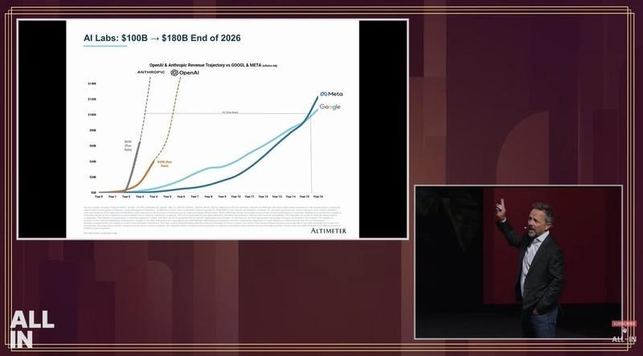
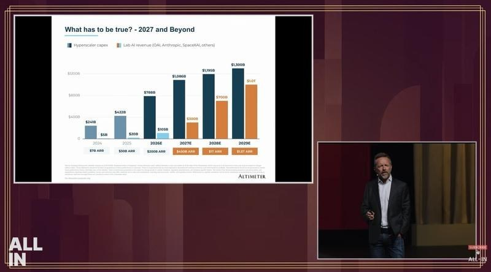
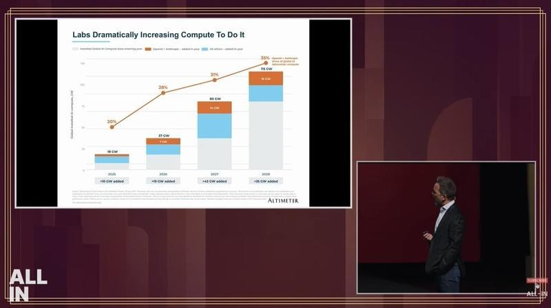
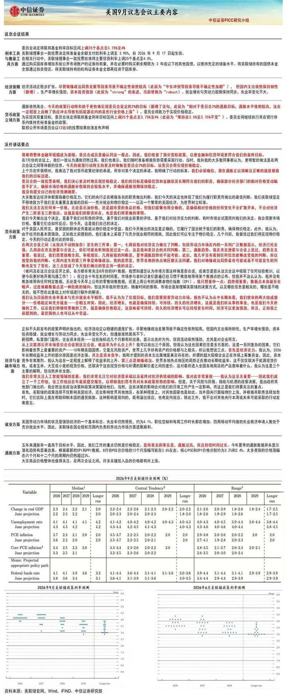
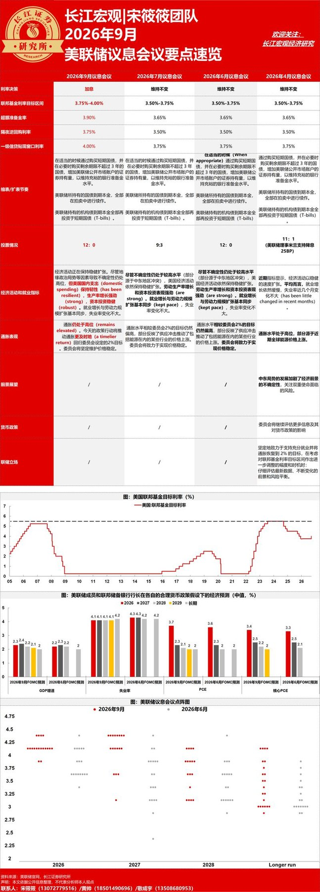

调研纪要 · 2026-09-17 新闻日报
星球 ID: 28855458518111 | 共 321 条帖子 | 精华 101 条
| 查看研究积累
强制同步到研究积累
全部 电子 计算机 机械设备 宏观策略 其他 电力设备 非银金融 汽车 医药生物 建筑材料 基础化工 有色金属 食品饮料 交通运输 轻工制造 通信 国防军工 煤炭 传媒 纺织服饰 家用电器 钢铁 石油石化 房地产 商贸零售 公用事业 环保
书签
【中金食品】安井食品策略会交流要点：成本驱动酝酿涨价，近期经营表现向好
【中金食品】安井食品策略会交流要点：成本驱动酝酿涨价，近期经营表现向好
[玫瑰]公司旺季酝酿提价，以应对鱼糜成本上行压力。
1）背景：受到厄尔尼诺影响，海水鱼资源紧张，预计2026下半年鱼糜价格上行确定性较大。目前海水鱼糜涨幅已比较明显，淡水鱼糜间接影响下小幅上涨。
2）提价策略：公司9月已经收缩促销，幅度约为2-4%；并计划在10月、12月分两步针对鱼糜类产品进行提价，计划两轮提价幅度高单位数。
3）提价影响：作为行业龙头希望通过提价引导行业从价格竞争转向质量竞争。目前已向经销商传达提价安排，后续将根据同行跟进情况、终端接受度灵活调整节奏。
[玫瑰]公司在鱼糜制品成本优势仍突出：1）公司鱼糜采购金额15亿元（占总成本比重约为12%、占鱼糜制品成本比重约为25%），2026年淡水鱼糜使用占比提升至70-80%。2）公司对淡水鱼糜价格掌控力较强，要求鱼糜优先保障安井自身生产供应，成本压力小于同行。
[玫瑰]近期经营情况：9月截至目前公司主业营收高于预期，预计正月至少双位数增长。9月高增长一半来自传统渠道、新旧单品的稳扎稳打，另一半来自8月底集中拿货的短期贡献。
[玫瑰]印尼三林集团合作情况：公司前期已经在产品、团队和清真食品认证方面准备充足，预计2026Q4会先有常温产品出口至印尼销售。公司计划先有市场基础再落地工厂，当地工厂建设周期2.5-3年，最早2028年落地。
[玫瑰]盈利预测：我们预计公司2026/27年营收184.8/203.8亿元，同比+14.1%/+10.3%；归母净利润17.1/20.4亿元，分别同比+25.7%/+19.6%。当前市值对应安井A股14.5/12.1倍，对应安井H股10.2/8.6倍，股息率6.8%，估值处于低位，建议布局。
【国盛家电】视源股份调研要点260917
【国盛家电】视源股份调研要点260917
[太阳]板卡前瞻性备货贡献强劲利润
[玫瑰]业绩：H1量个位数增长价增30%+；毛利率20%+（提升超8pct）
[玫瑰]库存：目前70e+低价库存可覆盖全年需求、下半年不会大规模囤货、利好现金流
[玫瑰]价格传导：高峰时期每周谈价格、涨价传导顺畅，未来价格温和上涨下公司相对竞争优势将放大
#囤低价库存赚时间差是表象、反应的是公司对产业链趋势变化的敏锐度、上下游把控能力、规模经济
[太阳]控制器、汽车电子、企业服务强劲增长
[玫瑰]白电控制器：国内除格力美的均合作、海外今年新增日本大金，优势为与液晶板卡生产环节高度协同、客户也能复用#预计未来仍可30%+高增速、参考和而泰有翻倍空间
[玫瑰]汽车电子：今年长城明显起量，奇瑞、极氪等客户已在定点验证阶段，预计未来大几十增速#H1掌锐净利率7%、盈利拐点已现
[玫瑰]企业服务：预计长期45%+增速，海外本地化营销团队部署+微软认证驱动、内销营销架构调整后放量#参考亿联25e收入45%净利率、海外有5倍以上空间10倍以上利润弹性❗️❗️
[太阳]教育复苏
[玫瑰]上半年增速6%、在行业偏冷情况下公司推教育电脑（全年预计14e）、课堂反馈系统、AI备课等积极探索场景#α强劲
#短期存储涨价催化、长期企业服务&控制器接棒成为主要驱动力、今年20e扣非对应15×pe
国盛家电 徐程颖/陈思琪/盘姝玥 。
CoreWeave 拟发行 30 亿美元可转换债券
CoreWeave 拟发行 30 亿美元可转换债券
Brad Gerstner 在 All-In Summit 上的分享：
Brad Gerstner 在 All-In Summit 上的分享：
Anthropic、OpenAI 和 SpaceX 的集体年化收入 ARR 目前 约为 1000 亿美元。Brad 认为，到年底达到 1800 亿美元，才能维持 AI 交易的完整性
AI 实验室的收入必须在 2029 年达到 1 万亿美元，才能跟上超大规模云服务商（MAG 5）的资本支出
2026 年新增 19 GW 计算能力，其中 7 GW 来自 OpenAI + Anthropic。2027 年将新增 43 GW



3 图
Rubin/1.6T以太网向M9等级迁移
Rubin/1.6T以太网向M9等级迁移
2026 3季度业绩预测：
2026 3季度业绩预测：
旭创：环比30%；
新易盛：环比50%；
天孚：10亿+；
沪电：20亿；
胜宏：20亿-；
深南：17.5亿；
景旺：8-10亿；
巨石：环比50%；
仕佳光子：3-3.5亿（环比50-75%）；
太辰光：收入15亿左右（2季度6.6亿）；
长芯博创：环比翻倍；
【长江电新】T链开启国内审厂，产能扩建是此轮核心，订单交付如火如荼，继续坚定推荐此轮拐点！
【长江电新】T链开启国内审厂，产能扩建是此轮核心，订单交付如火如荼，继续坚定推荐此轮拐点！
#供应商产能供不应求，周产量持续新高：最新周产量达600+，如期兑现，后续量产将持续加速：依据供应商最新口径，目前大客户周产量达600+，完全符合此前爬坡规划，未来预期9月底将超1000，10月继续高速爬坡，量产拐点明确。
#产能将是后续核心重点，26H2有望迎来新一轮扩产
1、首批1.5w台量级将打满现有供应商产能：按照1.5w台一个季度交付拆算，10-11月周产量将突破2k+，订单与产能同步推进；
2、T审厂开启，产能扩建是核心，后续仍有新订单预期，新一期扩产可期：年内除首批订单外，仍有新订单预期，近期T将开启审厂（不同于例行审厂，此次核心是产能问题），部分Tier1已接到非常激进的产能扩张计划，若后续订单下放，现有供应商现有+在建产能将全部打满，新一期扩产已在规划。
#T链量产拐点越来越清晰，看好核心进攻组合
1、轻量化龙头【福赛科技】，在手料号20+，ASP直逼1w+，后续价值量有望继续提升，主业稳健增长；
2、旋转环节谐波减速器龙头【斯菱智驱】，谐波全型号在手，轴承产品持续推进，泰国基地26Q3达产匹配客户新需求；
3、总成龙头【三花智控+拓普集团】，此外新晋Tier1【新泉股份】，配套新泉合作【凯迪股份】，26Q3有望完成产线布置+产品出货。
4、丝杠厂商【北特科技+浙江荣泰】，大小丝杠核心供应商，订单指引匹配客户量产节奏
5、设备厂商【田中精机】，手部电机绕线设备对接
3D打印耗材产业链调研更新
3D打印耗材产业链调研更新
————————————
[玫瑰]3D打印需求井喷，带动PLA行业景气度修复。上半年国内3D打印设备产量同比增长48.5%，PLA约占FDM类耗材的70%，25年3D打印用PLA市场需求约7万吨，预计今年同比翻倍，#未来三年CAGR也将维持50%+。PLA新产能释放不及预期，今年主要产能增量仅海正生材7.5万吨于5月投产，预计今年实际产量增长约4万吨，目前PLA厂家均接近满负荷生产，仍难以弥补缺口。供需错配下，今年PLA实现三连涨：4月出厂价上调700元/吨，7月下旬再涨700元/吨，8月起3D打印用PLA料又"悄悄"涨了800元/吨。我们判断随着3D打印Q4消费旺季到来，各环节备货量增加，价格有望进一步上涨。
[玫瑰]景气度向上游传导，#乳酸是预期差最大的环节。乳酸过去同样受到可降解塑料政策不及预期拖累，行业景气度低迷，近年新增产能有限，目前产能均为满负荷生产。但海正生材7.5万吨PLA于5月投产，金丹科技7.5万吨PLA于6月试生产，预计合计将对乳酸新增超20万吨需求，而乳酸新建产能投放需18个月，即使现有产能扩建也至少需要9个月，供需矛盾更为尖锐。我们判断未来金丹PLA投产后，乳酸外售量将大幅下降，供需缺口将进一步放大，价格上涨空间极大。
[玫瑰]我们更看好乳酸涨价，本轮有望突破历史高位1.2-1.3w，PLA因为乳酸紧张也保持紧张，能维持或增加毛利率。重点推荐：
1、金丹科技：约20万吨乳酸+3万吨乳酸盐，按单吨1w的均价，30%的毛利率，20%的净利率保守测算，对应4+亿净利润，7.5万吨PLA对应单吨1000利润，合计约5亿。若价格达到1.2w，将对应7-8亿利润，目前仅5倍。
2、海正生材：现有12.5万吨PLA，拟建7.5万吨PLA，保守按单吨1000利润测算，当前年化利润1.25亿，远期利润2亿。若价差走扩至2000，年化2.5亿，远期4亿。目前仅8倍。
3、家联科技：线材龙头绑定拓竹，主要看放量进度。若放量顺利，明年20亿3D打印业务收入，对应10%净利约2亿，其他业务对应1.5-2亿利润，合计3.5-4亿，目前11倍。
电子烟：国内HNB产业趋势明确，核心供应链受益
电子烟：国内HNB产业趋势明确，核心供应链受益
[太阳]今日HNB板块大涨，产业链景气趋势明确，9月26日国标征求反馈截止。8月底以来国际烟草高管陆续来华访问中烟高层，或加大国内HNB放开力度。
[红包]国际市场已进入HNB新一轮产品生命周期。25年英美Glo Hilo、日烟Ploom Aura上新，26年韩烟Lil Tonino接力，全球HNB新品加速推进。#我们联合韩国烟草独家电话会，充分明确资源投入&市场空间信心。
[玫瑰]国内万亿替代市场空间渐次打开。25年国内卷烟产量2.5万亿支，占全球市场~50%，零售端规模2万亿+，行业税利总额1.6万亿，是重要财政支柱，税收压力倒逼，通过市场放开吸引增量客群、实现税利指标的方向清晰。
[玫瑰]对标海外，新型烟草转型是大势所趋。国际烟草公司先行，菲莫、英美新烟业务营收占比40%+/15%+，17年以来业务CAGR=20%-30%，有效对冲传统卷烟销量下滑的业绩压力，改善产品组合及综合盈利能力，日烟、韩烟紧跟转型节奏。
华宝国际/华宝股份，恒丰纸业，盈趣科技，思摩尔，陕西金叶、新宏泽
[红包]918义乌快递将涨价！！重视快递板块投资机会！
[红包]918义乌快递将涨价！！重视快递板块投资机会！
#义乌涨价锁盘坚定反内卷信心：义乌重新锁盘提低价，明天起（#9月18日） 末端提0.3~0.4元/票，#总部加收0.1~0.2元/票。义乌单量占比约10%，对总部单票UE直接+0.01~0.015元！除直接业绩弹性外，意义更为重大：说明#反内卷极坚定！快递板块#业绩确定极强！当下#估值极低！
#各地旺季涨价超预期： 9月起河北反内卷+0.1~0.2元/票，河南旺季+0.2~0.3元/票，各地旺季涨价，#义乌涨价也将直接带动周边同步涨价， 此前市场预期是旺季不涨价，远超市场预期！
#观点：义乌锁盘涨价+各地旺季涨价，说明反内卷延续性强（不要再怀疑），我们预计2026-2030年头部业绩增长中枢#10%~15%； 合理估值有望从9X（今年）修复至12X（#30%+空间）； 资本开支下降+分红比例有望提升→#5%+股息率，先看#40%+空间。#胜率极高赔率合适，现价强call！
【华为发布AI时代的全新计算架构：Peerium计算架构】
【华为发布AI时代的全新计算架构：Peerium计算架构】
9月17日，华为发布AI时代的全新计算架构–Peerium计算架构。据华为介绍，Peerium计算架构是基于嵌套并行，统一内存寻址、平等互联实现百万级处理器强扩展的计算架构。
针对 “CPO 相关 PCB 从原本的 M9 降级至 M4” 的传闻：
针对 “CPO 相关 PCB 从原本的 M9 降级至 M4” 的传闻：
“首先 CPO 不会这么快落地，良率上不来是一个主要的原因，而且实际的应用上还有非常多不同的信号要兼顾，芯片运算速度迭代上去还是得升回来，加上就算落地也不是全部场景，不可能 Scale up 和通用服务器全部上 CPO。最后就是规格层面，就拿 Nvidia SpectrumX 采用 CPO 的方案来看，也只是从 M8 改成 M7，并没有像传闻里降级幅度那么大。”
【中信证券研究】互联网行业26Q2季报总结及投资展望：AI兼顾投入与ROIC，主业聚焦业绩韧性
【中信证券研究】互联网行业26Q2季报总结及投资展望：AI兼顾投入与ROIC，主业聚焦业绩韧性
[咖啡]行情回顾：估值低位震荡，聚焦盈利与现金流情况。2026Q2，恒生科技/中概互联网指数累计-3.8%/-13.9%（同期纳斯达克指数+21.4%）；2026Q3至今（截至9月11日），恒生科技/中概互联网指数累计-3.4%/+0.5%（同期纳斯达克指数+0.5%），7月以来板块的核心定价影响因素从外部风险偏好的分化转向市场流动性预期、板块业绩兑现与现金流情况。截至9月11日，恒生科技指数NTM PE为15.2x，接近历史均值减一个标准差位置，估值低位震荡。
[咖啡]业绩回顾：收入稳健增长，盈利修复分化。收入方面，26Q2国内主要互联网公司收入合计同比增长5%，增速与26Q1持平，其中美团（同比+14%）、BOSS直聘（同比+14%）、腾讯控股（同比+11%）实现较好增长。利润方面，国内主要互联网公司26Q2 Non-GAAP净利润合计同比-9%，降幅较26Q1的-32%明显收窄。展望26H2，互联网公司收入端有望保持稳健增长。根据Visible Alpha一致预期，26Q3/Q4主要互联网公司收入合计有望同比增长8%/9%，利润端修复有望延续；根据Visible Alpha一致预期，26Q3/Q4主要互联网公司Non-GAAP净利润合计有望同比增长8%/37%。
[咖啡]AI进展：中国大模型加速追赶，兼顾投入与ROIC。7月以来，中国大模型加速迭代，根据Artificial Analysis，Kimi K3、GLM5.3以两个月左右的时间差接近GPT-5.6、Fable 5的评测水平；DeepSeek、千问、混元等模型能力亦持续提升，国内多家厂商进入全球第一梯队。此外，26Q2国内外云厂商对于AI投入的ROIC均做出了更为清晰可观的指引，根据阿里巴巴业绩会，在当前AI产品平均毛利水平下，AI capex可在约3年内回本；根据腾讯控股业绩会，当下市场算力需求旺盛，即使把算力全部对外出租给腾讯云客户，也能创造可观营收。展望后续，AI叙事下，建议关注头部互联网公司模型迭代、智能体渗透节奏、应用拓展以及商业化兑现有望带来的催化。
[咖啡]行业视角：股东回报提供安全边际，业绩高确定性提供上行驱动。股东回报方面，截至8月31日，欢聚、网易云音乐、BOSS直聘、TME年内回购回报率达5.9%/5.3%/3.8%/3.2%，微博、唯品会、欢聚、京东年内已支付股息回报率达9.1%/4.8%/3.9%/3.5%，且欢聚提升2026~2028年股东回报计划，满帮、BOSS直聘维持中长期股东回报指引，均提供了较强的安全边际。业绩方面，26H2部分公司得益于产品周期、基数效应等有望迎业绩拐点。
[太阳]投资策略：2026Q2以来，恒生科技指数估值保持低位震荡，板块的核心定价因素从外部风险偏好的分化转向市场流动性预期、板块业绩韧性和现金流情况。展望26H2，我们认为板块行情仍将围绕AI进展及主业业绩确定性演绎。AI角度，建议关注头部互联网公司模型迭代、智能体渗透节奏、应用拓展以及商业化兑现有望带来的催化；行业角度，建议关注业绩确定性较高、现金流及股东回报较好的公司。
[玫瑰]欢迎联系中信证券互联网/新零售/地产团队
【国盛计算机】Kimi发布金融行业解决方案，AI办公加速落地
【国盛计算机】Kimi发布金融行业解决方案，AI办公加速落地
[太阳]#2026年9月17日月之暗面发布金融行业解决方案，基于海内外10+权威数据源，落地9项专业技能与5项合规安全措施，将AI能力融入金融业务工作流。
#数据源及生产工具： 接入Wind、标普全球等数据源，内置Word、Excel等Office格式产物生成工具，并在推进WPS等中文办公系统接入，推动研究资料和分析成果更顺畅地进入团队协作。
#金融技能： 将金融业务关键环节封装为机构财务建模、机构研究报告等9个Skill，通过Skill使AI嵌入专业工作流，显著提升业务效率。例如机构财务建模技能可使财务建模人力投入由5–7人天降至0.5–1人天。
#合规方案： 打造风险评估网关，支持跨场景复用，已完成真实业务试点。
[太阳]我们认为AI办公是应用侧下一个重点落地方向，当前各模型公司均在积极布局，看好智能提升、入口打磨、生态完善为相关厂商带来收入增长弹性，模型厂ARR有望获得更多元增长驱动力。
#相关标的
1）模型层：智谱，MiniMax等；
2）AI应用：金山办公、合合信息等；
3）金融科技：同花顺、东方财富等；
4）国产算力：寒武纪、海光信息等；
5）算力租赁：宏景科技、协创数据、东阳光等。
风险提示：技术迭代不及预期风险；经济下行超预期风险；行业竞争加剧风险
☎️联系人：孙行臻/徐瀚/李纯瑶/王心悦
🏆【天风轻纺孙海洋】恒丰纸业：重视低估高潜HNB标的
🏆【天风轻纺孙海洋】恒丰纸业：重视低估高潜HNB标的
🎈周五华宝股份（上海）调研欢迎参加！
#HNB为当前稀缺消费叙事。今年来政策节奏显著提速超预期，我们预计明年初国内将启动试点；基于我国人口基数及供应能力等，我们预计HNB群体有望在未来三年迅速倍增放大，斜率显著快于海外，直接带来相关产业链倍增扩容。
#恒丰：国企+中烟系+海外链+低估值
1️⃣当前环境下国企身份具备重要产业价值，或是配套耗材（用纸/香精/烟标等）未来重要竞争优势；
恒丰隶属黑龙江省国资，国内卷烟用纸绝对龙头，也是菲莫/英美核心供应商；在国内外烟草体系具备极高壁垒优势，未来有望充分放大产业协同。
2️⃣公司为国内目前唯一能供应HNB全系列用纸企业，叠加中烟系核心供应商；我们预计未来公司在HNB市占用纸进一步提升；
同时，受益更高技术门槛及产品定位，我们预计HNB用纸盈利能力显著高于传统卷烟，优化盈利结构。
3️⃣烟标业务蓄势待发，其市场十倍于用纸。公司计划今年底投产，明后年加速爬坡达产；目前一二期规划80万大箱，具备进一步扩产空间。
在卷烟用纸结构改善同时，烟标业务将成为公司全新增长极，且销售体系复用度极高，盈利同样高于传统卷烟用纸。
■公司运营扎实基本面稳健，当前市值30亿，约13xPE，1xPB。考虑HNB产业进展及烟标起量，我们认为公司具备较大市值空间；建议积极关注！
----------------
欢迎交流 | 天风轻纺
孙海洋/张彤/吴立
【同飞股份】有望从逻辑走向订单验证-260917
【同飞股份】有望从逻辑走向订单验证-260917
公司在海外AIDC领域的客户和产品品类在持续扩圈，我们此前推荐的逻辑在强化，继续看好。
[太阳]#产业背景： CSP客户对于液冷环节的集成度要求提升，冷板厂商普遍不具备CDU的生产能力，急需寻求代工来扩展自身提供散热整体解决方案的能力。而Rubin对于液冷的标配，带来CDU市场空间较25年数倍提升，提供了新晋厂商的生存空间。凭借在储能液冷和数控装备液冷领域的龙头地位，同飞股份的液冷CDU技术实力和出货量均为国内头部水平。
[太阳]#液冷CDU卡位独特，有望获取海外较高份额。 经产业链交叉验证，公司与多家头部液冷台厂联合开发CDU，后续基本独供。1MW产品已进入英伟达RVL名录，样机已发美国客户测试；2MW+产品预计年内送样。
[太阳]#主业筑牢盈利基本盘。 主业储能液冷行业近年明显出清，格局优化，公司预计占全球30-40%份额；后续保守看年化增速30%+。近期突破LG等储能海外客户，盈利能力有望逐渐提升。数控装备温控公司系国内龙头，近年实现对日韩的进口替代，并有望出海。
[太阳]#高端领域印证技术实力。 公司是国内少数切入半导体设备（晶圆切割、刻蚀等）温控领域的液冷厂商，±0.02℃的温控精度要求相较数据中心及储能领域的技术难度更大。半导体设备温控今年有望形成亿元收入体量。光模块液冷已有样机供客户验证。
[太阳]空间：我们预计公司数据中心以外主业26-27年归母分别为3/4亿；数据中心业务按照27年出货2500台1MW+级CDU的假设对应3.5亿利润；按照28年拿到NV 10%市场份额（公司绑定的客户在冷板领域的份额合计过半）对应10亿利润。
哈尔斯：擎天通过太空验证，后续有望逐步产业化
哈尔斯：擎天通过太空验证，后续有望逐步产业化
[太阳]事件：近日擎天星能柔性CIGS（铜铟镓硒）空间光伏组件及阵列单元先后接受了国内头部航天院所及权威第三方检测机构的空间环境模拟测试。CIGS封装验证模块在极端真空高低温循环、全光谱（AM0）响应以及高能电子辐照测试中，#展现出了卓越的环境适应性和独树一帜的温光协同自修复能力。
[玫瑰]真空高低温循环：测试结果显示组件性能无衰减，实验前后转化效率分别为14.73%/14.69%。#彻底攻克传统柔性材料在太空易剥离、易老化的系统性工程难题。
[玫瑰]AM0光谱响应：AM1.5环境转换效率为18.90%、AM0环境转换效率为16.53%。#展现良好抗辐射与光谱响应适应能力，在跨环境光谱（AM1.5至AM0）中展现极高效能一致性。
[玫瑰]电子辐照与自修复：在高达1×10^15电子通量的轰击下，实测四组模块相对衰减均控制在9.61%~12.51%之间，且系统未发生任何物理分层或不可逆的互联电学击穿。经历辐照损伤后，依托光生载流子的大量注入，实测恢复率高达99.4%。全面验证该空间系统的卓越自愈合潜力。
[玫瑰]综合来看，擎天星能柔性CIGS完全满足空间飞行器太阳能阵列的在轨使用与长寿命工况要求，已具备#商业化推广及在轨应用的先决条件，并成功跨越了深空探测与低轨巨型星座等重大空间工程的相关准入门槛。
[太阳]哈尔斯已战略入股擎天星能，我们预计擎天多个国家队首次上星验证将在Q4逐步落地；之后公司与擎天有望进一步展开合作，新业务增长潜力可期。此外，公司主业方面H2收入增长提速，收入/利润增速同环比均有望表现靓丽；结合近期关税波动来看，#泰国关税较为平稳，产能后续受关税风险较小，国内关税若降低、整体利润率有望进一步修复（公司已适应国内/海外基地互相转产）。目前对应27年利润，#PE估值已回落至10X以下，重视低位布局机遇。
📑GS CHINA WRAP 高盛中国收盘综述
📑GS CHINA WRAP 高盛中国收盘综述
📉 上证综指下跌0.41%，科创50下跌0.61%。
📉 上证50下跌0.74%，创业板下跌0.40%。
📉 沪深300下跌0.45%，中证500下跌0.37%。
💹 总成交额（万亿元人民币）1.84，较前一交易日下降0.86%。
📊 美联储宣布加息25个基点之后，中国市场全天走势震荡，午后交投活跃度回落，各大指数悉数收跌。
🏦 利率敏感板块今日承压最重，黄金矿业股普遍下跌约4%至6%。
💻 科技板块在连续两日反弹之后表现分化。
🎯 国内GPU相关个股跑赢大盘，市场关注华为全联接大会2026，本次大会将发布即将推出的昇腾960人工智能芯片。
📈 摩尔线程（688795.SH）上涨8.68%。
📈 沐曦（688802.SH）在限售股解禁背景下意外大涨14.44%，成交额约为20日均值的7倍，本次解禁股份占解禁前流通盘的75.38%。
🚢 其他板块方面，航运板块重回市场焦点，招商轮船（601872.SH）盘后触及涨停。
🔋 宁德时代（30050.SZ）下跌0.39%，在连续两日大幅抛售后，今日行情有所休整。
📄 公司昨日披露回购仍在持续推进，累计回购金额达11.47亿元人民币，约占计划回购总额的2.9%-5.7%。
🗣️ 公司同时表示，将在未来数日针对整车厂把电池订单转向其他供应商的相关传闻作出回应。
📰 重点新闻方面，值得留意南华早报报道，比亚迪、小米、中际旭创、中国银行以及宁德时代或将随同主席下周赴美进行国事访问，代表团名单仍存在变动可能。
💱 资金流向：我们卖盘规模为买盘的1.1倍。
🚗 买入汽车零部件和CRO板块。
🖥️ 卖出GPU与AI数据中心电源板块。
🔋 电池板块双向操作。
📑GS KOREA FINAL - MUTED 高盛韩国收盘综述 —— 市场交投清淡
📑GS KOREA FINAL - MUTED 高盛韩国收盘综述 —— 市场交投清淡
📊 韩国综合指数：变动 - 0.04%，点位 6715.4，成交额 112 亿美元，外资净卖出 16.48 亿美元，本土机构净买入 1.15 亿美元，散户净买入 2.99 亿美元。
📊 韩国创业板：变动 + 0.76%，点位 822.2，成交额 41 亿美元，外资净卖出 0.24 亿美元，本土机构净买入 0.33 亿美元，散户净卖出 0.18 亿美元。
📈市场回顾
📌 今日市场再度维持区间震荡，指数来回波动没有明确方向，在美联储议息会议结束后，韩国综合指数尾盘走低，最终近乎平盘收盘。
📌 外资再次成为市场主要净卖出方，抛售主要集中在科技板块，而本土机构与散户投资者为净买入。
📌 除去科技板块，在加息背景下金融板块表现相对抗跌；国防、造船等工业板块受个股独立利好因素拉动上涨。
📌 韩元贬值 33 个基点，汇率报 1 美元兑 1381.50 韩元，成交额相比近 20 日均值下滑 33%。
📰主要新闻要点
🔻半导体板块（下跌）：三星电子 (005930) 下跌 0.4%，SK 海力士 (000660) 下跌 0.8%。两只个股临近收盘走低，受美光在印度扩大芯片产能相关消息影响，该消息意味着行业竞争进一步加剧。资金流向呈现明显两极分化，外资持续抛售存储芯片，三星电子遭外资净卖出 4.07 亿美元、海力士遭外资净卖出 8.93 亿美元；而公司回购报价对股价形成支撑。
🔺船用发动机板块（上涨）：今日韩国综合指数内表现最好的主题板块之一。本土券商发布研报称，韩华发动机 (082740) 上涨 10.3%，依托韩华集团 AI 数据中心以及浮动数据中心业务，该公司有望获得新需求，拿下四冲程中速发动机的供货订单。消息称韩华发动机明年半数以上产能已经被船舶订单预定，剩余部分产能极大概率将承接 AI 数据中心发电机组的订单。同赛道的发动机企业、造船厂同步上涨，STX 发动机 (077970) 上涨 5.9%，现代重工 (329180) 上涨 6.6%，为本板块内涨幅靠前标的。
🔺国防板块（上涨）：同样跑赢大盘。高盛韩国国防板块指数上涨 5.7%，由韩华系统 (272210) 上涨 12.6% 带动，这家公司宣布将与阿联酋头部国防企业 Edge 合作，在中东地区搭建防空系统。本次合作是韩国与阿联酋广泛双边合作的一部分，其他布局中东市场的国防公司同步上涨，LIG D&A (079550) 上涨 6.3%，韩华航空 (012450) 上涨 4.0%。
国海机械｜图解光模块设备39——排bar/拆bar机
国海机械｜图解光模块设备39——排bar/拆bar机
【国联民生电子薛宏伟团队】OCS市场空间广阔，建议密切关注
【国联民生电子薛宏伟团队】OCS市场空间广阔，建议密切关注
【长江军工】民用大飞机&航空发动机专题跟踪
【长江军工】民用大飞机&航空发动机专题跟踪
浙江黄酒专家交流要点 20260917
浙江黄酒专家交流要点 20260917
[玫瑰]兰亭：该经销商今年兰亭合同金额同比增长20%，目前打款完成50%以上、进度快于去年，#库存比去年最高点下降10%左右（按全年合同金额算）。从消费场景来看，兰亭在绍兴从礼品开始向宴请场景扩散。
[玫瑰]1743：目前据绍兴点状数据来看，#1743回款同比去年实现翻倍增长，1743目前经销商每箱开票价考虑费用后大概在170+，相比纯正五年明显更高，未来有望持续贡献利润。
[玫瑰]传统产品：部分历史留存产品，因销量和毛利未达成公司最新要求，被逐步清理。另外，纯正五年存在部分被1743部分替代的情况，五年以下的三年等更低价的产品承压。
[玫瑰]未来展望：从行业对比来看，兰亭的价格管理相对最优，未来希望省外持续招商后价格体系秩序能保持良性。
[太阳]注：以上反馈均代表区域样本数据，不代表整体数据，仅供参考。
详情欢迎沟通 · #长江食品饮料董思远团队，恳请鼎力支持[爱心]~
【中信科技与新兴产业】Kimi发布金融行业解决方案，AI从单点辅助走向金融工作流端到端交付
【中信科技与新兴产业】Kimi发布金融行业解决方案，AI从单点辅助走向金融工作流端到端交付
🎉 月之暗面于9月17日发布Kimi金融行业解决方案，整合面向金融行业的产品与能力，涵盖10+权威数据源、9项金融技能和5项合规安全措施，以及机构级的数据建模和报告交付能力，覆盖持仓早报、财报点评、项目筛选、深度研究和组合复盘等场景。在已落地的机构合作中，过去以天计的资料处理和初稿制作已压缩到小时级。目前已有数十家金融机构基于Kimi模型、Kimi企业版和Kimi Work等产品开展业务创新或共建金融方案，覆盖头部券商、商业银行、风险投资基金和投研数据机构。
🎁 数据与Skill层面：网页版kimi.com、桌面端Kimi Work及Kimi Code内置Wind、东方财富、S&P Global、财联社、财新数据等海内外权威数据源，通过MCP直接接入研究任务，关键数字可回到原始出处核对。9项金融Skill包括机构财务建模、机构研究报告、机构PPT、金融动态图表、业绩点评、一致预期地图、组合复盘、持仓早报、HK IPO透镜等，已在不同金融机构的各类真实任务中跑通：投行财务建模人力投入由5-7人天降至0.5-1人天，行业深度研究周期从10-20天缩短至~2天，商业银行授信单户材料准备效率提升5倍以上，保险投决PPT制作由7-10人天降至约2人天。
🎯 合规层面：Kimi正与中信建投证券共建“风险评估网关”，将安全合规要求落实为数据分类分级、个人信息保护、数据源与工具访问授权、生成内容核验与人工复核、审计与责任追溯5项措施。该网关已在真实业务中完成试点验证：中信建投基于Kimi托管智能体构建“临时受托报告生成”智能体并接入内部业务系统，覆盖50余家发行人、100余只存续公司债券的60余份报告制作；智能体与既有业务系统的接入原计划需2个月、实际3个工作日完成，单份报告人工制作时间由约30分钟缩短至10分钟，人工投入下降67%。该网关可跨场景复用，为智能体向更多业务场景规模化拓展奠定效率基础。
📊 商业化层面：Kimi金融行业解决方案已全面上线，所有用户可在kimi.com安装体验9项金融技能和10+数据源插件；专业知识工作者和开发者可在Kimi Work桌面端、Kimi Code中调用数据源插件、金融技能及自定义插件和电脑本地Agent能力；面向企业的Kimi托管智能体服务则提供可配置、可审计的运行环境，支撑智能体进入真实业务流程。此次发布正值公司商业化加速兑现期，据彭博社报道，月之暗面ARR从2026年3月的1亿美元增长至8月的10亿美元，公司内部目标为年底达到20亿美元。金融行业解决方案的推出，是其商业模式向垂直行业方案延伸的重要一步。
🌹 欢迎联系中信科技与新兴产业团队！
【国泰海通环保徐强团队】锂电：龙头提供确定性，二线提供弹性
【国泰海通环保徐强团队】锂电：龙头提供确定性，二线提供弹性
#近期市场出现关于去龙头份额的讨论，我们认为：
#供应链多元化不可避免，锂电产业从增量要增长。车企销量规模增加，供应链多元化属于正常现象。25年/26上半年，我国动储电池产量1755.6/1068.9GWh，同比增长60%/53%；国内电池企业份额提升，日韩几增长出现掉队。宁德时代26H1产量498GWh，同比增长60%。
#二线企业市占率低，体现弹性大。目前BC外电池企业市占率基本在5%以内（calb 5.1%，eve 3.4%，xwd 2.4%），部分客户的突破即对增速有很明显拉动。eg. 理想i9 欣旺达/中创新航，小米澎程 中创新航/欣旺达，宝马大圆柱 亿纬，大众 国轩。随着大客户份额提升以及新客户的导入，eve预期出货yoy+50%，calb预期翻倍。
#当前担心需求下滑/盈利下修，预期修正后板块配置价值高。估值回落往往领先业绩也提前见底，目前龙头估值回落历史极值，二线标的增长态势更高
#建议关注：宁德时代、欣旺达、亿纬锂能、中创新航、国轩高科。
[玫瑰]欢迎联系国泰海通徐强/牟俊宇/余玫翰
🏆🏆【兴证地产】828政策后，土拍市场跟踪
🏆🏆【兴证地产】828政策后，土拍市场跟踪
[玫瑰]成交量：近两周（8.31-9.13）300城住宅类用地成交面积1460万方，同比-20%；金额708亿元，同比+24%，其中一/二/三线分别+85%/+35%/-16%。
与一二线城市今年的供应节奏，和大体量地块的出让有关。1-8月一/二/三线成交金额同比分别为+2%/-37%/-17%。
[玫瑰]溢价率：近两周（8.31-9.13）300城平均为6.0%。1-8月平均10%。
其中一线城市12.4%（主要是深圳福田125%溢价率地块拉动，剔除后为7.0%），1-8月一线溢价率为19.8%。#剔除后大幅下降
二线城市2.7%，1-8月为8.9%。
资料来源：中指研究院。[公开资料整理，不涉及投资建议及研究观点] 万分感激[爱心][爱心][爱心]
[太阳]【长江电子杨洋团队】策略会设备材料公司亮点总结
[太阳]【长江电子杨洋团队】策略会设备材料公司亮点总结
[玫瑰]精智达：35e订单目标已经完成，全年订单预期上调，新增15.76亿订单中预计包含18Gpbs FT产品，以及部分HBM产线需求，看好明年订单保持高速增长，此外长存、SOC会有新增订单贡献。
[玫瑰]超纯应材：新阶段产能12e，全部产能落地30e+，刻蚀产品保持高速增长，薄膜沉积与光学业务开始起量，同时小金属限制出口为公司打开了海外拓展窗口。
[玫瑰]金海通：海外销售占比显著增长，占比提升至30%以上（去年同期12%左右），26Q3预计收入4e+，存储分选机Q4出量产机台，2027年存储需求有望大幅增长。
[玫瑰]精测电子：1-8月份新增订单同比增长2倍以上，先进制程新签占比超过7成，年报（4月28日）以来（加上确收部分），估算半导体新签14亿元（同比+180%）。
[玫瑰]北方华创：上半年新签订单约350e（同比+45%），90%来自于IC，Q3毛利率预计改善，27年订单预计加速增长。
[玫瑰]长光辰芯：2026年下半年半导体开启放量阶段，与国内头部量检测公司深度绑定，深度受益国产化率提升趋势。
[玫瑰]西安奕材：供需缺口显著，现阶段总产能约100万片/月，26年底提升至120万片，27年提升至150万片（含武汉厂），新价格有望于2027年开始逐步落地。
欢迎联系长江电子团队！
【太平洋医药|深度】英矽智能：稀缺AI制药平台，关键临床启动与高频BD共振
【太平洋医药|深度】英矽智能：稀缺AI制药平台，关键临床启动与高频BD共振
🔥主要推荐逻辑：BD密集落地促进管线临床开发，AI制药赛道首个管线进入III期验证阶段
💎BD爆发式落地，年内新签合同总金额约73亿美元
公司自研管线对外授权+合作研发双线并进。2026年已落地/推进的重点交易包括：施维雅（潜在约8.88亿美元）、礼来（首付1.15亿美元、潜在总额约27.5亿美元）、SK生物制药（首付及近期里程碑最高约0.18亿美元、潜在总额>25亿美元）、武田（首付约0.6亿美元、潜在总额最高约6亿美元+销售分成）等。
💎核心管线Rentosertib的III期GENESIS-IPF-3研究启动
Rentosertib（ISM001-055）是全球首个由AI发现靶点并设计的TNIK抑制剂。IIa期临床数据显示60mg QD组患者FVC平均改善+98.4mL，为首个公开发表的IPF进程逆转数据。2026年9月10日，Rentosertib III期临床试验完成首例患者入组。试验计划招募约320名IPF受试者；试验组Rentosertib 60mg QD（n=192）vs 安慰剂（n=128，3:2随机），持续52周，主要终点为52周FVC较基线变化值（mL）。
💰盈利预测与估值
综合考虑平台稀缺性、管线临床兑现节点与BD现金流，我们预计公司2026/2027/2028年营业收入分别为1.74/2.42/3.45亿美元，同比增速分别为209%/39%/43%。
根据DCF估值模型，测算得出合理市值为64.30亿美元，对应目标股价11.03美元（86.50港元）。首次覆盖，给予“买入”评级。
☎联系人：太平洋医药谭紫媚/张懿
汇量科技：AI Infra投入有望迎来回报期，当下即是配置时点[玫瑰]
汇量科技：AI Infra投入有望迎来回报期，当下即是配置时点[玫瑰]
#1、10月新基建全量上线、AIInfra效果有望逐步显现
公司1H26收入11.6 亿美元，yoy+23.2%；经调整净利润5,211万美元，yoy+39.5%。
公司主动将研发资源切换至新一代 AI Infra，10月新基建全量上线后收入增速预期有望修复，将是验证的关键节点。目前新基建小范围测试下效果已经达到原有基建水平，新架构收敛与迭代效率显著快于老基建，是未来收入与利润弹性的核心来源。
#2、AI供给爆发反而强化高效买量的价值，格局向头部集中
H1苹果App Store新发应用约56万款（近去年两倍、接近 2025 全年），但下载量仅+2%。开发门槛下降而获客/变现门槛未降，新增供给不自动转化为收入，使得交付业务结果的效果型平台价值不降反升。叠加单次展示有效付费转化比例不到1%，我们判断行业正加速向 Mintegral/AppLovin/Unity等头部程序化投放龙头集中，公司作为能提供全链路结果交付的平台，具备长期发展优势。
#3、游戏IAP ROAS增量空间显著，非游业务同样值得期待
H1混合休闲IAP同比+23%；全球IAP大盘约400亿美元（混合休闲仅约20亿）。公司现有IAA体量显著大于IAP，其IAP空间大。我们看好公司从 IAA向IAP ROAS的延伸，也是打开第二增长曲线的核心抓手。非游业务如电商、短剧等也同样具备可观发展空间。
【金帝股份】依托精密制造能力转型液冷，打开成长空间
【金帝股份】依托精密制造能力转型液冷，打开成长空间
🔥公司自建冷锻冲压CNC产能，贡献核心利润弹性。公司产品包括翅片、分水器、冷板等零部件，配套单机柜价值约27万元。#公司已快速切入双鸿、Cooler Master供应链，目前是台资客户冷锻冲压工艺独家供应商。通过锻造替代部分CNC工序，结合辅助CNC加工，相比纯CNC加工效率提升5倍，成本降低30%以上。
🌹公司投入4.26亿元在广东、山东建设液冷产能，目前已经具备4亿产值，计划26年底达到8亿产值，27年达到24亿产值。液冷订单高速成长，新订单持续突破，预计收入占比快速提升，打造公司第二增长曲线。
⚙️宸裕精密扩产MIM产能，差异化布局补齐工艺。#MIM一体成型工艺可降低漏液风险，公司目前MIM工艺良率良率约80%，高于行业平均水平。宸裕精密为双鸿DIMM 总成 MIM 工艺唯一通过验证并稳定批量供货的企业。
⚡️风险提示：产业进展不及预期
#口含烟制造门槛最高的是高质无纺布【东财新消费｜零售】【诺邦股份】
#口含烟制造门槛最高的是高质无纺布【东财新消费｜零售】【诺邦股份】
1.若无纺布无法起到缓释的作用，会给口腔产生灼烧的疼痛感。无纺布的改良让尼古丁更慢的缓释提升体验。虽然我国是全球无纺布生产的主要国家，但由于生产壁垒较低、疫情期间大量小作坊进入，大部分供给并不优质且缺乏研发能力。
2.诺邦股份目前布局了5条差异化产线和1条研发试验线，产品品类丰富，其中就包括口含烟滤芯，该产品定价高，毛利率50%。目前月销几吨、占比较小，但我们看好公司增长潜力，原因在于：1.公司研发生产优势较强，有望解决无纺布改良问题；2.同时，公司具备较强的管理和市场开拓能力，将承接下游口含烟需求增长的红利。
3.主业方面，年初至今销售超预期，产能利用率饱和，25年业绩具备弹性，也再次印证公司在无纺布生产和研发方面较强的技术优势。
个股：诺邦股份（滤芯、无纺布改良）无纺布材料供应商，与尼古丁袋生产商的下游合作。
AI 算力需求倒逼，金刚石散热进展加速
AI 算力需求倒逼，金刚石散热进展加速
[玫瑰]高功耗GPU倒逼散热革新
服务器GPU功耗持续抬升，部分峰值接近2300W，局部热流密度突破传统铜基散热物理上限。金刚石热导率为纯铜5倍，是解决高功耗散热的关键材料，有望带动从芯片到数据中心全链条变革
[玫瑰]发展趋势：液冷+金刚石为叠加方案，非替代关系
液冷负责带走热量，金刚石复合材料负责更快传导热量；散热竞争从风冷/液冷架构，延伸至材料维度。风冷逐步被淘汰，常规液冷遇到能力瓶颈，金刚石散热迎来高增长，头部工艺、产能企业优先受益
[玫瑰]预期技术迭代路径，不同方案分层覆盖全场景散热需求
#短期：金刚石‑铜颗粒复合材料主导市场，定位封装基座/过渡层，平衡热膨胀系数，液冷服务器领域有望批量应用
#中期：多晶CVD金刚石进一步渗透高端算力，采用wafer‑to‑wafer键合，作为芯片热沉片深度参与先进封装，适配GPU高流密度扩热需求
#长期：单晶金刚石落地极致热点散热场景，依托chip‑to‑wafer直接键合，面向裸芯片die级衬底、热点点对点疏导；受制于大尺寸制备瓶颈，现阶段以试样研发为主
[玫瑰]重点标的：沃尔德、四方达、国机精工、中兵红箭、黄河旋风、力量钻石、斯莱克、惠丰钻石、恒盛能源等；金刚石加工：英诺激光
【东方通信-半导体】昇腾芯片迭代超预期，国产超节点加速升级
【东方通信-半导体】昇腾芯片迭代超预期，国产超节点加速升级
1、昇腾960系列芯片预计27Q1推出，保持1年1代的高速迭代。根据华为2026全链接大会，昇腾960DT计算性能达2000T FP8，最大支持288GB 显存，显存带宽可达9.6TB/s，计算性能介于H200与B200间。其预计2027Q1推出，较原计划目标提前三季度。960PR将实现8000T FP4计算性能，并于2027Q3推出，较原计划目标提前一季度。970/980预计分别于2028/2029年陆续推出，其FP4计算性能分别为14000/28000，分别对标B300/Rubin芯片。并且会议发布基于灵衢UnifiedBus的超节点集群11颗关键芯片，主要包括鲲鹏CPU、昇腾NPU、灵衢互联芯片、智能存储芯片等，实现算、存、运领域全覆盖。
2、灵衢+二层CLOS组网架构，目标打造10万卡以上超大规模集群。华为正式发布昇腾960超节点，其可实现4096卡集群规模，最大可提供8 EFLOPS FP8算力，预计风冷与液冷版本将分别于2027Q2和Q3上市。华为超节点集群支持多种组网模式：一种是采用两层CLOS单平面组网，可实现3.2万张昇腾960高速互联；第二种是采用两层CLOS多平面组网，可实现51.2万张昇腾960互联。基于10万卡以上的超节点集群，国产卡或将加速10万亿级别大模型训练，驱动国产AI大模型性能升级。
3、国产算力需求高企，国产半导体产业链闭环加速业绩释放。目前国产算力芯片需求旺盛，伴随国产FAB与HBM厂商持续扩产，国内半导体产业链预计加速闭环，驱动国产算力芯片业绩释放。
4、投资建议：（1）国产算力芯片，寒武纪、海光信息、燧原科技、天数智芯、摩尔线程、沐曦股份、壁仞科技、芯原股份；（2）超节点，华丰科技、盛科通信、锐捷网络等。
欢迎联系：舒迪/段笑南
[抱拳]🥇 重视国产算力！【华创计算机 吴鸣远 团队】昇腾产品线全栈提前 20260917
[抱拳]🥇 重视国产算力！【华创计算机 吴鸣远 团队】昇腾产品线全栈提前 20260917
🌟 事件：9月17日华为全联接大会2026上，汪涛把“算力”明确定义为华为AI战略核心：坚持硬件变现，以“超节点+集群”建中国算力底座，并做开源开放生态。
📈 观点：“韬”定律继续发力
#1 重磅昇腾960超节点：基于“灵衢+Hi-ONE”，#为业界首个采用NPO光引擎的超节点，4096卡统一编址，可达8 EFLOPS FP8/16 EFLOPS FP4，面向10万亿参数模型训练推理。
Hi-ONE以5500个NPO光引擎替代4.8万颗800G光模块，省电超550kW、可用度99.8%。落地节奏同步提速：#960DT提前至2027Q1、960PR提前至2027Q3，Atlas 960液冷超节点计划2027Q3上市；超节点已部署超1000套，950规模商用。
#2 未来半年，国产算力链若干节点值得关注：1）长江存储 IPO 上市在即，半导体产业有望充分受益；2）#以昇腾、寒武纪、海光、沐曦和天数等为代表智算芯片新品及超节点放量，板块量价齐升；3）推理token持续爆发，算力景气度持续高增
#3 建议关注：
1）芯片：寒武纪、海光、天数、沐曦、燧原、壁仞和摩尔
2）Fab：中芯、华虹、燕东微
3）设备：华创、中微、拓荆
4）存储：长鑫科技
5）昇腾：华丰科技、杰华特
6）超节点：锐捷网络、中科曙光、浪潮信息、紫光股份、盛科通信、英维克、申菱环境 等
[抱拳][抱拳][玫瑰] 详细 ☎ 华创计算机 吴鸣远/周楚薇/祝小茜/周志浩/杨玖祎/胡昕安/陈科玮 团队
[烟花]【中信电子】CPO落地不改PCB升规升阶趋势，持续看好板块后续投资机会
[烟花]【中信电子】CPO落地不改PCB升规升阶趋势，持续看好板块后续投资机会
领导好，今日市场有传闻提到随着CPO落地，对于PCB的数据传输要求可能下降，材料等级或降规，市场担心影响AI PCB、CCL的市场空间，对此我们认为以上担忧并不符实，具体原因如下：
1）柜内PCB升级趋势持续：AI PCB中70-80%为AI服务器柜内需求，柜内中短距离互联通过PCB连接的趋势明确，以NV为例，GPU互联均通过计算板-铜缆/PCB-交换板的NVSwitch网络实现，CPO应用不仅不会带来PCB降规，反而会因为信号互联速率、复杂度提升，进一步加速上述链路中涉及的PCB板材的升规升阶，目前我们看到客户端M9、PTFE等方案进展顺利，M10已开始预研验证，PCB升级有望进入陡峭周期阶段。
2）柜间交换场景，PCB需求是转移和升级的逻辑：在交换机内部，若采用CPO交换架构，原先主板承担的信号互联需求确有降低，但承载CPO、ASIC的载板（采用msap/sap工艺）会在尺寸、精度、层数、材料上显著升级，考虑到msap/sap工艺的高复杂度，其价值量的边际提升或更为显著。综上CPO交换机PCB整体的升级趋势同样明确，载板化是未来PCB明确的超额增长细分方向。
3）从落地节奏上，短期不存在直接影响：英伟达rubin平台NPO开始应用，CPO大规模落地预计会在28年及以后，对26、27年的行业需求不会产生直接影响。
综上，我们认为CPO的落地不会改变甚至可能加速PCB的升规升级，当前我们仍坚定看好板块投资机会。建议关注以下投资主线：
1）AI PCB/CCL龙头公司：短期业绩表现强劲+中期业绩高增能见度提升，重点推荐：【沪电股份、深南电路、生益科技、景旺电子、兴森科技】，建议关注【广合科技】；
2）此前传统业务占比较高、业绩承压的公司，随年中涨价传导，26H2有望迎来业绩明确反转，同时AI预期有望进一步强化，建议关注：【世运电路、奥士康、崇达技术、迅捷兴、四会富仕】等；
3）受益于CCL持续涨价落地，业绩释放有望超预期，建议关注：【南亚新材、金安国纪、华正新材】。
#其他公司变化情况欢迎联系交流
欢迎联系 中信电子
AI 新材料今日变化梳理（0917）
AI 新材料今日变化梳理（0917）
（1） 台股调整较多、连带了 A
【变化快、变化多】关于 cpo 用 m4/m7 ，但是 2 周之前还传过用 ptfe……
【结论】习惯这种变化吧，一会儿这个，一会儿那个，就是新方案确定之前的常态。
（2） 今天关心三星电机、反馈 T 布很缺的新闻
1） 韩国圈子，ccl 主力是 斗山
斗山的 T布、国内供应是宏和（三星电机前期已向宏和交保证金锁单）
2） 斗山同时在测复材和中材的T布。宏和现在T布产能50-60万米/月，持续放量。
（3）国产链接力
材料角度，cx 链，可以作为一个切入点。例如 tim 材料，mfc，静电卡盘，环氧塑封料，光刻设备，光刻胶等。
（4）短期观点不变，三季报是硬核，新技术是弹性方向[抱拳]
------
（一马平川）
（建材）
（最后2小时，恳请顶格支持[
【国金电子】PCB调整迎布局良机，坚定看好是值得超配的核心板块
【国金电子】PCB调整迎布局良机，坚定看好是值得超配的核心板块
[玫瑰]今天PCB板块整体回调，源于市场对CPO的负面影响产生悲观预期，我们对此的理解是：
[玫瑰]1）CPO这个单一产品确实会替代掉当前的交换类PCB板承载高速带宽信号的功能，但CPO技术迭代仍有较长的产业周期要走，短期影响有限；
[太阳]2）CPO的变化并非孤立的，CPO的高度定制化的设计重构会打破现有PCB的设计思路，这类产品有较高概率会与CoWoP这类封装异构类产品融合，长期来看PCB行业仍然是价值增值的重要环节；
3）当前市场看待PCB的视角仍然只盯着高速通信的演化路径，我们认为这是片面或者不客观的，我们反复跟市场沟通从8卡服务器架构到GB类Rack架构开始，终端对PCB的期望就不再只是放在承载高速信号这个单一方向，终端的设计思路开始寄希望于PCB上完成更多功能的融合和集成，例如当前仍在积极研发的CoWoP、陶瓷基板、玻璃基板、内埋式基板等，可以说PCB在产业链中的重要程度在进一步的加重，这是支撑PCB行业享有更高估值的原因。
[玫瑰]市场习惯性孤立看待方案变化是造成PCB行业反复波动的原因，对此我们的建议是，要么通过研究更全面的看待产业趋势，要么紧盯业绩兑现胜率来排除信息的扰动。基于此，我们认为PCB仍然是下半年值得超配的核心板块。
[玫瑰]求鼎力支持【国金电子团队】
🔥#坚持看多国产大模型 （0917）@华泰计算机
🔥#坚持看多国产大模型 （0917）@华泰计算机
1）Dario说减速，而Opus 5.2已在灰测+Anthropic这两天又签了各种算力，#减速不了一点。
2）智谱已经通过云厂分成+CoWork拓展，#20天内再次上调年底ARR到30e美金 （0831给的24e美金）。
3）国模越来越自信！小米直接实时公开MiMo 2.6的RL训练结果，并且进一步验证，#模型效率提升并不意味着算力需求下降 。更高效的模型（MiMo 2.6 Flash）可以#用更低成本跑更多轮强化学习 ，#节省下来的算力会被继续投入scaling。
#智谱 #MiniMax
☎️From 华泰计算机 郭雅丽/范昳蕊/袁泽世/岳铂雄/王浩天/徐诚伟
【中泰电子】昇腾960发布时间大幅提前，NPO超节点首次落地！
【中泰电子】昇腾960发布时间大幅提前，NPO超节点首次落地！
👉华为全联接大会2026（17-19日）于今日正式举行，更新芯片路线图并发布新超节点，国产算力集群持续完善，重视产业链催化。
#960进度大幅提前、依托τ定律性能翻倍
➠960DT将于27Q1发布，比原计划提前三个季度；960PR将于27Q3发布，比原计划提前一个季度。后续将坚持一年一代演进节奏，规划28年970、29年980。
➠算力、内存及互联带宽逐代翻倍：960DT FP8/FP4算力提高至2P/4P，访存容量288GB、带宽9.6TB/s，均较950翻倍；970 FP8/FP4算力3.6P/14P，互联带宽4.4TB/s（960x2）；980较970进一步翻倍。
#NPO近封装光学技术落地、超节点集群能力显著增加
推出业界首个搭载NPO的昇腾960超节点，基于“灵衢UnifiedBus+Hi-ONE”架构，用5500个Hi-ONE替代4.8w颗800G光模块，单节点支持4096卡互联（是950的4x），大模型训练/推理吞吐分别提升2.3/2.5x，推理时延降低70%；Atlas 860风冷版、960液冷版将分别于27Q2、27Q3推出。
#Agent趋势鲲鹏超节点全新升级
基于Agent发展大趋势，CPU需求提升，鲲鹏超节点全新升级，基于灵衢全光组网，最大支持4096节点（此前8节点），单柜CPU密度由16提升至128，内存池由24TB飙升至256TB，可显著加速Agent性能（10万沙箱启动时间下降30x、沙箱密度提升25%、高性能向量检索吞吐量提升1x）。
建议重点关注：
【晶圆代工】中芯国际、华虹宏力等
【设备】拓荆科技、北方华创、中科飞测、中微公司、长川科技、华峰测控、金海通、伟测科技等
【芯片组件及散热】杰华特、芯朋微、飞荣达等
【PCB】兴森科技、华正新材等
风险提示：行业景气度不及预期；技术迭代不及预期。
☎派点请支持中泰电子王芳团队
早上盘前我们汇报#要重视油运标的，全球油运市场应共振上行。
早上盘前我们汇报#要重视油运标的，全球油运市场应共振上行。
招商轮船午后涨停，我们八月底再发公司新深度
我们强调#估值角度: 招商轮船对应27年预期8倍pe左右，而运价超预期或传导至业绩超预期。
重要的是，我们认为当全球地缘与贸易路径重塑，能源安全焦虑，供应链效率担忧成为左右价格的重要因素，结合供给格局，#油轮作为核心战略资产的议价能力（盈利）与溢价能力（估值）面临双升机遇。
自25年下半年以来发布八篇深度探讨航运投资机会，我们认为#航运这一年、历史新起点
我们已经上线了#华创交运数据全景看板，AI赋能一站式展示，把时间还给思考与研究。
此外，布局后续市场（2027），我们建议#战略关注航空制造领域，包括两机出海逻辑以及国产大飞机
明天（周五）上午我们组织#航材股份 调研@北京
报名欢迎联系我
16年交运领域深耕
5大系列111篇深度
1站式数据全景看板
华创证券 交通运输 吴一凡团队 感恩支持
【招商机械 · 受航运拉动，船市持续拉涨，船市基本面也呈现改善】
【招商机械 · 受航运拉动，船市持续拉涨，船市基本面也呈现改善】
[烟花]#三大主流船型，关键运费指数持续上涨：
A.BDI（干散货运费指数）持续上涨，9月9日BDI已突破到3620，年初以来上涨90%+；
B.集装箱运费指数（CTRI）也从26年2月的197上涨至当前的219，涨幅超10%。
C.BDTI（原油运输指数）持续上涨，9月9日已达到3026，相比7月的底部已上涨60%+。
[红包]集运、散运、油运运费上涨，共同打造“主流船型”的持续景气预期：
1、集运景气易催化批量化的高价订单，#是利润增长的基石；
2、散运景气将大幅增加新船订单吨位，#是充实船位的砥柱。
最新新造船价继续上涨，构成船舶基本面向好的最后一环：
8月底克拉克森新船价格指数达到186.3，趋势上，#已经连续上涨5个月。
[庆祝]我们预计中船在手订单从合并时的4700亿逐渐增长至当下约5500亿，但股价持续低迷，导致27年动态PE仅为不到10倍，且P/O已经跌落到历史20%估值分位。
当前，低估+船价上行+下游景气催化的中国船舶，仍值得重点关注！若散货船（尤其好望角型）订单崛起，松发也极具配置价值！
重点关注中国船舶、松发股份、中船防务、中国动力！
☎详细信息，欢迎联系招商机械团队（郭倩倩/吴洋）
[太阳]浙商机械大制造【船舶行业】基本面无虞，周期景气上行趋势明确，持续推荐！
[太阳]浙商机械大制造【船舶行业】基本面无虞，周期景气上行趋势明确，持续推荐！
[太阳]核心投资逻辑
#1、民船行业上行趋势：周期近期上行，行业量利齐升，干散货船订单后续有大幅增长可能
1）价：截至2026年9月11日，克拉克森周度新船价格指数报收186.25点，同比＋0.32％，环比-0.02％，2026年以来＋0.95％，2021年以来＋46%，位于历史峰值97%分位。船位紧张与通胀压力有望推动船价上涨。
2）需求：2026年1-8月，根据克拉克森统计，全球船舶行业新接订单同比增长102%。其中，箱船同比下降3%，油轮同比增长363%，散货船同比增长68%，LNG船同比增长241%，其他船型同比增长84%。
#BDI指数于高运价区间运行，有望加速散货船订单潮到来。截止2026-9-15，BDI指数收报3360点，今年以来上涨79%，我们认为BDI上涨原因主要系1）更新需求：船队老龄化，更新需求旺盛。叠加船厂短期供给仍旧不足；2）新增需求：全球基建、制造业等行业复苏，带动大宗原材料需求提升，叠加西芒杜货盘放量，散货运力需求增；3）厄尔尼诺＋台风影响短期有效运力。
3）供给：船厂运载已近饱和，但活跃船厂数量及交付量相较上一轮周期峰值显著下降，供需紧张或推动船价持续走高。
4）运力：受美伊战争影响，霍尔木兹海峡通行受阻，油轮、LNG运输船等船型的有效运力下降，同时运距拉长。
#2、中船集团船舶资产整合持续推进，竞争格局改善，效率提升可期。
🎈推荐：中国船舶、松发股份、中船防务、中国动力、亚星锚链。
❗风险提示：造船需求不及预期、原材料价格波动、竞争格局恶化。
🗣最新调研增量信息，欢迎交流！
☎详情欢迎咨询【浙商机械大制造 邱世梁/王华君/张菁13802299976】
【船舶】散货船有望接力油轮、迎来订单高峰期，行业量利齐升，持续力推！[福][福][福]
【船舶】散货船有望接力油轮、迎来订单高峰期，行业量利齐升，持续力推！[福][福][福]
1、船价平稳上涨。克拉克森新船价格指数2021年以来上涨47%。其中，箱船、油轮、散货船、液化船新船价格指数2021年以来分别上涨54%、52%、40%、50%。散货船价格有提升空间。
2、2026年1-8月，克拉克森全球船舶行业新接订单同比增长102%。其中，箱船同比下降3%，油轮同比增长363%，散货船同比增长68%，LNG船同比增长241%，其他船型同比增长84%。
3、BDI指数强势上涨，散货船未来几年有望迎来订单高峰期。BDI指数今年以来上涨80%以上。船舶订单高峰期：前几年集装箱船，近两年油轮，未来几年散货船有望迎来高峰期。
【船舶】持续力推：松发股份、中国船舶、中国动力、中船防务等[福][福][福]
[红包]【长江交运韩轶超团队】快递：反内卷加强深化，重视板块底部机会
[红包]【长江交运韩轶超团队】快递：反内卷加强深化，重视板块底部机会
#要点：河北、河南9月上旬拉开涨价序幕，义乌、江苏、安徽涨价在即！
#反内卷持续深化，而非短期提价交易！国家邮政局赴江苏督导，河北压实“派费不降”、严查黄牛及跨区违规揽收。监管已从价格倡议深入总部考核与网络管理，#约束的不只是低价，更是驱动低价竞争的机制。
#核心变化不是涨几分钱，而是赚到的利润能否留住！过去市场担心“今年提价、明年再卷”，盈利改善难获持续定价。随着监管约束强化，价格下行空间有望收窄，#一旦盈利稳定性得到验证，修复的就不只是利润，还有估值！
#利润看价格，价值看现金流！头部网络逐步成熟，资本开支强度回落、经营现金流改善，自由现金流有望加速释放，分红回购空间随之打开。#从拼投入、抢规模，走向重效率、重回报，是板块重估更值得关注的变化。
#重视旺季窗口，重点看好圆通、中通、申通！圆通看数智化阿尔法，中通看网络效率与现金创造，申通看经营改善弹性。#重视价格稳定、现金兑现带来的估值修复机会！
[玫瑰]欢迎交流：长江交运 韩轶超/鲁斯嘉/胡俊文
【国海轻工】造纸观点更新：黑纸9月底涨价函密集加码，木浆系季节性上涨共振，龙头超额利润有望加速兑现 260917
【国海轻工】造纸观点更新：黑纸9月底涨价函密集加码，木浆系季节性上涨共振，龙头超额利润有望加速兑现 260917
废纸系：玖龙九大基地发布涨价函、覆盖中秋国庆双节。玖龙太仓、东莞、泉州、天津、河北五大基地9月10-14日瓦楞纸上调50元/吨；沈阳、重庆基地9月16-18日再涨50元；天津、河北基地9月26日起瓦楞纸再涨50元、10月8日继续上调50元/吨，地龙牛卡和再生牛卡同步跟涨。东莞玖龙9月21日起地龙瓦楞纸上调50元/吨。山鹰纸业跟涨，广东基地9月16日起T级牛卡纸上调50元/吨，浙江、安徽基地瓦纸上调50元/吨。
停机方面，山鹰安徽/浙江/宿州9台、荣成平湖/无锡6台、玖龙天津5台纸机，9月24日至10月7日停机3-7天；泉州玖龙PM36/PM39于10月初停机，损失约1.17万吨，本轮停机计划已覆盖玖龙、山鹰、理文、荣成等头部企业，供给端主动收缩力度显著增强。
木浆系：外盘阔叶浆季节性提涨。智利Arauco9月阔叶浆明星上涨20美元/吨至590美元/吨，本色浆金星上涨10美元/吨至660美元/吨。供应端，加拿大Domtar针叶浆厂关停事件持续影响市场情绪，StoraEnso、北木、好声三家浆厂停产，MillarWestern昆河纸浆厂临时停产至11月，海外部分浆厂集中检修，全球商品浆发运至中国量同比下滑，国内港口可流通现货收紧。需求端，旺季预期持续发酵，中秋、国庆礼盒备货、外贸圣诞订单前置，白卡纸纸企开工小幅抬升，文化纸开学季备货预期升温。卓创资讯预计三季度中下旬进口阔叶浆仍有50-100元/吨上涨空间。
核心逻辑：废纸价格中枢具备逐年上移逻辑、涨价具备长期持续性。今年以来中国箱板瓦楞纸出口量持续增长，而进口成品纸大幅减少，出口的箱板纸在境外消费后进入当地回收体系，无法回流国内，国内废纸回收基数持续下降；同时国内纸厂100%依赖本土回收废纸，而国废回收量增长有限，叠加雨季等因素扰动和回收者囤货行为，废纸供应缺口逐年扩大。国废价格中枢因此刚性上移，为箱板瓦楞纸提供持续的成本推涨动力。4月以来淡季提涨超预期，4-6月单吨售价累计涨幅达201-372元，正是这一供需格局实质性改善的验证。供给收缩与成本推涨形成双重拐点，国内纸价上行具备较强持续性。
盈利改善：龙头具备显著超额利润、成本优势持续放大。箱板瓦楞纸行业过去三年处于价格周期底部，中小产能加速出清，产能与资源向更高效的管理者集中，龙头企业在各自优势领域逐步加深壁垒。具备林浆纸一体化优势的企业，凭借自制浆替代外购浆，吨纸成本远低于行业平均，纸价上涨可更充分转化为利润增量。随着旺季来临和纸价上行，头部纸企盈利弹性将显著高于行业均值，龙头量利齐升可期。
估值已回落至底部区间：造纸板块前期充分调整，箱板瓦楞纸价格处于历史低位，造纸（）板块PB约1.3倍，处于历史10年以来30%分位。
-太阳纸业：箱板纸贡献核心增量，Q2牛皮箱板纸收入70.76亿元，同比+35.54%，毛利率18.48%，同比+2.84pct。公司箱板纸产能约440万吨，高端牛卡占比高，以木片、自制浆为核心原料，成本相对稳定，纸价上涨可更充分转化为利润增量，是本轮提价中盈利弹性最确定的标的。山东颜店70万吨高档包装纸项目已投产，Q3起贡献增量，周期弹性与成长兼具，现价对应26年PE为11X。
-玖龙纸业：FY2026盈利翻倍，预计权益持有人应占盈利约34-36亿元，同比增长92.4%-103.7%，主要由销量提升带动。公司是黑纸的绝对龙头，随着自制浆线持续投产，高端牛卡占比提升，本轮箱板提价弹性最强。资本开支拐点已至，FY27自由现金流有望转正，叠加4亿美元高息永续债回购后财务费用边际改善，盈利和估值有望双修复，现价对应FY26的PE为7X。
重点推荐：太阳纸业、玖龙纸业，建议关注：理文造纸、林平发展
欢迎交流~
‼️【浙商轻工纺服 史凡可/马莉等】国内新烟大势渐明，把握产业链布局机遇！
‼️【浙商轻工纺服 史凡可/马莉等】国内新烟大势渐明，把握产业链布局机遇！
[太阳]国内推行HNB时间节点临近
1）《
加热卷烟 ↗ 》强制性国标7月28日挂网征求意见（同步3项配套检测方法国标），反馈截止9月26日，未来实施后有望进入试点→推广销售阶段。
2）吸烟率2015年→2024年从27.7%下降至23.2%，未来预期仍将持续下降，对烟草利税造成压力，而HNB作为减害产品有助于缓和吸烟率的下降趋势以及提振消费量。
3）海外IQOS等产品已经历10年市场验证，国内产品&技术也储备多年，在产品端具备推行的可行性。
[太阳]国内HNB市场潜力充足
1）我国25年卷烟产量累计4941万箱（2.47万亿支），HNB渗透率10%下对应HNB市场2470亿支（25年海外HNB市场2041亿支），规模可观。
2）若后续进入试点销售阶段，供应链各环节招投标有望先行开启（参考每年底到下年初为招标公告高峰期），包括加热方案、器具代工、产品检测、耗材（烟纸、薄片、香精）、制烟自动化设备等，市场扩容后各环节均有望获得放量机遇。
[太阳]建议把握产业链投资机遇，核心标的：#中烟香港 #恒丰纸业 #思摩尔国际 #华宝股份/国际 #盈趣科技 等
风险提示：新烟推进不及预期、产业链竞争激烈
[玫瑰]欢迎联系：史凡可18811064824/傅嘉成13161688452/曾伟/褚远熙/曹馨茗
🎖【长江证券 #电力、煤气及水等公用事业 张韦华团队】在美债收益率破5%、原油价格重回100美元的背景下，更新汇报电力行业最新观点和机遇！
🎖【长江证券 #电力、煤气及水等公用事业 张韦华团队】在美债收益率破5%、原油价格重回100美元的背景下，更新汇报电力行业最新观点和机遇！
🎖电力既是能源转型的正面战场、也是跨国生产要素的“工业汇率”。2026年以来，电力行业在景气磨底中加速分化，我们坚守电力领域、挖掘具有确定性与长期价值的优质资产，同时积极拓宽研究边界、推出《
瓦特与比特 ↗ 》等系列研究报告，并【提出中美电价10年周期相对论、并得出结论：电力作为AI基建的关键一环、本轮美国资本开支在高通胀&高利率的背景下进行、所造成的高折旧成本将在未来造成其电价中枢的长期粘性、我们电价的相对优势确立并打开上行空间】。
🎖我们既关注优质资产的稳健回报，也重视产业变革的成长机会，致力于为投资者提供前瞻且深度的研究支持。我们认为【能源通胀】将孕育新一轮【电价回暖】的机会，衍生通胀逻辑将成为电力配置的核心抓手：
【稳健回报】水核凭借稳定成本，将在通胀背景下拥有确定性收益，长期价值将经过时间检验；
【弹性优选】火电有望迎来困境反转，煤电一体化及沿海火电盈利弹性值得期待；绿电也有望迎来“三元悖论”的拐点。
🎖在行业沉浮中保持深度，在周期更迭中坚持本心；
🎖以基本面为锚，以研究创造价值，用专业打动专业。
🎖详情汇报，可关注我们每早七点半的《
能源华章 ↗ 》系列【深度汇报】，以及我们的Wind热点聚焦《瓦特与比特：中美AI的另一本账单》～
🎖欢迎联系长江公用团队：张韦华/司旗/宋尚骞/刘亚辉/张子淳#文字观点
[太阳]【大族激光/大族数控】重视两个大族的投资机会【东吴机械】
[太阳]【大族激光/大族数控】重视两个大族的投资机会【东吴机械】
👉#大族激光：3DP+PCB+光纤三箭齐发，重视果链催化
3DP工艺在果链有望实现1-10放量，重点渗透直板机中框环节，#潜在面向百亿市场，大族激光凭借与富士康紧密合作+#产能优势有望拿到一供。另外PCB设备（大族数控）持续超预期，光纤产能扩充+领纤海外客户进展持续推进，正处在三重业务齐发力阶段。#目标1800e。
👉#大族数控：27年PCB CAPEX有望再超预期，H股为价值洼地
2025/2026年PCB CAPEX规划分别为600e/1400e。考虑海外服务器+通信侧+国产算力三大环节，28年需求有望达8000e，考虑冗余建设和供应链格局打开，真实供给有望向万亿迈进。大族数控作为全品类龙头充分受益。目前H股相比A股打3-4折，不到500e人民币，#价值洼地重点关注，目标H股1000e。
☎【东吴机械】周尔双/陶泽
【中信电子】京东方：9月TV面板涨价在即，玻璃基载板打开AI封装成长空间
【中信电子】京东方：9月TV面板涨价在即，玻璃基载板打开AI封装成长空间
短期看TV面板涨价，中期看显示主业盈利改善。公司首次向客户发出涨价函，9月下旬大尺寸TV面板价格有望迎来上涨。2026年尽管面临存储涨价、主流LCD应用出货量承压等因素，但大尺寸化趋势持续推进，26H2终端需求表现好于预期。据产业调研，当前大尺寸TV面板稼动率已达85%–90%。在全年需求整体偏平淡的背景下，面板价格仍具备上涨基础，更能体现供给侧格局优化及产能调控逻辑的持续兑现。展望2027年，LCD行业有望进一步迈向供需平衡，价格及盈利中枢支撑有望增强；与此同时，OLED业务有望受益于需求复苏及高端化升级，加快减亏并逐步迈向盈利。我们持续看好显示行业供给格局改善背景下的利润释放逻辑。
中长期看玻璃基载板卡位AI先进封装，打开第二成长曲线。玻璃基先进封装产业趋势持续明确，公司在上市公司中具备稀缺的全制程玻璃基载板能力，目前已实现TGV开孔、深孔填铜、增层及布线等全流程工艺拉通。预计年底有望达到目标良率，并实现试验线设计产能1,000片/月，客户验证及项目推进顺利，产业化进度处于行业领先水平。除玻璃基载板外，公司亦携手康宁持续布局光互连、钙钛矿等前沿方向。我们看好相关新业务在AI先进封装及新型显示趋势下逐步打开成长空间，为公司带来中长期业绩弹性与估值弹性。
欢迎联系！
零跑汽车技术交流会要点20260917
零跑汽车技术交流会要点20260917
出席领导：武强（联席总裁）、王耀农（副总裁，智驾负责人）、沈珂（董秘）
一、智驾模型与算力
1.世界模型算力：原始模型基于640TOPS芯片训练，经仅10%裁剪优化后可部署至 200TOPS芯片；不采用VLA，基于第一性原理，聚焦人类开车关注点，并非完全是大语言模型路线。200TOPS与更高算力（600TOPS）差距集中在远距离、长思考场景（如提前100m选择可变车道），近距离交互场景差异较小；Scaling Law效应依旧明显，持续训练更大规模模型。
2.模型参数 & 云端算力：模型分三档，最小1B、最大10B，未来目标做到几十B；当前约5000卡云端算力，与移动合作租用物理机器，云端系统自建。
3.迭代节奏：模型每日迭代8个版本，当前多智驾版本日常场景表现接近，迭代重点提升性能上限；后续两款搭载供应商智驾方案的车型将通过OTA切换为自研方案。
4.仿真与测试：世界模型工作9成用于世界理解、1成用于仿真生成，侧重时空关系计算；当前仿真数据质量有限，测试主要依赖人工，配置200台测试车，每车2名测试人员，长时间轮测。
5.芯片适配与自研芯片：芯片适配属于工程化问题，投入即可解决；现阶段无自研芯片计划，待销量进一步提升后才有可能重启，当前资源聚焦整车研发与市场拓展；不排斥其他芯片供应商合作，但受存储涨价影响，待存储价格回落再推进。
二、智驾团队、突破原因与数据闭环
1.智驾突破三大因素：旧2.0模型能力不足，选择先破后立重构模型；自研基座积累深厚，工程化效率高；管理层持续相信并投入自研智驾。
2.团队情况：模型驱动下规则类岗位需求下降，今年团队规模较去年有所缩减；预算随算力、数据规模增长，高端AI人才需求提升，最大投入在数据存储与计算。
3.数据闭环体系：实现人员-车辆�数据一体化系统化管理，提前规划测试任务，回传数据进入数据池挖掘场景，再输出给工程师反哺模型迭代。
三、法规、产品与商业化
1.L3进展：国内仍处于试点阶段，试点预计持续一段时间；研发已开展，高端车型硬件满足L3要求，现有算法与L3无冲突，跟随法规落地节奏推进。
2.智驾评价与收费：自评估智驾处于国内第一梯队头部，评判核心指标：安全性、效率、体感；现阶段软件变现并非重点。
🎁海星股份：AI电极箔订单滚动上修-20260917
🎁海星股份：AI电极箔订单滚动上修-20260917
➠产线改造加速、关注AI箔新设产能：42条中高压腐蚀产线中最多10条可AI改造，9月底累计完成7条（年化800万平），剩余3条全部改造后年化产能达1000万平；新疆500万平高压新产能26年9月底投产，26年底总有效产能6000万平。
➠TDK+金山电双轴放量。#TDK 量价锁三线并进：TDK高端应用产能150万颗/月，明年提升至500万颗/月；AI电极箔全品类涨价5–10%，执行至27年3月。海星对TDK交付由当前20万平/月升至10月30万平、27Q1 40万平、27年底50万平，客户明确要求加快扩产；TDK电极箔需求27年中达235万平/月。#金山电 台达PSU事件后英伟达端移除NCC、光宝承接部分转单，金山电作为光宝一供（份额约70%）直接受益。27年中月产能指引500万颗、对应AI箔需求约170万平/月（公司份额保底70%）。
➠AI箔&传统箔量量价双升增厚业绩：AI箔出货26年约300万平，27年~28年上修至1500万平、2500万平；26Q2确收40–50万平、单平净利约35元，26Q4均价有望达135元/平、单平净利约45~50元；传统产品同步提价，预计涨幅约8%~10%，26Q3业绩可展望至9000W-1e区间（环比+45%）。
🎯产线扩张＋客户突破＋涨价周期三重驱动，27年乐观业绩10~11亿、市值看400e朝上。#欢迎关注下周调研反馈。
微导纳米更新推荐：半导体存储设备龙头，订单呈快速增长趋势
微导纳米更新推荐：半导体存储设备龙头，订单呈快速增长趋势
⭕️订单：1-8月新签半导体设备订单30亿元左右，其中80%来自国内两家头部存储客户，且近期客户下单节奏进一步提速，我们估计全年新签订单有望突破40亿的目标。
⭕️产能：公司四期产能年底或明年初达产，一到四期总产能为70-80亿，另外公司在武汉和合肥为头部客户建设本地配套产能，明年底整体产能可达百亿级别。
⭕️毛利率：上半年签单毛利率已达35%以上，未来1-2年将进一步提升至40%左右，驱动力来自成熟产品占比提升、前期研发投入摊薄、规模化降本效应等。
⭕️新产品布局：除四款已量产导入的主力ALD和CVD设备外，公司在两家存储客户各有6-7款新设备在测试，27年有望形成小批量订单。
[烟花]投资建议
公司是国内领先的半导体存储设备供应商，ALD设备市占率第一，CVD设备份额快速提升。受益于下游存储需求爆发，公司订单呈现快速增长趋势，目前市值/订单比处于同类公司较低水平，市值有较大弹性空间，重点推荐！
[發]【腾信精密】产品升级叠加双龙头绑定，低估值&业绩确定性强
[發]【腾信精密】产品升级叠加双龙头绑定，低估值&业绩确定性强
#【浙商电子-沈钱】
#今日北交所新上市企业，主营金属精密零部件加工。上市前未安排机构反路演，市场认知存在明显预期差：市场仅关注到去年半导体板块收入5000万，整体营收占比不足10%，低估了公司半导体业务的产品迭代与订单爆发潜力。
#公司核心客户为全球真空领域龙头MKS和爱德华。业务层面实现关键升级，由单纯金属结构件加工，进阶到半导体真空阀门整机代工，产品直接供给MKS，最终落地半导体产业链。当前半导体业务在手订单超1亿元，产能紧张，公司已启动扩产。今年MKS、爱德华两家客户合计半导体收入有望达到1.5 亿元，明年有望突破3亿元，半导体业务收入占比提升至25%-30%。
#业绩层面公司往年稳定维持2亿利润；今年利润有望接近2.5亿元，明年目标3亿以上。当前市值40-50亿，对应明年业绩估值仅10x左右，显著低估，底部推荐。
【中信电器智造】#重点推荐：申菱环境：海外大单落地，明年业绩进入加速兑现期
【中信电器智造】#重点推荐：申菱环境：海外大单落地，明年业绩进入加速兑现期
⭕#海外4.15亿美元大单正式落地，订单确定性明显提升。公司9月16日正式公告与海外客户签订4.15亿美元空调制冷设备订单，折合约27.8亿元，相当于2025年收入的约66%，交付期限为协议生效后120天。此前市场对海外订单落地节奏存在较多疑虑，本次大额合同落地后，市场对订单疑虑显著减弱。
⭕#海外在手订单已超百亿元，多客户、多产品同步放量。 目前公司海外订单储备充足，已覆盖AWS、Giga、谷歌及东南亚数据中心客户：AWS主要供应水冷风墙及Sidecar，Giga已切入预制舱IT仓并继续推进Chiller、Sidecar舱业务，谷歌侧已取得水冷风墙及干冷器订单、五代CDU正在送样验证，东南亚客户则主要覆盖数据机房温控及液冷相关产品。整体看，公司海外业务已拓展至多客户、多品类协同放量阶段。
⭕#明年海外收入和利润弹性较大。明年海外交付规模预计100-120亿元，估计确收约80亿元；国内保守按50亿元收入测算，对应海外利润约16亿元、国内约4亿元，合计利润约20亿+，对应目前不到20XPE。AWS及Giga后续Chiller、Sidecar订单继续落地，以及谷歌五代CDU顺利导入，业绩仍存在进一步上修空间。
【国泰海通🏆环保徐强团队】持续推荐MED电子纸行业新星：莱宝高科！
【国泰海通🏆环保徐强团队】持续推荐MED电子纸行业新星：莱宝高科！
🔥公司预计投入90亿建设MED电子纸产线，问询函反馈预计未来年营收达到100亿以上，净利润峰值18亿+，9月底前产线点亮，推荐关注！
#电子纸市场扩容在即，预计2030年规模将达到200亿美金：
目前电子纸模组集中在中小尺寸，下游以电子标签以及电子阅读器为核心领域。洛图科技预计2025年电子纸典型应用终端市场规模在142亿美金，保守预计2030年达到200亿美金。受限于电泳式电子纸技术（EPD）天然缺陷，中大尺寸电子纸成本相比小尺寸呈非线性增长，制约了行业发展，若成本下探，行业规模有望进一步扩容，形成B端商用为主，C端消费为辅的双轮驱动格局。
#中大尺寸一片蓝海，中小尺寸绝对垄断：
目前电子纸行业中小尺寸绝大部分被元太EPD技术所垄断，其核心产品电子纸膜净利率至少在30%+。但在中大尺寸领域，受限于EPD技术缺陷，其成本随着尺寸呈平方级增长，下游放量缓慢。而莱宝投资90亿的MED技术，直指中大尺寸彩色电子纸领域，有望成为中大尺寸电子纸领域的绝对龙头！
#长期深耕显示领域，90亿投资显真章！
莱宝MED技术绝非凭空产生，公司早在2008年投产2.5代TFT-LCD显示面板生产线，而TFT-LCD与MED产品的前段制程基本相同，正是前期大量的技术积累，才让公司自2017年起正式投入MED技术的自研开发，并于2022年利用2.5代产线资源，建成中尺寸MED中试线。2025年，公司在中试线打通了MED的全部生产工艺，启动了投资90亿元的MED项目，采用8.6代显示面板产线，主攻7.8-55英寸中大尺寸彩色电子纸市场，预计9月底前实现产品点亮！
#主业维稳，MED&玻璃基板贡献公司新的增长点：
26H1公司汇兑损益亏损4800万导致利润下滑较快，正常情况下公司传统业务年利润稳定2.5-3亿左右。新投MED项目预计年营收贡献100亿以上，新增峰值利润18亿以上；此外公司玻璃基板领域积极研发，对接芯片封装、光通讯领域意向客户，有望成为公司第三增长极。
☎️详细公司/行业资料欢迎联系 徐强/孟皓
[拳头]【ZX机械】鼎泰高科更新推荐20260917
[拳头]【ZX机械】鼎泰高科更新推荐20260917
⭕出货量价数据：8月出货约1.8亿支，ASP约2块1~2块2；预计9月出货1.9亿支，ASP约2块3~2块4，景气持续。其中9月40x钻针随rubin放量比例大幅提高！月度数据会证明公司在40x钻针中的份额正快速提升。
⭕PTFE混压/Q布：两种方案并行开发，PTFE材料粘度大+球型硅微粉硬度高，对钻针消耗不亚于Q布。两者对应长针孔限均仅为200孔，预钻孔限也仅为小几百孔，实际消耗量大超预期。
⭕陶瓷基：陶瓷板硬度极高，公司CVD金刚石钻针最早通过核心客户与头部客户验证，客户均高度认可，目前小批量出货进展顺利。
⭕载板：Rubin Ultra载板从18层上升到25层，面积从8000mm2上升到16000mm2，佑能扩产有限台厂需求外溢，公司载板钻针ASP在3块以上，拉动明显。
⭕其他：mSAP光模块铣刀今年开始放量明年加速，CO2激光预计明年放量，同时上游棒材与下游精密加工开展全面布局。
我们坚定看好公司作为Rubin链核心资产的长期投资价值，欢迎联系交流！
三一国际近期股价调整点评：外部环境带来扰动，公司基本面向好，当前已进入超跌区间
三一国际近期股价调整点评：外部环境带来扰动，公司基本面向好，当前已进入超跌区间
⭕外部因素：资源品价格波动和美联储加息
1）价格：近一周期货市场铜、黄金、铁矿石价格有所波动，可能是这波股价回调的首因，但#大部分资源品的价格依然处于高位、且煤炭等品种价格仍呈现上行趋势；
2）利率：美联储首次加息是今日股价波动的主要原因；矿车单体价格较高，融资购买是海外主流购买形式，利率上升增加了融资成本，对矿山新扩需求会有一定影响，但#存量更新需求比较刚性、26-28年是海外百吨以上高端矿车更新置换的高峰期。
⭕竞争优势：公司矿车使用成本低于卡特&小松，外部因素扰动有望加速公司份额提升
公司刚卡主要车型均采用“多发动机并联+搭配电池模块+电传动”的动力结构，与传统刚卡相比，节油率提升15%以上、综合维保成本降低20%以上，综合使用成本明显更低；在外部因素扰动下，公司矿车产品较主要竞争对手（卡特、小松）的吸引力会更加凸显。#我们看好公司矿车在海外市场的份额加速提升！
⭕基本面：公司矿车订单稳步提升，光伏包袱预计年内出清
目前公司矿车订单（已签订+中标未签）共42-46亿，新增非洲、南美、欧洲德语区等市场的部分订单，另外公司在非洲市场已突破某大型客户，批量订单将逐步落地。
公司已明确2026年内将终止光伏制造业务并减值，光伏包袱有望在今年出清。
[烟花]投资建议
#低估值： 受外部因素扰动，公司股价进入超跌区间，按明年30亿利润预期，对应估值7.5xPE，属于极低水平；
#高股息： 今年分红比例有望达到60%，股息率高达8%。
#高成长： 公司矿车出海进入三年爆发期，我们看好公司高端矿车在海外市场的份额加速提升，成长逻辑清晰！
回调即是加仓机会，当前时点继续强力推荐[拳头]
欢迎联系ZX机械团队交流[握手]
【华源交运 孙延】快递一线更新！
【华源交运 孙延】快递一线更新！
1、明天义乌开始封盘，底价上涨0.3元，有望贯穿全年，时间和涨幅超预期。
2、N次证明了快递行业反内卷的持续性。此前河北、河南提价市场并未重视，现在义乌涨价0.3，广东锁盘强化，#华北开启、华南华东两大产量区联动局势已成、未来一段时间涨价区域将更多。
3、盈利和估值都有可观上修空间，需求和价格共振已经到来，明年8x，坚持行业进入“有增长的准红利资产”，看明年12x，50%绝对收益，继续郑重推荐！
市場再度傳出CCL（銅箔基板）鬼故事！市場傳言CPO（矽光子）訊號未來在主晶片端直接轉換為光訊號送出，主機板上只剩下PCIe Gen 5（32Gbps）等低...
市場再度傳出CCL（銅箔基板）鬼故事！市場傳言CPO（矽光子）訊號未來在主晶片端直接轉換為光訊號送出，主機板上只剩下PCIe Gen 5（32Gbps）等低速控制訊號，CCL等級降至M4即可滿足需求，使得主機板CCL規格升級帶動ASP（產品平均單價）的邏輯將面臨結構性改變，影響CCL升級趨勢，消息一出，今日銅箔基板族群股價跳水下殺，聯茂（6213）今日早盤被摜至跌停，相關傳言去年市場即傳過，今日相關降級消息再度衝擊銅箔基板族群，包括台光電（2383）、台燿（6274）、聯茂全面下殺。
截至10:18分左右，聯茂股價跌停，跌停價495元，成交量2.59萬張，跌停委賣張數逾960張。
外傳目前主機板為了跑224G SerDes高頻訊號，必須使用M8、M9等級的超低損耗CCL，但如果未來訊號在主晶片端直接轉換為光訊號送出，主機板上只剩下PCIe Gen 5（32Gbps）等低速控制訊號，CCL等級降至M4即可滿足需求，而且未來當SerDes推進至448G時，走銅線在PCB上傳輸距離過短，勢必必須全面改走光（CPO/CPC）。
銅箔基板業者強調，升級趨勢不會改變，升級的方向會改變，未來每代主機板必然會升級，朝高層數、高耐壓、供電穩定方向前進。
❗️【天风汽车】MLCC边际变化：三环针对Q4规划车规品涨价，现货止跌回升 - 0917
❗️【天风汽车】MLCC边际变化：三环针对Q4规划车规品涨价，现货止跌回升 - 0917
———————————
1、经产业验证，三环针对#车规级MLCC产品将于Q4涨价，平均涨幅在30-40%+，部分高容料号达80%，特别是针对某头部车企亦有涨价。车规市场由于车规认证、下游议价权强，导致此前较难提价，❗️在此时点涨价验证供给紧缺加剧。
2、此前板块表现受现货下跌压制，而现货价格上周普遍企稳，#本周已落地5-8%涨幅，我们认为随着头部厂商转产+消费旺季，现货侧特别是高容品涨价具备持续性。
3、板块逻辑上，重视长期AI带来持续供需差、业绩确定性+短期现货企稳回升，当前时间点继续维持推荐！标的【三环集团】、【风华高科】，关注【火炬电子】。
———————————
欢迎交流：孙潇雅/李俊漾
传nbis算租涨价20%，盘后涨了7个点，GPT6带来的agi的变革需求还是被市场严重低估了，连open ai的卡都不够用，在供给有限的情况下需求继续增长，只会...
传nbis算租涨价20%，盘后涨了7个点，GPT6带来的agi的变革需求还是被市场严重低估了，连open ai的卡都不够用，在供给有限的情况下需求继续增长，只会进一步推高价格。
对于国内而言紧缺会更明显，如果按再涨20%，部分算租公司的利润甚至可能去到50%，那带来的收益将非常夸张。
市场所谓担心的值不值问题，在大模型进入下一阶段厮杀的情况下也许根本不重要，谁能抢占先机才是关键，而算力已经成为所有人的瓶颈，那涨价是大概率的趋势。
结合市场现在偏好小市值标的，盛视、艾可蓝这些已经有到货的b300值得关注
【长江电子杨洋团队】涨价持续叠加材料升级，坚定看好覆铜板板块！
【长江电子杨洋团队】涨价持续叠加材料升级，坚定看好覆铜板板块！
[太阳]#第一条主线：关注持续提价带来的业绩弹性。当前PCB向下游顺价整体推进顺利，为CCL价格传导打开空间。产业链计划逐月提价5%—15%，价格中枢有望持续上移。随着提价逐步覆盖原材料涨幅，CCL企业单位盈利与产能利用率有望同步改善，关注涨价从收入端向利润端加速兑现！
[太阳]#第二条主线：关注高端材料迭代带来的估值提升。AI服务器传输速率及算力密度持续升级，PCB材料正加速向M9、M10及PTFE等更高等级方案演进。新材料具备较高的配方、工艺及客户认证壁垒，已成为AI PCB产业链的核心约束环节；产品升级有望同时打开价值量、盈利能力与成长空间，推动CCL企业由周期品向高端成长材料平台重估！
[太阳]#标的方面，持续看好高端材料布局领先、客户及技术壁垒稳固的生益科技，以及兼具涨价弹性与材料升级潜力的南亚新材、华正新材！
🏅欢迎联系长江电子杨洋团队
【浙商宏观||李超|林成炜|汤子玉】关注联储对金融稳定的控制力——9月美联储议息会议解读
【浙商宏观||李超|林成炜|汤子玉】关注联储对金融稳定的控制力——9月美联储议息会议解读
1️⃣ 联储加息25BP符合预期，沃什表态偏鹰。 FOMC以12票一致通过加息，将政策利率上调至3.75%-4%；沃什认为当前金融条件仍难称足够限制性，本次加息只是“撤回部分宽松”，且未排除后续连续加息的可能。会议期间美股下跌，10年美债收益率和美元指数上行。
2️⃣ 点阵图偏鸽，与市场定价存在明显分歧。 点阵图显示年内还需加息1次至4.25%，2027年利率维持不变，低于联邦基金期货隐含的加息3次至4.75%。与此同时，联储上修经济增长和通胀预测、下修失业率，并将中性利率抬升至3.2%，显示经济韧性与AI生产率预期仍强。
3️⃣ 淡化短期前瞻指引，关注票委结构与改革框架。 沃什历来反对前瞻指引，当前油价波动也降低了政策表态的有效期；在五大改革工作组方案落地前，其短期表态参考意义有限。从票委结构看，2026年整体偏鹰，但2027年轮值地区联储主席明显更偏鸽，届时政策立场可能边际缓和。
4️⃣ 货币政策面临物价稳定与金融稳定的两难。 若美债收益率快速上行并引发市场功能恶化，联储仍可通过常备回购、准备金管理购债、BTFP、FIMA回购及美元流动性互换等工具稳定市场，而无需立即改变政策利率路径。10年美债收益率已接近5%的潜在干预阈值，进一步大幅上行空间或有限，短期看好A股科技板块反弹。
🌟 风险提示： 美伊冲突超预期升级；海外经济超预期下滑。
【申万宏观】 9月照章加息，未来如何演绎？（20260917）
【申万宏观】 9月照章加息，未来如何演绎？（20260917）
9月加息如期落地，但市场并未按照“利空落地”演绎，年内和明年美联储的政策利率路径依然不明朗，分析师观点来回摇摆，机构观点分歧较大。经慎重思考，我们观点更新如下，供参考：
① 9月FOMC例会偏鹰，但恰到好处。沃什基本援引8月JH年会演讲解释本次加息决议，鹰派信息主要来于经济预测摘要（SEP）和点阵图。
9月SEP维持经济韧性判断，同时抬升了通胀预测路径。按此路径，至年底PCE同比将处于停滞状态（PCE同比预测从3.6%提高到3.7%，核心PCE同比预测从3.3%提高到3.4%。当前实时预测显示，8月PCE同比3.9%，核心PCE同比3.5%）。
据此，点阵图（中位数）上修年内加息指引至2次（再加1次）、明年从降息转为“按兵不动”。但是，投票分布明显上偏，尤其是2027年的“众数”指引再加息1次。
拆解来看，偏鹰派的观点认为：年内连续加息3次、明年可按兵不动；偏中性的观点认为：年内加息2次（间隔），明年再加息1次。这类似于2023-2024年“Higer for Longer”的政策基调，也是本次例会最鹰派的信息点。
结合SEP，9月点阵图中2026年的利率指引有合理性，但2027年的指引并不合理（有些刻意）。SEP预测，2027年整体PCE通胀将从3.7%下降到2.3%，核心PCE同比将从3.4%下降到2.5%。即使经济增长与就业状况不变，在此通胀路径下，实际加息的概率并不高。所以，总有一处是错误的。
② 规则与展望：短期而言，之前9月预判加息的逻辑依然有效，油价具有决定性影响。
目前，市场定价10月加息的概率五五开，交易员也没有明确倾向，本月底的PCE、下月的非农、CPI和PCE都是重要数据节点，期间油价仍具有连续影响。
沃什已明确且落实了加息规则，后续或依旧照章加息，10月例会前市场定价的加息概率高于6成（主观概率，比9月门槛略高一些），联储或继续跟随市场。
③ 展望：一年维度以内，我们建议“逆向思维”（市场定价越悲观，我们反而可以越乐观）。
首先，从宽松到中性，从落后曲线到跟上曲线，合理的定价或是再加息2-3次（通胀3%+实际中性利率1.2%，与点阵图相匹配），目前市场定价已经充分。
其次，当利率成为大类资产定价的共同、主导因子后，政策紧缩的效果就全面扩散了，金融条件也将持续从宽松回归中性。从9月例会前后的盘面变化来看，市场若在当前基础上进一步定价10月连续加息，美股价值因子或有所承压，波动率有可能进一步上行，也会约束长端美债利率进一步上行的空间。
④ 展望：1-2年维度看，我们或许已经进入新的加息周期。
1-2年维度看，通胀粘性仍是关键词。一方面，累计加息3次，仅对应货币政策或金融条件回归中性，或仍不足以唤起“衰退”叙事，通胀“太高”仍是货币政策的主要关注；
另一方面，通胀大幅回落的假设或主要基于80左右的油价及今年的高基数，并未考虑潜在的再通胀风险，比如AI通胀的扩散、粮食与食品通胀等，中期还需关注工资增速是否反弹——这将是联储超越曲线加息的重要催化剂。
所以，第③点的“逆向思维”或只是策略性的。
【天风医药杨松团队】建议持续关注AI4S。海外大模型加速药企落地，国内板块迈入临床与资本化验证期
【天风医药杨松团队】建议持续关注AI4S。海外大模型加速药企落地，国内板块迈入临床与资本化验证期
[太阳]行业事件
海外方面，9月16日Anthropic官宣与诺和诺德达成新药研发战略合作，将Claude‑Science科学大模型嵌入药企研发全流程，Twist Bioscience承接其蛋白分子湿实验验证订单，海外科学大模型在逐步从工具授权向药企研发工作流落地跨越。
国内层面，英矽智能AI原生IPF药物9月10日宣布顺利进入III期临床；剂泰科技持续BD布局mRNA‑CDMO；金斯瑞9月16日宣布与全球领先制药企业礼来公司的AI/机器学习药物发现协作平台Lilly TuneLab™达成合作。根据协议，金斯瑞将向Lilly TuneLab™参与企业提供湿实验服务，助力其快速生成实验数据，将AI预测转化为生物学验证数据，加速候选药物评估；9月16日字节Anew Labs完成2.9亿美元大额融资，同时算力端华为昇腾960规划落地完善国内AI4S算力底座。
[太阳]产业端来看，海外Big‑Pharma持续验证科学大模型商业价值，国内AI制药企业逐步由早期技术平台，迈向临床验证、产业BD兑现。
[玫瑰]我们认为，当前AI4S医药赛道进入分化阶段。海外大厂合作落地证明科学大模型商业模式得到跨国药企验证，上游湿实验产业链订单确定性优先于管线结果不确定的AI新药平台；AI制药平台中长期成长前景可期，但需要警惕管线临床失败、商业化落地慢的风险。
[玫瑰]建议持续重视。上游卖铲人：金斯瑞生物科技、华大智造、百普赛斯、近岸蛋白等。下游建议重视英矽智能、晶泰控股、剂泰科技、药明康德等。
[玫瑰]联系人：天风医药杨松/周海涛
【中金互联网】AI应用参考（1）：从Meta Muse探讨C端Agent路径
【中金互联网】AI应用参考（1）：从Meta Muse探讨C端Agent路径
AI应用参考系列第一篇
我们认为2C Agent是AI应用层继对话之后重要的演进，其有望成为应用端兑现AI投资回报率的关键，当前判断的重点不在方向而在时机，技术和成本周期或决定未来发展路径的差异。
理由
Meta Muse突破口从模型能力转向真实交付。相较于此前Agent，Muse有几点实质区别：1）后台异步执行，长期记忆上下文；2）真实账户连接，通过内置连接器、公开API、浏览器操作三类方式接入；3）隔离执行与审批门控，每个用户独立Muse Secure VM并由Sentinel代理把守对外动作；4）Ideas与Feed显露推荐式Agent的雏形。
我们认为Meta的优势在于分发与信任基建：36亿DAU提供触达，WhatsApp线程降低门槛，Instagram、Facebook提供个人长期内容行为上下文，形成更丰富的需求图谱，这是仅靠聊天历史的ChatGPT等难以复制的。
2C Agent的发展路径或从搜索走向推荐，双阈值决定节奏。当前Agent产品更像搜索，用户主动定义问题、Agent解决；我们认为长期更高级的形态或许更像推荐，类似Muse的Ideas与Feed功能，Agent基于足够上下文主动识别需求、提前定义并解决问题。我们以技术效果/成本曲线与用户需求/成本阈值的关系，将产品创新划分为探索、过渡、全能、强者恒强四阶段：技术曲线上移、Token成本下行是确定性因素，用户需求阈值和成本阈值是核心不确定项。展望未来，2C Agent一种情形是会经历过渡创新阶段，即从泛办公刚需出发逐步延展到综合；另一种情形则是直接跨入全能创新阶段，过渡阶段到全能阶段间隔越短，Meta等巨头越可能抓住机遇，反之创业公司更有时间建立壁垒。
我们看好2C Agent方向。大模型竞争加剧有望驱动Token成本进入下降区间，降低应用门槛，而Agent有望成为AI应用的重要方向，且2C比ToB更易继承互联网平台的网络效应，终局格局更收敛。长期来看，技术突破和成本下降或将进入全能创新期，届时ToC Agent将成为普通用户“贴心且有能力的秘书”。
我们又沟通了一下中材的指引，听到的说法供参考：
我们又沟通了一下中材的指引，听到的说法供参考：
#现在： 一代200万米/月，二代30万米/月，T布15万米/月。
#年底计划： 一代220-230万米/月，二代60-80万米/月，T60-90万米/月（这个听起来比之前高）。具体进展要看良率爬坡。
下周出估计价格就定了，到时候之后再看看会不会 又有变化。
今天问的人多，就多发了一条骚扰，供参考。
【国泰海通基础化工团队】花园生物：26q2实现营收4.15亿元，同比+34.39%、环比+49.96%；归母净利润0.82亿元，同比+25.55%、环比+62....
【国泰海通基础化工团队】花园生物：26q2实现营收4.15亿元，同比+34.39%、环比+49.96%；归母净利润0.82亿元，同比+25.55%、环比+62.42%。
鱼粉价格上涨，饲料级胆固醇有助于优化饲料配方并减少鱼粉使用量。国内饲料级胆固醇纯度要求需≥96.5%，产品适用于虾，在配合饲料中的推荐添加量为1.0—2.0g/kg，最高限量为10g/kg（仔虾阶段为20g/kg）。
公司饲料级维生素D3设计产能3600吨/年，维生素D3全产业链，胆固醇主要作为维生素D3原料外销，NF级胆固醇全球产能占比超70%。VD3价格景气度提升对公司业绩的正向拉动有望充分显现。
“化学合成、生物合成”双布局，纵向打造L-丙氨酸、骨化醇原料药及制剂，横向拓展多品种维生素，推进氨基酸与维生素协同发展。
25-羟基维生素D3是维生素D3绕过肝脏的活性代谢物，产品市场前景广阔，公司25-羟基维生素D3产品与帝斯曼签订长期采购协议。
【浙商AI战队冯翠婷】协创数据重要点评：80亿定增获深交所受理，46.86亿直投智算中心，权益融资接力高强度Capex、支撑算力持续扩张
【浙商AI战队冯翠婷】协创数据重要点评：80亿定增获深交所受理，46.86亿直投智算中心，权益融资接力高强度Capex、支撑算力持续扩张
🚀 事件：公司9月16日晚公告，向特定对象发行股票申请获深交所受理。本次拟募资不超过80亿元，其中46.86亿元投向智算中心、18.14亿元投向存储扩产、15亿元用于补流及偿还银行贷款；后续仍需通过深交所审核及证监会注册。
1️⃣ 募投端：65亿投向算力及存储，核心业务扩张方向明确。其中智算中心拟投入46.86亿元、建设期12个月，主要采购高性能GPU服务器及配套网络、存储设备，用于算力租赁、训推一体化及配套运维；叠加18.14亿元存储扩产，产业项目合计占募资额81%，本次定增资金主要服务于AI算力及存储业务扩张。
2️⃣ 资金端：权益资金接力高强度资本开支，优化算力扩张融资结构。26H1公司投资活动现金流净额-124.43亿元，筹资活动现金流净额138.53亿元；财务费用5.86亿元、同比+714.48%，期末资产负债率86.79%。当前算力扩张对外部融资需求较高，此次定增若顺利落地，资金来源由债务融资进一步向“股权+债务”共同支撑切换。
3️⃣ 业务端：算力业务已进入收入快速兑现阶段。26H1智能算力产品及服务收入32.16亿元、同比+163.46%，毛利率25.82%，已成为公司核心增长来源。随着本轮权益融资推进，后续核心验证从“有没有资金扩张”进一步转向新增算力资产上架、利用率及订单转收入效率。
风险提示：定增推进不及预期；算力需求及订单兑现不及预期。
☎️详询浙商AI战队冯翠婷17317141123
【东吴计算机】国产目前最具预期差和性价比标的-寒武纪
【东吴计算机】国产目前最具预期差和性价比标的-寒武纪
1️⃣HBM 情况比市场预想的要好很多
2️⃣给大厂交付情况有望超预期
3️⃣690 性能一骑绝尘
4️⃣毛利率情况超预期
同时持续看好天数智芯、海光信息、摩尔线程、燧原股份、壁仞科技、沐曦股份、昇腾链等标的
产业进展详情电联
【长江电子】东山精密重点推荐：物料保证加强，明年确定性更高
【长江电子】东山精密重点推荐：物料保证加强，明年确定性更高
物料层面：明年最缺的三大物料包括DSP、mSAP、光芯片，东山都有非常强的保障
客户层面：除了g客户之外全进
订单层面：我们预计2500w只800g+1000w只1.6t；芯片1e颗以上
盈利预测与估值层面：
2026年东山业绩有望做到90-100e净利润，2027年有望做到350-400e利润，市值目标7000-8000亿。
【广发通信】源杰科技：CPO光源开启市值新征程
【广发通信】源杰科技：CPO光源开启市值新征程
[太阳]我们认为，#公司300mw以上、配套北美GPU大客户的CPO产品的CW激光器即将通过认证，预计27年开始出货，28年有望迎来爆发式增长，开启公司市值新征程
🪶公司是国内第一的激光器公司，产品升级路径清晰。目前国内激光器公司cw产品出货以70mw为主，配套800G光模块。源杰科技的优势在于#27-28年绑定中际旭创/新易盛两家大客户，而这两家大客户27-28年的800G产品占比大幅减少，取而代之是1.6T和NPO产品占比大幅提升，#推动源杰科技的产品向更高价值量、更高毛利率的100mw-200mw区间升级。同时公司的100G EML也将持续放量，继续推高公司整体asp
🪶#CPO光源有望打破欧美一家独大局面，成为产业重要供应商。公司300mw以上、用于CPO的CW激光器目前已经在北美GPU龙头客户测试，预计下半年通过认证。300mw以上光源难度高、价值量大，#预计28年有能力大规模出货供应商不超过3家、公司有望成为其中之一的核心供应商，由此带来的收入利润贡献有望超市场预期
[红包]公司核心增长逻辑是【扩产*产品价值量提升】，且后者更为重要，保证了公司快速脱离低价值量、低壁垒市场，全力保证供不应求的中高端市场供应。#我们认为公司两年内市值应向lumentum市值看齐，目前空间巨大，继续推荐
风险提示：产业发展不及预期
[拳头]恳请继续支持广发通信团队
重点推荐#中材科技： 预期差是硬实力，估值低是硬道理
重点推荐#中材科技： 预期差是硬实力，估值低是硬道理
#昨晚到今早密集提示。我们认为公司定增节奏顺利往前推进，随着公司产能释放，估值性价比凸显。早盘大涨，继续推荐。
#预期差来自公司产销进入快通道。一方面，公司3500万米AI项目7月逐步投产，8-9月爬坡，Q4产能有望翻倍。另一方面，公司一代/二代/T布/Q布全布局，卡位TG/SY核心供应商，重点看二代布、T布出货情况。
#空间来自估值的性价比。中性预期明年PE仅14x（可比公司20-25x）。#估值低就是硬道理、欢迎交流公司业绩拆分。
[爆竹]风险提示：产能爬坡不及预期，需求不及预期
【CC电新】震裕科技：机器人加仓首选票
【CC电新】震裕科技：机器人加仓首选票
#主业高增长、储能卡位牢固
公司深度绑定宁德、亿纬等头部客户，受益下游储能高景气，大储结构件产能充分释放，2026H1归母净利润4.2亿元（同比+108%），下半年旺季更优，预计全年净利10-12亿元，2027年有望超20亿元，主业安全垫扎实。
#新业务爆发、机器人+卫星双轮驱动
1、机器人：从丝杠延伸至线性执行器、灵巧手等整机硬件，ASP超3万元，泰国Q4建设完毕，24条自动化产线落地，国内外头部客户全覆盖，今年收入上亿元。
2、卫星：携手国星宇航布局整星自动化制造，首条产线Q4投产，2027年建成年产1000台产能，“震裕号”卫星9月发射，打开百亿级成长空间。
#三维估值、千亿市值可期
1、主业（2027年净利20亿，20x PE）→400亿；
2、机器人（按100/50万台量产，25%份额，30x PE）→350亿；
3、卫星（26-28年交付20/200/800颗，30x PE）→250亿。
公司“主业+机器人+卫星”三极增长成型，当前底部确认，可转债落地在即，估值弹性巨大，建议重点加仓，看千亿市值。
【国金计算机&科技】#中期持续看好先导双雄_光智科技6英寸磷化铟出货海外_先导基电材料+设备双轮驱动
【国金计算机&科技】#中期持续看好先导双雄_光智科技6英寸磷化铟出货海外_先导基电材料+设备双轮驱动
#先导系双上市平台_分工清晰_光智聚焦磷化铟_基电聚焦“材料+设备”
——光智科技：红外光学+磷化铟衬底，承载光产业链布局。
——先导基电：离子注入机+电子材料（先导微）+铋/TEC，承载"材料+设备"。
#先导科技集团：AI金属之王_全产业链龙头重估
——上游资源为王：集团铟、镓、锗年折算金属量约800吨、350吨、80吨，全球市占率约60%、45%、40%，硒、碲、铋市占率均超50%。
——中游资产协同整合：先导微、先锐先后注入，兑现集团"资源→材料→器件→装备"全链证券化路径，光芯片、光器件、离子注入机等资产矩阵的协同整合路径清晰。
——下游AI刚需绑定：磷化铟暂无替代方案，Lumentum直言缺口超DRAM和NAND、订单排至2028年；叠加价格端共振。
#光智科技_3亿并表先锐_6英寸磷化铟出货海外头部客户
——注入：3.01亿元增资取得先锐科技50.08%股权，8月25日完成交割并表。
——经营：先锐具备2-6英寸磷化铟衬底技术，据悉已向源杰、三安、Coherent批量出货。先锐为国内首批推出6英寸磷化钢衬底的厂家之一，6英寸磷化钢衬底已获得某全球头部客户订单。
——供需：1.6T光模块磷化铟单耗约为800G的2.7-3倍；2026年全球磷化铟衬底需求约260-300万片，有效产能仅约75万片，缺口逾70%，新增产能受长晶-切抛-认证周期约束难以快速释放。
——上游：铟出口审查收紧，精铟现货5450元/公斤、较年初涨超90%，涨价周期开启。
#先导基电_增资控股先导微_材料基本盘增厚
——注入：拟增资取得先导微电子50.63%股权，整体估值20.2亿元，承诺三年累计扣非净利润不低于5亿元 。
——经营：先导微25年营收8.84亿、净利0.91亿；26年1—4月营收3.18亿元、净利0.44亿元。
——卡位：掌握集团高纯红磷资源，7N/8N红磷是6英寸磷化铟生产必要材料，国内极其稀缺的卡位优势；电子特气6N四氯化铪、二氯二氧化钼通过全球头部存储客户验证并稳定出货，并有MO源前驱体、锗烷/砷烷等布局。
风险提示：市场竞争，宏观风险，下游需求
圈内一直在传，老黄在 Vera Rubin 架构里要全面推动 CPO（共封装光学）落地，彻底解决传统光模块的功耗瓶颈。
圈内一直在传，老黄在 Vera Rubin 架构里要全面推动 CPO（共封装光学）落地，彻底解决传统光模块的功耗瓶颈。
英伟达给索尔思送去了 CPO 联合开发测试（JDEV），就是为了 Rubin 的 CPO 交换机托盘做光芯片备胎
【国金电子】MLCC更新-260917
【国金电子】MLCC更新-260917
[太阳]行业最新的密集催化：
原厂1️⃣三环有望Q4车规计划涨价，预计不同规格幅度在40-80%之间。车规产线和其他常规高容产线不通用，此前车规价格没有怎么涨，国内车规客户涨价意味着供需紧缺程度加剧。2️⃣AVX钽电容、部分MLCC型号，自10/1号涨价，现市场价格已经开始上涨，当前现货市场价格不稳定&价格有效期短。
现货市场：3️⃣本周有些物料涨5%-8%，目前市场涨价情况多家不太一致，整体是在涨的趋势。
[太阳]短期具备业绩持续环增的确定性：大部分公司4到7月落地涨价，集中业绩反映在三季度，龙头公司单三季度业绩有望环增50到100%。长期具备代际升级和进入海外供应链的成长性，国内龙头都已对接海外头部客户测试验证中，进展节点在今年底及27Q1。
国金电子 樊志远/丁彦文
🔥山东白酒渠道交流要点 20260917
🔥山东白酒渠道交流要点 20260917
[玫瑰]整体动销：预计行业整体动销较2025年同期有所下滑，呈现明显的#两极分化趋势，#头部品牌表现稳定甚至增长，非头部品牌下滑显著，其中#茅五动销有较快增长，#汾酒剑南春轻微下滑。分场景来看，商务场景的企业消费用酒、礼赠需求减少最为明显，个人消费场景亦有下滑，烟酒店端订货频率平均下降40%左右；终端扫码率亦数据验证消费减少。
[玫瑰]茅台：全年任务完成率78%，库存接近零，#动销较2025年同期增长约20%，节日期间刚性需求依然较强。非标酒目前仅补货两次，配额较少；但目前i茅台平台全年非标任务预估完成率已较高。
[玫瑰]五粮液：经销商打款进度100%，库存较低，#动销较2025年同期增长15-20%，该区域整体打款完成率预计86.7%。价格下跌后刺激动销，当前八代五粮液批价770元，预计后续淡季或有价格压力。
[玫瑰]国窖：#低度国窖全年任务完成率65%，库存占全年任务的近40%，当前一批价620元，动销较2025年同期下滑15%-20%。高度国窖全年任务完成率45%，库存占全年任务的15%；当前一批价845元，动销下滑较大。当前库存水平较高，公司近期增加补贴以增厚渠道利润。
[玫瑰]汾酒：全年任务完成率75%，#整体动销较2025年同期略有下滑。低度青花20动销较2025年同期下滑5%左右；高度青花20动销较2025年同期下滑15%左右。当前整体库存占全年任务30%左右，处于正常水平；压力集中在高度汾20、汾30、巴拿马等非标品。
[玫瑰]剑南春：9月财年结束，公司全年任务100%完成，#区域整体任务完成率预计在86%左右。#整体动销较2025年同期下滑不到10%，其中低度剑南春下滑约5%，高度剑南春下滑约10%。低度库存占全年任务约35%，高度库存占全年任务约10%，整体库存偏高。
[太阳]注：以上反馈均代表区域样本数据，不代表整体数据，仅供参考。
🎉详情欢迎沟通 · #长江食品饮料董思远团队🥇，恳请鼎力支持🏆
煤炭：逢低必买再提示Call+8
煤炭：逢低必买再提示Call+8
[玫瑰]为何当下提示配置？①发达经济体相继加息，风险偏好回落冲击高估值板块。盈利增长确定性红利资产有望迎来更多资金青睐，煤炭乃不二之选。②期待中的淡季回调出现，把握加仓机遇。煤价破1000回落，短期不利预期已然兑现，迎峰度冬、煤价企稳上行在即。
[玫瑰]拥抱煤炭新周期？本轮上行周期核心驱动来自于供给。①国内政策加码导致“制度的阀门越拧越紧”，超产的代价成为“监管者、生产者”不可承受之重，复产不复量将长期维持。②进口补充有限，印尼RKAB影响下半年显化及高油价下的煤炭和煤化工替代需求增长，海外供给并不宽松。
🔥结论：持续看好，逢低必买！①重点关注炼焦煤供给紧缺，价格上涨带动盈利释放，重点推荐【淮北矿业】【平煤股份】【上海能源】【山西焦煤】【潞安环能】，【盘江股份】【神火股份】有望受益；②全球能源共振+“迎峰度冬”需求释放，动力煤价格中枢上移重点关注高弹性【兖矿能源A+H】【兖煤澳大利亚】【昊华能源】【晋控煤业】【山煤国际】【广汇能源】【陕西煤业】，【兰花科创】【中煤能源A+H】【华阳股份】【力量发展】有望受益；③关注红利穿越周期+电价上涨，积极配置【中国神华A+H】【淮河能源】【新集能源】【电投能源】等标的。
[炸弹]风险提示：需求不及预期，政策不确定性等。
[太阳]【申万化工】中游库存见底，海外产能受损，化工品价差持续提升
[太阳]【申万化工】中游库存见底，海外产能受损，化工品价差持续提升
[玫瑰]炼化全球被动去产能，下游产品景气后续会加速修复。当前全球炼厂加工量同比下降显著，长期国内10亿吨炼油受限，海外日韩、欧洲产能加速退出，供需逻辑逐步显现，重点关注海外炼厂恒逸石化，国内民营炼化恒力石化、荣盛石化、东方盛虹。
[玫瑰]炼化相关产业链需求逐步回暖，景气回暖。终端面料+成衣需求稳定，成本传导顺畅，中间纱线+坯布开工率修复至6-7成，中游环节传统逐步通畅。长期看长丝产能新增有限，需求维持稳定，开工率逐步上行。重点关注桐昆股份、新凤鸣、恒逸石化。
[玫瑰]高油价推迟补库时间，不变补库结果，估值后续终将修复。当前原油价格高位，旺季中游补库需求不强，但当前库存相比年初明显回落，部分化工期货逼仓行情演绎。虽然主动补库暂未出现，但刚需采购仍在持续，Q3炼化及聚酯盈利环比有望持续上行，估值有望修复！
[红包]欢迎交流：宋涛18601045266/邵靖宇18721868607/丁莹
【长江电子杨洋团队】供给刚性叠加需求跃迁，重视功率半导体量价齐升投资机遇
【长江电子杨洋团队】供给刚性叠加需求跃迁，重视功率半导体量价齐升投资机遇
2026年以来功率半导体密集调价：英飞凌年内两轮上调5%-25%，华润微、士兰微全品类上调逾15%，上半年行业均价同比上涨15%-20%。景气已逐步中报兑现，如芯联集成满产满销叠加涨价驱动，26Q2营收26.0亿元（同比+47.6%），毛利率环比提升12.3pcts至18.0%，归母净利润3.67亿元环比转正；天岳先进26Q2毛利率环比提升6.2pcts至25.4%，单季营收创新高并扭亏。
#需求端：AI算力扩张重构需求曲线。机柜功率密度迈向兆瓦级，英伟达确立800V高压直流为下一代供电架构，SiC/GaN渗透提速，单台AI服务器功率器件价值量达传统服务器3-5倍。
#供给端：供给刚性远超预期。功率器件七成以上依赖8英寸制程，代工龙头将产能持续转向先进制程，，成熟制程玩家同样将产能倾斜向高端需求，Trendforce统计2026年全球8英寸有效产能同比萎缩2.4%）；扩产端同样受制，8英寸产线设备早已停产、二手光刻机流通稀少，设备产能优先满足存储与先进制程订单，刻蚀、沉积设备交期持续拉长；叠加新产线建设1-2年、车规认证再需1-2年，规划产能难以快速释放。MOSFET交期已超30周，车规IGBT及SiC器件同样延长，紧张格局正在逐步形成。
#格局端：国产厂商技术、产能与客户粘性全面跃升，份额加速向国产功率企业迁移，如士兰微跻身全球前五（Omdia），天岳先进SiC衬底市占率全球第一，英诺赛科切入英伟达800V供应链，扬杰科技加速产品&产能出海等。
量、价、份额三线共振，板块配置价值凸显。建议关注自有产能完整、产品线齐备的功率平台及AI电源链标的：芯联集成、扬杰科技、捷捷微电、东微半导、新洁能、华润微、士兰微、斯达半导、天岳先进等
[玫瑰]欢迎联系长江电子杨洋团队！
【东吴计算机王紫敬】就发展先进制造业作出重要指示
【东吴计算机王紫敬】就发展先进制造业作出重要指示
总书记近日就发展先进制造业作出重要指示指出，党的十八大以来，我国先进制造业不断发展壮大，创新力、竞争力、综合实力显著增强，制造强国建设迈出坚实步伐。
强调，新征程上，要以新时代中国特色社会主义思想为指导，完整准确全面贯彻新发展理念，统筹高质量发展和高水平安全，坚持#【智能化】、绿色化、融合化方向，持续做大做强先进制造业，提升产业链#【自主可控】水平，加快构建以先进制造业为骨干的现代化产业体系，巩固壮大实体经济根基，为推进中国式现代化提供有力支撑。
相关标的：
大脑：中控技术、索辰科技、能科科技、东土科技、品茗科技、海康威视
传感器：敏芯股份、奥比中光
【华为全联接大会：昇腾960提前，NPO超节点打开国产算力新一轮硬件增量】
【华为全联接大会：昇腾960提前，NPO超节点打开国产算力新一轮硬件增量】
上午最大增量，可以概括为“昇腾960提前+11颗超节点芯片全家桶+NPO光互联+百万卡集群”。
1）#昇腾960进度提前，2027年进入代际切换：昇腾960DT计划于2027Q1推出，较原计划提前三个季度；960PR计划于2027Q3推出，提前一个季度，后续970、980将分别于2028、2029年按年迭代。按现场披露口径，昇腾960支持2PFLOPS FP8、4PFLOPS FP4算力，配备288GB HBM，内存带宽9.6TB/s、片间互联带宽2.2TB/s，核心算力和存储能力较上一代实现翻倍。
2）#“韬定律”替代单纯制程竞赛，全栈协同成为主线：华为后续芯片演进不再只依赖晶体管微缩，而是通过降低RC时间常数、逻辑折叠、3D集成，以及计算、HBM、互联和软件协同，持续提升系统有效算力。960之后保持一年一代、核心算力翻倍，同时显著提升访存容量、带宽和互联能力。其本质是以架构和工程能力对冲制程约束。
3）#11颗超节点芯片全家桶公开，NPO是本次最新增量：华为围绕UnifiedBus发布覆盖计算、互联和存储的11颗关键芯片，形成以鲲鹏、昇腾为核心的超节点体系。Atlas 860风冷超节点计划于2027Q2推出，Atlas 960液冷超节点计划于2027Q3推出，其中Atlas 960将引入NPO近封装光学，通过缩短电互联距离改善带宽、时延和功耗，同时保留光引擎可插拔、可维护优势。华为超级集群规划最高支持100万个NPU。
4）#从技术路线走向规模商用，硬件变现进入兑现期：目前昇腾超节点累计部署已超过1000套、覆盖370多家客户，Atlas 950开始规模商用；同时推出OceanStor M900 AI记忆存储，面向Agent和长序列场景强化多级KV Cache，补齐“计算—互联—存储”闭环。
☎️华泰计算机 郭雅丽/范昳蕊/袁泽世/岳铂雄/王浩天（17860627839）/徐诚伟
【申万计算机】国产链反攻！20260917
【申万计算机】国产链反攻！20260917
今日华为全连接大会，960DT产品2027Q1面世，国产AI芯片正式进入大显存、高带宽，光互联时代!
1）前期供给短缺的悲观预期消化，国产AI芯片涨价
2）摩尔与京东云10万卡集群合作，沐曦今日解禁承接较好
国内加速追赶海外技术进展
1）华为全连接大会提出了AFD分离，类年初英伟达GTC，供应5类硬件
2）NPO成为下一代国产超节点互联方案
FOMC会议及发布会简评～DFCF LJ
FOMC会议及发布会简评～DFCF LJ
⭐决议：全票通过9月+25bps.
⭐点阵图：本年再加25bps，2027年中位数不加息但有8位仍选择加息25bps。
点阵图小鹰（此前投行有预测27年降息也有预测再加一次）。
⭐发布会：
#总体延续了JH的沟通框架，强调要达到通胀目标（#态度是坚定的，但路程难说），#同时多次强调因为经济很强，金融条件不具有限制性，并拒绝了很多前瞻指引。
#措辞看起来很鹰，但并没有超过JH的沟通框架。
🌟#整体接近达到“完美加息”的苛刻条件：决议和发布会鹰，点阵图中性小鹰。
美债2Y美债上行，10Y和30Y美债相对平稳，曲线熊平。
#贵金属短期需要盘整去消化一个加息周期；强调通胀来自于经济增长，权益资产会相对好一些。
【长江电新】#聚和材料推荐更新： 半导体材料布局加速，相关催化不断
【长江电新】#聚和材料推荐更新： 半导体材料布局加速，相关催化不断
1、聚和材料近期表现强势，相关催化包括：1）国聚同辉新方案公告，拟重点关注半导体材料相关领域；2）日本光刻胶企业自2026年10月1日起定价上涨。但是我们觉得本质原因在于公司市值低位，半导体材料平台公司卡位优势明确。
2、空白掩模版助力实现国产化，聚和未来有望满足国内50%以上的市场需求。空白掩模版此前国产化率极低，目前聚和已经获得DUV环节的基础产能与核心能力，产品整体覆盖14-90nm制程需求。聚和空白掩膜版产品已通过SK海力士、TMC、迪思微、中微掩模等国内外半导体客户的量产验证，国内下游验证积极，后续验证通过/客户反馈良好等有望构成催化。
3、其他半导体材料方面，国聚同辉拟重点关注半导体材料相关领域，新增4个外部LP实力雄厚，启航基金具有上海闵行国资背景，北京国谦、元禾璞华聚焦半导体领域投资，浙江见识聚焦材料领域。公司今年2月新增投资聚芯光，聚焦光刻胶领域；近期国聚同辉投资聚芯光实业，法人代表为胡华勇，此前曾任职于中芯国际、徐州博康、珠海基石，参与推动半导体光刻胶的国产化。
4、聚和材料此前受半导体板块以及半年报业绩影响有所调整，实际上公司在半导体领域的进展均较为顺利。目前估值仍处相对低位，后续半导体相关进展催化不断，继续重点推荐！
[玫瑰][玫瑰][玫瑰]具体情况欢迎联系~
重要！峰岹科技股权激励首次授予完成，股价低位有望迎来主升浪,，强烈推荐20260916【浙商新兴产业吴婷婷/钟凯锋团队】
重要！峰岹科技股权激励首次授予完成，股价低位有望迎来主升浪,，强烈推荐20260916【浙商新兴产业吴婷婷/钟凯锋团队】
👉事件：公司今日【 9 月 16 日】完成 2026 年限制性股票激励首次授予，授予日 2026‑09‑16，首次授予 197 万股，占总股本 1.71%，授予价格 100 元 / 股，激励对象合计 301 人；#本次股份支付总费用 1.78 亿元，#2026‑2029 年分别摊销 #0.30/0.88/0.43/0.17 亿元。考核采用营收增速 + 新产品收入双指标并行，两项需同时达标方可归属，任一不满足当期作废，以 2025 年营收为基数：2026‑2028 年营收同比分别≥40%/90%/150%，新产品收入分别≥0.6/0.7/0.8 亿元；
👉点评：
1️⃣公司此次股权激励覆盖面广，绑定研发与业务骨干。
2️⃣股权激励考核目标偏严苛，双指标约束，看重新产品兑现。不同于仅考核营收，本次叠加新产品销售收入硬门槛，新产品主要指向机器人伺服控制芯片、旋变传感器、车载芯片等第二增长曲线业务，不单考核传统 BLDC 主业增长，倒逼新业务商业化落地，体现公司对机器人、算力散热相关业务的推进决心；
3️⃣股权激励首次授予完成，确认了公司未来四年股权支付费用，#我们团队于8月26日进行全所级别重大推荐，强烈看好公司，#公司股价低位有望迎来主升浪。
#风险提示：
下游需求波动风险；市场竞争风险；技术研发风险；股东减持风险
☎欢迎联系浙商新兴产业团队吴婷婷13472717082或者对口销售
【招商机械】达瑞电子、金州管道调研总结0917
【招商机械】达瑞电子、金州管道调研总结0917
昨日我们调研了液冷行业两家宝藏公司：
【达瑞电子】
公司以7000万估值并购东莞运宏，运宏长期服务Boyd、富士康等客户，目前小批量供应产品包括冷板微通道、光模块cage冷板、光模块金属外壳等产品。子公司维斯德倒入H客户磁电存储，预计将于近期规模化落地。公司股权激励目标2026-2028年净利润分别为4.5、5.6、7.0亿元，对应明年21x PE。
【金洲管道】
1. 金洲速度：子公司东莞骅兴7月开始建设，9月中旬已经开始生产。两期总投资5亿元，规划产能20亿，预计今年年底两期全部达产。目前机加、焊接、检测等设备全部上线运行，无尘室也在建设当中。2个月的时间，从一穷二白到批量生产，展现了金洲速度。
2. 直接量产：根据昨天公告的投资者关系活动，公司已经签署销售合同3000万元，并已陆续交货。根据我们调研，这批3000万合同从9月10日开始生产，到9月需要交货，如果换算成单月产值，达到4500万元，而这只是公司开始生产的第一个月。产品端来看，目前量产产品为inner manifold和波纹管，其中inner manifold单日交付400套，达到强瑞昨日加单量的一半，后续还有望继续拿下其他rubin液冷产品，并大幅爬产。
3. 对接研发：骅兴团队参与了从A100以来所有相关风冷、液冷的研发，目前与客户在未来的Rubin Ultra已经展开前期预研，并且在行业内率先大规模应用激光焊，与终端客户的关系不言而喻。
4. 拥抱液冷：金洲管道转型液冷不是嘴上说说，9月16日公司公告以自有资金6.8亿增资全资子公司金洲智慧液冷技术。公司前期没有出手并购主要认为当前液冷资产估值偏高，公司在突破客户关系后选择直接投资，说明公司虽然账上现金充裕，但投资理性，将资金运用效率发挥到最大。在做海外代工的同时，公司还在液冷解决方案、CDU、管路等方面进行布局，目标成为液冷全栈式解决方案公司。
#请支持【20】号招商机械团队
【zx汽车】和胜股份更新-2026年9月17日
【zx汽车】和胜股份更新-2026年9月17日
公司9月15日发布接待投资者调研纪要公告，表示：
1）公司目前已建成液冷电力母排（busbar）、#便携式算力设备等产品的精密加工生产线，并已逐步开始向行业头部的AI算力服务器集成商交付量产产品
2）同时，公司新布局的#AI算力设备等业务也在下半年陆续转入量产交付阶段，有望贡献新的增量。
3）消费电子上，公司用于折叠屏手机的高强度、高亮度7系铝已实现批量供货，盈利质量持续改善。同时，公司正积极拓展移动智能终端海外供应链市场，#进一步开拓国际客户。当前高端机型对高强度铝合金材料的需求持续升级
#公司多项AI业务陆续落地。1）液冷：配套富士康鸿腾供货北美大客户NV busbar等产品，目前单月产能在2+亿元，单柜1+w元，5月开始陆续交付，10月交付相比9月预期翻倍；同时液冷微通道管（类似液冷板）等产品目前在等待订单；2）AI算力终端：类似移动硬盘、路由器，预计未来每个家庭都要配备，公司前期配合下游各客户送样测试，单机ASP 1k+元，潜在弹性巨大，#目前公司产线已建成，预期差较大；3）光模块：利用一体化工艺，送样公司客户光模块外壳，目标下游客户为北美
#5月底以来持续推荐。公司Q2利润同比+106%，环比+172%，符合乐观预期，我们预计公司2026年主业利润2.8-3.0亿元，给于20PE，对应65亿元；AI业务，公司目标N、G、A客户，目前产值30+亿元，对应潜在利润约3亿元，我们给于30PE，对应90亿元，合计目标市值155亿元
欢迎交流~
欧盟要求中国自愿限制汽车出口
欧盟要求中国自愿限制汽车出口
🥇天风通信 | 观点更新：美联储加息落地，交易有望从预期转现实，#重视位置低&Q3业绩好的轮动修复机会！
🥇天风通信 | 观点更新：美联储加息落地，交易有望从预期转现实，#重视位置低&Q3业绩好的轮动修复机会！
1、#光纤光缆： 板块仍处较低位置，光纤价格依旧稳中有上，局势紧张有望加大无人机A2光纤需求，同时运营商D纤集采保供有望挤占数据中心A纤产能，三季报板块持续向好明确，也有远期保偏逻辑加持。#持续重视：亨通、中天、长飞、永鼎、烽火。
2、#大光： Q3业绩加速确定性强，而位置相对最低，外部变量影响持续脱敏。#天孚和源杰逻辑和业绩兼备，我们认为依旧有望成为大光里率先去突破新高的标的。#旭创、新易盛、东山、光迅、华工、纳真预计H2到明年交付放量显著，位置最好，持续重点推荐。
3、#小光： OCS-NPO-CPO前期交易预期反弹较好，结合格局、订单和业绩确定性，#持续推荐：华懋、剑桥、仕佳、蘅东光、博创、光库、瑞可达
4、#散热&金刚石： 长逻辑好，板块标的分散，过去未被充分交易筹码结构好，#长期看好：国机精工、中石科技、沃尔德、四方达、中瓷电子。
5、#国产链： 综合考虑位置、逻辑和变化，#当前位置推荐：胜蓝股份、寒武纪、润泽科技、协创数据、东阳光、拓邦股份。
☎天风通信团队
[玫瑰]您的认可和支持是我们持续做好研究前行的动力
🏆【长江电子杨洋团队】半导体设备零部件：交期显著拉长，国产需求与替代加速！
🏆【长江电子杨洋团队】半导体设备零部件：交期显著拉长，国产需求与替代加速！
[太阳]行业景气度上行时期，设备订单落到零部件端会形成生产物料+库存修复+装机后服务备件三类需求，因此零部件增速会高于设备订单增速，加剧供应紧张趋势。结合产业层面实际反馈，国内零部件公司6月以来订单普遍开始高增。同时，零部件的交期较短，基本面变化会率先反应在报表层面。
[太阳]供给紧张也加速了国产替代从备份转向主供，叠加全球供应链安全诉求提升，海外设备商有望加大与中国大陆供应商的合作力度，部分零部件公司海外收入增速甚至高于国内，因此不仅是国产化率提升，出海的机遇也在显现。
[太阳]标的方面，建议关注第一类是产能储备充足、客户资源优质的平台型公司，如#富创精密、#江丰电子、#正帆科技等；第二类是国产化率较低、准入门槛较高、认证周期较长的功能型部件，如#珂玛科技、#恒运昌、#高凯技术、#神工股份、#臻宝科技等；第三类是随着国产GKJ推进的光学零部件，如#茂莱光学、#超纯应材、#波长光电等。
🏅欢迎联系长江电子杨洋团队！
特斯拉机器人团队研发和生产高管9月16日抵达中国，9月17日正式开始量产前"程序性审厂"，为10月5日Optimus G3大规模量产前最后一次审厂
特斯拉机器人团队研发和生产高管9月16日抵达中国，9月17日正式开始量产前"程序性审厂"，为10月5日Optimus G3大规模量产前最后一次审厂
1、审厂第一站为宁波均胜电子，将走访宁波、新昌、上海、厦门等地供应链核心合作伙伴
2、特斯拉今日派20多人团队（设计、工程、采购、供应商管理4大部门全部出动）在国内进行量产沟通，核心目的是催促供应商扩产能、抓量产进度，并再次下大批量订单
3、T自己主机年内至少下线1.5万台；预计10月周产1000台、年底周产2000台
4、核心供应链：恒勃（PEEK核心卡位，6款产品锁定定型，已开钢模量产）、北特（丝杠核心供应商，价值量上万，昆山产能周千台，泰国产能年底落地）、福达（绑定核心tier1，丝杠减速器进展）、双环（环动科技终止分拆，机器人估值全部收归母公司）
5、真T链标的：恒立、科达利（主业质地+核心）；北特、恒勃、福赛、斯菱、荣泰、新泉、拓普/三花（弹性+核心）
[红包]【国金通信】光通信近期两条主线-260917
[红包]【国金通信】光通信近期两条主线-260917
#9-10月看好两个交易主线：
1️⃣ #业绩线： 3q是大光&小光业绩兑现的关键节点，业绩看，环比高增的主要关注大光、无源、二线光等板块。标的上建议优选8月没怎么反弹，但3q业绩可能超预期的，这决定了业绩线交易的持续性会更强。#重点看好：大光易中天、二线光模块光迅（叠加h股上市预期）、光纤（亨通等）、光芯片（源杰）、mpo（博创&太辰光）等。
2️⃣ #鸿富诚上市带来的光模块散热板块机会： 当前光模块散热板块基本按27年定价，鸿富诚上市催化后，整个板块估值体系有望切换到远期，带来拔估值的机会。#重点关注：中石科技、富乐德、九州一轨、中瓷电子、苏州天脉等
风险提示：AI发展不及预期
#请支持金属邱祖学团队！！！
#请支持金属邱祖学团队！！！
#黄金观点更新：新一轮加息周期的判断为时过早
#挽回声誉的加息是被迫的。9月11日通胀数据后，加息的概率高达90%，是这几年来加息预期最高的概率，美联储实际上处于两难之间，不加息就面临名誉失信风险，正如当下的美债利率上行，加息又无法阻挡通胀和利率上行，但从挽回声誉的角度，25BP的加息更加看上去是被迫的，迫使联储兑现自己鹰派的诺言。因此当下的加息更多显示出联储对于通胀忍耐度。
#是否是一轮加息周期的开启？此前我们认为市场普遍是不认为联储存在2次以上的加息空间的，#只要利率声明不改变未来加息的空间和次数，那我们认为大概率17日是依然是黄金股最后上车机会。目前来看加息的路径是10月维持不变，12月加息25BP，但2027年依然不存在继续加息的空间。虽然联储显示对通胀忍耐度的下降，对经济韧性依然存在乐观，但不排除当下阶段两个巨大的约束：（1）美债利率的飙升，带动了所有利率上移，同时对于美国新一轮财年和美债发行的压力；（2）抑制AI投资，当下阶段AI已经无法通过自由现金流进行，需要更多规模的AI投资需要通过债务融资形式，融资成本大幅上升。当然对于此轮通胀的驱动，核心回到油价和中东局势，改变平衡之手依然在特朗普。
#继续推荐黄金板块，回落是买点。重点推荐赤峰黄金（紫金入主），中金国际（甲玛扩产规划+业绩），#万国黄金（9月金股，金岭年底1000万吨建成投产），紫金黄金国际（晋升为龙头，是配置资金的首选）、山金国际（纳米比亚），灵宝（低估值+增储+战投引进），中金黄金（纱岭+外延预期）。以及小而美潼关黄金（入通在即建）、大唐黄金（外延扩产+转港股主板）。白银重点推荐盛达资源（增储）和兴业银锡（未来空间大）。
🌟🌟【国金金属#7号】9月FOMC点评：加息落地，有色回归基本面定价20260917
🌟🌟【国金金属#7号】9月FOMC点评：加息落地，有色回归基本面定价20260917
美联储重启加息，未来两年利率中枢明显上移
✔美联储9月FOMC以12票赞成、0票反对，一致决定加息25bp，将联邦基金目标利率区间由3.50%-3.75%上调至3.75%-4.00%，为2023年7月以来首次加息。
✔点阵图进一步强化“higher for longer”预期。2026年底政策利率中位数由6月的3.8%上调至4.1%，18名官员中16人认为年底前至少还需要再加息一次；2027年底利率中位数由3.6%上调至4.1%。
✔经济预测仍然偏强。Fed上调2026、2027年GDP预测，下调失业率预测，同时继续上调PCE和核心PCE通胀预测。
增长担忧下降，通胀重新成为政策核心
✔Fed对经济下行风险的担忧明显下降。相比6月，认为GDP存在下行风险、失业率存在上行风险的官员数量明显减少，而绝大多数官员仍认为通胀风险偏向上行。当前政策重心进一步向控制通胀倾斜。
✔委员会态度明显转鹰。7月FOMC仍只有少数官员支持加息，本次则12票一致通过，近期经济和通胀数据已经让更多官员接受进一步收紧政策。
✔对通胀来源的关注开始从一次性冲击转向二次传导。Warsh则重点强调，需要警惕能源、关税等价格上涨进一步向工资、服务价格和通胀预期扩散。后续即使油价回落，只要核心通胀仍有黏性，Fed也未必会很快转鸽。
✔Warsh对长端利率上行的解释值得关注。他更多将10年期美债收益率上升归因于美国经济较强、资本开支增加，以及科技和AI投资带来的融资需求，并未主要归因于财政信用恶化或通胀预期失控。
✔从市场定价看，本次会议大部分内容在会前已经被充分交易。9月加息25bp的概率在会前已经超过九成，市场对年内继续加息也已有较充分预期，甚至一度交易未来一年累计约4次25bp加息，本次FOMC整体更接近“小幅鹰派超预期”。
有色影响：流动性红利减弱，有色回归自身基本面定价
✔从未来一年的宏观环境看，有色很难将“持续降息和流动性宽松”作为主要上涨驱动。但2027年利率不变，宏观环境恶化预期减弱，2027年有色回归基本面定价。
✔基本面品种排序：铜 钼 铝 钨 钽等品种
联系人：吴晋恺
【东方宏观｜观点更新】FOMC中性略鹰，短期靴子落地，中期风险未消
【东方宏观｜观点更新】FOMC中性略鹰，短期靴子落地，中期风险未消
1️⃣“鹰”得刚刚好
一方面强调了坚决抗通胀，还有暗示加息更多次的点阵图；但另一方面沃什说过他不看点阵图，这次也说不看单次数据，所以也不算特别鹰，从市场反应来看这次沟通是清晰有效的，后面又有特朗普配合唱“白脸”，有助于重塑联储信誉，美债利率上美元上
2️⃣沃什对美债的看法很有意义
沃什说美债利率走高的三因素，地缘、资本竞争和经济强劲很有意义，意味着联储对美债能做的有限。近期路演中我们一直强调，支撑美债利率这座大厦的主体结构是AI投资，特朗普加了一块高油价的“砖”，此前美联储的信誉危机又加了一块期限溢价的“砖”。加息和美伊降温能撤掉两块“砖”，但主体结构不动，美债利率很难大幅走低。
3️⃣短期冲击后靴子落地，但中期风险未消
债券大致消化了年内两次加息，权益还需要点时间，冲击过后风险资产有望迎来科技+有色反弹；但只要AI投资不降温，美债利率难下，中期依然要控制仓位，攻守平衡。
【信达轻纺20】跨境电商推荐更新
【信达轻纺20】跨境电商推荐更新
[太阳]美联储加息带来多重利好
9月16日，美联储将联邦基金目标利率区间上调25bp至3.75%-4.00%，对跨境电商行业而言构成多重利好，1）汇兑损益科目优化；2）价格竞争力增强：保持生产成本不变的前提下，卖家具备更大价格调整空间，价格敏感品类（家居、服饰等）销售弹性可观。
[太阳]中美再议关税值得期待
9月24日中美两国元首会谈，双方已准备对一批适合双边贸易的非敏感进出口商品降税（300亿美元或等多），以推动实现贸易平衡。品类上主要涉及低端消费品（服装鞋类、玩具等）、轻工业/日用（纺织品、基本家居用品）、其他（部分非关键工业零部件等）。若协议顺利达成，相关品类跨境卖家有望迎来确定性利好。
[太阳]线上渗透率提升逻辑支撑销售景气
北美市场近年来线上零售渗透率持续提升，底层是物流等基础设施持续完善提升便捷性、全球供应链优选带来高性价比、以及居民消费习惯演进的多维度深刻影响。我们从7-8月跟踪来看，跨境电商头部品牌卖家销售延续上半年高景气趋势，营收端成长性良好。
[太阳]投资观点
我们认为后续海外线上渠道渗透趋势有望保持，同时行业格局在合规趋势、平台政策、供应链门槛等多因素作用下有望持续优化，头部品牌卖家营收端成长性突出，盈利能力方面，随着对内运营策略优化、对外应对措施落地有望持续改善，业绩弹性可观。建议关注致欧科技、赛维时代、安克创新、卡罗特、傲基股份等。
☎️联系人：姜文镪18817619332/骆峥13317566299
[太阳]【国金计算机】海内外算租延续涨价趋势，算力仍是稀缺资产，继续强call【算力租赁】
[太阳]【国金计算机】海内外算租延续涨价趋势，算力仍是稀缺资产，继续强call【算力租赁】
#NEBIUS租金再次大幅提价_年内连续涨价验证算力供需紧张
——Nebius最新调价通知显示，拟自10月1日起再次上调GPU按需租金，其中H100由3.85→4.50美元/小时、H200由4.50→5.40美元/小时、B200由7.15→8.50美元/小时、B300由7.85→9.50美元/小时，本轮涨幅约17%-21%。
——此前5月Nebius已进行一轮全面提价，H100由2.95→3.85美元/小时、H200由3.50→4.50美元、B200由5.50→7.15美元、B300由6.10→7.85美元，整体涨幅约30%。以B300为例，年内已由6.10美元/小时提升至9.50美元/小时，累计涨幅约56%。
#国内算租亦延续涨价趋势_行云科技、赛意信息先后公告调整
——9月16日，赛意信息公告与W公司签订高性能算力服务合同补充协议，将其中一份合同含税金额由36亿元提升至38.7亿元，两份60个月合同合计金额由64.5亿元提升至67.2亿元、增加2.7亿元，服务期限、交付排期、按月结算等核心条款保持不变。
——7月30日，行云科技公告全资子公司深圳行云与VB客户签订算力服务合同补充协议，算力服务单元由128个增加至256个；其中已交付8个单元每单元每月算力服务费较原合同增长21.21%，后续248个单元每单元每月固定算力服务费较原协议增长36.36%，合同总金额由10.14亿元提升至30.53亿元。
#今年来多次底部强call_再次重申我们此前反复强调的【为什么算租这次不一样】
——国产模型能力已经跨过可用临界点，Coding、Agent能力持续提升，Token调用量及ARR进入快速增长阶段，带动算力需求继续加速；
——卡的迭代周期很长，供给瓶颈驱动价格持续上行，算力仍是当前稀缺、核心资产，NEBIUS年内两次提价、国内算租订单价格上调再次印证。
——北美头部算力租赁厂商ROI逐步兑现、关键融资顺利，AI算力需求持续旺盛。
——国内认真做事的公司已经有卡、有利润，Q2业绩已验证算租公司进入利润加速兑现阶段。
#【算力租赁】相关标的： 利通电子、协创数据、华达科技、东阳光、亿田智能、行云科技、京基智农、宏景科技、盛视科技、杰创智能、软通动力、金刚光伏、智微智能、先河环保、奥尼电子、晶科科技、侨银股份等。
风险提示：模型推进不及预期、行业竞争加剧、下游资本开支波动风险。
☎联系人：陈芷婧/鲍淑娴/刘高畅
[红包]【长江大化工】政策东风起，技术破局时——再生聚酯行业深度
[红包]【长江大化工】政策东风起，技术破局时——再生聚酯行业深度
🎁rPET由废旧PET回收再加工制成，原料以废旧饮料瓶、纺织品及工业废料为主。相较原生PET，rPET可降低约60%的碳排放，兼具环保价值与资源循环属性。
🎁三大技术路线各有所长：物理化学法工艺成熟、成本较低；化学法可将PET还原为单体，实现高品质闭环循环；生物法原料适应性强、污染较少，但仍需突破成本与产业化瓶颈。
🎁政策强制与品牌转型共同打开成长空间。随着全球再生含量要求提高、碳价上行，行业有望加速扩容。未来竞争的核心，在于谁能锁定原料渠道、率先实现技术落地，并形成规模化成本优势。
🌹公司推荐：优彩资源（物理化学法）、恒逸石化（化学法）、万凯新材（生物法）。
[發]长江石化团队：魏凯、侯彦飞、詹林星
【华鑫传媒朱珠】AI应用仍可看
【华鑫传媒朱珠】AI应用仍可看
事件：豆包上线工作任务模式，有云电脑；芒果首部AI纪录片《
台湾岛纪 ↗ 》9.17播出，近期我们召开奥飞娱乐、顺网科技等电话会议，企业持续探索新业务，从办公到内容创作，AI持续赋能应用。
1、渠道积极求变 AI时代不变的是什么？ AI时代从硬科技到应用，新供给不断，新叙事不断，在AI时代，什么是不变的？我们认为，线下渠道价值在AI时代有望成为不可替代的“信任与体验”载体，渠道端，建议积极关注电影院线渠道（#儒意电影、博纳影院、上海电影等）；电竞渠道（#顺网科技）；物理AI（风语筑、凡拓数创等）。
2、2026年第四季度临近，作为供给拉动需求的传媒板块，从内需新供给到AI应用新叙事仍可看，从pe端看，AI时代传媒的内容与渠道等板块有望承接其科技应用红利。
AI电商【吉宏股份等】；
AI游戏【恺英网络、吉比特、完美世界、顺网科技、姚记科技、b站等】；
AI国漫【奥飞娱乐、中信出版等】；
AI剧集【芒果超媒、儒意电影、华策影视等】；
AI电影【博纳影业、上海电影等】；
《
深度|AI应用走到哪里了？ ↗ 》
🚢船舶：新船价格持续回升，油散接力周期向上【建投机械·船舶】
🚢船舶：新船价格持续回升，油散接力周期向上【建投机械·船舶】
1️⃣1-8月全球船舶新接订单量同比翻倍以上增长，已超过25年全年接单量，充分印证行业高景气，油船是重要增长船型。
2️⃣从在手订单角度来看，8月底全球在手订单5.76亿DWT，同环比持续提升，在手订单增长充分支撑未来业绩增速。
3️⃣更值得关注的是，#新船价格指数Q2以来持续攀升，进一步验证当前行业仍属于供需格局偏紧的卖方市场。
4️⃣26年船舶板块业绩快速释放，订单饱满确定性强，我们看好后续板块表现。#相关标的：中国船舶、松发股份、中国动力。
请支持中信建投机械团队！欢迎交流：许光坦/籍星博
🌸个护数据线上8月情况跟踪【国金轻工】
🌸个护数据线上8月情况跟踪【国金轻工】
1⃣行业大盘数据：
#卫生巾+裤型卫生巾：8月GMV 11.5亿元，同比+11.8%，抖/东/猫分别同比+20%/-8%/+14%。
#牙膏：8月线上GMV 10.1亿元，同比+5%，抖/东/猫分别同比0%/+13%/8%。
2⃣分品牌数据统计：
#卫生巾品牌：
百亚-自由点：8月合计0.78亿元，同比-12%。
豪悦-洁婷：8月合计0.17亿元，同比-23%。
稳健-奈丝公主：8月合计0.41亿元，同比-3%。
外资品牌：护舒宝8月合计1.35亿元，同比+22%；苏菲8月合计0.68亿元，同比-27%。
#牙膏品牌：
登康口腔-冷酸灵：8月合计0.33亿元，同比-19%。
云南白药：8月合计0.89亿元，同比-16%。
风险提示：三方久谦数据，以公司数据为准
🔮国金轻工赵中平团队
毕先磊13122270825/叶秋含17510421019/储天舒/谢俪丹/单欣彤
【长江计算机】站在AI4S超级时代的起点
【长江计算机】站在AI4S超级时代的起点
#AI4S旗手：最前瞻+最深度+最坚定
持续坚定看好AI4S板块！海外核心龙头Anthropic、openai、google、AWS、Meta等当前最关注+投入的垂类方向，带来AI4S需求端变化，#形成闭环数据的铲子股有望超预期持续受益，AI4S+mRNA+CXO有望迎来共振，板块景气度再迎抬升。当前仍然存在模型侧入局对产业影响的预期差，坚定看好AI4S超级时代下产业链机会！
交易台 - 高盛中国午间综述
交易台 - 高盛中国午间综述
📉 科创 50 指数下跌 0.36%，STAR 50 下跌 0.39%。
📉 上证 50 指数下跌 0.65%，创业板下跌 0.12%。
📉 沪深 300 指数下跌 0.36%，中证 500 下跌 0.41%。
💹 中国 A 股总成交额（万亿元人民币）1.25。
📊 中国股市今日整体走低，各板块交投更为活跃。
🧪 CRO 板块因 Anthropic 与礼来合作消息领涨。
📈 潍柴动力大幅走高，此前全球备用电源系统领导者、潍柴动力美国重要合作伙伴 Generac 于 9 月 16 日盘后宣布与亚马逊达成长期备用发电机供应协议。
🤖 AI 硬件板块整体横盘，表现分化。
🔋 宁德时代在连续两日抛售后温和高开，据消息公司将发布正式公告回应负面传言。
💬 尽管股价似有企稳，但围绕宁德时代的讨论仍在持续，最新传言不断被媒体跟进报道。
✨ 宇树科技同样受到关注，该股早盘放量飙升 7%，总市值重回 2000 亿元人民币。
💱 资金流向：我们卖盘为买盘的 1.2 倍。
🚗 买入汽车零部件和 CRO。
🏭 卖出煤炭和医疗器械。
🔋 电池板块双向操作。
✨ NPO联盟制定光学生态系统国际标准
✨ NPO联盟制定光学生态系统国际标准
光学通信标准峰会就行业升级和近封装光学（NPO）的大规模商业应用达成国际NPO标准共识。
💡 光通信和近封装光学的大规模商业应用达成共识，为行业升级奠定基础
🌐 随着公司、政府和通信运营商应对投资先进网络技术以应对人工智能（AI）驱动的工作负载不断增加带来的挑战，近期举行的近封装光学（NPO）标准产业峰会闭幕时提出，NPO这一基础性技术是未来基础设施中风险更低、投资回报率更高的务实选择。
🤝 本次活动由国际光子与电子委员会（iPec）和光互联论坛（OIF）联合主办，重点围绕NPO演进和国际标准制定，议题涵盖生态系统升级和产业链协作。中国信息通信研究院、腾讯、阿里云、百度、华为、Broadcom、Senko、Amphenol和Yamaichi等引领NPO发展的公司和机构参加了演讲。
🏆 峰会就NPO国际标准达成共识，为NPO产业升级和大规模商业化应用奠定了该联盟所称的“坚实基础”。
🔥 峰会的核心议题是如何应对AI工作负载。随着网络扩展至集群，为光互连创造了机遇；相比之下，电互连由于传输距离较短，正面临达到瓶颈的问题。
🗣️ 华为在会议上表示，在其所称的算力时代，公司竞争的不再只是单个处理单元的计算能力，而是更加关注集群的容量。在这一方面，随着计算集群不断扩展，光通信发挥着重要作用；与此同时，电互连无法完全满足集群快速扩容的需求。
🔬 其中强调的关键观点之一是，网络技术行业正从多芯粒解决方案转向集群，以推动“指数级”AI网络的发展。据报道，NPO在多项关键标准方面都是理想的候选技术，具体包括：技术成熟度；扩展速度；可维护性；功耗；延迟。NPO被认为技术成熟、扩展迅速、易于维护、功耗低，并能够提供低延迟通信。
⚡ “随着超级交付点（SuperPod）的规模持续扩大，传统光模块正在消耗巨量能源，而共封装光学（CPO）则面临产业链封闭、运维复杂等限制。”中国信息通信研究院（CAICT）技术与标准研究所、iPec副主席赵文宇解释道。
📊 “相比之下，NPO凭借出色的能效、在端口密度方面的良好折中，以及与现有可插拔生态系统高度兼容，预计将在近期成为SuperPod互连的首选方案，并在长期与CPO及其他解决方案共存和共同演进。”
🚀 腾讯光网络架构师蒋智斌补充道：“随着SuperPod规模不断扩大，以及GPU和交换芯片的SerDes数据速率不断提升，光互连解决方案将更快地迈向6.4T NPO。”
🎯 iPec和OIF认为，此次峰会标志着全球NPO行业发展迈入一个里程碑阶段，就国际NPO标准以及标准组织与产业链之间的合作路径达成了共识。他们还认为，联合展出增强了公司生态产品的信心，助力构建开放、繁荣NPO生态系统。
🤲 作为一项行动倡议，大会呼吁来自产业界、学界、科研机构和用户群体的NPO利益相关者“携手合作”，制定NPO标准，推动NPO生态系统从“可用”发展到“具备规模化易用性”。他们还表示，展望未来，亟需利用光电协同设计，克服先进封装工艺带来的挑战。
📦 就华为而言，作为其所称的探索最佳NPO互连解决方案或SuperPods的一部分，华为推出了其声称为业界首款高带宽7.2T NPO产品。
🔍 据称，该NPO产品在活动上进行了展示，能够提供高带宽、高可靠性和低成本，同时实现低延迟、低功耗。华为称，该NPO是其多年来积累的各种技术的“体现”，包括激光光源、硅光子、电芯片和垂直腔面发射激光器。
高盛——中国台湾ABF载板行业——走访亿尚精密：设备订单交期延长至2031年，客户愿付溢价抢产能；买入南电与景硕
高盛——中国台湾ABF载板行业——走访亿尚精密：设备订单交期延长至2031年，客户愿付溢价抢产能；买入南电与景硕
调研背景
高盛研究团队近期与全球中高端ABF真空层压设备龙头供应商亿尚精密（7795.TW，未涵盖）的管理层进行了深入交流。该公司在中高端市场的占有率高达约95%。
核心调研发现
1. 订单能见度史无前例，交期大幅拉长：管理层透露，当前订单交期已延长至2031年（此前为2028/29年）。新增订单主要集中于最高阶的90吨三段式真空层压机，反映主要ABF客户正积极扩产以支持次世代ABF载板。
2. 客户抢单溢价现象首现：公司观察到部分客户（主要为中国台湾ABF客户）正主动提出支付溢价以缩短交期、确保设备供应。这一情况在2020-22年的上一轮行业上行周期中并未出现。公司虽会考虑此类溢价请求，但仍将优先保障规模更大、合作关系更悠久且已确保ABF膜供应的核心大客户。
3. EMIB-T载板设备即将出货：公司将于2027年上半年开始出货用于EMIB-T载板的新一代ABF真空层压机，初期客户为日本ABF供应商。设备分配将取决于客户在该新封装技术上的良率表现，目前日本客户在有限的供应商中处于领先地位。
4. 玻璃芯基板商业化时程推迟：公司对玻璃芯基板的商业化时点持不确定态度，认为2027/28年不太可能实现。由于需要额外检测设备，新一代玻璃芯基板层压机的定价预计将高于当前的高阶设备。
5. 合约负债高企，营收增长动能强劲：合约负债（客户通常预付订单总额的10-30%）是营收的领先指标。8月营收达36亿元新台币，创历史次高，月增91%、年增101%。尽管营收强劲，8月合约负债仅微幅下滑，显示订单流入趋势依然稳健。目前合约负债已续增至约8亿元新台币。
6. 产品组合向高阶倾斜，全年营收有望翻倍：公司预期2026年下半年产品组合将较2025年进一步转向高阶（2025年高阶层压机占营收59%）。2026年下半年出货设备主要为满足核心客户2026年底或2027年的新产能扩张，且以高阶设备为主。管理层预计2026年上半年与下半年营收比约为3:7，意味2026全年营收年增率有望超过50%。
7. 积极扩产应对需求：为因应强劲需求，公司计划至2027年中将年产能提升至396台（较目前264台增加50%）。日本产能将于2027年中从每月18台增至28台（主攻中高端）；中国台湾产能将于2027年初从每月4台增至5台（生产重心从低端转向中高端）。此外，一座年产能350台的新日本厂房预计2029年就绪，届时将取代现有日本厂房（总产能达410台/年），若需求持续强劲，还可额外增加最多120台/年的产能。
8. 毛利率具进一步扩张空间：管理层预期，随着次世代设备（包括玻璃芯基板层压机、FOPLP真空层压机及晶圆级真空层压机）进入量产，毛利率有望进一步扩张至50%以上（2026年上半年为41.5%）。
行业横向延伸解读
ABF设备交期延长是ABF载板行业供需紧张的直接体现。交期延长至2031年，意味2027-31年间中高端设备订单量约达1,500台（假设亿尚精密日中产能利用率满载），远高于2022-25年合计约600台的出货量。这显示ABF设备需求正在强化（甚至超越2020-22年周期）且明显向高阶转移。
高盛认为，ABF供应商扩产积极，但需求增速持续超越供给，预计ABF载板短缺率将在2026年下半年、2027年及2028年分别达到14%、34%及51%。中国台湾ABF供应商的扩产计划受限风险较低，因其难以取得新设备。亿尚精密虽见部分中国台湾客户愿付溢价缩短交期，但公司重申将优先照顾主要客户及已取得ABF膜供应的客户（中国台湾供应商在ABF膜供应上仍受限）。同时，更多终端客户正向关键ABF供应商询问2029年以后的产能，与主要供应商更能取得关键设备的情况一致。
展望未来产品技术，欣兴电子先前提及EMIB-T载板将于2027年进入量产。尽管日本供应商因良率领先将率先取得相关设备，欣兴正急起直追，目标良率达50%。至于更先进的玻璃芯基板，高盛认为景硕与欣兴持续取得进展，但商业化短期内（2029年以后）难以实现。整体而言，最先进封装基板长期而言将成为关键营收及毛利率驱动力，因其定价与利润结构更优（量产时毛利率通常可达60%以上，而景硕与欣兴2026年第二季度毛利率分别为26.1%及24.8%）。
投资评级及目标价
高盛维持对南电（列入确信买入名单）与景硕的“买入”评级，对欣兴电子维持“中性”评级，目标价不变：南电2,500元新台币、景硕1,125元新台币、欣兴1,220元新台币。
• 南电（买入，确信名单）：受惠于BT载板及非长约ABF载板的高曝险（占营收70%以上），预期未来数季毛利率及营业利润率将显著改善。尽管目前高阶ABF占比低，但ASIC AI服务器及高阶交换器IC需求将推升高阶ABF营收占比于2027年升至40%以上，长期盈利增长展望强劲（2026-28年盈利年复合增长率达122%）。目标价2,500元新台币基于2028年预期市盈率21倍。
• 景硕（买入）：作为全球主要IC载板供应商，受惠于高阶ABF市占率提升及BT载板、非长约ABF的定价改善，盈利前景强劲（2026-29年盈利年复合增长率约106%）。目标价1,125元新台币基于2028年预期市盈率16.5倍。
• 欣兴电子（中性）：逾70% ABF出货受长约覆盖，限制定价弹性；执行纪录逊于同业；扩产速度较慢，难以完全捕捉AI需求增量。目标价1,220元新台币基于2028年预期市盈率17.4倍。
伯恩斯坦——宁德时代（300750.CH / 3750.HK）：股价急挫后是否应加仓？
伯恩斯坦——宁德时代（300750.CH / 3750.HK）：股价急挫后是否应加仓？
宁德时代（CATL）股价在过去一个月累计下跌23%，近两个交易日再跌10%，市值蒸发逾3000亿元人民币——这一缩水规模超过中国电池行业其余所有公司的总市值之和。尽管行业基本面依然强劲，宁德时代H股年内涨幅已悉数回吐。伯恩斯坦认为，此轮抛售已使估值进入极具吸引力的区间，是投资者加仓的良机，维持跑赢大市（Outperform）评级，A股目标价800元人民币，H股目标价770港元。
抛售动因拆解与逐一批判
市场对本轮下跌的归因主要集中在四个方面，伯恩斯坦逐一进行了深度辨析：
解释一：三季度盈利不及预期担忧。 部分本土券商估算，宁德时代三季度销量约260–265GWh、净利润约240–250亿元。伯恩斯坦测算，上半年销量435GWh，全年预估955GWh，隐含下半年单季约260GWh，与估算基本一致。上半年净利润430亿元，全年预估960亿元，隐含下半年单季约265亿元（三季度约233亿元），亦与全年预测吻合。按每千瓦时利润计，估算值约13.5美元，与2026年下半年预期无异。伯恩斯坦认为，不存在盈利显著miss的基础。市场真正的焦虑在于，在低价电池产品渗透率上升、客户定价让步及国内同业竞争加剧的背景下，单位经济利润能否守住。但即便如此，三季度盈利仍有望实现同比增长，环比放缓不应被过度解读。
解释二：整车厂寻求与宁德时代"脱钩"。 理想汽车将部分车型转向欣旺达，小米新款"Sky Nomad"系列拓展至四家供应商且宁德时代缺席，引发市场担忧。伯恩斯坦指出，此类供应链多元化策略并非新事，过去数年屡被提及却未实质撼动宁德时代的行业领导地位。宁德时代在电池性能、品质、安全、规模及制造效率上的综合优势，使整车厂难以在不牺牲成本或可靠性的前提下全面替换其产品。目前整车厂的举动更多是"姿态"而非"脱钩"，实际切换幅度极为有限。宁德时代坐拥行业最健康的资产负债表，必要时可通过牺牲利润率来捍卫市场份额。
解释三：2027年需求增长将消失。 有观点认为电池需求在2027年后将显著放缓。伯恩斯坦的产业链调研显示，7月储能（ESS）月度数据未见明显减速，上游供应商与电池制造商普遍反馈产能利用率至少维持90%以上至2027年底。中航锂电（CALB）表示其产能已接近排满至2027年末，储能产线满负荷运转。全球储能需求在可再生能源部署加速与电网投资加码的驱动下保持强劲，2027年需求增长仍将延续。锂价近一个月下跌15%及部分锂企股价回调，更多反映库存累积而非终端需求坍塌，产业链实地调研反馈需求依然旺盛。
解释四：产能扩张受限。 近期政策信号显示，中国政府正收紧对电池行业新建产能的审批。宁德时代近期收购吉利旗下的重庆遥宁，正是获取已获批产能、规避绿地项目审批障碍的体现。伯恩斯坦认为，政府限制新增产能长期来看对宁德时代是利好——供给侧约束将加速行业出清，巩固龙头地位。产能扩张路径从纯新建转向收购整合，不会改变其整体产能增长轨迹。
估值与安全边际
当前宁德时代H股远期市盈率约17倍（剔除总现金及投资后为13倍），A股远期市盈率约12倍（剔除后为8倍）。过去一个月3000亿元的市值跌幅超过中国电池行业其余所有公司的总市值，伯恩斯坦认为这一调整"过度了"。当前估值隐含的逻辑是宁德时代已丧失增长动能，但伯恩斯坦坚信，在能源市场全面电气化的长周期中，宁德时代拥有数十年的增长前景。
长期增长与技术护城河
伯恩斯坦预计宁德时代营收至2030年将保持20%–30%的年复合增速，至2035年CAGR约16.1%，年营收规模接近2.4万亿元人民币。公司通过多化学体系组合持续领跑电池技术：第三代麒麟电池能量密度280Wh/kg，续航1000公里，支持10C充电；麒麟凝聚态电池达350Wh/kg、760Wh/L，续航最高1500公里；第三代神行LFP电池支持10C持续/15C峰值充电，10%–80% SOC仅需3分44秒，千次循环后容量保持率超90%；第二代逍遥混动电池达230Wh/kg，纯电续航600公里；钠新钠离子电池能量密度175Wh/kg，适用温域-40°C至70°C，预计2026年底量产。硫化物全固态电池目标2027年小批量产，但大规模商业化预计在2030年之后。伯恩斯坦判断，电池行业终将走向整合，宁德时代凭借技术领先、制造规模、客户粘性与研发实力，将是最终胜出的全球寡头之一。
估值方法论
A股目标价800元人民币基于DCF模型，WACC 9.6%，永续增长率3%，预测期至2050年。H股目标价770港元基于DCF模型，WACC 10.4%，永续增长率3%。当前A股收盘价305.48元人民币，对应上行空间约162%。
核心催化
三季度业绩兑现打消盈利担忧、储能需求持续超预期、整车厂供应链多元化实际影响低于预期、政府产能管控政策加速行业出清、新技术（钠电池/固态电池）量产落地。
主要风险
• 下行风险：中国电池制造产能过剩加剧；地缘政治因素限制宁德时代海外市场份额；垂直整合型整车厂自研电池竞争超预期。
• 上行风险：储能与海外EV需求增速超预期；技术迭代领先幅度扩大；产能约束下定价权提升带动利润率扩张。
投行结论
伯恩斯坦认为，宁德时代本轮急挫更多源于市场情绪与短期博弈因素——整车厂压价意图、供应链多元化叙事及锂价波动——而非基本面恶化。公司技术护城河深厚、成本优势显著、资产负债表充裕，行业供给侧约束反而强化其长期定价权。当前估值已充分反映悲观预期，3000亿市值蒸发对应"过度调整"，是具备安全边际的加仓窗口。维持跑赢大市评级。
KGI 凯基投研｜矽力 - KY（6415.TW/6415 TT）
KGI 凯基投研｜矽力 - KY（6415.TW/6415 TT）
毛利率承压使得获利下修，长期成长趋势不变
重要讯息
矽力召开法说会，毛利率承压，然而长期成长趋势不变。
评论及分析
毛利率持续承压。矽力 2Q26 营收季增 23.5%，年增 31.5%，优于预期，主要受惠客户急单以及新产品持续放量。毛利率季减 1.2 个百分点至 47.0%，係因晶圆代工及封测成本上升，获利则在业外收益挹注下大幅增至 104.4% 至 15.7 亿元，EPS 为 4.05 元。展望 3Q26，资料中心、工业及汽车客户需求维持强劲，有望抵销个人电脑之疲弱，预期营收将呈季增趋势。然而，供应链产能进一步趋紧，成本提升幅度超出预期，短期内难以全数转嫁给客户，预期毛利率仍将承压。因此，凯基下调 3Q26 毛利率至 47.3%，获利下調 10.1% 至 9.7 亿元，EPS 为 2.49 元。
2027 年获利预估下修，然而长期成长趋势不变。管理层对中长期成长具信心，预期 2027 年营收可维持 20% 以上年增，主要由资料中心、汽车及工业领域所驱动，此外，虽消费性市场终端需求疲弱，但公司持续推出新产品拉升市占，带动营收成长。而受成本上升干扰，我们下调 2026-27 年毛利率 4.6 及 3.6 个百分点至 47.4% 及 50.7%，2026 年获利因 2Q26 大幅优于预期而小幅上修 7.2%，然我们相对应下调 2027 年获利 10.5%，EPS 预估 17.73 元。中长期公司仍可受惠 Gen 4 及 Gen 5 平台放量以及产品组合转佳，使毛利率逐步回升。因此，此次获利下修主要反映短期成本压力，并未改变公司受惠资料中心、汽车、工业以及制程平台升级的长期成长趋势。
投资建议
凯基下修矽力获利预估并下调目标价至 530 元，係基于2027 年 EPS 预估及本益比 30 倍（周期平均）计算得出。由于公司长期仍受惠资料中心、汽车、工业以及制程平台升级所带动的成长，维持「增加持股」投资评等。
摩尔线程多方案应对HBM短缺，当前位置显著超跌
摩尔线程多方案应对HBM短缺，当前位置显著超跌
当前国产算力核心问题在于HBM影响交付，摩尔线程产品组合丰富，应对地更加从容：
1）GDDR方案产品：持续加大出货（包括上一代主力推理卡以及对标nv显卡产品），营收增长有下限
2）HBM方案产品：公司新一代主力产品采用HBM方案，26H1积极备货，存货增至35.5亿，同时积极导入新的hbm获取渠道，目前已有积极进展
摩尔线程最大特色是大集群，在供货有保障基础下，公司顺利斩获CSP大单，27年有望实现十万卡集群交付，对应200-300亿收入体量，当前不到10倍PS，建议重视超跌机遇！
伟星股份推荐更新
伟星股份推荐更新
[太阳]7-8月接单增速仍保持双位数，下半年基数有所提升的情况下，仍保持较好增速，近期国际品牌订单回暖、海外下单积极；全年维持10%+增长展望。
[太阳]成本利润方面：成本方面，9月铜价有所上行来到年内高点，但H1公司验证了顺价能力较强毛利率压力好于市场预期，Q3顺价效应将更为明显，毛利率的压力有望继续缓解。汇兑方面，Q3以来人民币温和升值，公司8月末启动外汇套保，下半年汇兑扰动边际减弱。
[太阳]客户和产能：增长来源老客户份额打开+户外客户放量+耐克/阿迪/优衣库份额稳步向上，公司仍处于全球化初期。产能方面，越南上半年盈利751万元，接单情况好，支撑后续扩产+二期落地。
[太阳]公司成长性持续凸显：股价方面，上半年始终对原材料和订单增长持续性存疑股价表现偏弱，中报超预期证明了公司的增长韧性，我们认为公司在客户份额提升能实现穿越周期增长+越南产能稀缺，公司的成长性仍未完全被认知。
[太阳]盈利预测：我们预计2026-2028年归母净利润7.2/7.95/8.77亿元，对应PE为18.7/16.4/15X。
[月亮]风险提示：国内外服饰消费复苏不及预期，关税、汇率等扰动超预期，重点客户订单不及预期。
中瓷电子调研反馈：持续扩产，全年业绩向好，多维度布局支撑成长
中瓷电子调研反馈：持续扩产，全年业绩向好，多维度布局支撑成长
公司整体产能紧张，仍在持续扩建阶段。1）年初陶瓷基板产能30kk，现在70-80kk，到年末翻两倍；2）陶瓷管壳今年扩了一倍左右。目前在第四轮扩产过程中，市场发展超预期，下半年DCI会明显放量。
单光模块价值量超百元，覆盖龙头客户。EML方案用8个陶瓷基板+1个金属基板，1块陶瓷基板几块钱，1个光模块几十块钱，金属基板几十块一个。未来陶瓷基板在NPO、CPO的价值量有望随布线复杂度提升（热导率对成本影响不大）。单个DCI管壳价值量较高，几十到100多的都有。目前客户包括C、L、H、Z等龙头客户。
电子陶瓷业务中，光通信占比80%，其中传统气密性管壳（含金属基板）、陶瓷基板各占一半，剩下20%主要为消费电子、汽车电子、精密陶瓷零部件（供半导体设备公司），十五五期间半导体业务是核心增量之一。三代半导体比年初预期更好，GaN比较稳定，预计客户拓展海外市场拉动公司订单。
原材料：2019年就解决了原料问题，以后陶瓷基板发展方向不会让材料卡脖子，国产完全没有任何问题。
【zx新材料】持续看好长源东谷：资产注入靴子落地，燃机成倍弹性
【zx新材料】持续看好长源东谷：资产注入靴子落地，燃机成倍弹性
⭕重大资产注入落地，康豪机电在国内数据中心柴发热交换系统市占率70%以上、油气柴油动力单元市占率50%+，下游客户包括康明斯、卡特彼勒、MTU、潍柴和玉柴等。我们预计康豪26/27年有望实现4+/6亿利润。加上主业明年公司整体有望实现12亿利润。
⭕燃机弹性巨大，首批披露的1.65亿美元订单仅是冰山一角。明年500MW+的燃机和300MW内燃机成套交付有望带来15亿以上利润，成倍利润市值弹性。当前即便考虑发股摊薄公司明年仅12xPE，公司募投对股价诉求明确，坚定买入。
#明微电子：成熟制程核心标的，Q2拐点确认，Q3业绩炸裂20260917
#明微电子：成熟制程核心标的，Q2拐点确认，Q3业绩炸裂20260917
🌟科技进入反弹周期后，结合产业供需，公司所处行业地位及股价位置，明微电子是当前性价比最优标的之一。
1、业绩拐点持续兑现，盈利逐月抬升
行业周期底部完成出清，AI算力、MiniLED需求双向拉动成熟制程产能涨价。Q2净利润6100万，预计Q3业绩+100%增长（产品价环比+60%，较年初+约300%，产品量+30%）涨价红利逐月释放；行业仅明微及富满微两家，其余产能出清/无货，竞争格局很好。
2、MiniLED驱动芯片龙头，设计+封测一体化壁垒
深耕Mini/Micro LED驱动芯片，绑定头部终端客户，自建封测产线降本增效，车规级产品持续落地；AI大屏、车载显示持续扩容，长期打开成长天花板。
3、估值处于历史底部，当前极高性价比
板块经过最近调整，公司估值跌至周期低位极值。成熟制程供需矛盾持续累积，涨价周期才刚刚启动，三季报落地将成为行情加速节点，Q4大概延续环比增速，全年或达4e+利润，弹性空间充足。
富满微逻辑类似，亦可关注~
#西麦食品大涨点评：Q3高增可期，建议重点关注！
#西麦食品大涨点评：Q3高增可期，建议重点关注！
❗️基本面更新：公司股价大涨，我们判断主因短期Q3数据反馈较好，业绩高增可期。最新跟踪反馈，公司7-8月发货积极，累计同增25%+；9月随着中秋国庆送礼旺季来临，叠加粉粉放量，有望延续较好增长趋势。
👏后续催化：1）粉粉业务受益于市场推广力度加大和产品线持续丰富，进入稳定放量阶段，秋冬季节销售有望进一步提速，全年2e大概率将顺利完成；同时规模提升也将带来净利率提升优化。2）山姆新品有机三色藜麦燕麦麸皮好评率高达98.3%，有望逐渐沉淀为又一款稳定放量的大单品。3）27年成本红利有望延续，具体波动有待10月报价确定。
🔥我们的观点：延续我们之前的判断，西麦是食品饮料板块中极少数能穿越通缩周期的大众品品种——兼具新消费人群+银发经济人群驱动的公司、以稳健α穿越经济β。我们看好公司在行业稳健增长和格局较好的助力下，实现业绩确定性增长，公司最新估值降至20倍以下，极具估值性价比，建议重点关注！
#欢迎预约公司or渠道专家交流
#日联科技
#日联科技
主业逐季度加速增长、新兴领域布局持续兑现、已有并购持续超预期、未来持续并购的平台型公司，200亿市值是绝佳的买点❗️
欢迎联系#开源中小盘
【帝尔激光】近期核心变化：
【帝尔激光】近期核心变化：
1、近日台积电供应链相关企业将赴汉沟通后续tgv订单落地事宜；三星、NV、华为系也有接触进展
2、下周boe全球供应商大会，公司4月份就有tgv样机发货；蓝思等也有技术合作
3、FAU对接海外CPO连接器客户，国内NPO应用有客户下单
4、针对陶瓷基本应用，近期将样机发货
🏆感谢支持长江机械团队1️⃣
华宝股份&华宝国际：HNB政策主题催化，国际绝对收益空间仍显著【国金轻工&新消费】
华宝股份&华宝国际：HNB政策主题催化，国际绝对收益空间仍显著【国金轻工&新消费】
事件：今日华宝股份盘中涨超14%，华宝国际盘中涨近9%。华宝股份前期受益于厄尔尼诺相关因素，近期在国内HNB政策主题催化下持续走强；新型烟草产业链景气度提升，华宝国际亦迎来估值修复行情。
华宝国际：团队此前在底部推荐，9月8日提示补涨机会，核心逻辑持续验证：预计公司2026年经调净利润5亿元，2027年经调净利润7-8亿元，2028年经调净利润9-10亿元，盈利保持高速增长，且尚未计入中国HNB放开的期权价值，公司向上弹性可期。具体来看：
（1）HNB整支烟生产能力有望整合，公司角色有望从上游原料供应商向整支烟制造环节延伸；
（2）烟用原料：HNB薄片印尼基地3,000吨产能预计于2026年加快爬坡；爆珠业务有望受益于曼氏专利到期后的供应链替代机遇，切入更多国际烟草客户体系；
（3）烟用香精：海外布局迎来收获期，HNB专用香精与口含烟食品级技术协同切入海外供应链。
（4）潜在期权方面，国内HNB烟草制品产业化落地节奏加快，目前公司香精、薄片、爆珠等产品均已进入送样测试阶段，若国内HNB政策正式落地，公司作为技术与产能储备领先的上游供应商，有望率先受益。
（5）此外大健康业务为发展元年，依托诺特兰德等客户及柠檬酸钙等产品，有望随新品放量贡献增量；香原料和调味品业务预计保持稳健，为公司提供稳定支撑。
华宝国际26年8月底部深度报告与详细拆解ppt欢迎交流
欢迎联系国金轻纺家电新消费赵中平 /毕先磊/储天舒/谢俪丹 /叶秋含/单欣桐
#和胜股份# 公司拿到nv rubin ultr金刚石冷板图纸，公司依托自身强大的材料学和铜加工能力，成为A股稀缺金刚石散热标的。
#和胜股份# 公司拿到nv rubin ultr金刚石冷板图纸，公司依托自身强大的材料学和铜加工能力，成为A股稀缺金刚石散热标的。
#力勤资源A股发行点评：继续强烈推荐
#力勤资源A股发行点评：继续强烈推荐
#发行价格及数量：本次发行数量1.73亿股，发行后总股本17.29亿股，发行价格21.23元/股，相对于港股收盘价高45%。
#募投项目：募集资金投向湿法渣资源化示范项目和MHP精炼项目，公司持股比例60%，说剩余股权由印尼合作伙伴持股。湿法渣精炼项目采用前期湿法工艺的尾渣作为原料，一方面可以实现资源的高效利用，二是可缓解环保压力。预计年产约70万吨螺纹钢，在印尼及东南亚市场销售，满产后贡献归母利润约3.5亿元。
#业绩及空间：26Q3公司业绩指引4.1-5.1亿元，主要由于镍价较低，低价硫磺库存逐步消耗硫磺成本上升，同时火法二期项目产能爬坡，电费及运营成本相对偏高。镍产能打满并考虑募投项目盈利后，硫磺价格500美金假设下，我们预计公司年化利润约45亿元，15倍PE市值空间约675亿。发行后A股市值367亿，H股市值253亿，强烈建议买入力勤资源H股（即使考虑估值折价80%，134%空间）和A股（84%空间）。
#核心看点：1）印尼镍矿HPM公式调整影响有限，镍矿仍然具备成本优势。印尼镍矿HPM公式调整后，镍矿基准价大幅提升，但由于与镍矿供应商利益高度绑定，同时冶炼厂与矿山距离较近，公司镍矿成本相对同行仍然具备优势，尤其湿法矿优势更明显；2）火法镍二期投产，产能弹性大。公司合计规划40万吨镍产能，湿法12万吨镍，火法28万吨，火法二期26年5月已全部投产，26年量增弹性大；3）镍钴共振，估值低。刚果金配额落地，26-27年出口配额量相对24年产量大幅减少56%，供需格局逆转，印尼资源民族主义倾向明显，镍矿配额或有调整，但收紧的大方向不变，通过减少镍矿配额、提升镍矿价格等多种方式抬升镍价，公司深度受益镍钴价格上涨，同时回A稳步推进中，低估值优势突出。
#风险提示：项目进度不及预期，镍价超预期下跌。
【招商化工】继续推荐飞凯材料！电子化学品里估值相对较低的标的
【招商化工】继续推荐飞凯材料！电子化学品里估值相对较低的标的
#飞凯材料是国内光纤涂料龙头，市占率超50%，国际市占率20-30%，下游客户基本覆盖国内外大中型光纤光缆制造企业。随着AI数据中心和无人机等需求拉动，目前公司光纤涂料已开始陆续涨价，客户需求也显著增长，散单均按照提价后新价格签订，长单预计年底开始提价，产能扩建也已提上日程，看好量价齐升增厚业绩。
安庆兴凯半导体工厂产线目前已进入试生产阶段，相关产品产能正根据生产经营安排逐步切换，产线运行总体平稳，生产良率保持较好水平。该工厂产品主要应用于存储、电源管理、碳化硅功率器件、PDFN Clip封装等终端领域，是公司高阶环氧塑封料重要产能储备，未来随着相关产品陆续通过客户验证并实现放量，产线产能利用率有望逐步提升，对公司收入和利润的贡献也将进一步增加。
飞凯材料是国内头部先进封装领域电子化学品供应商，主要客户包含国内大型半导体制造和封装厂商，如长电科技等，主要产品包括湿电子化学品，EMC，锡球等，LMC封装料目前正处于验证导入阶段，公司是国内极少数布局这个材料的公司之一。随着芯片向更高密度的堆叠和更复杂的封装结构演进，临时键合胶可保证多层芯片对准与固定，支撑超薄晶圆减薄加工，缓冲不同材料之间的应力，公司是国内少数临时键合胶供应商之一。公司半导体材料竞争地位领先，看好先进封装，HBM技术提升带来的增长机会。
光刻胶领域进口替代空间大。公司光刻胶产品主要有两类，第一类是应用在面板领域的正性光刻胶和负性光刻胶，该业务已形成稳定营收；第二类是应用于半导体领域的i-line光刻胶及KrF光刻配套Barc材料光刻胶，均已实现稳定量产。
【星辉娱乐】中美关税边际缓和，#玩具+游戏双重受益预期差
【星辉娱乐】中美关税边际缓和，#玩具+游戏双重受益预期差
美国贸易代表格里尔已明确暗示，玩具、游戏等美国本土产量有限的中国商品，可能纳入关税豁免范围；9月24日中美会晤前，美国玩具协会又公开推动玩具进入免税清单，催化还在继续。
星辉娱乐恰好是A股少见的“玩具+游戏”双主业。2026H1玩具收入1.83亿元、净利3496万元，同比+5.9%；游戏业务净利润同比+957%，剔除已出售足球业务影响后，公司归母净利同比+85.87%。
市场前面更多把它当游戏股，现在关税逻辑把玩具出口这条线重新激活。政策如果继续往豁免方向推进，星辉是少数两边都能吃到催化的标的。
【金洲管道涨超6%，领涨液冷板块】
【金洲管道涨超6%，领涨液冷板块】
1. 金洲速度：子公司东莞骅兴7月开始建设，9月中旬已经开始生产。两期总投资5亿元，规划产能20亿，预计今年年底两期全部达产。目前机加、焊接、检测等设备全部上线运行，无尘室也在建设当中。2个月的时间，从一穷二白到批量生产，展现了金洲速度。
2. 直接量产：根据昨天公告的投资者关系活动，公司已经签署销售合同3000万元，并已陆续交货。根据我们调研，这批3000万合同从9月10日开始生产，到9月需要交货，如果换算成单月产值，达到4500万元，而这只是公司开始生产的第一个月。产品端来看，目前量产产品为inner manifold和波纹管，其中inner manifold单日交付400套，达到强瑞昨日加单量的一半，后续还有望继续拿下其他rubin液冷产品，并大幅爬产。
3. 对接研发：骅兴团队参与了从A100以来所有相关风冷、液冷的研发，目前与客户在未来的Rubin Ultra已经展开前期预研，并且在行业内率先大规模应用激光焊，与终端客户的关系不言而喻。
4. 拥抱液冷：金洲管道转型液冷不是嘴上说说，9月16日公司公告以自有资金6.8亿增资全资子公司金洲智慧液冷技术。公司前期没有出手并购主要认为当前液冷资产估值偏高，公司在突破客户关系后选择直接投资，说明公司虽然账上现金充裕，但投资理性，将资金运用效率发挥到最大。在做海外代工的同时，公司还在液冷解决方案、CDU、管路等方面进行布局，目标成为液冷全栈式解决方案公司。
昭衍新药：下行周期不裁员 新签订单将踏过历史高点
昭衍新药：下行周期不裁员 新签订单将踏过历史高点
【华泰计算机】全球AI制药产业加速，海内外催化持续落地
【华泰计算机】全球AI制药产业加速，海内外催化持续落地
🌟近期全球AI制药领域催化密集，跨国药企、AI科技企业、一级市场资本持续加大布局力度，行业从早期技术探索加速向产业落地阶段演进，AI正在由研发辅助工具升级为创新药研发的核心引擎。金斯瑞生物科技与礼来 TuneLab 达成合作，诺和诺德牵手Anthropic推进药物研发，字节跳动旗下分拆的Anew Labs 完成2.9亿美元首轮融资、投后估值达15亿美元，多重事件共振印证全球AI制药景气度持续上行。
🌟跨国药企主动开放 AI 研发平台、通用大模型深度介入新药发现、科技巨头独立孵化AI制药主体，标志行业范式发生实质性变化，计算预测与湿实验验证的闭环建设成为行业发展核心主线，国内AI制药企业迎来全球产业分工下的发展机遇。当前行业竞争不再局限单一分子设计能力，逐步转向数据、算法、算力、湿实验闭环的综合实力比拼，全球产业链分工持续重构，国内具备完整平台能力的企业有望充分受益产业红利。
🌟综合产业催化与行业发展阶段，AI制药行业进入价值兑现的关键窗口期，建议重点关注金斯瑞生物（湿实验能力全球领先）、英矽智能（AI小分子龙头）、剂泰科技‑P（AI大分子稀缺标的）、晶泰控股（AI制药+实验室机器人双轮驱动）。
☎️华泰计算机 郭雅丽/范昳蕊13522867375/袁泽世/岳铂雄/王浩天/徐诚伟
🔥NeoCloud：Nebius上调GPU租赁价格，算力紧缺继续兑现为定价权【东吴传媒互联网&海外 张良卫团队】
🔥NeoCloud：Nebius上调GPU租赁价格，算力紧缺继续兑现为定价权【东吴传媒互联网&海外 张良卫团队】
🌟事件：Nebius宣布自10月1日起上调按需GPU价格。其中H100由3.85美元/GPU小时上调至4.50美元，涨幅约17%；H200由4.50美元上调至5.40美元，涨幅20%；B200由7.15美元上调至8.50美元，涨幅约19%；B300由7.85美元上调至9.50美元，涨幅约21%。美东时间9月16日盘后，Nebius股价一度上涨近5%，CoreWeave跟涨约2%。
🌟观点重申：1）算力供需偏紧进一步兑现为定价权，投资回报有望改善。NeoCloud当前的核心观察点已经从单纯的CapEx和容量扩张，转向价格、利用率、订单覆盖和资本回收周期。Nebius在持续增加GPU供给的同时仍上调按需价格，侧面反映新增供给尚未明显缓解高端算力供需紧张，即时可用算力仍具备较强定价能力。尤其B200、B300等新一代GPU价格继续上调，进一步反映高端算力供需仍然偏紧。2）行业正从规模扩张进一步进入定价权和单位经济验证阶段。短期按需及灵活合同能够承接供给紧张下的高价需求，中长期合同则有助于锁定容量利用和收入可见度。随着价格提升，若利用率维持高位，新增算力的收入贡献和投资回收效率有望进一步改善。当前核心约束仍在于可用电力、数据中心交付及GPU上线速度，能够提前锁定资源并快速完成集群交付的头部NeoCloud更有机会承接增量需求。
🌟投资建议：海外建议关注CoreWeave（CRWV）、Nebius（NBIS）；国内建议继续关注算力租赁及AI基础设施产业链。
🌟风险提示：AI算力需求不及预期，GPU及数据中心交付不及预期，融资成本上升。
T机器人最大的变化是：#不只一家放量。而是核心T链全在放量，订单在增加、交付在加速。具体可以参考周末#真T链跟踪的段子
T机器人最大的变化是：#不只一家放量。而是核心T链全在放量，订单在增加、交付在加速。具体可以参考周末#真T链跟踪的段子
今天T来了20多人的团队，目前在国内进行量产沟通，核心供应商都会去。#设计、工程、采购、供应商管理4大部门全部出动，#这种阵仗前所未有。
核心目的是催促供应商抓紧扩产能，抓量产进度，#并再次下大批量订单。T自己主机年内至少下线1.5w台。
#真T链：
主业质地+核心：恒立、科达利
弹性+核心：北特、恒勃、福赛、斯菱、荣泰、新泉、拓普/三花
#国内真场景+真业绩：胜通能源
领导好，当前机器人产业化进展持续加速，而市场预期不高，建议关注核心供应链确定性与弹性！
领导好，当前机器人产业化进展持续加速，而市场预期不高，建议关注核心供应链确定性与弹性！
[太阳]近期我们跟供应链交流，当前T订单正在快速爬坡，预计10月周产1000台、年底周产2000台，供应链整体都在快速要产能阶段。短期产品基本定型，预计以T内部训练采集数据需求为主，后续将有望外售。
[太阳]建议关注核心供应链和有边际变化的核心公司：
#恒勃： T链PEEK核心卡位，sleeve等产品#已开钢模量产。公司作为保证整机运动功能的核心解决方案商，继续看好通胀逻辑及全产业链自制的研发与成本优势，核心卡位。
#北特： 丝杠核心供应商，身体通过tier1对接，手部直接对接，价值量上万。目前昆山产能周千台，泰国产能年底落地，看好公司的大规模量产能力与份额有望超预期。
#福达： 近期有望重点绑定核心tier1，丝杠减速器等产品均有进展。同时国内上纬启元新产品发布，公司也有望通过意优获取大份额。叠加公司燃机进展，业绩高确定性的同时后续弹性可观。
#双环： 环动科技终止分拆，机器人估值全部收归母公司。产品定位新型减速器，持续与客户研发迭代，产品基本收敛有望进入量产。
#具体公司细节欢迎交流~
美联储加息“靴子落地”，持续寻找超强阿尔法！
美联储加息“靴子落地”，持续寻找超强阿尔法！
——聚焦两端，寻找超强阿尔法[福][福][福]
1、左手：最“稳”的“老登股”——船舶等；
2、右手：最“猛”的“科技成长”——AI装备等
浙商重点推荐——松发股份、九州一轨已创历史新高，科翔股份近历史新高。
重点：
1、周期价值“老登股”：松发股份、中国船舶、华通线缆、三一重工等
2、科技成长“AI装备”：九州一轨、科翔股份、杰美特、斯莱克、优利德、杰瑞股份、涛涛车业等
感恩您的力挺！[抱拳][微笑]
【财通电子&新科技】功率半导体：当前三大边际-0917
【财通电子&新科技】功率半导体：当前三大边际-0917
‼️各位领导，目前功率行业有三大重要边际变化，建议重视：
1️⃣台达（2302.TW）表示，高压MOSFET、SiC物料紧张，交期拉长。
2️⃣新洁能9月有望开启新一轮涨价。
3️⃣台系厂商（强茂、台半等）拟10月对现货再提价10%-15%。
#我们认为本轮功率行情类似于最近的小PCB（‼️）——供给侧，海外IDM（英飞凌、安森美）优先把产能倾斜给到高毛利的车规、AI服务器料号；普通通用MOS的产能被挤压，通用型号也随之紧张。#需求侧，单台AI服务器功率半导体用量是传统服务器3‑5倍；DrMOS、高压MOS、总线功率器件需求爆发，机房整体供电升级直接拉动功率需求。此外，前期行业完成深度去库存，渠道库存已经清理完毕。
2026年海外大厂持续多轮调价：英飞凌、TI、意法、安森美接连提价： 安森美确认高价延续至2027年，瑞萨官宣2027年1月会再度涨价。#国内华润微、新洁能、士兰微、斯达半导等集中落地涨价，且后续仍有提价预期，全球周期共振信号明确。国内厂商Q2营收、毛利率环比显著改善，下半年仍有提价空间，板块开启业绩+估值双修复行情。
#建议重点关注：
富满微、明微电子、新洁能、东微半导、宏微科技、捷捷微电、华润微、扬杰科技、天岳先进、士兰微等
玻璃基板：22层玻璃芯基板实现技术突破，AI先进封装驱动玻璃基板加速发展【东北计算机】0917
玻璃基板：22层玻璃芯基板实现技术突破，AI先进封装驱动玻璃基板加速发展【东北计算机】0917
🔥 #22层玻璃芯基板技术突破有效破除高端AI先进封装翘曲痛点壁垒。据报道，新光电气工业完成22层玻璃芯基板开发，玻璃芯两侧各配置11层铜布线，核心针对玻璃基板量产典型缺陷“SeWaRe（背面开裂）”提出解决方案。玻璃材料本征脆性较高，切割及热循环带来的边缘应力易催生微裂纹，进一步引发基板开裂、层间剥离，是制约高层数玻璃基板良率与长期可靠性的关键瓶颈。公司通过基板边缘树脂补强搭配专用防护材料分散边缘集中应力，同时配套自研TGV玻璃通孔、多层绝缘及铜布线工艺，实现高密度多层布线集成，缓解热负载工况下的开裂失效风险。
🔥 #高端AI封装刚需持续释放玻璃基板产业化落地进入加速拐点。大算力AI芯片先进封装对基板抗翘曲、尺寸稳定性提出严苛标准，对比有机基板，玻璃基板热变形更小，更加适配高性能AI芯片封装需求。海外头部企业持续加码技术落地，除新光电气推出22层工程方案外，DNP也搭建TGV玻璃基板试验产线推进样品开发。高层数布线能力、缺陷抑制能力构成玻璃基板从样品走向量产的两大核心关卡，新光电气本次方案同时也标志着玻璃基板产业正式完成技术验证、迈向产品化落地阶段。随着头部AI芯片厂商先进封装方案持续迭代，玻璃基板凭借独特性能优势，有望快速切入高端AI服务器芯片封装供应链，开启规模化渗透空间。
相关公司：（未覆盖公司不作为投资推荐）
玻璃原片：康宁（未覆盖）、力诺药包（未覆盖）等；
玻璃基板：Intel（未覆盖）、京东方、沃格光电（未覆盖）、蓝思科技、莱宝高科（未覆盖）；
钻孔：帝尔激光（未覆盖）、大族激光（未覆盖）；
电镀设备&药水：三孚新科；
ABF：生益科技、华正新材、莲花控股；
PI膜：奥来德。
风险提示：AI 先进封装需求不及预期；玻璃基板良率提升进度不及预期；有机基板技术迭代替代风险等。
☎️详情欢迎联系东北计算机团队
【长江电子】MLCC 行业：反弹重启，跨越周期迈向成长
【长江电子】MLCC 行业：反弹重启，跨越周期迈向成长
# 本轮反弹的核心催化：9月现货价企稳回升＋村田 10 月涨价又砍单
7、8 月 MLCC 现货价一度回落，市场对涨价持续性产生分歧、板块同步调整；但进入 9 月现货价重新反弹，价格拐点再度确认。村田预计10月对消费级启动劝退式涨价，为国内厂商的国产替代留出更大的空间。
# 中期视角：日韩龙头抱团北美，国内龙头量价与升级双击
从需求侧看国产 AI 服务器需求加速放量，超高容MLCC水涨船高；从供给端看日韩龙头产能优先保障北美云厂和 AI 订单，对国内消费、汽车客户持续挤出。国内龙头顺势承接外溢订单，并借这一轮供需紧张向高容产品技术升级，产品结构不断上移。
# 周期与成长共振，行情方兴未艾
周期位置上，超高容产品在Rubin 机柜的需求才刚开始爆发，数据中心占 MLCC 下游比重今年仍低，本轮缺货涨价起点远晚于其他涨价链、Q3才正式开启，参照上一轮上行周期原厂涨幅，当前涨价仍在早期；成长逻辑上，从 Q2 日韩退出部分国内消费客户、Q3 让出部分汽车客户，到此次村田砍单消费级，替代空间被一环环打开。参考2021年半导体缺货行情，国内龙头有望把握国产替代黄金窗口期，实现份额与产品结构的永久性升级。
英特尔CEO陈立武：CPU需求激增、将持续造成供应紧张 【国海计算机】
英特尔CEO陈立武：CPU需求激增、将持续造成供应紧张 【国海计算机】
✔陈立武预计：随着面向推理任务的AI智能体数量增长至万亿级别，当前的短缺局面还会延续。 CPU需求极其旺盛，＃英特尔仅能满足50%客户的需求。
✔＃海光CPU：预计2026年发布第一代AGI系列CPU产品，96核/128核；2027年将升级至256核以上，并开放HSL互联生态，未来每年一代。国内Agent AI快速发展，有望加速CPU国产化进程。
✔＃智谱AI基于10万卡海光DCU进行推理，硬件效率及单token成本已经达到了与主流英伟达GPU相当的水平。＃DCU4即将回片，同步升级Switch、CPU等配套，超节点系统大幅扩容，综合性能将进一步提升。
☎️国海计算机·始终致力于进行前瞻重大推荐
🧨🧨【9.17更新】国金金融产品研究最新成果/活动/调研，欢迎交流
🧨🧨【9.17更新】国金金融产品研究最新成果/活动/调研，欢迎交流
————————————————
‼️🆕让主观插上量化翅膀 因子回测Skills大公开：是否在为验证策略有效性而挠头？为找寻适应环境而苦苦遍历？主观策略样本外有效性如何？最新skills让回测唾手可得，一页因子结论卡清晰易懂。我们上门安装agent及skills，满足随时随地回测策略需求，输出因子评估报告、定义因子有效市场情景（高鹤文/李腾飞）
‼️🆕基金经理如是说：30+受调权益基金经理投资展望及西部利得葛山&张昌平/海富通刘海啸&王振遨/中欧柳世庆/富国赵年珅/华富邓翔/嘉合陶棣溦/信诚孙惠成画像（王聃聃）
‼️🆕基金经理如是说：20+重点受调纯债&固收+基金经理画像及方法论，涵盖头部资方重仓产品及小而美产品，包括中欧/富国/南方/天弘/华夏/海富通/鑫元/嘉合/创金/浦银安盛等10余家公司旗下产品（田露露）
‼️🆕可转债量化专题3：完善宏观择时&中观轮动&微观择券三位一体量化框架，并由振幅变化/低波变化/溢价率变化/Vega和Gamma组成绝对收益中观行业轮动新模型（高鹤文）
‼️🆕透视固收+系列专题六-固收+扩张启示录，产品线如何突围：全面复盘固收+扩容周期，拆解K型分化下吸金逻辑，解析机构/个人资金差异，五大产品线全景盘点并附头部机构案例拆解（田露露/刘梦婷）
‼️🆕全类型公募权益持仓高频透视及skill部署：基于卡尔曼滤波及参数结构优化低误差高频测算权益及固收+基金AH股仓位及行业主题配置动向，并实现skills本地部署（冯思诗）
‼️🆕数说公募纯债及固收+&主动权益&QDII基金半年报（刘梦婷&杨舒）
‼️‼️量化私募深度专题-当模型遭遇科技：科技行情下量化私募业绩分化几何；量化私募本轮行情如何应对；结构行情下如何筛选量化私募（洪洋）
‼️‼️公募指增量化基金经理精选系列12：聚焦差异化和策略框架，重点解析南华黄志钢/泓德李子昂/汇添富王星星/建信赵云煜画像，更有全市场量化基金经理可交流（张慧）
‼️‼️打新基金专题：中签率为核、询价率/入围率/测算收益率为辅评估打新能力，叠加底仓门槛&约束/净值收益&回撤/产品类型&规模等，筛选优秀公募打新基金（冯思诗/田露露）
‼️‼️公募港股含QDII及H+A基金策略:掘金科技&资源&红利（杨舒）
涨价品种——晶圆厂、硅片（欧晶科技）
涨价品种——晶圆厂、硅片（欧晶科技）
【晶圆厂】
1、先进制程：台积电下半年将调涨3nm报价15%，27年将继续调涨
2、成熟制程：联电下半年针对新投片订单选择性涨价，27年全面议价
3、本质：AI驱动的全球供应链结构调整，台积电更加专注于AI相关订单，其他晶圆厂全面受益订单外溢。国内晶圆厂同样显著受益国产AI带动的电源管理、硅光、特殊存储的增量需求。
4、龙头中芯情况：成熟制程涨价幅度看齐联电，先进制程也将进行提价。Q2单季度预计均价提升5～6%，考虑到此前公司净利率不到10%，提价部分有望增厚全年盈利。
#欧晶科技
🔥 硅片全流程核心配套，36英寸坩埚全面覆盖
————————————
🚀 硅片生产核心耗材：拉制硅棒必须用石英坩埚，36英寸可覆盖6-12寸全规格，已量产进口替代，300h寿命，国内量产企业屈指可数！
💰 硅片扩产直接受益：1.17亿半导体坩埚项目已批量供货，全球半导体市场+26.3%，硅片厂扩产拉动坩埚需求刚性增长！
🏆 硅片全流程配套稀缺标的：硅料→拉晶→切片→清洗全链条覆盖，222项专利，A股极度稀缺！
☎️ 重点跟踪！
电解液添加剂更新推荐
电解液添加剂更新推荐
板块VC最近表现不错，特别是富祥走势非常强，1是过去两个季度板块的业绩兑现度高，2是最近VC价格稳中有升，Q3和Q4业绩肯定不会差
现在大家对远期情绪都很悲观，往眼前看，能涨价、能兑现出业绩就是好的，此前Q1和Q2每次都是富祥先发业绩第一枪，把板块带起来了，Q3同样值得期待
投资建议：
#富祥股份： 今年每次业绩兑现度都最高，深度跟踪欢迎交流细节
#华盛锂电： VC上市公司总龙头，最大弹性品种
#孚日股份： Q3业绩预计继续环增，今年10倍，并购硅碳
#海科新源： 除VC，还有溶剂丙二醇最近也跟着原油涨价，盈利推涨
欢迎交流
【中邮医药】Twist更新指引：近3年AI订单持续翻番，27预计可获高达1亿美金订单
【中邮医药】Twist更新指引：近3年AI订单持续翻番，27预计可获高达1亿美金订单
[红包]行业动态更新：9月16日，由美国投行贝尔德主办的2026全球医疗健康大会会上，Twist公司表示将于2026年第四财季实现营收约1.24亿美元，同比增长25%。公司长期计划为到2031年实现收入翻番。CEO强调，由AI制药带来的药物发现和数据服务是业绩增长的主要驱动力。其表示，公司2025年相关订单量为2500万美元，2026年将达到5000万美元，预计2027年将收获高达1亿美元的订单，相比今年翻一番。
[玫瑰]在此之前，公司已宣布推进2.5亿美元的增发计划，旨在大幅扩充其DNA合成产能。
[太阳]#试验反馈路径逐步清晰，叠加AI提效降本优势，行业正催生更强烈的分子验证需求。
当下，我们认为行业存在的重要的边际变化在于：1）AI语言模型技术迁移到制药领域，并逐渐形成了迭代的AIDD新范式；2）数据是迭代的关键要素，行业“孤岛”特征下稀缺性愈发凸显，数据基建工作不可或缺已是共识。
同时，对比传统流程 AI在临床前研发的提效降本优势突出，杰文斯悖论在AI制药行业或又一次复现，行业有望催生更强烈的分子验证需求。
[红包]建议关注细分赛道龙头企业：1）AIDD平台：英矽智能、晶泰控股、剂泰科技；2）蛋白合成表达及检测：金斯瑞、Twist、义翘神州、百普赛斯、 近岸蛋白；3）动物模型验证：百奥赛图、药康生物、南模生物。4）试剂：阿拉丁、皓元医药、毕得医药、诺唯赞；5）蛋白表达及纯化：奥浦迈、纳微科技、赛分科技、汉邦科技
行业报告🔗：
AI4S（二）：制药临界点突破前夜：新范式逐渐成型，分子验证需求正崛起【中邮医药|行业深度】 ↗
《AI4S：制药临界点突破前夜：新范式逐渐成型，分子验证需求正崛起》
联系人：盛丽华/徐智敏，欢迎交流~[玫瑰]
近期板块观点，科达制造、西部水泥、江河集团、东方雨虹、巨星科技、中材国际、中国建筑国际、伟星新材交流要点，供参考。如需详情请联系我们[抱拳]
近期板块观点，科达制造、西部水泥、江河集团、东方雨虹、巨星科技、中材国际、中国建筑国际、伟星新材交流要点，供参考。如需详情请联系我们[抱拳]
[太阳]建材新材料板块观点：推荐优质玻纤洁净室、出海建材建筑、高股息等标的。
自上而下标的推荐排序：【亚翔集成/中国巨石/圣晖集成】（国内外洁净室、电子布需求高增长，电子布涨价）、【华新建材/科达制造/精工钢构】（海外建材建筑需求高景气）、【东方雨虹/三棵树/兔宝宝/安徽建工】（左侧布局地产链，兔宝宝、安徽建工高股息）。
自下而上标的推荐排序：【鸿路钢构】（主业业绩拐点，机器人应用标的）、【利柏特】（核电模块化进展顺利）、【国机精工/沃尔德/四方达】（金刚石散热、钻针新材料）。
[太阳]2608科达制造：海外建材业务高景气
1、海外瓷砖在建产能包括科特迪瓦二期、肯尼亚二期、几内亚项目、塞内加尔三期共5条线，产能将从2025年末的2亿平米增长至2.7亿平米以上。秘鲁玻璃项目近期有望投产，产能将从2025年末的40万吨增长至80万吨，实现翻倍。
2、目前仅东非部分区域因油价传导涨价后，客户出现阶段性观望、下单谨慎，多数区域需求仍顺畅。印度陶瓷产区5月复产后进口有所恢复，但天然气成本明显提升，进口竞争压力较小。
3、目前非洲区域暂无外来新玩家进入布局，主要是2015-2016年前后进入的老玩家进行扩产；头部国内瓷砖、玻璃企业暂无非洲投资计划。
[太阳]2608西部水泥：非洲水泥业务快速增长
1、上半年海外均价增长8%至每吨526元，吨毛利222元。目前非洲各区域价格均在持续上调，可覆盖成本上涨压力。26年全年海外销量目标约1300万吨，上半年已完成约600万吨。
2、未来3-5年海外业务量和利润20%-30%年增长，非洲为核心布局区域。
3、上半年国内毛利6100万，成立36年来首次国内亏损，亏损3-4亿元。国内业务将持续做减法，整体战略为逐步退出。
[太阳]2608江河集团：海外业务驱动业绩高增
1、上半年海外收入占比约30%，当前25年及26年上半年中标的海外订单尚未完全释放产值，未来海外收入占比将持续提升。
2、全年净利润原计划为8亿元，后续铝价回落叠加产品订单、海外业务表现好于预期，全年净利润预期上调至10亿元。
[太阳]2608东方雨虹：涨价顺畅
1、工程业务中，地产相关收入占比仅为个位数，业务驱动力已与地产无高关联度。
2、3-4月防水头部企业达成联盟提价机制，CR3 60%，陆续推动终端复价，是今年消费建材中唯一复价成功的细分领域。
3、海外业务定位为未来三年公司收入增长的核心弹性来源，目标十年后海外收入占公司总营收的50%。
4、26年减值计提规模预计超过10亿，低于25年，27年减值压力将大幅缓解，回归每年2-3亿元。
[太阳]2608巨星科技：较快增长
1、26年起公司重新进入类似18年、20年的持续稳定增长周期，二季度增长态势已十分明确，且该增长态势将持续较长时间。本轮增长周期内，公司收入CAGR将高于20%，经常性利润增速也将高于该水平。
2、26年收入指引为10%，管理层偏乐观判断将达到15%以上，三季度收入增速将延续加速增长趋势。
3、AI基建已成为超越传统地产周期，拉动工具需求的新增长引擎。
[太阳]2608中材国际：海外工程高股息标的
1、上半年新签合同445亿，创历史新高，境外占比70%；运维业务新签合同增长22%，三大业务板块中增幅最高。
2、上半年应收账款较年初微增5亿元，信用减值损失增加主要源于长账龄金额占比略有调整，无大额单项计提。
3、海外市场将保持快速增长，装备、绿能环保、大矿业等第二曲线将成为新的增长点，订单增长可持续性较强。随着境外收入持续增长，将完全对冲国内下滑。
[太阳]2608中国建筑国际：高股息标的
1、截至8月15日，集团新签合约额与25年同期基本持平，已超过1000亿元。
2、上半年模块化建筑新签合约额增长超过70%。
3、全年将加快在手项目推进，预计整体利润保持平稳态势。
[太阳]2608伟星新材：C端管材龙头
1、当前整体零售需求较为疲软，2026年以来零售端没有明显向上或大幅向下的波动。
2、三季度盈利压力大于上半年，二季度尚有前期低价库存，三季度成本压力更明显。
3、海外布局已开展十余年，主要以渐进式投入为主，已在泰国布局生产基地作为试点。
[庆祝]【金斯瑞生命科技】携手礼来打造全新AI制药平台TuneLab
[庆祝]【金斯瑞生命科技】携手礼来打造全新AI制药平台TuneLab
[礼物]【事件概述】
9月16日，金斯瑞公告与全球领先制药企业礼来公司（Eli Lilly and Company）的AI/机器学习药物发现协作平台Lilly TuneLab™达成合作。在此次合作中，金斯瑞将为Lilly TuneLab™参与企业提供蛋白表达、纯化及表征分析等湿实验室服务，并通过标准化、可追溯的实验流程，对AI优选的候选序列开展验证。由此，Lilly TuneLab™的计算预测能力与金斯瑞的规模化实验能力得以衔接，帮助生物科技公司更快获得可靠的生物学证据，加速候选分子的评估与后续研发决策。
[礼物]【关于Lilly TuneLab】
Lilly TuneLab是礼来公司于 2025 年 9 月推出的全球首个协作式 AI 驱动药物发现与开发平台，隶属于礼来Catalyze360生态合作计划。其核心定位是让生物技术公司能够使用礼来自家研发团队日常在用的 AI/ML 模型，降低中小Biotech的AI门槛，加速从分子到药物的进程。
[礼物]【公司中报业绩概述】
2026H1营业收入4.04亿美元，同比+27.3%；实现毛利2.07亿美元，毛利率为51.13%，毛利润同比增长48.0%；实现经调净利润0.63亿美元，同比+203.3%。核心业务净利润0.26亿美元，同比+116.7%。上半年金斯瑞生命科学事业群的收入约为3.19美元，同比+28.8%。经调整毛利约为1.85美元，较上期的约126.3百万美元增长46.1%。经调整毛利率由上期的51.0%增长至57.8%。经调整经营利润约为0.94亿美元，同比+102.8%。
[礼物]【公司亮点】
1. AI驱动药物发现及抗体发现需求增长带动“基因至蛋白”业务，工业酶业务平稳扩张，金斯瑞生命科学业务收入高增，利润翻倍。金斯瑞AI相关业务持续保持增长。公司2026年中期业绩显示，AIDD相关业务较去年同期翻倍增长，并已连续三个半年度保持快速增长趋势。
2.蓬勃生物将分拆上市，公司输血压力减少，其上市发行有望提升公司表观投资收益
3.非生命科学板块亏损稳步收窄，整体业绩拐点将至。
资料来源：公司公告
仅为公开信息整理，不构成任何投资意见
【中金机械】鼎泰高科策略会更新&持续推荐20260917
【中金机械】鼎泰高科策略会更新&持续推荐20260917
1、3Q26出货单价突破2元，毛利率环比继续提升！拉动均价主要来自小直径软板钻针、涂层钻针（出货占比70%）、载板钻针放量；
2、9月份产能已至1.9亿+。当前冲刺月产2亿支；规划2026年底月产能2.2亿支、2027年底3‑4亿支（上修）。公司依靠工艺优化+国产设备做中大径产品、自研设备集中投向高附加值小直径加长刃。
3、行业供需持续紧张，订单向头部集中。公司在手钻针订单约5亿支（即交付周期3个月）。二三线PCB钻针厂商扩产受设备性能/缺乏工艺稳定性约束，实际有效释放有限。
4、重视激光设备研发。当前布局二氧化碳微小孔路线（对外合作）、超快激光路线（联合华日激光），应对mSAP工艺带来的盲孔需求。
5、PTFE：具备热熔性效应，加工该材料时钻针无法翻磨复用，新针钻孔后直接报废。常规板加工普遍翻磨2次，即：PTFE使钻针加工寿命减少2/3。
💗此轮PCB钻针板块已估值调整一月之久，考虑到钻针业务强兑现&新增激光加工设备期权，重申龙一【鼎泰高科】持有价值！
【浙商电子田发祥】戈碧迦：特种玻璃平台加速升级，玻璃载板兑现、电子玻纤蓄势
【浙商电子田发祥】戈碧迦：特种玻璃平台加速升级，玻璃载板兑现、电子玻纤蓄势
#技术平台持续升级。公司深耕玻璃配方、窑炉设计及熔炼工艺，业务从传统光学玻璃延伸至纳米微晶玻璃、半导体玻璃载板与基板、特种电子玻纤等高附加值材料。
#玻璃载板进入订单兑现期。产品已通过多家知名半导体厂商验证，覆盖2.5D/3D先进封装。公司累计取得载板订单1.265亿元，2025年计划交付1,600万元，产品已实现量产并确认收入。三星等核心海外客户启动验证，有望导入全球存储先进封装体系。
#特种电子玻纤打开成长空间。公司规划投资约10亿元建设6条生产线，日产能约10.8吨，一期投资约4亿元；项目实施主体宜昌智迦玻纤已成立，玻璃球产品已向下游客户供货。低介电玻纤已批量出货，有望切入旭化成供应链。
#玻璃基板推进TGV验证。公司已开发玻璃基板材料，下游合作方向相关企业送样测试。
#纳米微晶玻璃恢复放量。2025年下半年起，部分手机终端采用公司解决方案并陆续量产交付，已确认千万元级销售收入，自主产品及终端客户持续拓展。
风险提示：下游需求不及预期
欢迎联系 浙商电子田发祥17317150564
🏆【国金电新_液冷】#川润股份_在手7亿液冷订单、液冷业务走向实质性落地
🏆【国金电新_液冷】#川润股份_在手7亿液冷订单、液冷业务走向实质性落地
[太阳]事件：9月16日，在公司回复深交所定增审核问询函中，明确液冷系公司战略级业务；截至8月31日尚未执行在手订单约18亿元，其中定增液冷募投项目对应客户在手订单7.12亿元。
🗓此次定增公司拟募资不超9.5亿元，用于液冷系统扩能及关键零部件产业化、储能系统集成及补流。
#公司液冷系统及产品收入逐年高增： 2025年液冷收入2.25亿元、同比+77.76%，2026H1液冷收入1.09亿元、同比+38.16%，已批量供货维谛等海外终端客户，并深化与中兴通讯、华鲲振宇、联想长风合作。
#液冷板块从战略定位走向"订单+产能"实质落地： 公司明确截止8月底液冷在手订单超7亿，液冷业务已经形成规模化；同时此次扩产将进一步缓解公司产能瓶颈，打开公司收入及利润空间。
联系人：姚遥/曾爽
【开源中小盘】奥来德：设备+材料双轮拐点兑现，玻璃基板第二曲线从0到1
【开源中小盘】奥来德：设备+材料双轮拐点兑现，玻璃基板第二曲线从0到1
[太阳]设备业务：8.6代线交付兑现，二期招标渐行渐近。2026H1公司实现营收4.61亿元，同比+64.14%；归母净利润1.76亿元，同比+551.02%，主要系2025年初中标京东方8.6代线蒸发源项目，蒸发源设备收入大幅增长（H1设备收入约2.88亿元）。#京东方8.6代二期相关设备招标近期已陆续启动，若顺利中标，公司在手订单规模有望创历史新高。
[太阳]材料业务：京东方放量早期，8.6代+叠层价值量跃升。发光材料、封装材料、PSPI三大品类均处于京东方放量早期；#8.6代线叠加tandem后单线发光材料价值量较6代线呈数倍提升，OLED材料需求对应可观增量空间。公司发光材料#已进入京东方叠层材料体系并逐步释放，GP、RP等核心发光材料已在多家主流面板客户完成导入与验证，PSPI已具备批量交付能力并向部分大型面板厂供货。#公司材料业务正迎来行业β和公司α共振的黄金发展期。
[太阳]第二曲线-玻璃基板：显示材料能力复用，卡位AI先进封装国产空白。面板厂加速向"显示+半导体"融合延伸，京东方、三星等全面布局玻璃基先进封装，玻璃基板凭借大面积、低成本、不易翘曲等优势成为新一代封装核心载体。公司依托显示PSPI多年技术积累同源延伸，卡位"玻璃基PSPI+低应力膜及配套设备"组合。目前，公司#围绕超薄低应力介质膜、封装专用PSPI干膜等核心产品，#与国内头部先进封装客户开展多轮深度技术对接与性能核验，顺利完成关键指标测试验证并联合敲定专项落地验证方案。
[爆竹]风险提示：新产品开发或导入不及预期、玻璃基板产业化进度不及预期、8.6代线招标及OLED面板出货量波动。
☎欢迎联系：开源中小盘 周佳 /赵晨旭
【微导纳米】单月签单创新高+大客户进展超预期，看翻倍空间！
【微导纳米】单月签单创新高+大客户进展超预期，看翻倍空间！
1️⃣8月签单创单月新高，1-8月签单（含框架）已超今年订单指引。
2️⃣晋华系批量订单落地 + 武汉客户框架密集 + 合肥密切对接。
#看翻倍空间： 当前市值/明年订单比＜5（=华创），前道最便宜，按明年10倍订单比，看翻倍空间
[太阳]半导体设备是今明年确定性最高的板块。近期多家设备厂商上修今年订单预期，设备及零部件的产能逐步趋紧。武汉已经开始新一轮框架，合肥扩产大框架预计随后落地，后续设备板块节奏丝滑，催化不断。
☎️最新细节
【华锐精密】三季报业绩同环比均有望大增！
【华锐精密】三季报业绩同环比均有望大增！
1、受海外缺钨影响，进口替代加速。公司刀具订单高景气。
2、下半年业绩已消除低价钨原料带来的“库存收益”，其高增长则体现刀具业务的韧性！超出市场之前预期。
3、“刀具一体化+PCB微钻一体化”打开市场空间。目前市值对应今年20倍+PE，仅对应刀具的价值。
近期PCB板块受涨价及技术革新带动情绪上行，华锐作为微钻领域“隐形冠军”的价值一定会被发掘！
【国泰海通电新徐强团队】集智股份：液冷上游核心的“卖铲人”
【国泰海通电新徐强团队】集智股份：液冷上游核心的“卖铲人”
核心逻辑： 液冷管路的矫直校扭是柜内设备量产绕不开的必备工序，公司是全球精度最高（1μm）的矫直设备企业、当前近乎独家供给，柜内manifold主流供应商均已下单或验证中，是液冷上游稀缺的"卖铲人"；
#液冷矫直设备空间：
假设27年NV GB300+Rubin VR200出货10万柜；谷歌TPU v7+v8出货767万颗（12万柜）；AWS Trn3+Trn4出货350万颗；Meta约1.5万柜（80万颗）；微软Maia约80万颗；设备检测按单班8小时（480min）、年工作日250天（剔除周末与节假日）计算单台设备产能：
❶manifold矫直机：rack manifold（大管）每柜2条，NV对应20万条/年，四道工序校验60-80min/条，单台年产1500-2000条，设备需求100-133台；inner manifold（小管）GB300单柜36个、Rubin单柜18个，NV合计216万根/年，检测节拍30-40min/根，单台年产3000-4000根，设备需求540-720台；ASIC侧谷歌TPU一体化manifold 12万套+AWS/Meta/微软按价值量折算等效7.4万柜（rack约15万条+inner约200万根），需求约725台；
❷不锈钢波纹管矫扭机：NV单柜36套、每套8-10根，NV对应约2900-3600万根/年（中性3200万根），检测节拍10-15min/根，单台年产8000-12000根，设备需求240-450台；
❸冷板矫型机：2027E全行业冷板需求约2400万块/年（GB300单柜126块、Rubin单柜108块、TPU单柜64块、ASIC按1块/颗），检测节拍4-5min/块，单台年产2.4-3万块，设备需求800-1000台；
⭕️考虑检测良率90%（次品返工重校占用设备工时）、客户按1:1.4冗余配置（避免产能短板集中在低价值量设备上），三大品类年化设备总需求约4200台，平均单台ASP 60万元，对应市场空间约25亿元/年（其中manifold矫直机约13.6亿、冷板矫型机约8.4亿、不锈钢波纹管矫扭机约3.1亿）；
#细分领域绝对龙头、卡位极佳：
❶为什么管路需要矫直：液冷管路弯折后的平直度、圆度公差需控制在0.1mm量级，两端接头一旦偏转，将直接导致机柜后端盲插错位、密封失效漏液，传统人工校正无法匹配大批量自动化生产，机器代人刚需明确；且每一代产品迭代需配套新的矫直机，不同机柜对应不同机型，属定制化产品，设备每3年替换一次，存量替换构筑需求底盘；
❷公司的优势：公司是目前行业内精度最高（1μm）的矫直设备企业，已与台达、AVC、Cooler Master等头部散热厂商及国内代工产业链开展合作；当前产品供不应求，公司正加紧招工扩产以应对快速增长的订单；
#空间怎么看：
传统矫直机ASP约40万元，液冷矫直机已涨价至65万元且仍供不应求，保守假设公司2027年份额60%、毛利率60%、净利率30-40%，对应液冷矫直设备利润约4.5-6亿元；30X对应135-180亿市值，叠加主业30亿市值总体乐观看210市值，对应当前约60亿市值仍有两倍以上空间，建议重点关注！
☎️我们对公司保持最紧密的跟踪，详细公司/行业资料欢迎联系 徐强/任苒威
【国金计算机 & 科技】摩尔线程：京东云拟建十万卡集群，CSP突破打开成长空间，重视解禁回调机遇
【国金计算机 & 科技】摩尔线程：京东云拟建十万卡集群，CSP突破打开成长空间，重视解禁回调机遇
[太阳]【京东十万卡集群实现头部CSP突破，示范效应突出】
京东云宣布拟建设摩尔线程十万卡全功能 GPU 集群，计划 2027 年建成，服务京东零售、物流、仓储核心业务同时对外向产业伙伴开放算力。2026年京东体系AI专项研发投入同比增长将超200%。我们认为本次项目实现对头部互联网客户的大规模放量突破，具备极强行业示范效应，看好互联网客户后续持续放量。
[太阳]【训练/推理/具身全栈协同，卡位物理AI算力红利】
本次合作并非局限推理场景，双方实现芯片‑云‑模型训练全栈协同：一方面依托国产GPU底座支撑京东自研JoyAI大模型体系迭代，打磨智算集群与推理服务能力；另一方面深度落地物流仓储、机器人真实产业场景，完成 “数据 — 训练 — 仿真 — 部署” 具身智能完整业务闭环，卡位物理 AI 新一轮算力红利。
[太阳]【GLM 真实生产流量验证，“国产模型 × 国产芯片” 商业闭环跑通】
此前摩尔线程联合趋境科技基于 MTT S5000 与 MUSA 平台落地 P/D 异构推理方案，承接智谱 GLM‑5.3 真实 Token 生产业务。4—5 台 S5000 组成 Prefill 资源池后，输入 Token 处理性价比相比国际先进算力方案提升一倍。叠加与硅基流动等 AI Infra 厂商协同，公司与国产模型的适配已迈入真实生产场景的规模商业化阶段。
[太阳]【业绩高增盈利改善，重视解禁回调机遇】
公司 2026H1 业绩高增、盈利持续优化，实现营收 17.36 亿元，同比 + 147.4%；归母净亏损收窄至 0.12 亿元，剔除股份支付影响后净利润约 0.84 亿元，盈利能力显著提升。公司基本面持续向好、产业催化密集，建议重视当前解禁回调带来的配置机遇。
🔥继续强call3D 打印铲子股奥普特，AI 质检有望打开成长空间【国金机械】
🔥继续强call3D 打印铲子股奥普特，AI 质检有望打开成长空间【国金机械】
⭕️苹果3D 打印制造渗透率提升，公司视觉铲子股受益。苹果折叠屏 iPhone Duo采用了3D打印而成的100%回收钛的铰链盖，其产业意义更在于苹果供应链对 3D 打印工艺的正式认可，#27年大概率向直板手机中框等核心部件延伸。奥普特卡位打印过程机器视觉监测2.0系统核心份额，将深度受益。
⭕️传统 3C、 半导体、汽车等新市场多点开花。AI算力催生光模块、半导体设备市场需求爆发，从而带动机器视觉行业用于识别、检测、定位等需求。公司已卡位国内头部客户及相关设备商，提供视觉检测、引导及运动控制方案，业绩大幅增长。另外 27 年是苹果创新大年，传统3C业绩也有望大幅增长。
⭕️随着物理AI 和具身智能技术发展，AI可负责高速初筛质检，并同时持续生成新样本迭代模型，让检测精度随产能爬坡不断提升，打开公司成长空间。
⭕️投资建议：今年起进入下游资本开支上行周期，公司迎戴维斯双击。#欢迎沟通公司详细拆分和空间测算～
☎️国金机械满在朋/秦亚男
🔥🔥🔥【中金机械】大盘利空风险释放，反弹看低位边际变化个股【强瑞技术】
🔥🔥🔥【中金机械】大盘利空风险释放，反弹看低位边际变化个股【强瑞技术】
💎波纹管龙头金富科技和五洋自控当前单月1亿元+产值；强瑞技术目前manifold排单一天800块，单价4000元，也对应1亿元月产值，manifold龙头迅速追上放量，明年30亿订单稳稳落地，不是拍份额，而是已经接到30%份额订单。市场此前担心格局未定，本轮液冷强瑞技术预期差极大❗️
💎公司明年业绩10e元，17pe，建议重点关注
圣邦股份交流重要更新：明年光产能至少翻倍、NPO料号份额确定提升
圣邦股份交流重要更新：明年光产能至少翻倍、NPO料号份额确定提升
1、业绩指引
三季度环比10%以上、全年同比45%以上增长。
2、光模块：
1）认为部分客户部分产品份额达到50%-70%。
2）确认NPO/CPO价值增量及公司份额【明显提升】。
3）明年光料号相关产能准备至少一倍增长
3、O：
已有单机大几十颗、单颗大几十美金DAC料号产品布局，尚需等待市场放量。
4、DrMOS：
产品准备充分、国内外客户验证顺利。已发90A产品，下半年会发布更高规格产品并匹配多相控制器，后续伴随客户放量。
联系人：天风电子李双亮/陈磊/高静怡
【浙商计算机】京东方A：LCD面板调价催化主业弹性，玻璃载板打开长期空间
【浙商计算机】京东方A：LCD面板调价催化主业弹性，玻璃载板打开长期空间
#LCD面板供给出清推动涨价、主业利润弹性有望得到释放。
[太阳]供给端，LCD面板产能近年持续出清，群创南科Fab2、Fab5相继转售予矽品与日月光，用于AI芯片封测和先进封装；此前友达新竹L3C、夏普三重LCD旧厂也转向半导体封装，海外低世代LCD厂房持续退出原有用途，全球LCD供给格局持续向头部集中。2025年京东方、TCL华星、惠科的全球LCD产能份额合计62%；26H1三家全球TV LCD面板出货片数份额合计67.3%。9月14—16日，三家相继向客户发出调价通知，集中的供给格局为本轮提价提供支撑。京东方26H1显示器件收入817.55亿元，占总营收79.27%，LCD作为核心品类，在景气预期下有望带动主业利润弹性释放。
#玻璃载板客户验证推进、与康宁合作探索光电融合。
[太阳]京东方玻璃基封装载板试验线已实现全流程工艺贯通，20层样品完成送样并通过多项可靠性测试，26H1向国内头部客户交付样品。玻璃载板本体性能已通过验证，与客户合作的芯片贴装测试结果较为乐观，下一步将推进芯片模组与PCB结合测试。玻璃载板的高平整度、低翘曲和精细布线潜力，更适配GPU/HPC大尺寸、高功耗封装。京东方与康宁已将二十余年的显示合作延伸至玻璃基封装载板及光互连，双方正共同探索光引擎集成与系统级方案。康宁自有玻璃桥和玻璃基封装载板有着广阔的合作发展空间；远期若玻璃载板实现光波导与电互连集成，有望拓展CPO光电融合应用。
#LCD调价关注利润兑现、玻璃基封装打开长期空间。
[太阳]京东方LCD业务构成显示主业的核心，短期关注调价落地及毛利率变化；长期关注玻璃载板的客户验证和与康宁的合作进展。我们看好公司依托玻璃加工与规模制造能力，向先进封装和光互连延伸的长期机会。
[红包]相关公司：建议关注#京东方A
‼️风险提示：LCD面板提价不及预期；上游材料涨价挤压利润；玻璃载板验证与量产进度不及预期。
【国金汽车徐慧雄团队】比亚迪：方程S/S GT正式上市，月销有望达到5-8千
【国金汽车徐慧雄团队】比亚迪：方程S/S GT正式上市，月销有望达到5-8千
1、事件：9月16日，比亚迪方程S/SGT正式上市，其中方程S定价18.99-22.99万元，S GT定价21.99-23.99万元，可享受本品/他品6k/4k置换补贴、1年免费充电、免费赠送冷暖冰箱、副驾零重力等权益。
2、车型亮点：方程S/SGT搭载闪充技术、云辇-C/A/M、天神之眼B、副驾零重力、冰箱等。
3、配置差异：共9款车型，除车身姿态外，主要差异体现在带电量、驱动型式、底盘配置。
4、竞品对比：选取方程S/S GT与极氪007GT、小米SU7对比
1）方程S 900km后驱版与SU7后驱标准版对比，指导价低了4千元，在续航、电压平台、能耗、充电速度、动力输出、空悬配置、HUD、扬声器配置方面具备优势，多了冰箱；在内部空间、中控屏尺寸处于劣势；
2）方程S GT850km后驱版与极氪007GT后驱max版对比，指导价高了1.4万元，在空间、续航、电压平台、能耗、充电速度方面具备优势，多了副驾零重力和冰箱；在动力输出、扬声器数量等处于劣势。
5、销量展望：方程S/SGT在续航、闪充、底盘等方面具备优势，价格有竞争力，参考2026年前8个月平均零售月销小米SU7~1.5万，极氪007GT~5k，产能提升后，我们预计方程S/SGT月销有望达到5-8千，带动公司产品结构向上。
欧圣电气301187，美国降税高弹性标的🔥
欧圣电气301187，美国降税高弹性标的🔥
北美营收占70‑80%，产品吸尘器、空压机、OPE园林工具完美匹配拟降税清单，深度绑定家得宝、史丹利百得。
马来工厂爬坡完成，汇兑压力减弱，北美退税Q3‑Q4集中到账；营收已经反转，Q2营收翻倍，Q3业绩拐点确认。
配件园林工具放量，养老护理机器人新业务增量可期，2027年预期仅10倍PE，出口链底部反转标的。
为什么凯文·沃什再次错过了美联储的点阵图？
为什么凯文·沃什再次错过了美联储的点阵图？
自Meta分崩离析以来，Manus在首轮融资中目标估值40亿美元
自Meta分崩离析以来，Manus在首轮融资中目标估值40亿美元
【东财能源开采*李淼/王涛】海外能源安全重估，煤炭景气逻辑再强化❗️0917
【东财能源开采*李淼/王涛】海外能源安全重估，煤炭景气逻辑再强化❗️0917
❤️#恳请顶格支持2号【东财能源开采李淼】团队
🔥我们认为，#煤炭板块的逻辑正在从国内供给收缩、进一步扩展到全球能源安全重估。近期中东冲突推高LNG/天然气价格，海外电力系统对煤电可靠容量的依赖重新抬升；同时印尼由于厄尔尼诺引起的干旱问题或持续到27年2月，蒙古由于政治问题出口量或边际下降，主要出口国供给收缩和监管强化，正在进一步抬升进口动力煤成本。#需求上修+供给收缩+油气煤共振，煤炭价格中枢有望继续上移❗️
1️⃣#需求：海外煤炭需求预期被系统性上修
IEA预计2026年全球煤炭需求增长1.2%至8.94亿吨，创历史新高；其中中国煤炭需求+1%至50亿吨，印度+4.2%至13.53亿吨，东盟需求升至约5.74亿吨；日韩欧洲等原本处于结构性下行的市场，也因天然气价格高企而出现煤电利用率上修。#这说明全球电力系统在高气价、极端天气和能源安全压力下、煤炭的可靠容量价值仍在被重新定价。
2️⃣#供给：印尼从“量”转“价”、全球海运动力煤供给或继续收缩
印尼作为全球最大动力煤出口国，供给约束正在进一步强化。印尼能源与矿产资源部预计2026年印尼煤炭产量约7.2亿吨，较2025年8.17亿吨减少近1亿吨，政策重心由“量”转向“价”。IEA也预计，2026年印尼动力煤出口将由2025年的5.17亿吨降至约4.85亿吨，并提示其生产目标、出口政策和监管变化仍存在不确定性。#我们认为、印尼减产+出口监管强化、将进一步抬升海运动力煤成本、对国内进口煤形成持续支撑。
3️⃣#贸易：进口需求韧性强、焦煤弹性更突出
IEA预计2026年全球煤炭贸易量边际上修，其中韩国动力煤进口同比增长10%以上，东南亚煤炭进口升至1.64亿吨；冶金煤方面，全球海运需求预计增加1600万吨，印度和印尼需求增长抵消部分成熟市场回落。IEA也提出山西事故后中国国内供给扰动推动蒙古焦煤进口增长，预计蒙古对华铁路焦煤出口增长超50%至约9100万吨，#进一步印证焦煤供给缺口和跨境补充需求的现实存在。
4️⃣#价格：油气煤共振、海外煤价中枢已明显抬升
天然气高价、印尼出口监管不确定性、山西事故及厄尔尼诺天气有望共同支撑煤价。8月中旬之后海外能源价格持续上涨，目前纽卡斯尔6000大卡煤价约145美元/吨，欧洲TTF天然气价格约80欧元/MWh，#海外价格抬升将继续支撑国内进口煤成本和国内煤价中枢。
🔔投资建议：我们认为，当前煤炭板块仍存在明显预期差。市场过度关注国内短期调控和复产扰动，但低估了海外油气煤共振、全球煤炭需求上修、印尼供给收缩和焦煤贸易偏紧带来的中期价格弹性。继续看好煤炭板块配置机会❗️
✅#动力煤 关注高现货弹性，重点推荐【兖矿能源】【广汇能源】【昊华能源】以及存在核增潜力的【陕西煤业】；
✅#焦煤 推荐不受减量影响的优质焦煤股票，重点推荐【淮北矿业】、【平煤股份】、【mongol mining】。
☎️欢迎交流：李淼18601368014/王涛18516681791/朱彤
【财通电子&新科技】功率半导体：海外龙头持续囤货涨价，高景气驱动业绩估值双修复0917
【财通电子&新科技】功率半导体：海外龙头持续囤货涨价，高景气驱动业绩估值双修复0917
📍海外龙头涨价+囤货，大厂冗余备货确认行业高景气
2026年海外大厂持续多轮调价：英飞凌、TI、意法、安森美接连提价： 安森美确认高价延续至2027年，瑞萨官宣2027年1月再度涨价。最大核心增量是#海外厂商从精益库存转向冗余备货，瑞萨将全链条库存从120天上调至150天，#大厂主动承担资金与跌价风险，用原厂库存对冲供给缺口，区别于过往渠道投机囤货，本轮缺货景气确定性更强。同时，#台系强茂、台半计划10月现货再涨10%-15%，全球涨价共振节奏清晰、层层递进。
📍涨价红利逐步兑现，业绩+估值双重修复
#国内华润微、新洁能、士兰微、斯达半导等集中落地涨价，且后续仍有提价预期，全球周期共振信号明确。国内厂商Q2营收、毛利率环比显著改善，#涨价红利持续释放，AIDC、车规、SiC业务稳步放量，中低压MOS供需紧缺、盈利弹性充足，下半年仍有提价空间，板块开启业绩+估值双修复行情。
重点关注：新洁能（🌟）、东微半导（🌟）、捷捷微电（🌟）、华润微、扬杰科技、天岳先进、士兰微等
摩尔线程核心要点：
摩尔线程核心要点：
1.京东十万卡集群，GPU模组全部由他们来供，公司口径是总价值量是200-300亿，明年交付能确收。
2.S6000流片已经回来，分发给各大厂商测试了，估计很快会有新订单落地，落地量也不少。
3.目前供给端较为充足，公司供应链管理很强，不用担心FAB产能和内存的问题。
4.测算明年收入保守应该有150亿+，空间巨大。
如需进一步了解，欢迎私信
重点推荐中材科技： 下半年AI布快速放量，预期差+补涨空间大【中泰建材&化工|孙颖团队】
重点推荐中材科技： 下半年AI布快速放量，预期差+补涨空间大【中泰建材&化工|孙颖团队】
AI布产能加速释放，Q4有望翻倍。公司3500万米AI布项目7月投产，产品涵盖一代/二代/T布，8-9月爬坡，Q4产能有望翻倍。恰逢下半年TPU v8和Rubin项目加速备货，大客户TG/SY需求增长，公司二代布望快速上量。
估值性价比突出，预期差大。公司一代/二代/T布/Q布全布局，为TG/SY核心供应商，关注二代、T布下半年实际出货量。中性预期下明年PE仅14x（可比公司20-25x），重点推荐！
风险提示：产能爬坡不及预期，需求不及预期
🏆恳请鼎力支持中泰建材： 孙颖、聂磊、黄雪茹
#国际复材加码核心科技：引领转型从周期股向成长股价值重估9.17（西部ZQ）
#国际复材加码核心科技：引领转型从周期股向成长股价值重估9.17（西部ZQ）
#抛出的50亿元定增预案，则勾勒出这家玻纤龙头的成长新叙事
1、国际复材2026年上半年营业收入49.6亿元，同比增长19.5%，归母净利润6.4亿元，同比大增176.6%。公司自主的低介电LDK二代产品已批量供货，高毛利电子布业务占比持续提升。
2、公司定增50亿元，其中27.2亿元用于建设2513万米/年LDK一代及二代高频高速电子布产能，7.9亿元用于技改升级产线，1.9亿元用于AI用超低介损Q布中试。国际复材作为国内极少数掌握坩埚法与池窑法双工艺、具备二代低介电布稳定量产能力的厂商，技术壁垒与先发身位兼备。
3、西部证券预测公司2026-2028年归母净利润16.0/24.8/31.3亿元，首次覆盖给予“增持”评级
🧧【苹果服务器+玻璃基板双核驱动！蓝思科技卡位AI算力核心赛道，价值重估在即！】
🧧【苹果服务器+玻璃基板双核驱动！蓝思科技卡位AI算力核心赛道，价值重估在即！】
📌 玻璃基板：北美客户验证顺利，年内小批量交付！
9月15日，蓝思科技在互动平台确认，公司正会同客户联合开发及验证玻璃芯载板，目前北美客户验证工作进展顺利，已按图纸进行送样验证。公司加快推进建设3万平方米专用厂房以匹配TGV玻璃基板客户需求，预计年内完成小批量交付。此外，公司HDD玻璃硬盘已实现小批量出货，正配合全球头部HDD厂商进行高密度存储硬盘的玻璃基板开发。
📌 英特尔战略合作，TGV先进封装加速落地！
7月25日，蓝思科技全资子公司与英特尔签署合作备忘录，双方将TGV（玻璃通孔）先进封装作为重点合作方向，围绕玻璃基板穿孔成型、高精度激光加工、金属化通孔沉积及多层互连布线等关键工艺展开合作评估。中金公司认为，蓝思在TGV精密加工、微孔成型、金属化沉积及多层互连等工艺方面拥有长期技术积累，有望受益于行业渗透率提升带来的成长机会。
📌 AI服务器：苹果+英伟达双链卡位，下半年订单爬坡！
公司从传统玻璃加工扩展至AI服务器结构件、功能模组、整机组装等领域，服务苹果、特斯拉、英伟达、三星等科技企业。松山湖园区已完成扩产并迎来客户验厂，下半年将迎来新一代AI服务器结构件、高效液冷散热系统等关键领域的订单爬坡。公司拟收购元拾科技，获取英伟达机架产品、液冷模组的RVL/AVL认证，精准切入英伟达下一代Rubin GPU集成化需求。
🎯 玻璃基板验证顺利+英特尔TGV合作+苹果AI服务器订单爬坡，三重催化共振！蓝思科技从消费电子玻璃龙头向AI算力基础设施核心供应商转型，价值重估空间巨大！
#蓝思科技 #玻璃基板 #苹果服务器 #TGV #AI算力
[礼物]Tesla机器人量产前夕的最后一次“审厂”
[礼物]Tesla机器人量产前夕的最后一次“审厂”
据悉，特斯拉机器人团队的研发和生产高管已于9月16日抵达中国，将于9月17日正式开始量产前的“程序性审厂”，这也将是10月5日Optimus G3开启大规模量产前的最后一次审厂。此次特斯拉团队将走访宁波、新昌、上海、厦门等地的供应链核心合作伙伴，确保供应链已经准备完毕。此次审厂的第一站将是位于宁波的均胜电子，预计公司将在9月17日上午，在公司的机器人头部和零部件生产基地，与特斯拉高管进行会晤。
再次提示机器人板块目前处于【基本面和股价极度背离下的暴涨前夕】，在整个产业链已经明显开始拉货，特斯拉已经开始批产人形机器人的背景下，产业链股价却持续新低。俗话说，弹簧压得越狠，后续弹的越猛。相信在后续10/11/12月特斯拉机器人进入量产、产能爬坡、产能翻倍等产业现实的不断催化下，人形机器人产业将正式迈入0-1的产业爆发期。建议关注所有特斯拉人形机器人核心产业链标的！
【东财宏观】每日宏观资讯台（2026年9月17日）
【东财宏观】每日宏观资讯台（2026年9月17日）
[太阳]#国际重要资讯
1. 【美联储】北京时间周四（9月17日）凌晨，美联储宣布将联邦基金利率目标区间上调25个基点到3.75%至4%之间，符合市场主流预期。这也是美联储三年多来首次加息，上一次加息要追溯到2023年7月份。
2. 【美联储】美联储主席沃什表示，无论是他本人还是其他政策制定者，都对当前通胀下降的速度感到不满意。“事实很简单：通胀率仍然过高，而且已经持续太久。”
3. 【美国】据美国《
查找图书 ↗ 国会山报》15日报道，美国防部向国会通报的对伊朗战争花费已超过420亿美元，比五角大楼上次公开的数据增加了45亿美元。
4. 【中东】当地时间9月16日，胡塞武装发表声明称，针对沙特阿拉伯方面本周以来的空袭行动，胡塞武装当天实施两次军事行动，分别对沙特延布的阿美石油公司以及海米斯穆谢特空军基地发动袭击。
5. 【日本】日本财务省16日发布的最新贸易统计数据显示，受原油等商品进口成本上涨，日本8月贸易逆差超过1.1万亿日元，为连续第4个月出现贸易逆差。与此同时，日本10年期国债收益率再创新高。
6. 【欧洲】欧盟统计局16日公布的初步数据显示，经季节调整后，2026年7月欧元区工业产出环比下降0.1%，继6月下降0.1%后连续第二个月下滑。
7. 【韩国】当地时间9月16日，韩国副总理兼科学技术信息通信部长官裴庆勋（Kyunghoon Bae）在社交媒体上发帖称，韩国必须毫不停歇、毫不拖延地推进人工智能发展，态度十分明确。
8. 【AI】联合国秘书长古特雷斯当地时间16日警告各国领导人，快速发展的人工智能(AI)正在带来不容忽视的风险，全球不能承受AI安全领域逐底竞争的风险，这一表态与美国总统特朗普形成分歧。
9. 【AI】微软人工智能负责人穆斯塔法·苏莱曼称，Anthropic训练Claude模仿意识的做法是一个错误，可能会使高级人工智能更难以控制。
10. 【电网】TrendForce集邦咨询估算，在2025年以前，电网可交付能力（Grid Deliverability）尚能满足全球数据中心的电力需求容量成长，但自2026年起，供需开始背离，2028年后明显放大。
[太阳]#国内重要资讯
1. 【央行】9月16日出版的《
查找图书 ↗ 求是》杂志刊发中国人民银行党委书记、行长潘功胜的署名文章《深刻认识中国金融结构变迁提升金融服务实体经济适配性》。潘功胜在文章中称：要顺应中国金融结构变迁趋势，持续优化金融结构，更加注重直接融资与间接融资协调发展。
2. 【外交部】2026年9月16日，中共中央政治局委员、外交部长王毅在北京同伊朗外长阿拉格齐举行会谈。王毅表示，我们敦促各方采取有效措施，早日开放霍尔木兹海峡，维护国际航道畅通安全，维护国际能源运输和产供链稳定。
3. 【公积金】今年9月以来，已有超过20地出台了公积金优化政策，方向包括提高贷款额度上限、扩大使用范围、增加提取频次、支持直系亲属互提互贷等。其中，海南、天津、武汉等地对现有文件公开征求意见，从而进行制度层面的优化。
4. 【AI】9月16日，首批14个面向东盟人工智能“跨境揭榜挂帅”应用场景在2026面向东盟国际技术转移与创新合作大会上发布，场景覆盖文莱、印度尼西亚、老挝等7个东盟国家。
5. 【AI】9月16日消息，全球最大的AI开源社区Hugging Face更新了最受欢迎（Most likes）开源大模型榜单，阿里千问大模型旗下的Qwen3.8-27B成为Hugging Face历史上最受欢迎开源模型。
6. 【碳中和】近日，21世纪经济报道记者从2026年碳市场主体研讨会上获悉，生态环境部将于明年启动全国碳市场第二轮扩围准备工作，高排放行业都要纳入市场管控，届时碳市场将覆盖75%—80%的二氧化碳排放量。
7. 【农业基金】截至9月15日，今年部分成立时间接近的农业与人工智能主题产品，收益率差距超过30个百分点；还有公用事业、医疗等部分相对冷门赛道产品也实现了阶段性业绩逆袭。
8. 【智驾】9月14日，中德自动网联驾驶领域合作会议在德国柏林召开。中德双方围绕智能网联汽车技术标准法规及型式批准、道路测试示范应用、汽车数据管理与安全、V2X技术应用及“车路云一体化”试点等重点议题开展了专题研讨。
9. 【智谱】在9月16日举行的面向分析师和投资人的电话交流会上，智谱将年末ARR（年度经常性收入）指引由24亿美金上调至30亿美金，上调幅度达25%。
10. 【紫金矿业】紫金矿业公告称：子公司拟10亿元参投基金，投资人工智能、具身智能等领域。
#T链审厂今日开启，产能扩建将迈入快车道
#T链审厂今日开启，产能扩建将迈入快车道
7-9月周产量如期爬升，最新实际周产量在500-600台左右，9月底有望达周产1k+；首批1.5w台机器人订单陆续下达，产业链供应商产能基本处于满产，供不应求状态，此次审厂T也是聚焦产能，针对今年H2以及明年产量分析，给予更加激进的产能指引。此次为量产爬坡驱动，拐点明确，不同于以往的事件消息驱动，坚定看好！
#坚定推荐福赛科技、斯菱智驱、新泉股份+凯迪股份、三花智控、北特科技、浙江荣泰、田中精机等。
🎯各家最新进展：
🎯各家最新进展：
#光模块测试设备：
1⃣华兴源创-普赛斯：1）1.6T测试成套解决方案已向海外客户某A送样验证， 已与某B客户开展光芯片测试合作，已交付8套设计方案，正在洽谈chip test相关合作，26年1.6T光示波器出货量有望达200-300台，或为海外客户订单；2）26年订单有望达到18-19亿元。
2⃣华盛昌-伽蓝特：1）26年收入区间预计为12-15亿，该区间差异并未考虑1.6T产品，目前基础测试类产品的交付周期为1-2个月；2）目前1.6T光示波器已有展示样机，处于送样阶段，年内订单有望100-200台。
3⃣鼎阳科技：1）67G VNA已推出，当前主要放量场景是高速线缆，近期已向高速线缆客户交付20多套，后续静候高阶PCB等测试反馈等；2）高精密源表SMU：目前国产主要为思仪和鼎阳在布局。
4⃣优利德：1）1.6T光示波器预计26年完成研发，预计27Q2产生实质性出货；其他在研有67G矢量网络分析仪+源表等；2）26年1-8月光模块相关产品的订单预计1亿多，27年预计2-3亿。
5⃣普源精电：1）在研3.2T光示波器，目前3.2T相关产品处于底层技术问题解决阶段；2）目前光通信领域在售产品为电源相关。
——————
联系人：国海机械 张钰莹
液冷新F4 💗 给你布局液冷的新选择
液冷新F4 💗 给你布局液冷的新选择
1️⃣【海鸥股份】冷却塔龙头，卡位稀缺目前正迎来“液冷放量+Fab厂扩产”双拐点，逻辑相当于“冰轮环境+亚翔集成”的加强版。（液冷领域的东南亚扛把子，正进入北美；Fab大厂独供/唯二白名单）
2️⃣【冰轮环境】液冷赛道的“中际旭创”，目前订单可见度最高，凭借顿汉布什卡位北美冷水机组需求，tier1放量
3️⃣【集智股份】液冷放量目前的核心矛盾已经转为产品品质稳定性，产品精度要求不断提升，公司产品直接针对液冷放量Manifold、冷板等校直/校准设备，近期迎来爆单。
4️⃣【创世纪】3c钻攻机龙头，当下受益于行业卡位，液冷及光模块绑定下游头部玩家，订单开启10倍级增长，已超过3c成为第一大主业。
#【非金属类建材】华源证券（戴铭余、王彬鹏、邓力、赵梦妮、林高凡、郦悦轩等），相关随时召唤🙏
【国泰海通医药】AIDD产业催化密集，关注受益上游与平台型公司
【国泰海通医药】AIDD产业催化密集，关注受益上游与平台型公司
[玫瑰]近日，金斯瑞生物与礼来的AI/机器学习药物发现协作平台Lily TuneLab达成合作，根据协议金斯瑞将向Lily TuneLab参与企业提供湿实验服务，助力其快速生成实验数据，将AI预测转化为生物学验证数据，加速候选药物评估。具体而言金斯瑞将向Lily Tunelab参与企业提供蛋白表达、纯化及表征分析等湿实验服务，并通过标准化、可追溯的实验流程，对AI优选的候选序列开展验证。
[玫瑰]持续扩大配套湿实验验证领先优势，金斯瑞于近日完成了总额约23.5亿港元的港股配售以支持公司在AIDD业务上的发展，其中约70%的净募资拟用于扩大AIDD平台产能和基础设施，包括自动化高通量湿实验室建设及实验室升级。
[玫瑰]此外，近日诺和诺德与Athropic达成合作，将Claude模型接入药物研发流程。具体做法包括，Novo科学家和计算团队提出关键药物发现挑战，Anthropic据此开发针对性的解决方案，同时Novo还将利用Anthropic的AI模型来加强医药软件开发，推动AI在内部的应用和扩展。
[玫瑰]AI4S落地，大模型训练拉动湿实验验证，抗体合成与靶点蛋白（亲和力验证）需求同步上行。我们关注拥有专有数据或验证服务工具的公司，以及持续通过湿实验反馈，不断迭代模型的生物科技公司。推荐：金斯瑞（2027年仅考虑生命科学主业经调整营业利润预计2.8亿美金，PE 34X ）、百普赛斯（利润2.9e，PE 53X），近岸蛋白、义翘神州，英矽智能、晶泰科技、剂泰科技。
[玫瑰]投融资回暖、BD加速、AI4S共振，早研端订单明显抬升，药效需求高增。推荐：百奥赛图（2027年 利润7.5e，PE 64X）、药康生物（利润3e，PE 45X）、奥浦迈（利润2.5e，PE 38X）、皓元医药。
[礼物]联系人：余文心/郑琴/周航/彭娉/张澄/张子彤
[红包]短期行情虽有波动，但AIDD行业走在持续进化的道路上，维持前期观点，看好AIDD行业
[红包]短期行情虽有波动，但AIDD行业走在持续进化的道路上，维持前期观点，看好AIDD行业
🔥AIDD行业一天3大新闻：
[玫瑰]字节跳动AIDD业务Anew Labs完成首轮2.9亿美元融资，本轮融资由HSG、IDG资本、高瓴投资、五源资本为联合领投方，其他投资者包括高榕创投、元生创投、博裕资本，以及战略投资者中国生物制药和国资上海未来产业基金。
[玫瑰]金斯瑞生物科技与礼来的AI/机器学习药物发现协作平台Lilly TuneLab达成合作。金斯瑞将向Lilly TuneLab参与企业提供湿实验服务，助力其快速生成实验数据，将AI预测转化为生物学验证数据，加速候选药物评估。
[玫瑰]诺和诺德与Anthropic正式宣布达成合作，诺和诺德将使用Anthropic的Claude系列模型（包括Claude Science）辅助其研发工作流程。合作将围绕诺和诺德科学家和计算团队确定的关键药物发现挑战展开，帮助加速新药的发现和开发。
[太阳]短期行情虽波动较大，但我们看好AIDD行业走在持续进化的道路上，建议持续关注AIDD行业和相关重点公司，AI平台【剂泰、英矽、晶泰】、卖铲人【金斯瑞、华大智造及CXO各环节龙头】等。
[红包]AI制药观点：前有Anthropic抬高行业天花板，后有国内AIDD产业链公司百花齐放
🔥Anthropic加大AI for Bio布局，抬高行业价值和估值的天花板：根据媒体报道，Anthropic正在招聘Corporate Development Lead, Life Sciences，核心职责负责围绕药物发现、临床开发、监管与医学写作、实验室自动化、医疗数据基础设施等重点方向进行收购、投资、战略合作。继AI大厂高举高打投入DNA/蛋白合成等湿实验验证之后，Anthropic未来或将通过并购、投资等方式进一步加大投入到AI for Bio领域。Anthropic在前，通过高举高打的投入有望抬高行业天花板，最受益的就是AIDD公司估值，像Isomorphic Labs最新估值预估150-200亿美金左右，Discovery Loop最新估值达100亿美金，Chai Discovery估值40亿美金，随着热钱流入，行业估值天花板或将被打开，而英矽、剂泰、晶泰这些已有成熟管线且AIDD具备国际竞争力的公司价值或有望被进一步挖掘。
[礼物]国内AIDD产业链公司百花齐放：在各自专长领域各具特色，他们都是durable AI-native business而非thin-wrapper。这轮为什么市场非常关注剂泰科技，核心原因之一就是他聚焦AI LNP领域，这是一个公开数据稀缺，需要大量湿实验迭代，在成药环节又很关键的垂类领域，剂泰在这方面已经建立较深壁垒；同时英矽在新靶点发现匹配领域、晶泰在实验室自动化领域的优势，都将被不断验证。未来这些AIDD公司的BD效率、能力圈扩展、重磅管线的推进，都将值得期待。
欢迎交流
美股油运标的FRO等隔夜大涨，我们看好全球油运市场应共振上行。
美股油运标的FRO等隔夜大涨，我们看好全球油运市场应共振上行。
#基本面角度:
强劲运价表现。
VLCC运价继续攀升，即期运价历史新高，3年期租租金升至10w，1年期起租到14w美金。
#估值角度:
招商轮船对应27年预期8倍pe左右，业绩还存超预期可能。我们认为当全球地缘与贸易路径重塑，能源安全焦虑，供应链效率担忧成为左右价格的重要因素，结合供给格局，油轮作为核心战略资产的议价能力（盈利）与溢价能力（估值）面临双升机遇。
自25年下半年以来发布八篇深度探讨航运投资机会，我们认为#航运这一年、历史新起点
看好#各船型机遇，招商轮船，中远海能，中远海特，中远海控，太平洋航运，海通发展等。
同时，能源、资源安全的内涵正延伸至更广义的供应链安全范畴，在多重海外地缘冲突、全球资产博弈等因素共同作用下，#港口战略价值时代来临，市场认知正从“传统的周期性产能资产”转向“全球供应链安全枢纽资产”。看好招商港口，唐山港等。
同时空运战略资源继续看好#东航物流，AI重塑空运市场需求,27年8倍pe。
我们已经上线了#华创交运数据全景看板，AI赋能一站式展示，把时间还给思考与研究。
16年交运领域深耕
5大系列111篇深度
1站式数据全景看板
完备体系、扎实基础
开阔视野、持久定力
不断进取、寻求突破
华创证券 交通运输 吴一凡团队 感恩支持
北美发电机组厂商Generac与亚马逊签署供货&权证协议 -20260917
北美发电机组厂商Generac与亚马逊签署供货&权证协议 -20260917
#24亿美元大单
Generac将为亚马逊的数据中心供应备用发电机组，首批交付预计在2027年和2028年，总额24亿美元。我们推测这批订单对应2MW柴发在3000台以上
#权证认购
Generac也向亚马逊发行了认股权证，后者可按每股200.93美元的价格收购公司最多169万股股票，合计达3.4亿美元
潍柴动力是Generac的柴发机头供应商。如我们前面一直分析的：除了作为主供电源的燃气内燃机，作为备用电源柴发的供需也一直紧张，短期看不到供过于求。我们继续看好潍柴动力
双环传动、华域汽车交流要点 -20260917
双环传动、华域汽车交流要点 -20260917
#双环传动
环动分拆终止，对业务是好事；母公司可以全方位给环动赋能，技术、市场、品控资源全部可以整合；会继续激励环动团队。预计2027年机器人执行类零部件收入5亿元，有订单支撑，国内2/3海外1/3。与全球头部机器人都有合作，进度顺利。汽车业务同轴减速器渗透率有望持续增长。公司也配套了Cybercab。汽车齿轮产品在效率、NVH上还有提升空间，远期ASP目标3k+
#华域汽车
维持2026年全年1850亿收入目标不变。年降谈判很多分散到全年，对原材料成本的冲击也有准备，预计全年利润率平稳。ASP在部分中高端新势力还有提升空间。海外业务还有280亿的体量，主要是内外饰；通过项目选择、降本，利润有改善空间。产品端要加强线控底盘，形成xyz每个系统的设计能力而不是外采；底盘目前100-200亿营收，远期要做到500-800亿
感谢支持[抱拳][抱拳][抱拳]欢迎交流细节！
【中信证券前瞻】NBIS再涨价：算力紧缺仍在延续
【中信证券前瞻】NBIS再涨价：算力紧缺仍在延续
NBIS近期通知客户，拟从10月1日起再次上调按需GPU价格：H100 $3.85→$4.50/小时（+17%），H200 $4.50→$5.40（+20%），B200 $7.15→$8.50（+19%），B300 $7.85→$9.50（+21%）。
涨价之后需求依然没有明显下降。公司此前表示，手动连续提价仍无法平衡供需，于是直接拿部分Blackwell容量做拍卖，最终成交价比历史最高价还高15%、比当时pipeline报价高20%。
后续数据中心交付、Rubin等新卡、模型训练需求、融资安排等仍是主要关注变量。
🏆【国金电新_液冷】#申菱环境_海外客户液冷大订单落地！
🏆【国金电新_液冷】#申菱环境_海外客户液冷大订单落地！
[太阳]事件：9月16日，公司与海外甲客户签订关于空调制冷设备的《
供应协议 ↗ 》，总金额4.15亿美元（不含税，折合人民币约27.82亿元#相当于公司2025年全年营收的66%）。交付期限为协议生效后120天。
🌟该订单为giga项目中的一次侧部分，此前市场诟病的主要在于订单置信度问题，#此次落地有力打消市场疑虑！[拳头]
🌟giga一个预制化数据中心约9MW，从开工到应用仅需9个月，比传统建设周期缩短一半时间，满足客户快速部署需求，尤其在东南亚地区，这类需求正在爆发。
[红包]投资建议：海外液冷订单进入爆发期，公司在csp和colo商等两条路径都具备明确的先发优势，坚定看好，持续重点推荐！
联系人：姚遥/曾爽
❗️0917工商时报：「天降金條」AI造就意外富豪 台廠川湖靠伺服器滑軌身價暴增
❗️0917工商时报：「天降金條」AI造就意外富豪 台廠川湖靠伺服器滑軌身價暴增
服务器滑轨：#威帝股份、海达尔、星徽股份、平治信息
韩国媒体报道称，由于供应短缺持续存在，三星电机已要求韩国 CCL 制造商斗山加快与一家中国公司合作开发和确保 T 玻璃替代品的进程。。
韩国媒体报道称，由于供应短缺持续存在，三星电机已要求韩国 CCL 制造商斗山加快与一家中国公司合作开发和确保 T 玻璃替代品的进程。。
根据韩国媒体报道，半导体制造设备所用关键组件的交货期已延长一倍以上。
根据韩国媒体报道，半导体制造设备所用关键组件的交货期已延长一倍以上。
一家韩国沉积设备制造商的高管（称为A公司）表示：“我们正努力确保组件供应。我们过去在下单后四个月内就能收到沉积设备的零部件，但最近已延长至长达10个月。”
B公司是一家生产半导体激光加工设备的制造商，该公司表示，现在从日本获取关键组件需要长达40个月。
“我们愿意为更快交付支付溢价，但我们的组件供应商告诉我们，由于生产能力有限，他们无法缩短交货期，”B公司代表表示。“如果没有替代供应商，我们将立即面临制造设备的困难。”
包装设备制造商C公司已建立国内组件供应链，但也面临交付延误。“我们比从海外采购的公司处境更好，但获取组件仍比平时长约50%的时间，”C公司高管表示。
这意味着通常在四个月内送达的包装设备制造组件现在需要六个月或更长时间。
在美中贸易紧张局势下，行业不愿使用中国组件也在加剧这一问题。人们担心，在先进半导体制造供应链中包含中国组件可能导致与美国芯片制造商开展业务的限制。随着中国供应商通过具有竞争力的定价迅速扩大在半导体设备组件市场的份额，将它们排除在外使得寻找替代品变得困难。
今日投资提示0917
今日投资提示0917
【Top Call】
美联储加息落地且指向年内继续收紧，油价回落尚未扭转利率与美元上行压力，紧缩交易压制海外风险偏好，A股决议前已放量抢跑"利空出尽"，今日关注科技成长量能变化与兑现节奏。
【夜盘主线】
①美联储全票加息25bp至3.75%—4.00%，18名官员中16人预计年内至少再加息一次，沃什强调通胀过高且持续过久，整体表态偏鹰→市场焦点转向后续紧缩幅度与持续时间，2年期美债收益率上行7.31bp、10年期收于5.0225%，美元升破100，高估值资产仍面临折现压力；
②美股三大指数齐跌、道指创6月中旬以来收盘新低、银行股领跌，但费城半导体指数逆势收涨，光通信龙头Lumentum、Coherent居标普涨幅前列，Ciena给出2026至2029财年营收年复合增速约30%的指引、高盛上修800G以上光模块需求预测→资金向订单可见、需求确定的光互联与算力硬件环节集中，加息未破坏AI资本开支主线；
③据报道，沙特增加经阿曼的原油装船，并争取数日内恢复东西输油管道半数运力，WTI与布油分别下跌3.21%、2.69%→替代供应与复产预期推动风险溢价回吐，但沙特与胡塞冲突仍在升级，油价回落能否持续取决于实际运力恢复，尚不能确认供应风险解除；
④字节上半年营收增长30%，但AI投入拖累利润；Anthropic据报锁定主要用于推理的2.16吉瓦澳洲数据中心项目→安全争论尚不能等同于算力总投入收缩，产业扩张仍有线索，但融资成本、利润转化与项目投产节奏成为更重要的筛选条件。
【海外复盘】
美股三大指数收跌，道指跌幅较大、纳指近乎持平，半导体逆势走强；欧股普涨；美债收益率上行，短端升幅更大、曲线趋平，10年期盘中回落后重返5%上方；油价大幅回落；金银齐跌；工业金属普涨；美元升破100。
【产业热点】
①国产算力：华为全联接大会今日开幕，市场关注昇腾超节点商用细节与实测数据→国产芯片、互联、散热及系统集成迎来产品验证窗口，重点看交付能力与客户采用情况，远期Token需求预测不能直接替代订单证据；
②模型商业化：智谱将年末ARR指引由24亿美元上调至30亿美元，称云厂商分成收入10月起确认、CoWork订单超过10亿元→托管API与企业应用形成收入增量线索，关注订单向确认收入及回款的转化；
③AI电力：英伟达、谷歌等成立AI能源管理联盟，探索数据中心灵活用电与加快并网→能源管理、负荷调度及电网协同获得新应用场景，释放现有电网容量仍属预期，具体收益取决于技术部署与电力市场机制；
④端侧AI：努比亚NaviX Ultra正式发售，搭载豆包助手与长鑫10667Mbps LPDDR5X内存→系统级任务执行与国产高性能存储进入终端验证阶段，后续销量、用户留存及跨应用调用边界决定商业化持续性。
【今日关注】
①英国央行公布利率决议和会议纪要
②欧元区8月CPI年率终值
③美国至9月12日当周初请失业金人数
④9月费城联储制造业指数
⑤华为全联接大会2026今日开幕
【市场判断】
昨日A股放量上涨、科技领涨，显示短期风险偏好修复，但隔夜美联储继续收紧的信号与长端利率高企仍约束行情延续；关注科技股量能能否继续修复，结构上精选有订单和收入兑现的AI算力涨价与紧缺环节（光互联、存储、算电配套等）个股与板块。
[礼物]【美股大涨】#加息落地坚定看好通信拐点机会@0917
[礼物]【美股大涨】#加息落地坚定看好通信拐点机会@0917
‼️#美联储加息25个基点，落地后AXTI/SMTC/LITE等大涨10%+。
[拳头]近期路演观点，#在XC/XYS 27年估值约10X背景下、加息/FCC等利空因素已大幅反应。AI长期趋势确定，利空落地或者利好确立，都有望带来板块大涨！
‼️1️⃣业绩大拐点：Q2-3开始是很多【光无源/器件/光模块】等业绩环比增速的拐点，望大超预期。
‼️2️⃣个股的新高：核心推荐#蘅东光已新高，27年很多估值10X公司望创新高。
‼️后续市场将进一步认可我们的三大逻辑：1️⃣光通信最好的时代-》百花齐放；2️⃣各环节量价齐升-》更多板块业绩拐点；3️⃣通信高壁垒-》高确定性！
[拥抱]【国泰海通通信团队】
#黄金观点前瞻：如果底牌被看见，黄金股就是买点
#黄金观点前瞻：如果底牌被看见，黄金股就是买点
#为什么近期黄金股对于联储加息和油价开始脱敏？进入9月，很典型看到了黄金股对于油价和加息预期开始脱敏，这背后说明了什么？我们认为，本质上市场认为联储加息的次数和空间都是有限的，联储的底牌已经南北摸透，这轮的加息周期仅仅是短期因为战争导致通胀压力加大带来的，当下阶段美国并不具备持续加息的基础：庞大的债务存量和AI投资，对意味着未来利率不能大幅上行，同时当下美债利率上行，并非能通过联储货币政策去解决。居然底牌被看见，市场就不再关心17日的议息加息了。
#凌晨的议息声明该关注什么？当下阶段，我们认为市场普遍是不认为联储存在2次以上的加息空间的，#只要利率声明不改变未来加息的空间和次数，那我们认为大概率17日是黄金股最后上车机会。
#继续推荐黄金板块，回落就是买点。重点推荐赤峰黄金（紫金入主），中金国际（甲玛扩产规划+业绩），#万国黄金（9月金股，金岭年底1000万吨建成投产），紫金黄金国际（晋升为龙头，是配置资金的首选）、山金国际（纳米比亚），灵宝（低估值+增储+战投引进），中金黄金（纱岭+外延预期）。以及小而美潼关黄金（入通在即建）、大唐黄金（外延扩产+转港股主板）。白银重点推荐盛达资源（增储）和兴业银锡（未来空间大）。
印尼修订镍矿基准价点评：修正镍矿计价系数，大幅降低湿法成本
印尼修订镍矿基准价点评：修正镍矿计价系数，大幅降低湿法成本
#事件：印尼能矿部近日再度修订镍矿基准价计价公式，新的定价公式于9月15号开始正式生效。本次公式修正我们认为是对4月15号印尼镍矿基准价大幅调整之后的修正和优化。
#核心调整是下调湿法矿镍钴修正系数：本次修订针对镍品位≤1.2%的镍矿，1.3%及以上品位的镍矿计价公式无变化，即本次调整针对湿法矿，火法矿计价公式无变化。对于1.2%品位的镍矿，一是将镍的修正系数（CF）从之前的26%下调至14%，二是将钴的修正系数（CF）从30%下调至17%。=0.17
#矿价变化及影响：9月15号新的矿价公式调整后，印尼湿法工艺常用的1.2%品位的镍矿基准价由45.7美元/吨降至24.9美元/吨，降幅20.8美元/吨。#印尼本次对湿法矿公式的调整主要是对前期4月15号政策的优化和修正，让湿法矿基准价更贴合市场价。
1）对矿企：镍矿资源税亿基准价为基准进行缴纳，按14%的比例计算，矿山企业的资源税降低2.9美元/吨；
2）对冶炼企业：对于冶炼厂而言，由于前期湿法矿市场价本身大幅贴水，因此公式调整后对市场价和冶炼厂原料成本影响较小，#但由于前期印尼是否允许镍矿成交价低于基准价属于政策模糊状态，此次公式调整后，湿法矿基准价再度贴水，冶炼厂湿法矿采购的政策隐患消除，利好中资企业华友钴业、力勤资源、格林美。
#力勤A钴发行要点：发行价21.23元/股，较H股收盘价高45%，接近于对半的价格；发行数量：1.7亿股；我们认为即使按照今年42亿利润计算，估值15-18倍之间，合理公司市值也会在630-756亿市值之间，依然强烈建议买入力勤资源H股。
#风险提示：印尼镍矿政策调整，镍需求不及预期，硫磺价格持续高位。
20260916 煤炭对话产业链 | 对话石化：油价破百气价新高，新一轮能源紧缺行情启动？
20260916 煤炭对话产业链 | 对话石化：油价破百气价新高，新一轮能源紧缺行情启动？
1、#油价。主要地缘影响，从前期单纯封锁，到近期已上升至攻击海峡运输通道。未来最大决策点来自是否谈判。#如果谈判落地或阶段性跌至80-90美元，但不会交易到70美元以下即前低过度悲观水平；考虑到尽管供需平衡结果与去年类似但叠加保费运费等地缘定价，底部中枢或在70多美金，也是未来1-3年底部价格。#仍不排除局势升级导致油价进一步冲高可能性。
2、#气价。涨价表现优于油价，已涨至2023年以来新高。（1）#原因：
a. 短期供给影响更大，全球贸易量20%缩减，且需要4-5年修复，相当于半永久损失。
b. 需求更刚性(用电需求)，2022年对气价更敏感的需求已退出，这轮气需求同比只降不到1%。
c. 库存历史16年最低，且季节性极强，Q2-Q3补库、Q4-Q1消耗。
综上，即便谈判落地，短期气价可能跟随油价回落，但跌幅预计小于油价，#且未来半年极大概率再创新高。
（2）#高度： 难以回到2022年高点，因为2022年欧洲在短时间承担全部缺气压力，而本轮亚洲欧洲共担缺气问题。未来节奏及高度看补库进度，#预计至少50%空间。若海峡一直封锁至年底，甚至不排除翻倍可能性。
3、#煤价。国内安监+外生冲击，供需矛盾难以短期根本解决，煤价有望共振上涨。
（1）气煤替代：气价上涨煤电性价比提升，进口煤供需趋紧海外煤价跟随上涨；
（2）印度补库：印度作为全球第二大煤炭进口国，当前煤炭库存已降至历史低位，补库潜力较大；
（3）国内安监：安监常态化供应系统性下降且弹性收敛，叠加进口受限，供需存在硬缺口。
强调下：【陶瓷PCB】从主题投资迈向基本面投资！[福][福][福]
强调下：【陶瓷PCB】从主题投资迈向基本面投资！[福][福][福]
科翔股份：陶瓷PCB先行者，股权激励草案预示未来几年的业绩兑现
【陶瓷PCB】产业链：科翔股份、杰美特（金刚石涂层PCB钻针）、沃尔德（金刚石PCD钻针）、英诺激光（激光打孔）[福][福][福]
[烟花]【中信汽车】潍柴动力：柴发获亚马逊超大订单，持续看好公司的超跌反弹机会
[烟花]【中信汽车】潍柴动力：柴发获亚马逊超大订单，持续看好公司的超跌反弹机会
#Generac同亚马逊达成数据中心发电机组供应协议
[玫瑰]Generac9月16日向美国证监会提交文件，宣布同亚马逊签订协议，向后者全资子公司Amazon.com NVInvestment Holdings发行一份认股权证，赋予其以每股200.93美元的行权价格认购最多1,693,745股公司普通股的权利。Generac与亚马逊签署长期供应协议，预计2027年和2028年备用发电机的初始交付总额将达到24亿美元
#潍柴动力再获北美Hyperscaler订单、订单催化有望持续兑现
[玫瑰]此前Generac订单已累计到13亿美金，潍柴动力为Generac北美AIDC柴发【唯一供货商】，我们认为公司有望显著受益、逐季兑现
[玫瑰]对应Generac此前100-150万美金的单价，本订单25亿美金对应柴发数量约为1600-2400台，我们预计给潍柴动力带来对应利润增量为15-20亿元人民币
[玫瑰]我们认为此次订单的落地充分打消了市场的担忧，公司的柴发、燃发的订单均有望逐步落地、订单迎来持续催化！
#投资建议
[玫瑰]我们认为公司目前股价对于各种负面变化（美国电网端采购限制行政命令、天然气渗透率影响当期业绩表现）等已经消化得非常充分，而市场过于低估了公司明年气发对于业绩贡献的置信度
[玫瑰]公司当前甚至有约4%股息率，对于一家明年有极大增长的公司来说胜率极高、赔率也已非常好，持续推荐！
欢迎交流！中信汽车团队
🙏🙏🙏Last day，认准东吴医药团队 💊5！【金斯瑞生物】与礼来 TuneLab官宣合作，达成AI 预测×湿实验闭环，第二大战略客户浮出水面，看1000亿目...
🙏🙏🙏Last day，认准东吴医药团队 💊5！【金斯瑞生物】与礼来 TuneLab官宣合作，达成AI 预测×湿实验闭环，第二大战略客户浮出水面，看1000亿目标市值！【东吴医药朱国广团队】
[礼物]9月16日，金斯瑞官宣与礼来 Lilly TuneLab™，作为湿试验合作伙伴提供序列表达、纯化与表征等标准化服务。
[玫瑰]TuneLab：2025年9月礼来上线的 AI/ML 药物发现平台，首发18个模型，其中12个针对小分子（ADMET 代谢、毒性、可用性预测等），6个针对抗体（可开发性评价）。
金斯瑞生科总裁陈总解读：AIDD的发展速度取决于可靠的生物学证据，将 AI 预测、湿实验室生产、测试环节连接起来，其规模是碎片式分散的解决方案根本无法比拟的。
[庆祝]26年指引上调：①生科收入+25%-30%，经调毛利率55%+，经调经营利润率25%+；②蓬勃FFS收入+25%-30%，有望27年EBITDA转正；③百斯杰收入+8%-10%，经调毛利率43%+。
[红包]估值整体看 1050 亿元：27年 生科40% CAGR收入 10 亿美元 * 30%净利率 * 40xPE * 7汇率 = 840亿，CDMO 内生40% CAGR 收入 1.98亿美元 * 5xPS * 7汇率 + 3亿美金现金 * 85%持股 = 77亿，百斯杰10% CAGR收入 0.7亿美元 * 20%净利率 * 15xPE * 7汇率 * 83%持股 = 12亿；传奇生物市值 = 35亿美金*7汇率*50%持股 =122亿。
风险提示：订单增速不及预期、地缘政治风险等。
【GFDX】宁德时代更新：持续回购彰显发展信心，底部区间无需过度悲观20260916
【GFDX】宁德时代更新：持续回购彰显发展信心，底部区间无需过度悲观20260916
[發]#9月以来，公司股价下跌主要受短期排产扰动、消费税能否传导、车企自研电池/切换供应商、Q3业绩预期等因素影响。公司上周五开始回购，今日，公司耗资9.5亿元回购309.8万股，回购价格307.03-302.1元。我们认为，当前股价已充分反映悲观预期，对应27年估值不足15x，处于历史估值底部区间，坚定推荐！
[發]#27年需求有望增长20%以上。1）动力：考虑国内乘用车销量低基数效应+欧洲动力补贴延续+商用车高增延续，叠加单车带电量小幅提升，预计27年动力电池同比+10~15%；2）储能：高油价背景下，海外储能经济性凸显，预计海外储能装机同比+50%；随着国内更多省份出台容量电价政策+系统运行费征收规则修订，有望提振新型储能收益率，预计国内储能装机同比+30%左右；预计27年储能电池同比+25~30%。综合来看，预计27年需求有望增长20%以上。
[發]#单位盈利仍有一定支撑。一方面，消费税的传导正在与下游客户协商，分摊比例尚未确定。假设消费税由公司承担50%，对应公司26/27年归母净利润为941/1091亿元，影响相对可控。另一方面，公司海外占比提升+储能系统占比提升+单位折旧下降，有望支撑单位盈利。
[發]#投资建议。我们预计，公司26/27年归母净利润为950/1140亿元，同比+32%/20%，当前市值对应26/27年PE仅为15/13x，作为全球锂电龙头，公司有望迎来价值修复，坚定推荐！
【东吴电新】宁德时代：股价充分反应盈利波动，估值低位继续强推！
【东吴电新】宁德时代：股价充分反应盈利波动，估值低位继续强推！
#税费增加影响盈利、极端情况下盈利仍具备韧性。9月起电池征收2%消费税，由于车企盈利压力大，暂时由公司承担，考虑公司国内收入占比70%，对应净利率影响1.4%，单wh利润影响0.8分，同时叠加国内储能占比提升，预计Q3单wh利润下降至9-9.5分（全口径）。年底出口退税优惠6%取消，出口收入占比30%，若考虑公司承担50%，对应影响单wh利润影响0.5分，因此判断消费税+出口退税合计对公司利润影响1.3分/wh左右。另外考虑27年碳酸锂价格中枢下移，若降至12万，对应单wh成本可降1.8分，若降至10万，单wh成本可降3分，可一定程度对冲税费影响。因此我们预计27年单wh利润9分有支撑，且28年税费影响减弱、同时碳酸锂价格底部，预计盈利可回升。
#车企培养二供影响有限、宁德时代份额可维持稳定。车企自研是为争夺产品的定义权，并降低单一供应风险，实际配套仍呈现“宁德主供、二线补充“的格局。市场在23-24年也担心车企二供的影响，而宁德时代凭借产品持续创新，在中高端市场竞争力持续领先，国内份额常年稳定于40%+，全球市占率持续创新高。宁德时代近期拟收购吉利系重庆耀宁新能源项目，反映部分车企背景电池产能开始向专业电池企业整合，印证大规模稳定制造、安全验证、全球化交付仍是头部电池企业的长期壁垒。
#海外动储需求强劲、27年预计宁德量25%+增长、长期稳健增长确定。27年海外储能50%+增长、动力20%增长，总体全球动储需求预计20%+增长。公司26年预计排产1150GWh，出货预期1000GWh，近期公司已开始去库，预计年底库存将降至低水平，27年预计25-30%增长至1250-1300GWh。且锂电总体需求仍有2-3倍空间，预计长期15-20%稳健增长可期。
投资建议：考虑税费影响，26年业绩预测下修至925亿；27年单wh利润预计下修至0.09元+，对应利润1125亿元，PE仅12.6倍，股价底部迎来抄底良机，公司目前已开启200-400亿回购，预期股息率4%，给与27年20x，对应目标价493元，继续强推！
[爆竹]风险提示：销量和盈利不及预期。
🍁🍁 🍁奥来德-玻璃基产业与 OLED 业务梳理
🍁🍁 🍁奥来德-玻璃基产业与 OLED 业务梳理
🍁布局三类玻璃基相关业务：
1）PSPI材料：属于半导体玻璃基板封装用核心材料，可与ABF膜共用，在玻璃基载板中可发挥支撑、平坦、激光刻蚀作用
2）超薄低介电低应力膜：用于填充51cm×51cm玻璃基板上数量达10万量级的孔，既可以解决玻璃与铜热应力系数不同导致的玻璃破裂问题，又可以提升铜与玻璃的附着性
3）适配低应力膜的PVD设备：与下游客户联合开发，目前图纸已全部设计完毕，正在组装demo机，争取尽快交货
低应力膜和PSPI材料已完成关键指标技术测试，目前正在与下游客户进行报价沟通，绑定国内头部面板客户，同时同步跟进华星光电、天马的玻璃基业务布局进展；
🍁空间与价值量测算：
1）PSPI可参考ABF膜定价，半导体级PSPI价值高于显示级：若下游产能为1000片/月，4-5层使用PSPI，对应PSPI市场规模约2000万元/月；未来下游客户量产线规划产能多在万片/月甚至几万片级别，长期空间可观
2）低应力膜价值量：对应1000片/月的产能，低应力膜市场规模约数百万元/月
3）PVD设备价值量：对应1000片/月的产能，PVD设备采购规模约2000-3000万元
🍁OLED主业弹性巨大
1）蒸发源设备业务
#订单与收入节奏，25年中标京东方一期八代线蒸发源订单，金额6.6亿元，2025年四季度开始逐批验收
#后续订单预期，京东方二期蒸发源项目招标在即，若顺利中标，预计订单金额约6亿元，中标后在手订单将达到9亿元左右
#盈利水平，蒸发源设备毛利率约60%，净利率约40%-50%，对应3.6-4.5亿利润，对2027年业绩形成较强支撑，在手订单预计2027年底前完成验收
2）发光材料弹性巨大
#京东方导入进展，已有小规模量产出货，绿色Prime（GP）已实现量产出货，蓝色Prime（BP）通过投资的公司已进入京东方供应链，红色Prime（RP）正在推进导入，此外还有2支通用层材料在推进导入。预计2027年大概率有2-3支材料实现放量，对应京东方15%-20%的材料采购份额；2年维度内3支材料导入兑现度较高，对应20%采购份额
#收入与利润预期，2027年材料业务收入预计可达7-8亿元，对应净利率30%-40%，可贡献2-3亿元利润；2年维度内收入有望达到十几亿元；
#测算27年业绩有望达到 5.6-7.5亿元以上，业绩弹性大
【招银国际TMT】携程：业绩符合预期；业务整改持续推进
【招银国际TMT】携程：业绩符合预期；业务整改持续推进
💎携程2Q26总收入同比增长5.4%至人民币157亿元，符合彭博一致预期。剔除反垄断罚款影响后，Non-GAAP经营利润为人民币37亿元，亦符合市场一致预期。携程的业务整改仍在推进，同时，能源价格及机票价格高企、极端天气以及消费信心走弱带来短期阻力。考虑到上述不利因素及罚款影响，我们分别下调2026至2028年收入及Non-GAAP净利润预测2%–3%和8%–11%，并将目标价下调10%至64.6美元，对应2026年及2027年预测Non-GAAP市盈率分别为18.0倍和15.6倍。我们认为，携程相较同业的竞争优势依然稳固，但估值修复或仍有赖于宏观逆风缓解，以及运营优化完成后盈利增长的可见度提升。维持买入评级。
💎考虑到极端天气及旅游需求走弱，我们预计3Q26国内酒店预订量同比持平，出境酒店预订量同比增长5%，后者与出境游票务预订量的增速大致一致。Trip.com于2Q26保持超过50%的收入同比增速，我们预计这一强劲增长势头将在3Q26延续。整体而言，我们预计3Q26总收入同比增长3.3%至人民币189亿元。其中，住宿预订业务收入预计同比增长4.6%，交通票务业务收入预计同比下降2.4%，而3Q25两项业务收入分别同比增长18.3%和11.6%。盈利方面，我们预计3Q26 Non-GAAP经营利润同比下降3%至人民币59亿元，Non-GAAP经营利润率为31.3%（2025年第三季度：33.4%）。
💎我们认为，携程仍能为酒店合作伙伴和消费者提供差异化价值。其强大的供应链能力、优质服务、全面的产品组合及全球业务覆盖共同巩固了公司的竞争地位，并为长期收入及盈利增长提供支撑。
【华泰科技-黄乐平团队】Anthropic是如何炼成的：从“加速”到“为前沿定速”
【华泰科技-黄乐平团队】Anthropic是如何炼成的：从“加速”到“为前沿定速”
这是我们对Anthropic的第一篇深度研究报告。Anthropic成立于2021年，2026年5月完成650亿美元H轮融资、投后估值9,650亿美元，同月run-rate收入突破470亿美元。我们发现：1）安全植根于公司基因；2）Dario很少谈AGI，更常用“数据中心里的天才国家”描述愿景；3）9月12日长文或反映其已看到AI参与AI研发带来的自进化趋势；4）推动收入增长的核心不只是Token价格，而是任务复杂度提升。
⭐团队：核心资产是持续生产前沿能力的组织系统
从创立起，训练、对齐、评测与治理就在同一条决策链上。
⚙️愿景：从“数据中心里的天才国家”到主张放慢
AI参与AI研发后，能力提升可能加速并自我强化，#放慢节奏为安全治理争取时间。
💰中美竞争和上市压力下，模型迭代是否会实质放缓有待观察
中美顶尖模型Arena评分差距已收窄至2.7%，#现阶段盖棺定论或为时尚早。
🔬需求：Coding之后的下一个杀手级应用是什么？AI研发
#Agent从替代知识劳动升级为参与生产下一代智能。
🚩商业模式：Tokeneconomics价值单位由token变成/Token变成/Task
#单任务Token用量上升抵消降价，降价未必压低收入。
📞 联系人：黄乐平/陈旭东/于可熠/李晨晖
。
韩国一些公司高管的说法，半导体设备组件的交付周期已延长至40个月：
韩国一些公司高管的说法，半导体设备组件的交付周期已延长至40个月：
“即使组件行业现在正在扩大生产能力，也为时已晚，无法应对当前的需求。”
“我们不知道由AI引发的半导体超级周期何时会结束，因此即使是扩大生产的投资也没有积极进行。”
“责任也被归咎于来自中国的有限组件供应”
她的意思大概就是，只要投入更多算力，就可以获得更好模型，且商业化增长的机会到处都是，同样是分配更多算力就可以得到更多收入
她的意思大概就是，只要投入更多算力，就可以获得更好模型，且商业化增长的机会到处都是，同样是分配更多算力就可以得到更多收入
美国9月议息会议主要内容
美国9月议息会议主要内容


2 图
🔥9月联储议息摘要🔥
🔥9月联储议息摘要🔥
核心表态：
1、 核心表态偏鹰❗️沃什认为加息只是撤回宽松，政策仍不具备限制性。但被问及是否连续加息时，未直接表态❗️
2、提出加息原因：经济强（包括投资强、失业率低等）、通胀趋势强（沿用jacksonhole框架）、地缘政治复杂（对地缘局势的判断出现改变）。
3、内部分歧减小：❗️本月一致投票加息，点阵图指向年内加一次（分歧明显减少），明年持平（低于市场定价）。
4、中性利率上修：❗️升至3.2%（压缩远期降息空间）
takeaway：
1、当前改革框架未定、油价持续高波，沃什的前瞻指引“有效期”可能有限。
2、美债利率突破5%后，还需重点关注联储本身对于金融稳定的控制力。历史经验看，美债利率可能已经接近干预阈值。
持续努力🏆感恩支持。
详细交流欢迎联系浙商宏观林成炜18016306832
【国海资产配置】专家会议纪要：周期中段的加息与长端利率走向
【国海资产配置】专家会议纪要：周期中段的加息与长端利率走向
🔹美国宏观：就业边际复苏，通胀的分歧在于已公布数据与前瞻风险的视角差异
1️⃣就业边际改善的趋势基本成立：过去三个月平均新增就业约7万人，略高于维持失业率稳定所需的0-5万人；工业部门、临时帮助服务等周期敏感行业出现改善，就业改善的覆盖广度也较半年、一年前回暖。
2️⃣通胀分歧源于视角差异：基于已公布数据，核心通胀环比温和、油价传导效应有限，超预期项为高波动分项，不构成硬性加息条件；前瞻视角下，高油价持续抬升居民通胀预期风险，通胀分布右移、尾部风险上行，政策需提前应对。
🔹FOMC：倾向尽早完成预防性加息，点阵图是核心观察点
1️⃣专家预测的基准情景为9月、10月、12月连续加息，尽早完成75bp以上的预防性紧缩，2027年暂时按兵不动。相较市场今年两次、明年两次的预期，更倾向于前置完成加息。当前就业尚可、AI资本开支对利率敏感度较低，及早行动的经济成本相对可控，若拖延至通胀风险兑现，后续可能需要更大幅度紧缩。
2️⃣资产交易需结合点阵图与记者会：点阵图主要决定利率路径，记者会更多影响政策不确定性。
⭐大类资产表现推演：鸽派点阵图（年内1-2次，明年不动或者降息）＋鹰派记者，风险资产、长久期债券、贵金属、商品可以同步受益；鹰派点阵图（年内3次以上、明年继续加息）＋鸽派记者会容易引发股债双杀，贵金属方面，加息预期抬升和不确定性抬升两股力量互相博弈，行情方向难以确定；双鹰可能利好超长债、压制股票与贵金属；双鸽更利好贵金属，长端利率反而可能因通胀担忧而上行。
🔹对历史周期中段加息的复盘：分为确认型和追赶型，本轮偏向确认型
1️⃣周期定义与样本：加息前为预防性降息、未发生实际衰退，经济扩张中段重启加息；1930 年代以来共8个案例，2000年后无同类周期。
2️⃣两类加息路径：追赶型加息（60-70 年代）通胀高位启动，加息幅度200-1500bp，股市多数负收益；确认型加息（80-90年代）通胀可控，收回预防性宽松，加息幅度 25-330bp、周期中位数9个月，股市多数正收益。
3️⃣本轮定性：更偏向确认型加息，及时收紧可控制总幅度与市场冲击，拖延则通胀风险与加息成本同步放大。
4️⃣资产历史规律：美债多数呈熊平形态；美股表现分化，确认型显著强于追赶型；美元黄金无稳定规律，若加息能够跑赢通胀、美国实际利率保持高位，且非美经济体承受更大冲击，则更利好美元、压制黄金，若美国承担更多经济代价、政策执行摇摆，则黄金更占优。
🔹大类资产总结：短期风险资产仍有支撑，中期风险窗口或在明年下半年
1️⃣美股：未来6-9个月衰退风险偏低，指数或震荡走高，创新高概率仍大；若中期明年下半年PMI见顶回落叠加政策与财政紧缩共振，将迎来考验。
2️⃣美债：参照历史熊平概率高，但可能会因为油价与加息预期分化出现曲线陡峭化扭曲。
3️⃣黄金：未来短期需防范阶段性压力，若9月点阵图偏鹰，美元可能阶段性趋势走强，贵金属则可能承压，直至市场完成对本轮加息周期的充分定价。
详细纪要请私戳～[玫瑰]
【招商宏观 张静静、王泺宾】5%恐非10年期美债收益率顶部
【招商宏观 张静静、王泺宾】5%恐非10年期美债收益率顶部
1. 美联储召开议息会议，宣布加息25BP至3.75-4.00%。本次会议是JH会议的鹰派加强版本，沃什加息给出三点原因：第一，经济已经走强；第二，近期通胀趋势并未回落至目标下方；第三，全球地缘政治风险升温。
2. 点阵图显示未来还将加息50BP，Q4大概率继续加息25BP，若9-10月通胀趋势依然无明显好转，则10月继续加息25BP的概率在上升。
3. 但市场更关心美债收益率将去向何方，在美联储并未落地加息靴子的7月10年期美债收益率就触及了4.8%，长端美债走强的背后对应了：全球流动性、美国基本面和美债供求三个层面的影响。毋庸置疑，美伊冲突推动欧日等经济体6月率先加息已令全球流动性收紧、也是日本等国不得已减持美债的主因之一。
4. 近期中东局势升温，土耳其、胡塞、沙特、伊拉克均主动或被动参与到地缘博弈中，目前看停火协议暂难达成，而油价亦非特朗普TACO所能左右。若中东局势继续恶化，油价存在突破2008年高点、创历史新高风险。若油价中枢大幅上移，将迫使全球央行加速货币收紧，10年期美债收益率也存在有效突破5%的可能，并对多数资产形成流动性冲击。
【中金海外】美联储加息速评
【中金海外】美联储加息速评
美联储如期加息25bp至3.75%~4%，是继2023年7月加息结束后首次加息。我们早在7月FOMC后中就提出，当前环境和1997年“预防式加息”有类似之处，8月Jackson Hole沃什转鹰后又提示，从维护美联储信誉角度，9月最好加息。
此次加息，首先是高度预期的加息，其次是中性甚至略偏鸽的加息。“点阵图”预期年内还有一次加息，这与市场广泛预期的两次一致；2027年持平，这少于CME利率期货预期的总计4次加息。
加息后，美元站上100、10年美债小幅走高，黄金下跌，美股科技微跌，传统股票因受利率影响大跌幅更多，如地产银行。市场整体反应不大，这与我们在#如果加息会发生什么？ 中提示一致：对市场而言此次加息不是坏事，可以稳定预期，而且预期都是提前计入的，除非连续且大幅加息。
那加一次够吗？目前不存在连续且大幅加息的基础，除非油价失控。
野村-9月FOMC会议总结
野村-9月FOMC会议总结
▪️FOMC如期加息25个基点，为2023年7月以来的首次加息，投票结果一致通过，符合我们的预期。
▪️沃什主席立场偏鹰派，认为当前金融环境仍显宽松。他强调经济走强、通胀趋势改善有限以及地缘政治风险是导致政策收紧的因素。
▪️更新的经济预测偏鹰派，大体符合我们的预期；不过，由于即将对PCE价格数据进行修正，2026年核心PCE预测被上调，而此前我们预期会下调。
▪️最新的点阵图、经济预测以及沃什的新闻发布会均表明，2026年底前可能进一步收紧政策，这与我们预测12月再加息25个基点的判断一致。
9月FOMC：鹰派剧本
9月FOMC：鹰派剧本
1、9月FOMC一致决议加息25bps至3.75-4.0%，声明措辞较7月更鹰派，主要体现在：①对增长的肯定，即使不确定性高企，国内支出也维持韧性；②删除供给冲击的表示，即认为供给问题存在长期化风险；③表示今天的行动是为了让通胀更及时(timelier)回2%目标。
2、点阵图：曲线整体上移。指引今年累计2次加息，明年维持不变，但明年政策利率指引的众数（8人）是再加息1次，比中位数看到的更鹰派。
3、经济评估：美联储将26Q4失业率预期下修0.2%至4.1%，核心PCE上修0.1%至3.4%。更重要的是，美联储自21Q3以来首次将失业率风险评估为下行（向好改善），增长风险评估的转变意味着美联储加息的动机不再是仅基于【通胀上行风险】。
4、发布会：主要回答了三个问题。①金融条件：很难将金融条件描绘为限制性的，因此撤回了一部分的宽松政策；②与7月比为何决议加息？因为劳务市场等广泛数据表示经济已走强，夏季的通胀趋势没有通过检验，以及地缘政治影响；③如何看待长债利率？沃什将其走强归因于经济走强，资本竞争（CSP融资）与地缘政治影响。
5、市场反应：交易员定价12月加息概率1.3次，到明年9月累计3.2次，即本轮累计4次/100bps的加息，尽管点阵图指引的最高利率预期是3次/75bps。紧货币导致美债利率&美元指数上行，黄金&美股下行，美债利差收窄。
6、展望：①短期已定价全年2次加息，是否有第3次取决于10月伊朗是否主动挑高油价至120以上，加剧美联储对油价引发的通胀二轮效应的担忧；②长期取决于中东（油价）、中选（财政）和AI Capex（增长），当下来看都具有较大不确定性。
#9月FOMC：并非典型的加息周期
#9月FOMC：并非典型的加息周期
略显鹰派的加息落地：1、加息全票通过，点阵图显示年内还将有1次加息，高利率状态会至少持续到明年；2、沃什大谈增长叙事，仍然认为金融状况不具有限制性，本次加息仅“撤除了一部分宽松”，并解释之所以和上任前对利率的看法发生了180度转变，是因为当时对经济增长趋势仍有怀疑；3、通胀回落的趋势足够清晰、速度足够快是美联储当前最关注的目标，但沃什仍然没有给出具体的衡量标准。
本轮加息并非典型的加息周期。加息终点可以看到，利率路径更加清晰和收敛，此后每加一次的门槛将比前一次更高。美债利率的反应和本月非农和通胀数据后如出一辙：更高的实际利率换来更低的通胀预期，因而名义利率水平基本不变。这实际上是在定价更紧缩的政策，而非更快的经济增长。
美债利率的阶段性顶部已经基本见到。尽管经济本身确实极具韧性，但7月以来利率走在了经济前面，四季度很可能呈现增长放缓但通胀黏性的滞胀局面。因此，黄金具有较高的胜率，权益也会因利率不确定性回落而有不错的表现。
国泰海通宏观 张剑宇
【GMF市场速评】9月FOMC：中性略偏鹰一点，但没有我们预期的鹰
【GMF市场速评】9月FOMC：中性略偏鹰一点，但没有我们预期的鹰
1）点阵图：今年累计+2次，明年虽然按兵不动但差2票就是再加一次。所以几乎可以认为是累计加3次。
2）经济预测：年内通胀预测小幅上修（即便考虑BEA的技术性调整），但明年通胀不变。失业率预测继续下调，
3）声明：2个变化，一个是强调通胀不仅仅来自地缘，也可能部分源于经济（while uncertainty remains elevated owing, in part, to geopolitical developments,domestic spending has been resilient. ）。二是首次强调通胀回落速度，以呼应JH会议（oday’s policy action will support a timelier return to the
Committee’s 2 percent goal. ）
4）投票结果：12-0，无反对票，超级鸽派和超级鹰派都没有表达异议
【中信证券海外宏观——9月美联储议息会议速评】
【中信证券海外宏观——9月美联储议息会议速评】
本次美联储FOMC会议加息25bps，点阵图指引年内还有25bps加息，年内路径符合市场预期。
会议声明：FOMC一致通过加息25bps，没有反对票。加息理由：通胀依然高企，今天的政策行动将有助于更快地实现委员会设定的2%目标。
点阵图：点阵图显示8票认为今年两次25bps加息后明年再加息25bps，6票认为在今年两次25bps加息后明年维持利率不变，4票认为明年可能降息。点阵图预计今年和明年终点利率均为4.1%，对明年的指引比市场预期略微鸽派一些。
SEP：上调今年和明年经济增速预测，下调今年和明年失业率预测，上调今年整体和核心PCE 通胀预测，PCE和核心PCE回归2%的时间被推后至2029年。
记者会重点问题与Warsh回答：
记者: 为何7月选择等待，本次却加息？
Warsh：趋势比数据点重要。其一，包括劳动力市场在内的一系列数据表明经济走强；其二，通胀趋势未达到提出的检验标准；其三，对地缘形势可能演变的判断发生变化。
记者：是否进入连续加息周期？加息后的政策是否具有限制性？
Warsh：依旧没有前瞻指引，没有正面回答加息后是否具有限制性，但强调了此前说过“很难把金融条件描述为限制性的”，表示同事们也很难那样描述它，我们撤回了一份宽松。
记者：长端收益率为何明显上升？
Warsh：第一，经济走强；第二，资本竞争加剧，Hyperscalers融资的挤出效应；第三，世界各地热点地区的局势，不仅涉及能源、玉米、大豆或小麦的现货价格，还涉及这些现货价格与crack spreads。
本次FOMC记者会时长约为29min，Warsh在不足半小时的时间里依旧未给出较多增量信息，但多次强调其在Jackson Hole上的表态（“必须确信潜在通胀正在清晰地、以足够快的速度向目标回落”），为市场回溯他对此次加息曾经给出的“鹰派指引”，为美联储并非被市场定价推动而加息提供支撑（与之对比，2025年9月的FOMC记者会鲍威尔未提到一次Jackson Hole，2024年9月鲍威尔提及两次Jackson Hole，且鲍威尔时代Jackson Hole本就具有前瞻指引的意义）。如此，Warsh虽然表示不提供前瞻指引，但Jackson Hole实际上起到了前瞻指引的作用。本次FOMC记者会上几乎看不到Warsh对美国经济和就业市场丝毫的担忧（认为经济强劲、就业良好），仅有对更及时timelier回归2%通胀目标的承诺，则本次较为鹰派的发言也可再次被视为一次前瞻指引。加之Warsh以外的 12 位委员认为年内还有一次加息，4 位委员认为年内还有2 次加息，以及今年和明年终点利率均为4.1%，则higher for longer是本次FOMC 为市场呈现的信息，整体信号偏鹰。
中信海外宏观 李翀&张奇
单次加息落地后，A股短期统计规律（2015‑2023共20次加息样本）
单次加息落地后，A股短期统计规律（2015‑2023共20次加息样本）
加息落地次日
（靴子落地效应）
上证平均+0.11%，
创业板+0.19%，
中证1000小盘平均+0.55%；
小盘弹性大于大盘，经常出现利空兑现的小幅反弹。
加息后5‑10个交易日
（实质流动性收紧发酵）
各大宽基指数平均涨跌幅全部转负，资金、汇率压力逐步显现。
加息后20个交易日（约1个月）
上证平均‑1.41%；
沪深300‑1.85%；
创业板指平均‑2.66%；
中证1000‑2.21%。
加息周期相对抗跌：
高股息、
必选消费、
部分美元计价资源周期
压力最大：
高估值成长赛道、
长久期科技，
北向重仓的高估值标的
【美联储主席沃什新闻发布会要点一览】
【美联储主席沃什新闻发布会要点一览】
1、利率决议：FOMC一致投票加息25个基点；本次属于审慎决策，核心目标实现价格稳定，认为物价稳定才是经济可持续增长的基础。
2、通胀判断（核心鹰派）：通胀水平过高、持续时间久；夏季数据没有改善，大量细分项涨幅仍高于3%；委员会尚未确信通胀正及时向2%目标回落，通胀风险向上，就业市场风险大体平衡。
3、经济与就业：美国经济正在走强、具备韧性；当前大致实现充分就业；不需要以损害劳动力市场为代价压制通胀，物价稳定最终有利于劳动者实际工资提升。
4、政策沟通：放弃前瞻指引：不打算给出利率前瞻指引，拒绝预判未来政策行动；沃什本人不提交点阵图；中性利率理论概念对当下实际决策没有操作意义。
5、金融环境判断：委员会普遍认为，当前金融条件还谈不上紧缩；美债收益率上行来源于三点：美国经济强劲、资本开支激增、地缘政治因素。
6、数据决策逻辑：不纠结单月CPI等个别数据，重点看中长期趋势；地缘政治的前景判断已经发生改变；油价这类单一商品价格美联储无法直接干预。
7、美联储独立性：坚守职责边界，不评论其他国家央行政策；被问及和总统沟通情况时不予置评；独立性是双向，要把行动限定在自身使命范围。
8、AI相关表态：密切跟踪AI发展动向；AI工作组要在年底提交报告；但AI风险收益的政策抉择交给其他政策制定者，美联储不负责AI安全监管。
9、市场后果：表态释放鹰派信号，交易员押注年底前还会再加息两次；美元指数走高、美债收益率上行，黄金、美股承压走弱。
【美联储利率决议及沃什发布会要点总结：美联储3年来首次加息，点阵图显示鹰派倾向增强，沃什重申通胀过高且持续太久】
【美联储利率决议及沃什发布会要点总结：美联储3年来首次加息，点阵图显示鹰派倾向增强，沃什重申通胀过高且持续太久】
一、利率/政策
①美联储加息25个基点，将基准利率上调至3.75%-4.00%；为2023年7月以来首次加息。
②美联储点阵图中位数显示，2026年将再加息一次。
③美联储周三发布的新一轮利率预测显示，官员们对2026年底利率的预测中值从3.8%上调至4.1%，暗示更多委员加入支持升息的行列。16名决策者预计今年至少还会再加息一次，人数远多于6月份的6人。
④沃什表示，不打算提供前瞻指引，不会预判任何未来的决策。
⑤沃什表示，美联储决定取消一部分宽松政策。
二、通胀
①FOMC经济预期显示，2026年至2028年PCE通胀预期中值分别为3.7%、2.3%、2.1%。
②美联储预测中值显示，2029年通胀率将回归2%的目标。
③沃什表示，美国通胀仍然高企。
④沃什表示，美联储的主要关注点是通胀；通胀太高，且已经持续太久。
⑤沃什表示，FOMC并不确信通胀正在向目标水平迈进。
⑥沃什表示，几乎没有看到信息表明通胀趋势正通过考验。
⑦沃什表示，太多类别的商品价格在6个月和12个月周期内均出现超过3%的涨幅。
三、美国经济
①FOMC声明显示，经济活动正稳健扩张；生产率增长强劲，资本投资稳健。
②FOMC经济预期显示，2026年至2028年GDP增速预期中值分别为2.3%、2.4%、2.2%。
③沃什表示，美国经济似乎正在走强。
④沃什表示，广泛的数据指向经济正在走强。
四、金融市场
①美联储将准备金利率上调至3.9%，贴现率上调至4%。
②沃什表示，美国信贷流动一直强劲，金融状况并不具有限制性。
③沃什表示，债券收益率上升有三个原因。首先是经济强劲。第二个原因是资本竞争；资本支出激增是真实存在的。第三是地缘政治。
五、其他方面
①沃什表示，美联储非常关注人工智能领域的动态。
②沃什表示，AI安全问题有关风险和收益的决策应由其他政策制定者作出。
③沃什拒绝就欧洲央行及其他央行的政策置评。
④沃什表示，关于与特朗普的讨论，没有什么可以说的。
交易员们仍然押注美联储今年还将加息一次
交易员们仍然押注美联储今年还将加息一次
美联储点阵图：有16位官员预计2026年应再加息
联储17日宣布加息25个基点，为2026年的首次加息。美联储最新的点阵图显示，19名官员中有18人提交了点阵图预测（与6月一致），其中有16人认为今年应再次加息。具体来看，有4位官员认为2026年应累计加息75个基点（6月为1位），有12位官员认为应累计加息50个基点（6月为5位），有2位官员认为应累计加息25个基点（6月为3位），有0位官员认为今年应维持3.5%-3.75%的利率不变（6月为8位），有0位官员认为应累计降息25个基点（6月为1位）。
特朗普：美国的利率应该降到 1%甚至更低，因为我们是全世界信用最好的国家——遥遥领先。我们的国家正因大量新投资而蓬勃发展！如果我们停止与所有存在贸易逆差的国家进...
特朗普：美国的利率应该降到 1%甚至更低，因为我们是全世界信用最好的国家——遥遥领先。我们的国家正因大量新投资而蓬勃发展！如果我们停止与所有存在贸易逆差的国家进行贸易——而这样的国家占大多数——我们每年至少能赚 1.5 万亿美元。“逆差”这个词不过是“亏损”的花哨说法。我们几乎在“养活”全世界每一个国家，这种局面不能再继续下去了。立刻降低美利坚合众国的利率，要快！
香港跟随美联储三年多来首次加息
香港跟随美联储三年多来首次加息
交易台 - 高盛中国开盘
交易台 - 高盛中国开盘
📊 市场情绪 SENTIMENT
📈 美国资产隔夜走势表明，在沃什发表评论后市场波动性可能加剧，亚洲股市受隔夜价格波动影响预计将低开。
📉 回到中国市场，昨日的关键话题是资金在人工智能硬件与顺周期资产之间的轮动：人工智能供应链终于出现反弹，而利率敏感型资产（包括机械和银行板块）则表现疲软。
🤔 目前判断资金是否回流人工智能板块为时尚早，从保证金概况来看，相关数据依然低迷，尚未出现全面轮动的迹象。
💹 交易台今日开盘对中国工业类股票呈小幅净买入态势，对中国人工智能板块则保持双向交易立场。
💵 联邦公开市场委员会（FOMC）—— 核心结论 FOMC - BOTTOM LINE
📊 联邦公开市场委员会（FOMC）在 9 月会议上将联邦基金利率目标区间上调 25 个基点至 3.75%-4.00%，这是自 2023 年 7 月以来的首次加息。
✅ 委员会对该决定无异议。
📄 会后声明指出，通胀 “仍然高企”，并强调 “今天的政策行动将支持更及时地实现委员会 2% 的目标”。
📈 《经济预测摘要》（SEP）中的中值预测显示，2026 年将再加息一次，2027 年联邦基金利率保持不变。
👨💼 沃什主席未提交预测。
📑 SEP 的中值预测显示，2026 年核心 PCE 通胀和整体 PCE 通胀将略有上升，这表明 FOMC 预计本月晚些时候即将实施的方法论变更所带来的向下修正幅度有限，或者选择暂不纳入对这些修正的预期；同时预测 GDP 增长更高、失业率更低。
📰 新闻 NEWS
🏭 工业板块 INDUSTRIALS
🔋 1 / 宁德时代表示将对最新头条新闻作出回应 ——“电池行业因竞争加剧以及下游电动汽车制造商（如理想汽车）可能调整电池战略而情绪低迷”。
🏗️ 2 / 三一重工昨日回购 1660 万股，占总持仓的～0.1808%。
📉 受国内订单担忧影响，该股昨日面临沉重抛压。
🚗 3 / 中国考虑让比亚迪加入 CEO 随行团，参与峰会相关活动。
⚙️ 4 / 钢铁：中国钢铁工业协会引导行业自律控产并优化库存。
🚙 5 / 日产表示，为达成欧盟协议，英国可能需要对中国汽车征收关税。
📡 TMT 板块 TMT
💻 1 / 华为全联接大会 2026 自今日起至 9 月 19 日举行，重点聚焦华为最新的人工智能基础设施建设。
🍎 2 / 苹果库克与 OpenAI 首席执行官将出席晚宴。
👔 预计高管们将与其他商界领袖共进晚餐，其中包括英伟达公司首席执行官黄仁勋。
20260916复盘
20260916复盘
宏观：
1. 美国8月零售销售环比增长1.2%，大幅高于预期0.8%。美国8月进口物价指数环比升0.7%，预期0.4%。
2. 摩根资管则警告若意外按兵不动反将冲击美债市场与央行公信力。目前市场定价是加息后且还有两次加息。
3. 彭博：中美正在讨论下调部分商品关税，涉及能源、农产品以及制造业原材料。国内媒体：中美正在谈300亿美元降税，或涉及中国对美出口的纺织服装、鞋靴、箱包、家居用品、玩具等。
4. 摩根大通：1）不加息，通胀有反弹风险，市场担心物价压不住，跌。2）加息25基点，不多聊未来政策，符合市场预期，利空落地，涨。3）加息25基点，取消明年降息计划，市场认可控通胀决心，觉得加息可控，涨。4）加息25基点，市场解读Warsh讲话长期需要更高利率，跌。5）加息25基点，明确表态利率还要大抬升，意味着新一轮持续加息周期大跌。
5. 9 月 16 日中伊外长会谈相比 7 月 24 日，中方措辞升级，明确敦促早日开放霍尔木兹海峡、防止紧张外溢至也门红海，呼吁伊美回归伊斯兰堡备忘录重构谈判，伊方则称已和阿曼达成海峡开放方案，期待中方在中东安全新架构下发挥更大劝和促谈作用。
人工智能：
1. OpenRouter 用户上周在 OpenAI 模型上的花费超过了 Anthropic 模型。这种情况已有超过 2.5 年未发生。
2. 智谱电话会披露，最新年底ARR（年度经常性收入）指引由24亿美元上调至30亿美元（当前约18亿美元，海外CSP实现全覆盖）；Co-work协同场景商业化超预期，行业订单突破10亿元；中报后两周Coding用户激增超100万，Coding Plan复售销量暴增15倍。
3. 苹果考虑重返服务器市场，并已与英伟达就使用网络技术进行洽谈。苹果计划推出的服务器预计将于2029年上市，目标市场为人工智能推理领域。
4. 字节跳动已将其AI制药部门分拆为独立实体Anew Labs。
5. 全球首款AI智能体手机努比亚NaviX Ultra发布，内置豆包手机助手，搭载长鑫存储LPDDR5X首次量产应用。
6. 扎克伯格公开反对“AI减速论”。
7. 卖方：超快激光设备msap明年需求上修，总量近千台。从光伏到pcb、半导体、玻璃基板，对加工工艺精度、可控性要求越来越高。
半导体：
1. 美光高管：有意义的新增内存供应2028年才开始爬坡，目前仍看不到供需平衡点。
2. SK海力士称目前尚未确认有关与英特尔就美国内存芯片生产进行谈判的报道所涉及的任何计划。
3. JSR、东京应化、信越化学拟自10月1日起整体提价约15%，其中ArF长协涨16%—22%，HBM专用浸没式ArF最高涨24%，KrF部分品种涨幅也达到18%—20%。
4. 英特尔：当前仅能满足50%的CPU需求 14A工艺预计2027年投产。
有色：
巴林铝业：铝产量恢复至战前水平的80%。
新能源：
则言下修9月碳酸锂需求排产。
工程机械：
受美国涉华油缸双反调查传闻扰动，工程机械与重卡出口链今日调整。
策略观察：
1. 今日成交18526亿，增量2272亿。中伊外长谈完后感觉报道出来信息良好，可能访美前不会有大动干戈？那就是短暂的做多窗口。油价和外盘白天都稳定，晚上截止发稿是好上加好。今天疑似gjd出手科创，24号前维稳？跌不动的科技反弹，带动指数，提前博弈鸽派加息+盘中传中伊谈好。
2. 板块方面，通信、电子和有色领涨，久违的赚钱行情才有的领涨结构，科技跌不动反弹也是这两天的预期，市场普遍相信了摩根说的第二个可能性，明天如期落地的话冲高回落，然后再震荡上行一下？
3. 题材方面，今天资金刚开始入场心态相对保守，所以前几天反弹少的一开始更主动一些，都是稳步平推上去，没有猴急，日内反弹多了就自然回落没人追高。低位反弹完以后，pcb主线又顺势被资金拉升，成交量较小的威尔高奥士康和金禄涨得更快。到下午尾盘，怕踏空的入场，拉起来就更急躁一些，国产的燧原拉了新高，pcb伊顿卖方一喊就拉板，普反日涨得细分太多就不一一细说了。等明早看结果了。
📰 【海外｜通向 AGI】2026 年 09 月 16 日 AI 大模型晚间速递
📰 【海外｜通向 AGI】2026 年 09 月 16 日 AI 大模型晚间速递
#OpenAI：
ChatGPT Ads 推出 Sponsored Agents：用户点击广告后可与明确标识的商业赞助智能体对话，正在美国部分广告主中测试，并集成 HubSpot 与 Shopify。（OpenAI 官网 | 9 月 16 日）
确认与 Anthropic、Google DeepMind 就 AI 安全磋商数周，拟共建先进模型发布前测试的标准机构（源自 Hassabis 提议）；特朗普团队则淡化安全担忧、主张对华保持领先。（Reuters / TechCrunch | 9 月 15 日）
Altman 回应公众风险担忧：世界 "有理由害怕"，但应信任 AI 公司把技术管好。（BBC | 9 月 16 日）
Pragmatic Engineer 实地探访：自 1 月起 Codex 与 ChatGPT Work 已支撑 OpenAI 内部几乎所有工程工作，形成 "智能体软件工厂"。（Pragmatic Engineer | 9 月 15 日）
#Anthropic：
Claude for Small Business 新增 43 个工作流与 27 个集成（Shopify、Salesforce、Stripe、Gusto 等），自 5 月上线以来安装量超 90 万次；今秋将在美国 10 个城市举办免费工作坊。（Claude 官方博客 | 9 月 16 日）
#Google：
DeepMind 发布 Gemini 3.8 Live 与 3.8 Live Extended Thinking 两个近实时语音对话模型，主打语音智能体与复杂任务执行。（Google DeepMind 博客 | 9 月 16 日）
发布轻量开源翻译模型 TranslateGemma（基于 Gemini 训练，支持 55 种语言、可离线运行）；Google 语言技术现已覆盖超 300 种语言、全球 86% 人口。（Google Blog | 9 月 16 日）
[红包][红包]【天风新材料 恳请鼎力支持】当前节点，我们如何看玻璃基板？—20260917
[红包][红包]【天风新材料 恳请鼎力支持】当前节点，我们如何看玻璃基板？—20260917
#过去一段时间因何跌？1）产业化进展没有跟上股价表现：以龙头为例，股价一个季度涨了5倍，产业化进展虽快速但也不能*5；2）7月大幅下挫引致风险偏好大幅下降；3）谣言引致信心受挫。
#产业化趋势有没有变？未来两三年最确定的赛道之一！每一次工业革命都伴随着巨大的材料变革，AI时代，“光+玻璃”或是最有潜力的组合，我们持续看好未来几年玻璃基板重大投资机会。从先进封装到CPO，从CPO到6G基站……玻璃基板的空间远远比想象中的要大很多！
#驱动股价上涨的因素？催化会迟到但不会缺席！经历7月份的下杀，很多标的具备了极强的配置价值，当前，就差一个催化。而作为巨头竞相角逐的战略赛道，催化会迟到但不会缺席！左侧布局和推荐，都需要极大的勇气，但在这个位置上，我们坚定强call玻璃基板，这也是我们一贯的做法！
#落地至个股，推什么？1）最确定的台积电链，重点推力诺药包、美迪凯和帝尔等；2）有技术有产能的沃格；3）独家的黑马：美迪凯、金石亚药（独家新品种）；4）激光设备及原材料: 德龙、大族、天承科技、艾森股份、凯盛、旗滨等；5）京东方产业链：京东方、奥来德（PSPI，卡位优势稀缺）等。
[礼物]详情请联系：鲍荣富/王丹13262556336/于那/周丹丹/上官京杰/林晓龙/曾子峻
你的电子布，我来守护，梳理几个【电子布】的好消息--AI 新材料更新（0916/3）
你的电子布，我来守护，梳理几个【电子布】的好消息--AI 新材料更新（0916/3）
（1）布友莫慌，织布机并无进展。中材反馈，刚开始测，送过来 1 台、就测一下。
（2）“小 pcb”，也叫“二线 pcb”，q3 排队放业绩（上周开过产业☎️）。#说明涨价链“通畅”。预计pcb涨价持续到27q3。
（3）【布】也有业绩，【布】能涨价到27年，【布】还缺纱，【布】在升级，ptfe 方案也要【布】来混压
（4）估值梳理（9-20x pe，便宜）
1️⃣中国巨石，26/27，分别 85e/200e，1900 亿，9.5x pe。q3 估计利润 24-25 亿（要考虑激励费+汇兑），环比+50%
2️⃣中材科技，终于…锁完价了，26/27，分别 34/60e，940e，16x pe。
3️⃣国际复材，26/27，分别 21/65e，1209e，18.6x pe。q3 估计 6 亿左右（考虑汇兑）。
4️⃣单押品种：宏和（t），莱特（q），菲利华（q）。
（5）更新电子布基本面
1️⃣ 龙头企业近期市场摸排，一个结论，“到处缺纱”“到处缺布”。
2️⃣ 我们最近去 ccl、pcb 企业摸排，结论一样。
3️⃣ kb6 月、巨石 7 月的纱，爬坡后，没有缓解市场的紧张。
（6） 一句话：看好电子布，是涨价最硬核环节。
（估值表，🉑私）
———
（一马平川）
电子布高景气延续，继续看好优质龙头（确定性巨石，弹性复材，预期差中材）
电子布高景气延续，继续看好优质龙头（确定性巨石，弹性复材，预期差中材）
#中材科技：AI布预期差标的，定增产能有望加速释放。中材是AI布全品类供应商，目前一代布出货200+万米/月，二代布约30万米/月，Low-CTE 近10万米/月，26Q3公司3500万米/年AI布项目投放，若后续定增项目5900万米/年AI布投放后，AI布总产能将近1亿米/年，预期差较大，二代和T布产能弹性大，下游客户认证齐全，产能释放后有望转化为业绩弹性，关注后续产能和出货情况。
#国际复材：二代布龙头，扩产确定性强。当前一代布出货约50-60万米/月、二代布出货约60-80万米/月，现有规划项目落地后、26年底二代布达200+万米/月；公司拟定增募资50亿元，有继续扩产空间，27年二代布产能弹性仍较大。同时公司Low-CTE亦向海外大厂积极送货，更低成本的窑炉法有望逐步突破，后续有望增加利润贡献。
#中国巨石：普通电子布龙头，目前处于卖方市场，客户对保供的诉求远强于价格。公司是AI布具备综合优势的新进入者，一代头部客户认证测试基本完成，T布和Q布实验室认证基本完成，二代布预计26年9月产出样品送验，AI布单品种产能可达15-30万米/月，27年起AI布有望贡献增量。
如需业绩测算欢迎私信~
重视！！！中材科技：最具预期差且低估的AI全能电子布龙头（我记得17年入行那会大家兴讲预期差[破涕为笑]）
重视！！！中材科技：最具预期差且低估的AI全能电子布龙头（我记得17年入行那会大家兴讲预期差[破涕为笑]）
1、定增已锁价；
2、AI全能：行业里面做的最早且领先，1、2、Q、cte都有；
3、客户结构好：CCL里面深度绑定TG SY，封装里面LSNK等；
4、预计2代、cte、Q布产量比市场预期要高；
5、自身AI电子布产能建设要加速；
6、AI电子布含量高，预计27年利润占比约40%；且估值便宜对应27年PE14倍。
【中材科技】
【中材科技】
#特种布细分龙头，26H2进入加速放量期。公司25A/26H1特种布收入6.3/5.3亿元，其中LDK1供应占比高，但随着3500/3500/2400万米三个新项目将于26H2-27H2陆续投产，公司LDK2和T布等高价格产品占比有望快速提升，7-8月环比均已明显改善，今年末有望翻番。
#普通布一体化供应有望提升。公司目前拥有两条电子纱产线，合计产能14万吨，但受织布机制约，外销电子布仅约1亿米。26Q4随着织布机陆续到位，普通布外销规模也有望逐步提升。在当前普通布价格大幅上涨背景下，一体化供应有望贡献更丰厚利润。
#此外，公司风电叶片全球市占率第一，玻纤第二，全球湿法隔膜第三，26H1分项收入分别同比+7%（高基数下）/+22%/+135%，且均实现了盈利。
#预计近期定增锁价，此前股价压制因素有望解除。
海目星更新20260917：泛 AI 订单走向批量交付，TGV 与 CPO 卡位玻璃基先进封装
海目星更新20260917：泛 AI 订单走向批量交付，TGV 与 CPO 卡位玻璃基先进封装
🌟平台化能力反复验证，底层技术极度稀缺。 以自研超快激光器 + BST 动态光束整形为统一平台，近十年连破钣金、3C、锂电、光伏，切入新领域成功率近 100%（锂电中段中航份额近 100%、TOPCon 在晶科替代帝尔、A 客户键盘唯一供应商）。BST 将高斯光编辑为任意形状、上百个子焦点，"单点针打" 变 "面投影"，算法到工艺全自研、国际领先，并复用至 TGV、CPO、金刚石散热、玻璃光波导与中红外医疗。
🌟泛 AI 设备进入批量交付。 AI 连接器千万级订单已交货；AI 一期 6 道工序已承接 4 道、2 道验证中，将在三家客户全面量产，马来西亚代际项目订单饱满。芯片返修独家、进入英伟达正式 AVL 并交付封装厂；电源获伟创力订单、台达 / 光宝推进；液冷供货华为、比亚迪并间接配套英伟达代工；高速线缆绑定莫仕、泰科、中航光电、立讯。
🌟TGV 全球唯一一体化卡位。 独家打通 "飞秒激光器 + 光路整形 + 激光设备 + 湿法蚀刻"，激光改性后十几小时出样+交钥匙交付；湿法为德国 RENA 原班、投入近 1 亿已批量出货。TGV 定制激光器参数显著优于行业 1.5%/85% 标准，适配 0.5~5mm 多类玻璃、510×510 整版。激光占 TGV 设备投资 30%+，PCB（价值链约 850 亿美元、三年替代 45~55 亿美元）最先放量、2027 年量产；LPKF 光源外购、国内多为集成商，公司一站式能力全球最全。
🌟在手订单创新高，利润弹性将集中释放。 26H1 新签（含税）超 100 亿、同比约 + 150%，在手（含税）近 200 亿、同比翻倍，一年半内确认、支撑未来六季度环比高增。26H1 营收 30.73 亿（+84.64%，Q2 环比 + 33%）、归母 0.52 亿扭亏，毛利率 23.10%（+7.9pct），三费率 31.91%→17.67%，经营现金流 18.78 亿（+657.63%）、合同负债 63.9 亿（+108%）；锂电新签毛利 30%+，设计成本率 5%→2%、调试 6 个月→1 个月内，27 年高毛利订单集中验收。
🌟主业保底、期权免费。主业稳态价值 170 亿 +（锂电 10.70 亿 ×10=108 亿、光伏 5.06 亿 ×10=51 亿、3C2.65 亿 ×10=25 亿），当前市值仅 144 亿；期权空间约 400 亿（泛 AI12 亿 ×30=360 亿，另有 TGV/CPO、中红外医疗 1.80 亿 ×15=27 亿、固态 / 3D 打印）。"531" 目标 2028 非锂电营收占比超 50%，精密激光 40 亿 + 高能量 20 亿（TGV 暂未计），锂电在手 100 多亿、27-28 年维持 60-80% 规模。
0917 DCI更新：高景气背景下招标节奏、客户结构、光纤链路供给多重出现修正
0917 DCI更新：高景气背景下招标节奏、客户结构、光纤链路供给多重出现修正
■6月原本预期Meta会在2026年年中开启规模20‑30亿美元DCI公开招标，整体增量主要由北美四大超大规模云厂商驱动；交付矛盾更多聚焦InP磷化铟、DSP光芯片等相干器件；光纤更多作为配套基础设施，矛盾尚未充分显现，重点跟踪诺基亚Fab2产线建设进度，行业判断2026下半年就会看到头部厂商大规模订单落地与集中交付。
■9月最新现实：Meta、微软、亚马逊均尚未启动新一轮正式公开招标，相关资本开支预算真实存在，但订单释放形式转变为存量框架协议的订单外放，缺少一次性大额招标事件。
■目前客户结构发生结构性质变，DCI市场不再只是头部云厂商的专属赛道，NeoCloud中小客户（政府、电力、高校、中小型云厂商）目前占诺基亚DCI订单比重已经接近50%，成为不可忽视的第二增长来源。光纤链路层面分化为暗光纤IRU买断、托管光纤MOFN（亮光纤）两类模式：托管光纤MOFN业务同比增速达到32%，增量绝大部分由NeoCloud客户贡献；暗光纤仍是谷歌这类超大规模云厂首选，客户一次性买断光纤使用权，光模块迭代自主可控。区域需求分布上北美占35%、欧中东占20%，亚太等其余地区需求快速抬头。
#光纤硬约束成为DCI落地的重要卡点：AI分布式算力流量向外溢出，需求从数据中心内部延伸至国家级长途骨干，Verizon与康宁签署2027‑2032年数十亿美元长单，采购8000万英里高密度光纤专门支撑AI算力长途走廊建设。光纤预制棒扩产周期长达18‑24个月，全球出现显著供需缺口，大规模新增产能释放要等到2027下半年；市场虽有存量闲置光纤资源，但AI算力集群需要大量定制化路由，造成路由层面供需错配，高端数据中心用G.657系列特种光纤现货紧缺、交货周期拉长。之前谷歌的DCI订单"从订单入账、履约到确认收入，中间大概有12个月"，这主要是因为DCI系统涉及大量施工问题，目前全行业DCI交付周期维持12‑24个月，交付拉长是光芯片器件+光纤链路双重产能不足叠加，并非短期需求脉冲式爆发。诺基亚AI&云客户收入高速增长，但受上游器件、光纤链路双重牵制，订单转化为实际部署的速度显著慢于订单增速。
#InP磷化铟产能格局进一步分化，各家产能弹性拉开差距，光纤‑光器件双重约束共同决定2027年订单兑现能力
■6月基线：核心焦点仅跟踪诺基亚英飞朗圣何塞Fab2一条6英寸InP产线，市场重点期待该产线2026下半年爬坡，带来诺基亚光网络板块产能释放；对于Ciena、思科更多关注系统整机出货；对上游InP晶圆、PIC芯片分配约束、光纤链路瓶颈认知相对有限。
■9月最新现实：全行业产能图景更加清晰，设备厂商产能弹性高度取决于是否掌握InP晶圆制造能力，同时还要匹配光纤链路资源；泵浦激光器、InP光芯片紧缺持续恶化，磷化铟光芯片当前需求已经达到现有供给能力的2倍。
#Ciena作为长距DCI龙头，长距市场份额63%，但是没有自建InP晶圆产线，属于Fabless模式，相干PIC、泵浦激光器高度依赖Coherent、Lumentum外采，依靠大客户身份拿到优先器件配额；整机组装产线已经接近饱和，积压订单体量巨大，2027年产能已经被现有长约锁定，即便组装环节可以加班挖潜，但是受上游芯片配额天花板限制，2026‑2027几乎没有新增大规模产能弹性，同时还要面临光纤路由资源争夺。
#思科完全Fabless，自身不生产相干DCI系统硬件，业务重心放在城域场景路由器直插ZR/ZR+可插拔方案；城域场景具备一定出货弹性，但长距DCI系统交付能力薄弱，上游器件紧张的时候，配额优先级低于Ciena与诺基亚。城域场景更多搭配托管光纤MOFN模式落地，受益NeoCloud客户扩张。
#诺基亚（英飞朗）是北美DCI设备商当中稀缺具备可扩产6英寸InP自有产线的企业，圣何塞Fab2依托原有厂房存量改造，2026年末才开启小批量产出，2027年进入大规模爬坡阶段；9月新增变量：公司完成收购NXP亚利桑那半导体工厂，改造为第二条InP晶圆产线，短期盘活部分厂房设备先行试产，完整大规模产能预计2028年落地，用来匹配远期DCI需求。但需要注意，诺基亚自有产线只解决InP‑PIC芯片，泵浦激光器仍然需要对外采购，泵浦依旧是公司无法自主的短板；设备出货之后还需要匹配暗/托管光纤资源，光纤路由会成为订单落地的第二道门槛。
■向上游延伸，核心器件供应商扩产节奏同样偏慢：Coherent德州6英寸InP产线2026Q4实现产能翻倍，2027年底在此基础上再度翻倍；Lumentum北卡全新6英寸工厂要到2028年才开始爬坡；两大头部器件厂订单均已经排到2028年。整条DCI产业链利润分配持续向上游InP/PIC光芯片母材端倾斜，光纤预制棒、特种光纤环节同样量价齐升；2026年内，无论设备厂还是上游芯片、光纤厂，都难以看到量级巨大的产能跃升，真正的供给缓解窗口落在2027‑2028年。
#技术迭代节奏出现递延，1.6T放量延后，3.2T相干、空芯光纤场景定位进一步明确，Fab2爬坡良率为第一跟踪锚点
■6月基线预期：800G ZR/ZR+作为主力，1.6T相干有望在2026年实现规模出货；CPO共封装光学预期2027年就开始小规模商用；3.2T、空芯光纤更多属于远期技术路线。
■9月最新现实：800G ZR/ZR+依旧是2026年DCI市场绝对主力产品。OIF在9月正式发布1600ZR行业标准，标志1.6T相干完成标准化，但受DSP、InP光芯片供给约束，实际出货量仅为前期预期的70‑80%，大规模放量明确递延至2027年。
■3.2T相干（Coherent‑Lite轻相干）的应用定位进一步清晰，随着AI算力集群分散化，跨园区链路拉长至5‑10km，谷歌暗光纤全球互联网络确定导入3.2T相干方案，成为数据中心跨园区互联的关键技术路径。空芯光纤场景边界得到验证：仅5‑20km长途DCI链路可以降低时延、提升GPU训练利用率；500米以内机房机架内部普通硅光性价比占优，空芯光纤没有显著收益，空芯光纤更多搭配暗光纤IRU模式部署在超大规模云厂长途干线。
■投资跟踪核心锚点：诺基亚Fab2产线的爬坡进度与良率水平。Fab2的产出释放节奏，直接决定诺基亚能否兑现谷歌高份额订单、承接NeoCloud客户增量；除光芯片之外，还需要持续跟踪北美暗光纤/托管光纤MOFN的路由供给、特种光纤交付周期，以及泵浦激光器、Coherent/Lumentum的器件配额变化。
0917 电子布风云再起：戈碧迦 Low‑CTE 玻璃球对标高端树脂，或为本轮涨价锐度最高环节
0917 电子布风云再起：戈碧迦 Low‑CTE 玻璃球对标高端树脂，或为本轮涨价锐度最高环节
■行业大背景：本轮电子布强势景气，头部新增电子纱爬坡后仍无法缓解全行业缺纱缺布格局；涨价传导彻底打通至二线 PCB，行业预期全链涨价周期延续至 2027 年；AI 高速板 PTFE 混压方案处于下游验证推进阶段，若落地有望带来高端 T 布增量需求。
■核心对标定位：戈碧迦 Low‑CTE 玻璃球为坩埚法高端T布最上游配方母材，对标 CCL 链条的高端 PPO / 碳氢基体树脂，二者都是细分赛道上游配方母材，决定下游成品物性上限，又都存在大厂一体化自产绕开的路径，上游先涨价再向下传导，目前是整条 T 布细分链涨价锐度最高、最先提价的核心环节。
■产能 & 弹性：目前依靠存量改造窑炉小批量供货，存量景气已充分兑现提价收益；10 亿特种玻纤新增产能预计 2027 年集中落地，弹性充足。
■T 布细分子链中Low‑CTE 玻璃球弹性最大，利润自上而下集中向上游母材端倾斜。
【华鑫电子】#万源通 北交所AI PCB第一股，MSAP、AI服务器电源PCB扩产加速
【华鑫电子】#万源通 北交所AI PCB第一股，MSAP、AI服务器电源PCB扩产加速
1️⃣#公司主业产品已完成多轮涨价，原材料从去年以来最高涨价超过一倍，上游CCL供应紧缺，头部PCB厂商转产AI导致常规产能挤出，中小厂商因资金和原材料获取困难被挤出市场，传统行业PCB（非AI）在需求没有明显变化的情况下受原材料和供应商产能挤压影响不得不接受多轮调价，目前产业界基本上都是采取月底报价机制。公司拥有滚动备货优势，主要型号CCL拥有5个月的安全库存，有效缓冲原材料价格上涨压力，并且都能顺利往下游顺价，#公司近期完成三轮涨价，#累计涨幅接近60%。下半年业绩将显著爆发，全年业绩预计站上新台阶。
2️⃣#AI服务器电源一二次电源PCB成为公司第二增长曲线，目前主要产品序列为单层板、多层板和HDI，主要覆盖汽车电子、消费电子、工业和医疗。目前主要增长动力为AI服务器一次和二次电源PCB，公司通过台系厂商进入北美核心AI服务器供应链。公司泰国工厂二期项目扩产加速，主要生产多层板和HDI，主要面向汽车和AI客户，泰国总体产能规划10w平/月。
3️⃣#光模块MSAP将成为公司未来最大增长动力，公司稳定供应200G和400G光模块PCB，目前开始前瞻布局1.6T光模块MSAP，公司东台二期产能规划1.5w平，超过一半将用在1.6T光模块MSAP扩产上，设备采购均提前下单，目前海外核心设备交期在12个月以上。2027年全球1.6T光模块和NPO的MSAP需求是2026年的6倍，供需缺口将显著扩大，MSAP的价格预计持续上涨，公司的第三增长曲线斜率也将显著提升。
[太阳][太阳][太阳]#四季度北交所利好不断，今年是北交所成立5周年，北证50ETF预计第四季度获批上市，是目前北交所最重要的改革工具，因此重视北交所AI PCB第一股#万源通
【申万宏源纺服】国际运动品牌26Q2业绩跟踪报告：大中华区持续复苏，各品牌战略针对性调整
【申万宏源纺服】国际运动品牌26Q2业绩跟踪报告：大中华区持续复苏，各品牌战略针对性调整
我们昨晚9月16日发布深度报告，26Q2国际运动品牌业绩表现明显分化，中国市场不再是国际品牌统⼀的增⻓蛋糕，品牌的品类定位、产品供给、渠道价格秩序决定业绩表现。
1️⃣Adidas：最新财季营收+13.3%，单季营收创历史新高，主要受益于世界杯赛事催化。大中华区营收+19.4%，本⼟化产品策略⻅效，中国市场成为全球核⼼增⻓引擎。
2️⃣Nike：最新财季营收-1.1%，归母净利润同比+407%，主要受益于9.86亿美元IEEPA关税返还。大中华区营收-12.1%，连续8个季度下滑，全球基本盘韧性尚可，但⼤中华区持续承压，公司推进渠道重塑、收缩线上经销商、产品本⼟化。
3️⃣Lululemon：最新财季营收-4.3%，主要系美洲基本盘拖累，大中华区+4.1%维持增长但阶段性⾛弱。公司预计全年整体营收同比下滑 5%~7%，但预计中国大陆全年有望实现约高个位数的增长。
4️⃣On昂跑：最新财季营收+13.5%，归母净利润扭亏为盈；亚太地区营收+43%，日本、韩国及大中华区均表现突出，是全球增速最高市场。国内专业跑圈+都市⽣活⽅式需求持续扩容，⻔店保持精选开店策略。
5️⃣Puma：最新财季营收-9.7%，仍在过渡期，但利润减亏。大中华区小幅增长，DTC直营、618电商大促表现强劲。公司维持26年过渡年判断，预计27年重拾增长。
6️⃣Deckers：最新财季营收+5.7%，创历史新高，主要系HOKA及UGG增长。HOKA中国区增速显著⾼于集团整体，国内跑步赛道红利持续，是集团最重要增量市场。
7️⃣VF：最新财季营收-5.2%，利润减亏，The North Face、Timberland延续增长，Vans持续疲软；中国市场整体弱复苏，品牌内部明显分化。
申万宏源纺服：王立平/求佳峰/刘佩/朱本伦
【华安电新&汽车】博威合金：被忽略的算力铜材标的，卡位柜内铜互连+液冷散热双瓶颈
【华安电新&汽车】博威合金：被忽略的算力铜材标的，卡位柜内铜互连+液冷散热双瓶颈
➡卡位高速连接器铜合金材料，全球唯二供应商
◆公司26年以来高速连接器铜材出货持续放量，全年出货预计万吨以上，单吨加工费可达万元级，大幅提振公司整体单吨盈利。往后看，公司将进一步扩产国内3万吨+摩洛哥5万吨产能，匹配客户需求。
◆与此同时，公司开发的十微米级超薄带材（基于boway 19920铜钛合金）已通过NV认证，应用于新一代（主要为Ultra）数据中心算力芯片及存储芯片连接方案（应用于柜内芯片到板卡和板间互联，不涉及以光代铜问题）。
◆超薄带材匹配客户日益增长的高强高导及薄型化要求，为全球唯二供应商，竞争格局好，单吨盈利更加可观。
➡液冷铜材同样放量中，但被市场忽略：26年Q2公司液冷板+液冷电力铜排（应用于Busbar）出货开始放量，全年有望出货9000吨，并规划进一步扩产至4万吨，单吨盈利同样达万元级。
➡公司光伏资产已基本出清，仅剩美国电池片产能将在建成后交付，取得的投资净收益将用于合金材料扩产。
◆公司未来业务将聚焦主业合金材料，合金业务传统下游格局和盈利稳定，同时数据中心需求拉动单吨盈利提升。公司上半年受累于产能利用率，下半年新建项目逐步满产后盈利有望进一步提升。
☎ 欢迎联系：张志邦/张欣
【华安互联网传媒】美图公司点评
【华安互联网传媒】美图公司点评
事件：9月15日晚，美图公司发布公告，表示公司创始人、董事长兼CEO吴总从未出售且无任何减持意向；并于2026年9月15日在公开市场以均价3.899港元增持100万股，持股升至12.99%，以实际行动力挺公司基本面
预计公司2026年经调整归母净利润为13.5亿元人民币（yoy+40%），当前市值160亿人民币，对应26年Non-Gaap PE 12X。此外，2025年公司现金分红+回购额占经调整归母净利润的比例（Payout Ratio）达约70%，高额股东回馈构筑坚实安全垫
欢迎联系：石月昊/陈逸卓
比亚迪方程豹新车—方程S、方程SGT配置和定价超预期
比亚迪方程豹新车—方程S、方程SGT配置和定价超预期
方程豹旗下首款轿车（5060/1967/1483mm），预售价23w起，预期20w，实际入门18.99w起，高辨识度原创设计，配置全面，定价超预期
全系标配：闪充、激光雷达天神之眼B、AR-HUD、冷暖冰箱、副驾零重力、电动前备箱等
#不同SKU只有电池包大小、电机、悬架有区别
方程S三个SKU如下：
四驱版（750km续航云辇A/云辇M）22.99w
后驱版（900km续航云辇A/云辇M）20.99w
后驱版（730km续航云辇C）18.99w
方程SGT两个SKU如下：
四驱版（730km续航云辇A/云辇M）23.99w
后驱版（850km续航云辇A/云辇M）21.99w
方程豹的核心优势一直是产品定义，这次方程S有更具特色的外观设计、技术上也首发搭载云辇M（磁流变）
方程豹是比亚迪三个高端子品牌的核心主力，最近几个月稳态销量都超4w，方程S有爆款潜质，看好方程豹销量再上一个台阶
理想汽车：i9配置、价格具备竞争力，月销有望7千+
理想汽车：i9配置、价格具备竞争力，月销有望7千+
1、事件：9月16日，理想i9正式上市，上市价格为36.98万元
2、车型亮点：理想i9标配线控转向+后轮转向、第三代双腔空悬，全车4把全尺寸零重力座椅+二排座椅旋转+55°超大三排靠背角，搭载高通骁龙8797座舱芯片+马赫M100智驾芯片。
3、竞品对比：选取理想i9与蔚来ES8六座行政豪华版对比，i9指导价低了3.7万元，在空间、续航、底盘、操控性能、智驾芯片算力、座舱芯片等方面具备优势，多了二排座椅旋转，在头部空间、动力输出方面处于劣势。
4、销量展望：理想i9配置、价格具备竞争力，参考蔚来ES8 2026年平均零售月销1.3万，我们预计理想i9稳态月销有望达到7千+。
5、展望：公司基本面已经进入右侧。理想8月销量3.8万台、同比+32%、环比+24%，9月初上市的新款MEGA订单超预期，i9上市后会进一步带来量、利提升。另外，i6改款也将在11月开启交付，预计Q4平均月销有望达到4.5万台。我们认为，后续公司产品结构将持续改善、毛利率逐步修复。此外，公司产品在中亚、中东、东南亚等市场陆续上市，明年出海有望贡献显著利润增量。
【中信汽车】理想i9正式上市，36.98万价格超预期，纯电旗舰产品力拉满
【中信汽车】理想i9正式上市，36.98万价格超预期，纯电旗舰产品力拉满
#理想i9正式发布
i9 Home 全尺寸大六座纯电旗舰SUV正式售价36.98万元，显著低于市场此前"40万级"的一致预期；i9补齐理想纯电序列旗舰空白，与i8（30.98万）、MEGA（50.98万）形成完整纯电阶梯。发布会当晚即开启定购，10月首批交付。我们预计理想i9稳态月销有望达7k-9k辆级别，配合i8放量，理想大六座纯电序列（i8+i9）月销有望冲上万台，纯电/增程双线并进，为2026H2销量改善提供支撑。
#核心卖点："移动的家"极致化，空间/补能/智驾/底盘全维拉满，纯电旗舰产品力超预期
[玫瑰]空间革命：车长5225mm、轴距3168mm（超越增程旗舰L9的3125mm）；标配四张全尺寸零重力座椅（主/副驾+二排双座，可同时进入零重力姿态），二排全尺寸双向零重力旋转座椅，180°对坐时头枕间距达2.5米，可组合客厅/影院/套房多种形态；全车玻璃总面积7.5㎡，通透感拉满；风阻系数低至0.215Cd，为全球量产SUV最低。
[玫瑰]补能系统：800V高压平台+101kWh三元锂5C超充电池；CLTC续航分两档：21英寸轮毂705km，22英寸轮毂680km；21寸版本10分钟充电可补充CLTC续航500km，22寸版本10分钟补能400km；综合能耗15.1kWh/100km（同级别顶尖）；截至6月底理想超充站已达4097座（覆盖290城），超充桩超过2.2万个。
[玫瑰]智能座舱：前排29英寸6K全景屏+后排21英寸4K娱乐屏（前后120mm滑移），10L车载冷暖冰箱（冷冻/冷藏/制热）；可选Home剧院音响包（29扬声器）。
[玫瑰]智驾硬件：标配1颗前向激光雷达；可选装"具身智能套装"，升级双马赫M100自研芯片（总算力2560TOPS）+侧向、后向共3颗固态可变焦激光雷达，全套合计4激光雷达；新一代马赫VLA2.5司机大模型（3D ViT架构，后续OTA）；机械臂自动充电为OTA上线功能，现阶段仅北京国家理想超充站试点可用，支持NOA直达充电车位、自动对接充电臂。
[玫瑰]底盘与安全：前双叉臂+后五连杆，标配双腔双阀魔毯空气悬架+CDC，线控转向+后轮转向（5.2米车长实现5.3m转弯半径）；标配11安全气囊，2000MPa一体式双门环车身，四门独立供电冗余。
[庆祝] 通过二代纯电平台化降本、5C电池与马赫芯片自研及规模化效应，理想纯电序列毛利率有望逐步修复。i9单车成本结构优于i8，有望改善纯电板块盈利压力。理想i9诚意十足的售价，有望走出i8的阴霾，在35-40万六座纯电SUV市场迎来虽迟但到的爆款车型。
【国联民生能源 周泰团队】电投能源：26年利润预算上调78%，规划26-28年分红率60%，公司对未来发展信心凸显
【国联民生能源 周泰团队】电投能源：26年利润预算上调78%，规划26-28年分红率60%，公司对未来发展信心凸显
🌟26年利润总额预算上调67.3亿元至153.5亿元，上调幅度78%，比25年实现增幅191.1%。
公司更新2026年财务预算，2026年预计财务指标调整为：营业收入354.8→510.3亿元，营业成本236.4→307.3亿元，即毛利润118.4→203.0亿元，毛利率33.4%→39.8%；利润总额86.2→153.5亿元、预算上调幅度为78.0%、相比25年实现利润增幅191.1%，利润率24.3%→30.1%，即收购资产的预期利润率为43.3%，显著增强公司的盈利能力。
🌟26-28年分红计划60%，股息率6.7%。
公司发布26-28年的股东分红回报规划，除特殊情况外，每年以现金方式分配的利润原则上为当年归母净利润的60%左右、不低于55%。若以26年公司的利润总额预期和26H1的所得税率25.4%及少数股东损益比例17.5%估算，归母净利润约94.5亿元，在60%的分红水平下，公司股息率达6.7%。
⏰发布日期：2026年9月16日
⚠风险提示：煤炭、电解铝价格不及预期的风险。
☎联系人：国联民生能源开采团队 周泰/李航/王姗姗
[红包]【申万通信】移远通信（20260916晚）：端侧AI模组龙头alpha，与NV合作高算力产品
[红包]【申万通信】移远通信（20260916晚）：端侧AI模组龙头alpha，与NV合作高算力产品
#已打造1‑2000TOPS算力产品矩阵。
#基于英伟达JetsonThor完成2070 FP4 TFLOPS的AI算力盒子产品研发，可应用于工业智能、通用机器人等高算力场景。
#端侧AI相关占比大。26H1端侧AI相关业务线占比已达47%，数据传输类通信模组及天线业务仅53%。
#率先业绩拐点。26Q2归母净利4.6e（QoQ+227%），预计下半年持续向好。
#重视底部机会，长期看端侧AI放量。此前存储涨价等影响，目前存储顺价/压力逐步缓解，端侧AI+机器人+车载等下游增量明确，H2有望模型政策产品等多重催化。
#端侧从1到10预计逐步进入规模化落地阶段。8月底Hugging Face推出双足机器人Microduck机器鸭，24小时内订购突破260万美元。
#至少翻倍空间。若按明年20e利润预计则PE仅14x，可比公司27年约35xPE。
【投行高管加入，重塑资本市场形象，修复估值】
[玫瑰]重点看好，欢迎联系申万宏源通信团队（刘菁菁/郝知雨15316860352/陈力扬/包轩豪/林起贤等）
【高澜股份|更新3】交流要点：主业拐点向上+海外深度绑定维谛加速扩产+CSP厂CDU及中东期权
【高澜股份|更新3】交流要点：主业拐点向上+海外深度绑定维谛加速扩产+CSP厂CDU及中东期权
获VT管网批量订单突破
VT北美独家供应管网，【滚动】下单，8月已开始批量交付，当前小千万元/月出货，年底扩产至1亿/月，明年2-3亿/月，预计到26/27年底公司总产能扩至25-30亿/45-50亿，公司供应链已提前完善布局，扩产无明显瓶颈，核心根据客户加单节奏进行产能扩张匹配。
主业订单持续加速，经营拐点到来
公司在手订单持续创新高，24H1/25H1/26H1分别约5.62/11.39/16.28亿元，最新已达20亿+，主要受益于：1、特高压纯水冷却龙头超70%份额，主业特高压订单持续高增，2、国内数据中心业务订单突破放量+海外突破。
公司核心竞争优势
1、技术与资质：专注只做液冷，具备从一次侧到二次侧的整套液冷系统交付能力，特高压已证明自身能力；
2、供应链优势：已实现水泵、冷却塔、干式冷却器等核心部件的自主可控，均由控股子公司供应，为未来大规模产能扩张做好了供应链准备，可有效控制成本、保障交付；
3、海外业务布局优势：公司在北美南美、中东、东南亚等已有成熟的电网业务运维经验，新加坡子公司已投入运营，可承接北美订单；泰国、沙特的本地化布局正在推进，可应对关税、本地化要求等贸易风险。
4、基本盘保障现金流：特高压需求向好，盈利稳定，提供现金流和利润支撑。
北美CSP厂CDU及中东期权
1、G客户已送样2MW CDU等待反馈，同时通过北美合作伙伴推动液冷整体解决方案对接；
2、中东已完成超5亿元电网纯水冷却项目，正推动数据中心液冷整体方案合作。
【天风军工】光智科技点评：先获海外大尺寸订单，多方面优势铸就产业最强卡位
【天风军工】光智科技点评：先获海外大尺寸订单，多方面优势铸就产业最强卡位
------------------
事件：光智科技在9月16日发布的投资者关系活动记录表中提到，先锐科技已完成2→4→6英寸三代晶体迭代，为国内首批推出6英寸的磷化铟衬底的厂家之一，已获得某全球头部客户6英寸衬底订单，并认为在Coherent及Lumentum等海外巨头积极扩产6英寸磷化铟晶圆的情况下，大尺寸衬底需求或存需求扩张带来的产业机遇。
点评：
1光智科技为目前国产厂商中首批获得海外龙头厂商Coherent及Lumentum的6英寸磷化铟订单的企业，一方面来自于公司依托集团上游材料优势、扩产不受核心材料瓶颈制约，以及InP衬底领域温控系统等方面长期的技术积累；另一方面来自于公司前瞻的6英寸单晶炉的备产储备，公司核心设备实现自研自产，也具备设备成本优、扩产速度快的优势。目前国内客户对磷化铟需求处于2、3英寸向4英寸过渡阶段、海外客户处于4英寸向6英寸过渡阶段。我们认为，公司率先打入海外巨头供应链、有望为公司后续市场的拓展以及大尺寸市场的供应份额打下良好基础。目前6英寸InP衬底海外客户出货，价格是国内3倍达到36000元/片；而成本方面公司依托集团上下游材料一体化打通，因此材料供应成本普遍低于市价2/3、使得其6英寸毛利率达到80-90%、或进一步提升公司磷化铟资产盈利能力；
2公司8月设立全资子公司内蒙古光智矿业科技有限公司，依托集团锡林郭勒盟丰富矿产资源，加强光电核心原材料配套产能建设，提纯锗主要用于电子材料级二氧化锗、光纤级四氯化锗、太空光伏区熔锗锭，以及红外材料及整机等。先导集团光学材料项目建成后、年锗晶棒生产量80吨、公司通过褐煤粉煤灰提取锗的工艺路径获取强盈利能力，2500万/吨单价及40-50%净利率，故2027有望贡献8～10亿元归母净利润；
3红外主业持续推进产能建设，有望在行业内扩产领先并深度受益于非制冷红外下游需求的快速释放：
1）伴随公司淮安产线的持续建设，公司红外器件业务有望实现26/27年12/30亿收入，伴随产能及良率快速爬坡以及出货结构的不断优化而持续提升毛利率至50%以上，因此红外器件有望实现26/27年2.5/8亿元归母净利润；
2）公司红外材料业务有望伴随下游需求的持续释放，实现26/27年15/18亿收入，红外材料（不含内蒙锗项目）有望实现26/27年1/2.5亿元归母净利润。
【国盛军工】光智科技：6英寸衬底获得海外订单，卡位优势全球突出
【国盛军工】光智科技：6英寸衬底获得海外订单，卡位优势全球突出
事件：9月16日公司发布投资者关系活动记录表，其中提到：
1、铟：先锐科技完成2英寸→4英寸→6英寸三代晶体迭代，产品良率已处于国内领先水平，并进入国际先进行列，为国内首批推出6英寸磷化铟衬底的厂家之一，已获得某全球头部客户6英寸磷化铟衬底的订单。产业层面，海外如Coherent和Lumentum正向6英寸大尺寸衬底升级，公司判断断6英寸磷化铟衬底市场有望迎来爆发式增长。
2、锗：先导科技集团已在锡林郭勒盟投建全球最大红外光学材料锗生产基地，今年8月通过设立全资子公司内蒙古光智矿业科技有限公司，拟向集团采购褐煤粉开展锗提纯业务，年锗晶棒生产量80吨，有望形成较为可观的成本与售价之间的利润空间。
我们认为公司作为铟、锗两大AI算力金属领域的重要龙头，其布局全面化、规模化，已处在业绩释放的重要的拐点，卡位优势突出：
1、锗
1）产量，全球第一：集团获得乌兰图嘎锗煤矿（全球最大锗伴生矿，占全球储量38%）20年产品销售权，光智科技向集团采购褐煤粉承担锗提纯业务，预计新增80-100吨/年的锗产量（占全球产量1/3）。
2）技术，13N锗单晶提纯/量产国内领先：打破海外垄断，是国内首家自主研制超高纯锗单晶材料并掌握其规模化制备技术的企业。
3）市场，锗金属有望迎来量价齐升：光AI（如光纤用四氯化锗等、锗烷）、商业航天（锗衬底材料）、军工红外等高景气赛道拉动锗需求。
4）红外业务：军工/民用工业级等拉动红外高景气增长，公司红外主业已连续两年实现业绩高增长；光智科技是国内最大的红外材料供应商，红外探测器产能有望快速释放，预计2027年继续实现高增长。
2、铟
1）产量，全球第一：集团铟年产量800吨（全球市占率超过60%，是国内最早生产出8N高纯铟的企业。
2）集团铟全产业链布局：铟/红磷（国内少数高纯红磷自供）-Inp衬底-外延片-光芯片全产业链布局，打造AI光的IDM模式。
3）lnp衬底卡位优势全球突出：2-6英寸lnp衬底全部资产已置入上市公司，目前，已向源杰科技、三安光电、Coherent等客户大批量出货。
资源优势，集团拥有全球70%以上的铟储量，拥有国内稀缺的高纯红磷（6.5N以上）保供优势；
技术优势，公司InP核心设备自研，掌握全球稀缺的6英寸Inp衬底技术并实现量产，良率处于国际先进行列，是国内首批推出6英寸InP衬底的厂家之一，并已获得海外大厂批产订单。我们非常看好当前到明后年6寸Inp衬底大规模应用的趋势，需求快速增长而供给壁垒极高，公司于今年Q4即有望迎来高成长阶段。
3、投资建议：光智科技公司布局锗+铟，是两大AI算力金属领域的重要龙头，掌握全球稀缺的6英寸Inp衬底技术，我们预计公司2026-2028年归母净利润分别为1.96/17.29/24.97亿元，对应PE估值分别为149X/17X/12X。
风险提示：红外光学主业订单不及预期，锗相关业务进展不及预期，磷化铟衬底订单不及预期，产能释放不及预期。
国盛军工团队
[玫瑰]根据宁德时代H股公告，公司于9月16日继续回购A股约9.47亿元，回购价格约302.1-307.03元/股，回购总股本约309.8万股
[玫瑰]根据宁德时代H股公告，公司于9月16日继续回购A股约9.47亿元，回购价格约302.1-307.03元/股，回购总股本约309.8万股
[太阳]此前公司披露已于9月11日首次回购A股60.4万股，回购价格约330.15-331.61元/股，成交总金额约2亿元
[太阳]叠加今日回购，公司已整体回购金额约11.47亿元，回购总股本达370万股，对应测算平均回购价格约309.77元/股
[玫瑰]欢迎交流
🔥【开源通信】杰普特：携手ASILUX和Senko，打造光通信平台型领军企业
🔥【开源通信】杰普特：携手ASILUX和Senko，打造光通信平台型领军企业
🐯近日，杰普特通过全资子公司新加坡杰普特与ASILUX PTE. LTD.达成股权投资及相关业务合作，双方将围绕AI数据中心光互连，聚焦CPO与NPO架构下的多波长外置激光源、光电芯片与互联模块，共同推进产业纵深协同；当前，随着AI算力集群规模扩张，光互连已成为算力基建的关键环节，而激光器作为光链路中失效率最高的器件之一，其失效将直接导致训练中断与算力投资闲置，因此“高可靠光源”在AI数据中心中具备独特的战略卡位优势，亦是本次合作的关键着眼点所在。
🐯本次合作对杰普特的价值主要体现在三个层面：其一，产业生态协同：公司在光互连领域已布局光学测试及自动化检测装备，这些装备可用于ASILUX产品量产爬坡环节。其二，客户资源互补：公司在激光与光互连领域依靠产品性能和稳定性，积累了优质客户，并建立了深度互信的战略合作关系，与ASILUX的客户群体形成互补。其三，技术卡位明确：ASILUX以CPO与NPO架构下的多波长外置激光源芯片组及解决方案为切入方向，通过DWDM多波长集成与冗余自愈设计，将光源可靠性转化为算力集群可用性和投资回报的提升；其核心团队来自国际一线光电半导体、光模块企业，创始人拥有全球研发及国际协作经验，已申请注册二十余项国际专利；ASILUX首款面向AI数据中心光互连的光源产品已完成产品定义与系统架构设计，工程样品开发与客户验证正按计划推进，并已与多家光模块、XPU及云服务客户开展技术交流与早期验证合作。
🐯公司光网络产品矩阵日益丰富。2026年上半年，公司MPO/MMC产品持续扩充产能，其MPO产品早已通过senko体系认证，MMC产品也早已通过usconec体系认证，相关产品交付价值量较2025年同期增长超20倍；同时FAU产线生产直通率逐步上升，并向着大通道数、高精度产品方向迈进，MPO+FAU双轮驱动趋势逐步形成。我们认为，结合本次杰普特与ASILUX在外置激光源、互联模块上的业务合作布局，公司光通信产品矩阵有望进一步完善，从无源连接器件向有源光源及互联模块环节延伸，整体解决方案能力与单客户价值量有望提升。在AI数据中心建设以及光网络建设环节大规模落地的产业趋势下，公司或深度受益，光通信业务或成为公司业绩成长的主要聚焦点，第二成长空间循序打开。
☎️开源证券通信蒋颖/杨昕东/杜致远/马堉博团队
永臻股份：拟投资5.97亿元建设6万吨成品电池铝箔项目，推进高端铝加工布局
永臻股份：拟投资5.97亿元建设6万吨成品电池铝箔项目，推进高端铝加工布局
[太阳]9月16日公司公告，拟投资5.97亿元建设“年产6万吨成品电池铝箔项目”，项目拟利用现有厂房进行适应性改造，建设周期预计24个月。
电池铝箔是锂离子电池、钠离子电池电极集流体的关键材料之一，锂离子电池出货量稳定增长，钠离子电池拉动电池铝箔单位耗用量攀升，为电池铝箔市场带来增量需求。#公司重点布局10μm及以下高端电池铝箔，面向新能源汽车动力电池、储能电池、钠离子电池及消费电子电池。此外，项目依托芜湖及安徽周边动力电池产业集群（宁德时代、比亚迪、蜂巢能源等），具备稳定的市场消纳基础和销售渠道。
公司持续拓展业务领域，收购捷诺威布局扁挤压铝型材拓展储能电池水冷板、新能源车底护板、5.5G/6G通信天线反射板等市场，#本次投资围绕公司主营铝深加工领域、由传统铝挤压型材向高端铝板带箔产品延伸，有利于优化产品结构、培育新的利润增长点、提升抗周期波动能力和综合竞争实力。
[红包]公司越南边框基地满产稳定贡献利润，扁挤压产能逐步放量贡献业绩，投资电池铝箔项目进一步提升竞争力，后续若北美客户供货落地带来较大业绩弹性，建议关注。
芒果超媒：AI纪录片《 》即将播出，看好平台经营改善【中泰传媒互联网】
芒果超媒：AI纪录片《
台湾岛纪 ↗ 》即将播出，看好平台经营改善【中泰传媒互联网】
[玫瑰]事件：根据湖南卫视信息，芒果超媒首部AI纪录片《
台湾岛纪 ↗ 》将于9月17日起至9月24日每周一至周四19:30，在湖南卫视、芒果TV双平台同步播出。
[玫瑰]点评：
⭐该AI纪录片由芒果伯璟创制、芒果灵创技术支持，是首部全面梳理中国台湾史的纪录片、也是首部画面全部由AIGC生成的长片（时长约为140分钟，分为五集）。该片以资深主创把控文本史实准确性，用 AI 完成古籍场景的可视化转译，既突破传统实拍的史料表达瓶颈，又降低宏大历史题材的制作门槛，推动纪实内容产能提升与题材边界拓展。湖南卫视数据显示，该片自2026年2月22日在抖音账号“虫洞行者”播出以来，正片播放量迅速突破近600万人次。
⭐跨品类验证AI制作体系能力，排播空间同步打开。公司继AI长剧《
查找图书 ↗ 后西游记》后，打造的AI纪录片再落地，再次在湖南卫视黄金时间上线播出，印证公司全链路AI制作体系的跨品类适配能力以及内容质量可靠性。排播端，AI生产的灵活性可适配 “边审边播” 等创新模式，缩短内容创作播出周期，并可根据市场反馈动态调整。
⭐AI持续赋能平台运营改善可期。随着AI在长剧、纪录片等多品类落地，公司内容成本有望结构性下降，缓解预算压力；同等预算下可扩充内容供给规模，更好匹配用户多元需求，夯实会员与广告主业基本盘，强化平台核心竞争力可期。
⚡风险提示：AIGC内容监管政策变化的风险；AI剧播出效果不及预期的风险；政策监管风险
☎ 欢迎交流&派点请支持中泰传媒互联网团队
康雅雯 18521305887、李昱喆 18939881981
湖南卫视【芒果超媒】今晚开播AI纪录片《 》，我们一直说，不能把芒果的AI大剧《 》当作项目制，公司AI影视剧上一定会持续发力，一切都只是刚开始，未来优质的AI...
湖南卫视【芒果超媒】今晚开播AI纪录片《
台湾岛纪 ↗ 》，我们一直说，不能把芒果的AI大剧《
后西游记 ↗ 》当作项目制，公司AI影视剧上一定会持续发力，一切都只是刚开始，未来优质的AI剧，AI电影，AI纪录片预计都会逐步在电视台，电影院逐步上线。另外我们近期AI影视产业链都调研了一圈，从IP网文到影视公司等，最大的感受就是整个行业重新找到了行业的向上活力，整个行业都很兴奋和摩拳擦掌，都在积极拥抱AI影视大趋势，都在积极把自己的IP网文和传统内容落地成新的AI影视，当然了，市场现在担心两个问题：1行业很多AI短剧的小公司不赚钱 2 AI影视降低了行业门槛 ，未来谁会成为AI影视龙头不确定。我个人觉得现在的AI影视就像诺基亚时代的功能机手游，肯定就是手机辅助功能不太赚钱，但随着AI视频工具逐步升级，就像手游进入到智能机时代，特别是未来AI影视逐步上线AI电影，AI长剧，AI互动影游等，小团队肯定无法参与，平台渠道，IP网文，优质影视公司会明显受益！我们强推AI影视已经一个多月了，板块波动不小，但我们继续坚定强推，AI应用现在看最好的盈利方向就在AI影视，而且老百姓拥抱AI影视的热情远超我预期，我们很有信心！
【GX军工】航天电器调研更新：半导体订单yoy+500%，#三大战新业务全面爆发，长期看三倍空间
【GX军工】航天电器调研更新：半导体订单yoy+500%，#三大战新业务全面爆发，长期看三倍空间
1️⃣🎉#半导体测试：国内龙头，订单连续高增，在手超7亿，26年10亿、27年20亿翻倍；华峰测控、长川科技等头部客户占比超90%，SQ60成行业标准，#新增联讯仪器合作，打开高端仪器海量市场。
2️⃣🎉#昇腾AI算力：A5正式批产，份额20%+，A6份额25%+；950已批产，下半年加快扩产；224G在研，拓展腾讯、字节、小红书等。
3️⃣🎉#CPU Socket：海光新一代国内唯一供应商，全链自主；已在昇腾、海光、曙光送样/小批量；需求超50万片。
🎉#盈利预测：半导体27年20亿收入、25%利润率，利润5亿，40倍给200亿；昇腾950按1万元/套、20%份额，对应60亿收入、9亿利润，30倍给270亿；Socket年营收5亿，按20%-30%净利率约1-1.5亿利润；叠加军工复苏、5亿利润，目标600亿，翻倍空间，长期看千亿市值，继续强Call❗
☎️详情电联
浙商机械/电子 【科翔股份】：股权激励草案发布，陶瓷混压PCB放量在即，持续推荐！
浙商机械/电子 【科翔股份】：股权激励草案发布，陶瓷混压PCB放量在即，持续推荐！
#公司公告2026股权激励计划草案。授予数量789万股，占总股本的1.8%，激励对象206人，授予价格每股55.6元。
#业绩考核目标：2026年净利润不低于2.5 亿；2026-2027 年累计净利润不低于8亿元；2026-2028 年累计净利润不低于15亿元。
26H1公司亏损0.66亿元，则按照股权激励目标，#2026下半年公司净利润有望超3.16亿元，超过去年年初至今亏损总额。
[太阳]核心逻辑：陶瓷混压PCB放量在即，公司技术优势明显，卡位北美客户格局优
1️⃣行业：陶瓷混压PCB有望成为AI芯片散热破局关键
①陶瓷板（氮化铝）导热能力优异，可缓解PCB板翘曲的发生，有望成为下一代AI PCB的标配。
②市场空间：2030年全球陶瓷混压PCB市场空间有望达630亿人民币，2026-2030年CAGR为129%。
2️⃣公司：陶瓷混压PCB技术优势明显，与北美大厂合作研发用于AI服务器的陶瓷板
#2026年低介电常数氮化硅材料陶瓷产品有望导入AI服务器。
①广州陶积电专注氮化铝等先进陶瓷板，有望解决AI服务器和高功率IGBT模块散热问题。
②公司在低介电常数氮化硅的陶瓷材料上取得关键突破。#目前该材料已完成小批量试制、计划在2026年导入AI服务器。
#客户关系：正与北美大厂合作研发用于AI服务器的陶瓷板，重点攻克散热问题。
风险提示：订单落地不及预期；退市风险；高管减持风险；短期股价上涨过快风险
🔗#2026年7月26日【科翔股份】深度：
s.comein.cn ↗
☎【浙商机械/电子 王华君18610723118/田发祥15026630138/蒋逸18158576706/秦乐恒15221680140】
GPU 融资已经成为 AI 基础设施领域的核心痛点。AI 初创公司反馈，相比以往预留一年算力资源，现在越来越多被要求锁定三年算力，同时需要预先支付 30%-40...
GPU 融资已经成为 AI 基础设施领域的核心痛点。AI 初创公司反馈，相比以往预留一年算力资源，现在越来越多被要求锁定三年算力，同时需要预先支付 30%-40% 的费用。
📢 $NBIS 最新消息
📢 $NBIS 最新消息
☁️NBIS 云服务涨价将于 10 月 1 日正式生效！AI 算力需求十分旺盛，公司全面上调算力定价：
英伟达 H100：3.85 美元 → 4.50 美元
英伟达 H200：4.50 美元 → 5.40 美元
英伟达 B200：7.15 美元 → 8.50 美元
英伟达 B300：7.85 美元 → 9.50 美元
🔥$NBIS 的定价能力全面释放
【英伟达 ir 会议】
【英伟达 ir 会议】
增长与需求指引：大约70%的FY28增长指引作为一个强有力的底线，由自下而上的需求支撑，该需求大约是供应的2倍。
NVDA预计不会丢失市场份额，预计将保持大约65%至70%的AI加速器份额直至CY30。
供应链与制约因素：内存和基板/边界晶圆被确定为首要的两个制约因素。
长期协议（LTAs）为FY28毛利率（GM）提供了坚实的72%至73%的可见性。
定价、参考设计与成本：400亿美元/吉瓦的增长假设客户购买完整的参考设计，这作为一个实际的上限。与替代方案相比，NVDA提供的总体拥有成本（TCO）大约低20%，性能仅低5%。
合作伙伴关系与风险保护：大约1050亿美元的OpenAI/SB Energy Ohio担保，除非发生违约，否则无需支付现金，NVDA持有计算成本的25%回退期权。
NVDA的直接股权仅占CY26–27自由现金流（FCF）的15%。
📑美国：FOMC 加息 25 个基点；利率点阵图中值显示 2026 年将再加息一次，2027 年不调整政策；SEP 小幅上调核心通胀预测
📑美国：FOMC 加息 25 个基点；利率点阵图中值显示 2026 年将再加息一次，2027 年不调整政策；SEP 小幅上调核心通胀预测
📌核心结论：FOMC 在 9 月会议上将联邦基金利率目标区间上调 0.25 个百分点至 3.75-4.00%，这是自 2023 年 7 月以来的首次加息。委员会成员一致通过该决定。会后声明指出，通胀 “仍处于高位”，且 “今日的政策行动将支持更及时地回归委员会设定的 2% 目标”。《经济预测摘要》（SEP）中的利率中值预测显示，2026 年将再加息一次，2027 年联邦基金利率不变。Warsh 主席未提交预测。SEP 中值预测显示，2026 年核心 PCE 通胀和总体 PCE 通胀将略高于此前预测，这表明 FOMC 预计本月晚些时候即将实施的方法变更带来的下调幅度有限，或目前选择不纳入对这些修订的预期；同时，GDP 增速预测更高，失业率预测更低。
📌主要要点：
📌1. FOMC 在 9 月会议上将联邦基金利率目标区间上调 0.25 个百分点至 3.75-4.00%，这是自 2023 年 7 月以来的首次加息。委员会对该决定没有异议。会后声明指出，通胀 “仍处于高位”，并表示 “今天的政策行动将支持更及时地回归委员会 2% 的目标”。声明还重申，经济活动 “以稳健步伐扩张”，“生产率增长强劲” 且 “资本投资稳健”，就业增长 “与劳动力规模保持同步”。
📌2. 《经济预测摘要》（SEP）的中位数预测显示，2026 年将再加息一次。具体而言，两位参与者预测 2026 年仅加息一次（包括今日的加息），十二位参与者预测加息两次，四位参与者预测加息三次。在今日 FOMC 会议之前，我们预计投票结果将以 10 比 8 的多数显示 2026 年仅加息一次。点阵图中值还显示，2027 年联邦基金利率为 4.00-4.25%，2028 年为 3.75-4.00%，2029 年为 3.50-3.75%。长期联邦基金利率的中位数预测小幅上调，从 3.06% 升至 3.25%。Warsh 主席与 6 月 FOMC 会议一样，未提交预测。
📌3. SEP 预测中值显示，2026 年的总体 PCE 通胀率（上调 0.1 个百分点至 3.7%）和核心 PCE 通胀率（上调 0.1 个百分点至 3.4%）均有所上升，这表明 FOMC 预计本月晚些时候即将进行的方法论调整所带来的下修幅度有限，或者目前选择不纳入对这些修订的预期。2028 年总体和核心 PCE 通胀率预测中值也略有上升（分别上调 0.1 个百分点至 2.1% 和上调 0.1 个百分点至 2.2%）。SEP 预测中值还显示，GDP 增速上调（2026 年上调 0.1 个百分点至 2.3%，2027 年上调 0.1 个百分点至 2.4%），失业率下调（2026 年下调 0.2 个百分点至 4.1%，2027 年下调 0.2 个百分点至 4.1%，2028 年下调 0.1 个百分点至 4.1%）。
📰独家：特朗普将于下周在纽约与海湾国家领导人举行伊朗问题会谈
📰独家：特朗普将于下周在纽约与海湾国家领导人举行伊朗问题会谈
📌三位直接知情人士向 Axios 透露，特朗普总统预计将于下周二在纽约联合国大会期间与海湾国家领导人会面，讨论对伊朗战争的下一步行动。
📌为何重要：此次会议预计将聚焦美国对战后战略的构想，特朗普及其高级团队正在制定一项预计将在中期选举后敲定的 “次日计划”。
📌值得关注：一名以色列消息人士称，以色列总理本雅明・内塔尼亚胡也希望在纽约与特朗普会面，但目前尚未安排任何会晤。
📌回顾：去年，特朗普在联合国大会期间会见了来自八个阿拉伯和穆斯林国家的领导人，并向他们展示了他的加沙和平计划草案。
📌一周后，他公开提出了这一方案。不久之后，结束战争的协议便达成了。
📌背景：驻有美军基地的海湾国家在战争期间遭受了伊朗的重大袭击，并因石油和天然气出口中断而蒙受了严重的经济损失。
📌新闻驱动：特朗普周三表示，“希望我们正走向战争的终点。”
📌特朗普再次声称伊朗希望达成协议，并表示美国直接从伊朗方面听到了这一意愿。
📌当前情况：消息人士称，特朗普将会见海湾合作委员会国家的领导人或外长 —— 沙特阿拉伯、阿联酋、卡塔尔、巴林、科威特和阿曼。
📌白宫拒绝置评。
📌下一步：美国国务院于周三发出了初步邀请。
📌其中一位消息人士表示，会议可能会扩大，纳入其他阿拉伯和穆斯林领导人。
📑 美股速览：加息落地
📑 美股速览：加息落地
📊标普 500 下跌 45 个基点，收盘 7551 点，市场收盘委托卖单规模 12.5 亿美元；纳斯达克指数上涨 3 个基点，收盘 28945 点；罗素 2000 下跌 40 个基点，收盘 2858 点；道琼斯指数下跌 121 个基点，收盘 51461 点。全市场美股交易所合计成交 184.86 亿股，年内日均成交量为 187.07 亿股。VIX 恐慌指数上涨 297 个基点，报 17.71；西德克萨斯原油下跌 352 个基点，报 102.1 美元；美国 10 年期国债收益率上涨 0.019 个基点，报 5.0205%；黄金下跌 63 个基点，报 4265 美元；美元指数上涨 69 个基点，报 100.30；比特币上涨 53 个基点，报 76283 美元。
📉美股收盘走低，延续本周的下跌行情。在今日下午美联储 FOMC 会议前市场曾一度反弹，美联储如市场预期加息 25 个基点，将利率上调至 3.75%-4.00%。点阵图释放明显偏鹰信号，显示 2026 年还会再加息一次，2027 年不会降息。在 26 份预期点阵图中，仅有 2 名参会者认为今年仅进行本次加息，4 名参会者认为今年会加息 3 次，其余参会者预期今年合计加息 2 次。
📈通胀预测值较上次上调，说明即将落地的统计方法调整，并不会带来大幅下调通胀预期的效果。原油收盘下跌 3%，回吐昨日大部分涨幅，东西向输油管道传出利好消息。不过能源板块的走势依旧是市场重点关注方向，伊朗冲突是否有望结束，目前仍然没有明确的信息。
🔄板块动量表现与昨日反转：今日前期领涨板块继续走强，而昨日的强势板块走弱。AI 板块内部出现分化，数据中心板块走强（高盛数据中心指数上涨 1.28%），AI 半导体板块走强（高盛 AI 半导体指数上涨 89 个基点）；软件板块承压（高盛软件指数下跌 1.83%），AI 生产力板块走弱（高盛 AI 生产力指数下跌 2.19%），盈利稳定、久期属性偏长的 AI 标的和纯题材炒作标的走势出现明显分化。
💼交易台活跃度为满分 10 分里的 4 分，整体卖方力量高出 104 个基点。资产管理人端卖方力量高出 8.29 亿美元，宏观产品出现卖盘，科技板块需求较强，通信服务、可选消费板块需求偏弱。对冲基金小幅净买入，在科技、可选消费、通信服务、必需消费板块存在买入需求，宏观产品与金融板块呈现卖盘。
📌高盛利率策略团队 美联储点评（TY Will Marshall）：
✅美联储如期加息，无委员投反对票。政策声明表示 “本次政策调整将帮助通胀更快回归委员会 2% 的目标”，但没有给出后续政策指引。
📊点阵图中位数显示全年合计加息 2 次，也就是本次加息之外还会再加一次；2027 年利率维持不变；2028、2029 年每年各降息一次。经济预测摘要（SEP）值得关注的一点，今年年底核心 PCE 通胀预测为 3.4%，表面上看，这代表市场认为 PCE 统计口径调整带来的影响有限。
📝整体来看，本次结果相比我们经济学家的基准预期偏鹰，但和市场大多数人的预期相差不大。考虑到今年支持加息 2 次的参会者占比很高，同时有 8 份预测认为 2027 年利率区间在 4.25%-4.5%，整体预期略微偏鹰。当然，本次释放的鹰派程度不及上周欧洲央行会议，后者带来的鹰派预期更强。本次结果大概率会让波动率有所回落，正如 Friedrich 在昨日波动率观察报告中所写。但本次会议依旧释放了保持警惕、紧盯通胀的信号，维持了近期美债收益率曲线平坦化的走势。
📈衍生品：
⏰万众期待的 FOMC 利率决议公布前，早盘波动率保持相对稳定。市场参与者普遍预期本次加息落地，因此资金交易节奏偏慢。早盘 VIX 期权平稳到期，1 个月方差波动率回落至 16.79，美联储决议落地前波动率曲面几乎没有变动。
💹到下午决议公布时段，市场出现买入 IWM 罗素 2000 月末看涨期权的资金，同时也有资金采用看涨期权价差结构买入 GLD 黄金期权，行权周期覆盖 9 月至次年 1 月。这笔交易可以拆成两层逻辑：9 月到期看涨期权押注黄金在 FOMC 决议后上涨；而 12 月、次年 1 月的远期看涨期权，则押注金价持续突破上行。
⚠️临近收盘，市场没有出现恐慌情绪，看跌跨式策略没有兑现下行收益，固定行权价波动率整体回落，波动率偏度出现买盘。交易商大量的多头伽马敞口集中在上方，除非出现利好地缘消息，否则很难看到指数大幅反弹。本周剩余时间标普 500 跨式期权隐含波动率为 1.07%。（TY Shayna Peart）
亚洲股市料将下跌，美联储加息推动美元飙升：市场综述
亚洲股市料将下跌，美联储加息推动美元飙升：市场综述
苹果库克、OpenAI 首席执行官将出席特朗普与x的晚宴
苹果库克、OpenAI 首席执行官将出席特朗普与x的晚宴
华为即将发布中国对标英伟达 AI 芯片霸主地位的最强产品
华为即将发布中国对标英伟达 AI 芯片霸主地位的最强产品
【招商医药】0916 三大事件同日共振，印证AI制药全球产业趋势，欢迎关注招商医药相关深度研究与调研
【招商医药】0916 三大事件同日共振，印证AI制药全球产业趋势，欢迎关注招商医药相关深度研究与调研
🌹一.诺和诺德携手Anthropic，前沿大模型进一步进入药物研发核心流程。双方将测试Claude及Claude Science在新药发现和开发中的应用，重点解决具有较高科学价值的研发问题，并进一步强化AI驱动的软件开发。此前诺和已使用Claude进行临床报告及患者文件自动化；此次合作意味着应用场景进一步由文档提效向科学推理、疾病机制及药物研发延伸。Anthropic近期在蛋白设计中已展示较强能力，Claude针对15个靶点中的14个成功设计出binder，单次设计命中率达到22%-35%。
🌹二：礼来TuneLab携手金斯瑞，打通AI设计后的规模化湿实验验证。金斯瑞将为TuneLab参与企业提供蛋白表达、纯化及表征等服务，把AI预测序列转化为标准化生物学验证数据。TuneLab本身基于礼来20余年、超过50万条临床前实验数据训练模型，而金斯瑞补齐后端Build+Test环节，进一步形成模型预测—实验验证—数据反馈—模型迭代的闭环。金斯瑞2026H1 AIDD收入超4000万美元，同增105%，预计下半年收入翻番，相关需求已开始从产业趋势向实际收入兑现。
🌹三：字节AI制药正式独立融资，产业资本继续加码。字节跳动孵化的AI制药平台Anew Labs完成2.9亿美元首轮外部融资，投后估值约15亿美元，由HSG、IDG、高瓴等领投，融资后字节仍持股约56%。Anew Labs由字节内部AI for Science药物发现团队拆分而来，反映头部互联网公司开始将AI制药从内部研发项目进一步推向独立产业化和资本化。
🌹点评：三个事件共同印证AI制药全球产业趋势。上游资本持续投入，中游通用大模型开始进入真实药物研发场景，下游则需要大规模、高质量的湿实验完成AI结果验证。我们认为，随着AI在候选分子生成和筛选环节的应用逐步深入，高质量数据、蛋白/抗体表达、高通量实验验证及AI-Ready Data的重要性持续提升，“AI算力+湿实验验证”有望共同构成下一阶段AI制药基础设施。
[抱拳]敬请关注招商医药AI制药/AI4S深度研究及产业调研。欢迎预约深度报告路演（特色：全球AIDD管线数据库，AI巨头/MNC/CXO/Biotech/上游公司行为分析与动态更新），链接：
【招商医药】AI制药行业专题：从算法叙事到管线价值，临床兑现与商业化爆发在即 ↗
（梁广楷/许菲菲/方秋实焦玉鹏/肖笑园/李卓凡）
🔥🔥🔥诸多利好爆发，再次提示AIDD产业趋势
🔥🔥🔥诸多利好爆发，再次提示AIDD产业趋势
[玫瑰]Twist、金斯瑞接连宣布与礼来TuneLab达成协议，为TuneLab成员公司提供优惠的湿实验室服务，快速生成实验数据。Tunelab为礼来2025.9推出，模型训练使用了 20年以上、超过50万个临床前数据点，把自己几十年积累的药物研发数据和内部AI/ML模型，开放给外部 biotech 使用的一套“协作式 AI 创药平台”。 截至2026.6 TuneLab 已经突破 100家成员，可为金斯瑞带来即时订单
[玫瑰]诺和诺德与 Anthropic 宣布合作，将使用 Anthropic的Claude系列前沿模型以及 Claude Science加速新药发现与开发。双方计划首先在诺和诺德研发体系内测试 Claude Science，寻找 AI 能够产生最大价值的科学问题和研发工作流；同时，诺和诺德还会使用Anthropic的模型加强内部AI-driven software development
[玫瑰]字节跳动旗下AI制药业务主体“新生实验室（Anew Labs）”完成拆分后的首轮外部融资。本轮融资规模约2.9亿美元，投后估值达到15亿美元。新生实验室并不是一家单纯向药企提供算法服务的AI技术公司。公司已同时布局AI底层模型、药物研发平台和自主药物管线，更接近一家以AI为底层技术体系的Biotech
[庆祝]AIDD利好集中爆发，我们认为后续会有更多好消息，未来已来，推荐标的：金斯瑞、百普赛斯、百奥赛图、义翘神州等
⚡风险提示：项目推进不及预期
诺和诺德公司和 Anthropic将携手合作，利用人工智能加速药物研发
诺和诺德公司和 Anthropic将携手合作，利用人工智能加速药物研发
【国联民生能源】环渤海港库存环比下降，电厂日耗下降，可用天数上升
【国联民生能源】环渤海港库存环比下降，电厂日耗下降，可用天数上升
🌟9月16日，72港煤炭库存6333.2万吨，周环比下降0.8%，同比增长193万吨；其中环渤海港口库存2364万吨，周环比下降1.3%，较2025年同期增长90万吨。
🌟9月15日，二十五省电厂日耗达到516.8万吨，周环比下降4.91%，较2025年同期下降7.71%，较2024年同期下降12.17%。其中，沿海八省日耗达到208.4万吨，周环比上升0.10%，较2025年同期下降6.92%，较2024年同期下降9.43%。
🌟9月15日，二十五省电厂库存可用天数达到21.2天，周环比上升1.2天，较2025年同期下降0.8天，较2024年同期上升1.4天。
⏰发布日期：2026年9月16日
⚠风险提示：基于公开资料信息整理，可能存在信息滞后或更新不及时、不全面的风险；任何情况下，不构成投资建议。
☎联系人：国联民生能源开采团队 周泰/李航/王姗姗
🏆【国金电新_液冷】光模块导热材料zj交流要点
🏆【国金电新_液冷】光模块导热材料zj交流要点
1⃣不同封装形式光模块散热需求
#可插拔SFP： 功耗小于10W，传统简单风冷即可满足散热需求。
#可插拔QSFP-DD： 功耗10-20W，强制风冷开始大规模应用。
#可插拔OSFP： 风冷和液冷的分水岭；当前主流方案为强制风冷+VC均温板+高性能导热材料。
#非可插拔NPO、CPO： 高功耗器件集成在同一封装体系内，热流密度极高，高端散热方案成为必选项，将与散热方案强绑定。
2⃣TIM2材料选型
#800G光模块： 主流采用12-15W/m·K导热系数的导热凝胶，该类材料需同时满足高导热、低BLT（界面厚度）、低挥发的要求。
#1.6T光模块：逐步转向18-20W/m·K导热系数的导热凝胶，材料中或添加特定形貌和粒径分布的金刚石粉。
#更高功率光模块（如2.4T及以上）：若常规导热凝胶无法满足需求，将采用石墨烯导热垫片。
3⃣全球市场格局
#GPU散热材料
相变材料：主供为海外厂商霍尼韦尔，技术成熟度高，大陆厂商切入机会较少。
液态金属：主供为海外厂商铟泰，主要应用于台湾供应链。
石墨烯导热垫片：大陆厂商技术领先，已确定进入英伟达部分产品供应链。
#光模块散热材料
传统硅胶类导热材料：国内外厂商各占约一半市场份额。
近封装阶段新型材料：液态金属应用较少，预计将直接切换到石墨烯导热垫片路线，该领域由大陆厂商主导。
8月宠物食品线上跟踪【国金轻工】
8月宠物食品线上跟踪【国金轻工】
[红包]潮玩行业：
主流电商平台（天猫、京东、抖音）宠物食品GMV合计约24.9亿元，同比基本持平（+0.03%），1-8月累计同比+8%。分平台看，天猫同比+18%、抖音+8%，京东同比-28%，平台间分化较为明显。
[红包]重点品牌增速统计：
（1）乖宝：整体略有承压，8月GMV同比-3%，其中麦富迪、弗列加特分别同比-3%/-19%，但子品牌佰萃粮增长加速，8月同比+98%。
（2）中宠：表现相对优异，8月GMV同比+21%，其中顽皮、领先分别+30%和+15%。
（3）新消费宠物品牌中，鲜朗、卫仕、蓝氏等增长较快，而诚实一口等品牌仍面临一定压力。外资品牌方面，皇家8月同比+39%，表现相对亮眼，但冠能、ZIWI等其他品牌均有不同程度下降。
风险提示：三方数据，数据调整或计算存在一定误差，以公司数据为准
🔮国金轻纺家电新消费赵中平19867713319
毕先磊/储天舒13132287759/谢俪丹/叶秋含/单欣彤
[调皮]最帅“数字人”最佳深层煤层气深度路演：气价超预期！政策强化&技术进步，深层煤层气开发提速成本下行！【东吴环保•朔元撷理】
[调皮]最帅“数字人”最佳深层煤层气深度路演：气价超预期！政策强化&技术进步，深层煤层气开发提速成本下行！【东吴环保•朔元撷理】
🆙进口依存推动国内涨价业绩超预期❗️我国天然气进口依存40%，参照三月经验，进口推动国内气价大超预期！
这意味着＃首华燃气业绩继续超预期！假设国内气价上涨30%/50%，1/3敞口对应“上修后的”业绩弹性为37%/65%！后者对应27年PE7.2倍，且27年后气量仍有50%成长空间，显著低估！
【行业】
1️⃣政策、资源、技术兼备，深层煤层气进入规模开发阶段。
【#政策 】深层煤层气已上升为“十五五”期间增储上产的主攻方向。【#资源 】全国资源量约50万亿方，占全国煤层气资源量约70%。【#技术 】开发技术链条逐步跑通，核心区块已经实现规模开发。2025年全国深层煤层气产量42亿方，到2030年有望超过160亿方，提升空间超过三倍。
2️⃣自产气保障能源安全，深层煤层气兼具增产弹性与气价弹性。
【#增产弹性 】非常规天然气成为护航中国天然气能源安全的重要增量（25年非常规气占自产气比例达45%）。深层煤层气将成为“十五五”期间的最大增量（“十五五”增量来看，预计致密气37亿方、页岩气70亿方、深层煤层气超100亿方）。【#气价弹性 】美伊冲突26至27年全球LNG新增供给有限，国际气价处于紧平衡，高价向国内传导，国产气源有望受益于气价弹性。
3️⃣成本正下行，深层煤层气竞争力提示，单井投资收益率上行。
深层煤层气气量爬坡快，成本回收前置；单井投资约2900万元，单井EUR约5500万方，单方完全成本约0.93元。参考1.8元/方气价单井IRR可达28%！#单方成本有优势+单井投资收益率高。经济性驱动深层煤层气加速开发，优质深层煤层气区块价值持续提升。
🌹重点推荐【首华燃气】深层煤层气开发核心标的，石楼西区块进入气量加速释放期，成本下降趋势明确。建议关注【新天然气】紫金山区块是公司深层煤层气的储备资源，浅层煤、常规气、煤制气多元布局。
风险提示：区块气量增速不及预期、政策支持力度不及预期、天然气价格波动。
--------------------
袁理/任逸轩/陈孜文/田源
【长江电子杨洋团队】PCB三条投资主线：旺季盈利修复、份额突破兑现、新技术加速导入！
【长江电子杨洋团队】PCB三条投资主线：旺季盈利修复、份额突破兑现、新技术加速导入！
[太阳]#第一条主线：关注三季度业绩弹性。PCB提价叠加传统旺季订单释放，量价改善有望带动盈利修复，部分中小厂商三季度业绩值得期待，重点关注威尔高、迅捷兴、依顿电子、奥士康、崇达技术。
[太阳]#第二条主线：关注份额突破与业绩兑现，重点看好景旺电子、方正科技、南亚新材。围绕Rubin、谷歌TPU等主流服务器平台，挖掘客户份额持续提升的PCB及上游材料企业。在mSAP产能紧缺背景下，客户认证突破、订单加速导入与有效产能释放有望形成共振，推动单季度业绩持续环比高增，重视增长弹性与兑现持续性！
[太阳]#第三条主线：关注新技术导入，把握从验证到量产的投资机会。重点关注RCC方向的迅捷兴、电源PCB方向的威尔高与中富电路、陶瓷基板方向的科翔股份和博敏电子、PTFE方向的生益科技、CoWoP方向的鹏鼎控股等。技术升级有望拓展应用空间、提升产品价值量，重点跟踪客户验证与规模量产节奏，把握新业务向收入及利润增量转化的机会！
🏅欢迎联系长江电子杨洋团队
[红包]推荐PCB板块，首推#生益科技，其次景旺+广合【中信电子桑轶】
[红包]推荐PCB板块，首推#生益科技，其次景旺+广合【中信电子桑轶】
🌟业绩环比提速：AI PCB Q3，Rubin/Trainium 3拉货，Q4 TPUv8拉货，良率和产能提升；传统涨价20%
🌟中长期确定性提升：1）Ru系列PCB方案清晰，ASP提升，M9/超高多层渗透提升，正交背板可能超预期；2）谷哥 AWS持续上修，订单排到2年后
🌟CCL涨价延续且PCB顺价通畅，核心物料缺货，海外供应限制，国产持续超预期放量
🌟载板化趋势加速：2027年mSAP PCB需求有望激增
【广发非银】20260916新闻及公告整理
【广发非银】20260916新闻及公告整理
一、本日行情：[红包]
今日上证指数报3891.6005点，涨0.71%；深证成指报13454.7433点，涨1.26%；创业板指报3311.4742点，涨1.96%。券商指数涨0.52%；保险指数跌0.86%。交易所统计今日股票成交金额为18391.22亿元；SW证券Ⅱ行业今日成交额为174.2464亿元，占0.95%。上一交易日两融余额26274.68亿元；中债估值中心测算的十年期国债到期收益率为1.69%。
二、公司公告：[發]
【瑞达期货】：2026年中期分红转增方案已通过董事会及股东会审议，以6月30日总股本476,933,433股为基数，每10股派现金红利3元（含税）、转增4.8股，股权登记日9月22日，除权除息日9月23日。实施后总股本增至705,861,480股。
【中金公司】：换股吸收合并东兴、信达证券，A股异议股东收购请求权行权价为34.57元/股，申报期为2026年9月15至17日，申报编号770009，方向仅限"申报卖出"，通过上交所系统申报，预计可申报股份约不超过2419.75万股。
【中信证券】：获得中国证监会批复，可向专业投资者公开发行面值总额不超过400亿元的永续次级债券，批复24个月内有效，公司可分期发行，并将按股东大会授权实施发行工作。
【国信证券】：于2026年9月11日临时股东会审议通过中期利润分配方案，向普通股股东分红，触发了永续次级债券约定事件（付息日前12个月内不得递延利息）。公司声明此为正常利润分配，不影响经营，债券利息均按时支付，无递延，将确保按时足额付息。
【信达证券】：关于中金公司换股吸收合并东兴证券、信达证券之A股异议股东现金选择权实施的第二次提示性公告。符合条件者可在2026年9月15-17日以17.75元/股行权价格申报卖出异议股份，预计可申报约不超过11,250.92万股，申报期后公司停牌直至终止上市，未申报股份将按每1股换0.5210股中金A股的换股比例转换。
三、重要新闻：[烟花]
【央行开展1000亿元7天期和6000亿元隔夜逆回购操作】
【财政部发行28天期及91天期债券 合计规模550亿元】
【司法部：牵头起草全国统一大市场建设条例，将向社会公开征求意见】
【GMF市场追踪】FOMC前瞻：首次加息落地，看点在点阵图
【GMF市场追踪】FOMC前瞻：首次加息落地，看点在点阵图
本次加息将是2000年以来首次周期中加息（mid-cycle hiking），大概率预示着新一轮全球加息周期正式开始
1、信息看点和重要性排序
加息25bp基本板上钉钉。由于本次会议有点阵图，且会议声明大概率保持极简信息，因此信息重要性排序为：点阵图/经济预测> 记者会 > 反对票结构 > 利率决议与会议声明本身。
凌晨2点先交易利率决议、反对票和点阵图，2点半开始交易记者会。
2、点阵图：预计明年底中位加息次数上升至3-4次。
1）点阵图方面关注今年还要加息几次，明年还有无降息以及长期政策利率（中性利率）。预计年内加息中位次数预计从6月的加息0.5次上移至年内2-3次。明年中位点预计从6月的降息1次变成维持不变或加息1次，2028年重回降息。Long-run预计从6月的3.1%上升至3.4%。
2）经济预测方面关注明年PCE通胀是否上修。预计2026年核心PCE或小幅下修以反映BEA本月末进行的技术调整，但2027年PCE与核心PCE可能上修0.1-0.2pp至2.5%和2.6-2.7%，以反映持续高油价、AI相关产品以及就业市场边际改善所带来的通胀影响。
3、记者会：预计将重申Jackson Hole鹰派框架，但不对未来货币政策做任何指引
Warsh大概仍然不对未来政策路径做任何指引。关注点是其发言的鹰/鸽取向。如果是重申Jackson Hole会议框架（金融条件不够紧、通胀回落速度必须足够快、央行对高通胀负全责）则将被视作为鹰派，市场将理解为连续紧缩；如果回到7月"市场利率上升已替代央行紧缩"，则被视作为鸽派，市场将理解为加息一次后可能暂停。我们预计会倾向于前者。
4、反对票：关注方向和数量
如果有多张鸽派反对（主张不加）则将被市场视作为鸽派加息。但如果反对票来自鹰派票委（主张加50bp），则意味着未来连续加息的可能性上升。我们预计1票反对，自鹰派Hammack。其将主张一次性加50bp。
5、市场反应推演
点阵图决定未来利率路径预期（影响股债汇商），记者会决定货币政策框架的可理解程度进而影响期限溢价（影响债和贵金属），所以二者不同的组合带来不同的资产表现
1）如果是相对鸽派的点阵图（今年中位点隐含加息1-2次、明年保留降息）+相对鹰派、与JH发言一致的Warsh记者会：前者有助于打消市场多次加息预期，后者有助于压低货币政策不确定性和期限溢价，风险资产与久期同时受益，股债商可能同涨；
2）如果鹰派点阵图（年内3次以上、明年继续加息）+重回鸽派的Warsh：利率路径预期上移的同时政策反应函数重新变得不清晰，期限溢价与波动率双升，股债双杀，黄金不确定。
3）如果是点阵图+Warsh记者会都鹰派，则超长端利率可能有下行机会，但股票和贵金属受损；反之若二者同鸽，则超长端利率回升，贵金属大涨，股票小涨
6、尾部风险情形
1）如果不加息：美股料跳升后回落，定价联储货币政策失误和通胀失控风险上升；10年与30年美债利率显著上行，美元大幅走弱。该情形下贵金属是唯一确定受益资产。
2）如果加息50bps：股债商三杀——除非点阵图非常鸽派（加息2次后按兵不动或转向降息）。
今天【工程机械】、【船舶】回调，部分可能是资金行为，资金流入AI
今天【工程机械】、【船舶】回调，部分可能是资金行为，资金流入AI
——新易盛、东山精密、中际旭创、天孚通信、北方华创等标的获资金持续净流入
【科翔股份】今天收盘价有可能创历史新高！【九州一轨】再创历史新高！[福][福][福]
强调下：
1、近期重点推荐：杰美特——新一代PCB钻针（金刚石涂层钻针）
2、华通线缆：回调创造很好时机，非洲电解铝龙头
3、斯莱克：期待液冷、金刚石散热获突破
办公Agent：下一代工作入口争夺开启
办公Agent：下一代工作入口争夺开启
#行业拐点已至。 模型推理/工具调用能力提升，叠加运行系统、沙箱、连接器逐步成熟，办公Agent开始从“会回答”走向“能交付”，大厂也由单点试水进入平台整合。
#壁垒正在上移。 模型决定能力上限，运行系统决定任务完成率；国内模型更可替换，长期壁垒更可能沉淀在企业上下文、权限和工作流。
#办公Agent有望打开比传统办公软件更大的价值空间。 相比代码，办公覆盖更广泛白领和更多业务流程，长期价值不只来自员工提效，更有机会进入销售、研究、客服、运营、财务等部门预算，核心看高价值任务能否稳定交付、企业能否捕获ROI。（#市场空间测算欢迎联系）
#大厂抢的不只是收入更是任务数据和工作入口。 一旦Agent成为默认入口，将影响模型、SaaS、Skill和云服务分发；国内更看好具备用户入口+协同Context+云+企业关系的综合生态平台。
[红包]核心标的：腾讯控股，阿里巴巴。
国产，要么不推，推就是大涨！首推寒武纪，弹性腾讯链=和顺+燧原[拳头]
国产，要么不推，推就是大涨！首推寒武纪，弹性腾讯链=和顺+燧原[拳头]
昨天深夜强推国产，今天气势如虹！寒王引领板块，和顺石油强势涨停~可见的到10月底，都是国产的顺风期☀️#盼领导支持⬆️
坚定看好国产光芯片份额上升
坚定看好国产光芯片份额上升
[太阳]上周的光博会我们已经看到了国产化高端光芯片攻关加速，不仅是200/300/400mW的高功率CW光源已实现技术突破，在100G/200G EML上也预计陆续实现量产。我们认为随着国内光芯片产能爬坡，#全球市场占比有望大幅提升，重点推荐长光华芯、源杰科技，建议关注永鼎股份、仕佳光子。[庆祝]
昨晚6点多给大家更新了电子树脂的情况，不管是M10和PTFE对CH均有边际需求增量，且CH树脂具备最好的格局，今天东材科技（CH树脂龙头）+中化国际（tg pp...
昨晚6点多给大家更新了电子树脂的情况，不管是M10和PTFE对CH均有边际需求增量，且CH树脂具备最好的格局，今天东材科技（CH树脂龙头）+中化国际（tg ppo核心供应商）双双涨停[偷笑]
最近大家信息肯定太多了，我就贡献了无数条[破涕为笑]
【中泰电子 | 设备&零部件】扩产仍是最明确方向，重视设备&零部件板块历史性机遇！
【中泰电子 | 设备&零部件】扩产仍是最明确方向，重视设备&零部件板块历史性机遇！
[玫瑰]两存+先进逻辑大扩产趋势向上
长鑫已于7月顺利IPO，长存IPO已问询，两存有望复制面板逻辑成长为全球领先企业，扩产为明确方向；同时，先进制程体量持续壮大，解决国产AI最卡脖子瓶颈。
[玫瑰]WFE市场上行空间明确
近期海外多家设备龙头均上修26年WFE市场规模至1500+亿美元（前值1400亿美元），未来数年上行空间明确；国内两存&先进逻辑扩产确定，国产设备厂商下半年拿大单趋势显著。
[红包]扩产重视上游“铲子”股
#设备环节作为Fab扩产最大的“铲子”，有望深度受益。重点关注设备大龙头，北方华创；同时关注存储敞口大+核心设备放量的标的：拓荆科技、中微公司、芯源微、微导纳米、精智达、华海清科、中科飞测、精测电子、京仪装备等。
#零部件供应紧张推动涨价预期，随着需求旺盛，零部件供应持续紧张，当前已处于涨价周期中，部分零部件已逐渐商谈涨价，未来扩产上修预期强。#定价逻辑从需求侧改为产能供给侧。
建议关注零部件产业链：富创精密、江丰电子、超纯应材、珂玛科技、新莱应材、正帆科技、臻宝科技、恒运昌等
风险提示：设备验证不及预期；存储扩产不及预期等
[庆祝]恳请支持中泰电子王芳团队！
❗️半导体设备风偏回归，催化上关注存储今年新一批设备订单。
❗️半导体设备风偏回归，催化上关注存储今年新一批设备订单。
强者恒强，优先关注【北方华创】【中微公司】【拓荆科技】【中科飞测】[抱拳]
即将进入财报季，【成熟制程价值重估】这个链条的业绩是非常好的，过去两三个月以来，“涨价，缺货”的产业现象频发
即将进入财报季，【成熟制程价值重估】这个链条的业绩是非常好的，过去两三个月以来，“涨价，缺货”的产业现象频发
而且因为市场风偏的问题，这两个月也没怎么表现，预期是比较低的，是财报季比较好的选择之一。
昨天气派科技的业绩就很能说明问题，随着财报季的到来，这个方向，是有机会看到一些基本面的超预期
军工+AI新应用赛道多维驱动，金刚石产业步入上行周期
军工+AI新应用赛道多维驱动，金刚石产业步入上行周期
#军工领域需求激增：先进军工领域半导体散热、量子传感、红外窗口等高性能应用对单晶金刚石和纳米金刚石的需求激增。在高功率CO2激光器中，金刚石主要用于光学窗口和热沉两个关键环节；金刚石还可以用于高速导弹、高超声速飞行器和临近空间侦察平台的红外整流罩中，金刚石材料能在光学透过率、机械强度、热稳定性、耐环境侵蚀等多维度性能间实现平衡；有源相控阵雷达是金刚石散热在军工领域最成熟、规模最大的应用场景，GaN集成金刚石主要用于功率放大器散热基板和收发模块的封装热沉。
#AI驱动金刚石新应用：1）散热领域：7月15日英伟达CEO黄仁勋公开确认Vera Rubin迈入全面量产阶段，单颗GPU功耗从H100的700W飙升至Rubin的2300W。2月23日，美国Akash向印度主权云服务商NxtGen交付全球首批搭载金刚石散热技术的H200服务器；3月，Akash联合神达推出适配AMD Instinct MI350X GPU的金刚石散热服务器；4月，金刚石铜复合材料在郑州国家超算互联网核心节点完成规模化部署。2）金刚石钻针：根据摩根士丹利拆解，Rubin架构CCL等级从M7提升至M8，HDI板已从GB300的22层升级为26层，交换机托盘PCB从24层升级至32层，计算托盘中新增了一块44层中板PCB，传统涂层钻针寿命在M8和M9分别骤降至500和200孔/针，金刚石钻针已成为行业必然趋势。3）培育钻石：价格在年初出现拐点，惠丰钻石于4月15日发布年内第二次涨价函，工业金刚石产品价格上涨8%-12%；中南钻石于2月完成涨价。
#几大应用场景同时发力，金刚石等硬质合金迎来新一轮上行周期：全球金刚石市场在经历了2023至2025年的结构性调整后，2025年工业金刚石（超硬材料及工具）产值突破780亿元人民币。军用领域，各类武器装备对于光学设备保护和热管理需求加速增长；民用领域，AI推理训练推动服务器向更高功率和更高性能发展，高功率带来高散热，高性能对PCB板的层数和材料提出新要求，以上刚性需求促成半导体材料升级，金刚石产业契机出现。
建议关注：中兵红箭、国机精工、黄河旋风、沃尔德、四方达、力量钻石、惠丰钻石、斯莱克等。
风险提示：军工、AI下游需求不及预期，技术迭代不及预期，宏观风险等。
【国邦医药】重点推荐：中间体及电子化学品贡献增量，动保原料药预计4季度有望迎来价格拐点
【国邦医药】重点推荐：中间体及电子化学品贡献增量，动保原料药预计4季度有望迎来价格拐点
硼氢化物接到大量新客户询单，涨价在即。据称，硼氢化物第二大供应商厂区出现问题，其市占率在15-20%左右，近期公司收到大量新客户询单，我们预计硼氢化物渠道库存极低，在供需紧张的状态下硼氢化物价格有望快速上涨。此外，硼氢化物为氟苯尼考的还原剂，随着硼氢化物价格上涨，预计将加速氟苯尼考的价格拐点到来。
动保产品淡季不淡，预计2026年4季度开始价格逐步上行。8月份价格趋势：氟苯尼考逐步上涨，回升到172元/kg左右，环比略有下降，去年同期为174-180元/kg，同比下降5-6%。强力霉素逐步上涨，达到338-340元/kg，环比略有增长，去年同期为360-365元/kg，同比下降3-4%左右。
2026上半年公司精细化学品硼酸三甲酯销量创历史新高，今年销售规模预计几千万元左右。依托现有哌嗪产业基础向电子化学品领域延伸，羟乙基哌嗪已成功中试，预计今年4季度送样，给韩国客户送样，下游客户是海力士、三星电子等。羟乙基哌嗪被提纯至电子级（金属离子浓度≤20ppb，G5级超高纯）后，是光刻胶剥离液的关键成分，用于芯片和面板制程中清除残留光刻胶，最终应用于三星电子高端HBM存储芯片制造等环节。2026年因HBM存储芯片供不应求，市场上N-羟乙基哌嗪、DMPA价格从3月中旬开始持续上涨。
预计2026-2027年公司归母净利润为8/10亿元，当前股价对应PE为16/13倍，估值性价比高，维持“买入”评级。
联系人：余汝意/阮帅（13229421730）
【东吴汽车】重卡8月数据更新：批发环比企稳，出口同比继续高增，中国重汽批发出口销量均位列第一
【东吴汽车】重卡8月数据更新：批发环比企稳，出口同比继续高增，中国重汽批发出口销量均位列第一
#批发 8月批发销量8.6万，同比-6.1%，环比+2.4%。环比结束7月的大幅回落、小幅回升，同比转负主要由去年同期基数较高所致。
#内销 8月内销5.6万，同比-15.3%，环比+0.7%；细分来看，受LNG价格高位运行及经济性优势收窄影响，天然气销量0.64万，同比-61.5%，环比+3.9%，渗透率11.4%（6月为14.1%，7月为11.1%），电动重卡销量2.65万，同比+51.3%，环比+1.8%，渗透率47.0%（6月为44.4%，7月为46.5%），新能源合计渗透率47.1%。
#出口 8月出口3.8万，同比+39.2%，环比+3.5%，同比增速较7月走阔，环比回升。
#重汽 8月批发3.0万，同比+17.5%，环比-0.4%，内销1.11万，同比-1.7%，环比+17.2%，出口1.95万，同比+46.6%，环比+2.7%，批发、内销和出口销量均位列第一。批发市占率34.9%（7月为35.9%），出口市占率51.3%（7月为51.7%），终端市占率19.7%（7月为16.9%）。细分来看天然气重卡8月内销销量1672辆，环比+34.5%，同比-55.5%，渗透率15.0%（6月为21.3%，7月为13.1%）；电动重卡8月内销销量4850辆，环比+21.0%，同比+172.2%，渗透率43.6%（6月为37.3%，7月为42.2%），市占率18.3%，位列第一。
#26年全年展望 预计全年行业127w，同比+10.9%，其中内销84w，同比+4.9%，出口43w，同比+27.1%，内销天然气预计19w，同比-6.3%，电车33w，同比+48.6%。
理想i9快评
理想i9快评
表面看：
i9 比问界 M9 纯电便宜 10 万、比 ES8 便宜约 13 万，但也有 5225mm 车长、3168mm 轴距
原本管理层说是40w级别独特产品，现在给到的是37w起售价，#MSRP还是有些超预期的
但如果5个选装包随便选2个，#的确还是40w±，有吸引力，但没MSRP那么强，#37w是引流价格
配置：
全系标配四把全尺寸零重力座椅、二排 180° 旋转、线控转向+后轮转向、四激光雷达、800V 5C 超充
定价：
向上隔开 MEGA 和 L9 Ultra（45.98 万），向下与 i8（30.98 万起）形成阶梯，#把33–46万之间原本的空档填上，完善产品矩阵
竞争策略：
抢在竞品降价前锁定订单池的打法，本周内即开启交付、10 月底切换到自研电池版本
节奏上，#说明理想不想给市场留下观望窗口
[红包]基本面获得支撑，#观察盈利爬坡能力了
【广发汽车】理想i9定价超预期，纯电“5326”SUV迎新变局
【广发汽车】理想i9定价超预期，纯电“5326”SUV迎新变局
#“5326”SUV车型市场规模26年以来加速扩容： 26年1-8月乘用车“5326”SUV车型销量规模（含进口）为53.6万辆，同比+33.7%，占乘用车行业销量比例提升至4.9%。
#“5326”SUV市场中纯电份额提升显著&蔚来静态份额占据绝对优势： 26年8月“5326”SUV市场“串并联”/增程/纯电份额分别为26.6/27.1/41.9% ，同比分别+10.6/-25.7/+21.0pct。其中26年8月蔚来/吉利/问界/理想的份额分别为29.7/9.8/15.9/4.7%，同比分别+13.9/-0.3/-28.1/-7.9pct，蔚来在纯电”5326“SUV中份额占比高达71%。
#理想i9定价超预期： 上市价格为36.98万元，标配线控转向+后轮转向+双腔空悬+马赫M100智驾芯片等，定价和产品力较竞品具备优势，首发用户锁单为宁德电池，后续为欣旺达电池。
#“5326”SUV格局变化和最新数据统计 欢迎联系广发汽车组陈飞彤19821227018交流
【东吴汽车】零跑技术日总结
【东吴汽车】零跑技术日总结
#整车： 围绕leap5.0新移动空间架构展开，重构长宽高物理空间与能效智能系统，明年将推出基于该架构的新产品。（1）物理空间重构：通过空调系统一体化集成及动力系统后置策略、减震器外旋立起及铝压铸小型化解震塔设计、向下降低地板向上搭载原生一体化智能升顶等方式，在长度、宽度、高度三维方向进行拓展。（2）全域能效管理：通过余热回收、AI能量控制、隔热抑制提高制热制冷能效、优化功耗；通过全球首创高低压融合电池方案降低能耗；通过创新三电平技术、能量回收、整车低风阻设计减少动态行驶能耗。（3）智能协同与世界模型，提高感知响应灵敏度。（4）新一代热管理系统：通过模块聚合，集成空调一体机、升级预控热管理、加强无痕体验（包括恒温恒静恒氧），核心提升空间+能效。
#电子&智驾： 推出四叶草5.0架构与世界模型，高阶智驾支持老车升级。（1）四叶草5.0电子电器架构更新：包括三项核心技术分别是车云协同 AgentOS、全车以太网神经网络设计以及全域48伏低压配电。（2）LMW世界模型辅助驾驶，全场景拟人化决策并持续进化迭代。
#电池&电芯：首创CTC3.0高低压融合电池技术，实现低压电池终身免维护与双终身质保，并宣布技术开源。（1）高低压电池集成一体化设计：取消外置低压蓄电池，将其集成至动力电池包内，实现容量激增（低压容量从 20Ah 提升至 146Ah）、待机延长（整机待机时间延长至原来 7倍 以上，支持长期静置及哨兵模式使用）、寿命倍增（从2年至10年以上）、成本降低、减轻车重。（2）11合1超级集成BMS：使芯片级深度融合，响应速度提升 10倍 以上；硬件板级集成减少连接点，可靠性提升 25%；跨域边缘计算与热管理联动，能耗降低 15% 以上；提前 30天 感知电池健康状态。
#电驱： 创新三电平混合传统电驱及首创一级NGW行星排+二级平行轴结构突破减速器上限，推出 MMi多模混动电驱。MM-i 多模混动电驱依靠三大首创重构混动系统，实现纯电、增程、插混全动力布局，覆盖四大工况、九种工作模式；通过发电机复用、小型电磁离合器等设计，以及全球首创双电磁离合器同轴集成方案，做到电驱更轻、更强、更小、更省。
#其他： 具身智能技术储备
恒立今晚交流要点（中信机械）
恒立今晚交流要点（中信机械）
1、双反影响有限，目前美国占比<5%。应对措施为墨西哥+印尼工厂，且墨西哥为被认可市场经济主体，应诉主体也为美国企业，影响预计有限。
2、墨西哥上修指引，双反加速墨西哥爬坡，27年内有望8-9e油缸收入、整体实现盈亏平衡。
3、机器人产品，新增“直线导轨”，且份额100%。至此，公司产品矩阵已包含身体丝杠、导轨、电机等。
4、机器人进展，客户预计近期有2场发布会，量产计划如期推进，预计12月实现周产~2500台。
[太阳][太阳]【长江电新&机械&汽车】斯菱智驱更新260916：订单景气加速，产能建设将是绝对重心，继续坚定推荐谐波减速器龙头！
[太阳][太阳]【长江电新&机械&汽车】斯菱智驱更新260916：订单景气加速，产能建设将是绝对重心，继续坚定推荐谐波减速器龙头！
#订单景气加速，目前首获数千台机器人订单，26Q3将有新批次订单落地
1）首获数千台机器人订单：此次订单总量明显多于26H1，按照交期计算，对应9-10月周产量将接近1k+，量产交付持续提升
2）26Q3将有新批次订单落地：除首批订单外，后续还会有其他订单下达，订单量级只多不少，产业生产全面加速。
#产能全面开满，新增产能建设速度是决定后续交付的重点
1）国内30w谐波产能紧张，产能将继续新增：国内30w套谐波对应周产400台机器人，目前产能已经紧张，9-10月将扩大国内产能满足订单需求。
2）泰国基地26Q3将陆续落地：公司泰国一期120w套产能接近投产状态，将于26H2逐步爬坡满产，对应周产量1k+。
#针对27年，客户目前指引非常乐观，公司新产能也在持续规划，继续坚定推荐！
❗【天风电新】瑞丰高材：收购觅拓68%股权切入高端树脂赛道0916
❗【天风电新】瑞丰高材：收购觅拓68%股权切入高端树脂赛道0916
———————————
⭐树脂
公司今日公告拟以约5亿资金受让+增资取得【安徽觅拓新材料】68%股权。
觅拓成立于18年，主营电子级环氧树脂、低介电树脂（双马、PPO、碳氢），感光材料（光敏剂）。其中，【低介电树脂26Q3开始陆续通过下游客户验证】（具体情况欢迎私信）。
觅拓财务数据和未来业绩考核如下：
1、 财务数据：25/26H1收入0.41、0.27亿元，净利润-0.6、-0.25亿元，主要系高端产能投产初期未放量所致。
2、 业绩考核：27/28/29年扣非净利润-800、3000、7500万元。
⭐主业
公司主营PVC助剂和工程塑料助剂，PVC年产销约为20万吨，毛利率相对稳定在20%左右，工程塑料助剂处于放量中，目前年产能1万吨，新建6万吨产能，其中一期2万吨预计27Q1释放2万吨，毛利率一般在25-35%。
6万吨工程塑料助剂产能包括1万吨（27Q1投5000吨）的CSR产品。CSR是高速覆铜板通胀型助剂，从PPO树脂体系切换至碳氢体系，CDR用量有望提升3-5倍，主要用于解决碳氢较脆问题。
高端CSR市场长期被日本钟渊化学（市占率超90%）垄断，目前价格在10W元/吨+，净利率40%+，公司是稀缺布局此方向公司，且深度卡位国内龙头CCL，叠加此次收购树脂公司，有望形成协同效应。
#投资建议：预计公司27年主业利润约1.5亿元（不考虑觅拓），给20X，值30亿。新增业务CSR、树脂（PPO、碳氢）一旦开始放量，利润弹性大，当前位置建议重点关注。
———————————
欢迎交流：孙潇雅/张童童
【国联民生电子 | #富乐德】 以净致远，以瓷载道。#底部区间
【国联民生电子 | #富乐德】 以净致远，以瓷载道。#底部区间
1️⃣ 双主业格局，利润高增：公司是国内泛半导体精密洗净先行者，2025年完成对富乐华收购，切入覆铜陶瓷载板赛道，形成"精密洗净+陶瓷基板"双主业。2025年营收28.67亿元，归母净利润4.03亿元，可比口径归母净利同比+58.54%。盈利结构上，洗净板块毛利率维持42%以上，陶瓷基板随产能爬坡与产品升级毛利率持续改善。#收入结构正由传统洗净主业转向"洗净+陶瓷载板"双主业。
2️⃣ 洗净业务壁垒高、客户粘性强：洗净服务供应商认证周期长、产线适配风险高、驻厂深度绑定，客户粘性较强。技术上自2002年130nm起步，历经65/28/22nm迭代，2020年实现14nm制程覆盖，并打破日韩欧美对28nm以下洗净再生技术的垄断。客户端已覆盖中芯国际、台积电、英特尔、华虹、长江存储等头部晶圆厂，以及应用材料、泛林集团、东京电子等设备商；下游晶圆厂资本开支提升、稼动率维持高位，叠加制程向先进节点演进，带动洗净需求上行。
3️⃣ 陶瓷基板放量，DPC/AMB保持高增：富乐华是国内少数实现全流程自制的覆铜陶瓷载板生产商，掌握DCB、AMB、DPC、DBA等工艺路线。AMB端，随碳化硅渗透率提升、单车功率器件价值量上行，拉动基板用量与规格升级，已覆盖意法半导体、博格华纳、比亚迪半导体、中车时代等客户；DPC端，作为TEC封装的关键载体，随光模块迭代升级需求量价齐升。产能上，东台基地已封顶、绍兴项目达产后将新增DCB与AMB产能、马来西亚基地已投产。
4️⃣ 公司有望持续受益泛半导体产业景气上行，首次覆盖，给予"推荐"评级。
风险提示：下游扩产与稼动率不及预期、产能建设不及预期、客户认证不及预期、新业务需求不及预期、市场竞争加剧与价格压力、原材料价格波动。
🌹国联民生电子 薛宏伟/贾国瑞
比依股份调研交流要点（20260916）
比依股份调研交流要点（20260916）
1.行业判断：公司认为小家电行业仍面临产能过剩和竞争加剧，未来两到三年可能经历较为集中的竞争与出清，行业合理利润有望在竞争格局稳定后逐步回归。
2.品类聚焦：①公司聚焦空气炸锅、咖啡机、两季产品和扫地机器人四大品类，咖啡机为当前重点发力方向，两季产品预计2027年进一步放量，扫地机器人2026年预计出货约35万台，明年增量有望加快。②空气炸锅受行业需求接近天花板及公司主动减少低价、长账期订单影响，上半年业务承压。
3.咖啡机业务：①当前毛利率仍处于个位数水平。②公司预计2026年末三条产线满产后,全年出货量约42万台；③收入方面，上半年约1亿元，其中Ninja相关业务约8,000万元，公司力争2026年四季度在计入折旧摊销后实现盈利。
4.机器人业务：①公司已在杭州和余姚布局机器人业务，当前以满足自身产线的机器换人需求为主，成熟后再向家电同行输出。②公司同时围绕芯片、算力、AI等方向开展创投布局，主业仍是经营重点。
5.海外产能：泰国工厂整体产能利用率约60%，截至2026年7月现有产品已实现保本。原计划转移至泰国的咖啡机产线因关税及利差变化回迁国内。
6.经营展望：①公司预计2026年收入完成30亿元存在难度，正常情况下约28亿元问题不大；公司力争2026年三季度单季度实现保本，全年争取接近盈亏平衡。②2027年收入目标仍按约30亿元考虑，若合作项目放量，另有可能贡献5亿—8亿元销售额；公司判断2027年盈利拐点有望出现。
沃尔德调研反馈0916
沃尔德调研反馈0916
#金刚石热沉
1、金刚石散热为公司中长期核心战略，覆盖 CPU、GPU、光模块、功率器件等多类下游应用场景，全场景均处于客户验证周期，放量节奏随客户进度推进。厚度 0.3mm以上小面积单晶为主流，0.1mm以下超薄片多晶为主流，客户两类需求均存在。
2、当前可落地方案为小尺寸方片的 chip to wafer 键合；大尺寸 wafer to wafer属于中远期目标，公司与行业头部企业研发合作，处于小批量验证阶段。
3、落地节奏：国内客户金刚石散热业务落地速度更快，海外客户方案倾向于更理想化的长期路线（如直接键合等工艺），落地进度相对较慢；若大陆方案跑通，海外客户后续会跟进。国内客户多数需求为成品，部分客户需要额外提供金属化服务；海外部分客户希望采购毛坯，自行布局加工产能。
#PCD微钻
1、当前M8规格钻针正常测试条件下可实现4-5.3万孔无断针，M9规格钻针使用寿命可达1-1.5万孔。国内主流陶瓷基板厂商均已启动相关产品验证，公司同步在推进配套产品方案开发。
2、落地节奏：目前部分客户的PCD刀具采购正在走内部审批流程，2026年内实现M8规格批量订单的可能性较高，公司同时在跟进M9、新型陶瓷加工等相关刀具需求。
[红包]华康洁净调研要点 0916
[红包]华康洁净调研要点 0916
1️⃣业绩：Q3 保底 6000 万，今年 预计35 亿收入（10 亿电子），我预计 2 亿左右利润；明年 50 亿收入（20 亿电子），我预计 3 亿+利润
2️⃣订单：今年已接电子单近 8 亿，到年底还有 3～4 个大订单，预计全年电子订单 20 亿，明年 40 亿订单
3️⃣#战略思路重点理解、订单的持续性： ①第一个电子订单来自长存-宏茂微电子（封测）；②中微-（半导体设备），越润-绍兴长电1 亿订单交付（封测），已完成交付；拿下润鹏半导体-华润微深圳 12 寸晶圆，战略和交付实践层面进入核心晶圆，从长存第一个订单开始，到晶圆级做透做扎实；③再回归 cc 和头部多个客户，可参考公司公众号，④7 月份签下多个大龙头的种子业务合同合作，未来都有望进一步放大合作。
4️⃣目前属于②转③重要节点，可期待后续cc.xx等多个龙头订单陆续落地ing
20260916_高能环境线下调研边际变化反馈更新
20260916_高能环境线下调研边际变化反馈更新
[加油]坚定看好，传统资源与科技材料双轮驱动❗️❗️❗️今年业绩仅10倍PE，明年业绩或仅为6倍PE。
目前海外金矿收购稳步推进，公司经营管理层即将回归公司正常运营中。
小金属板块公司正从粗加工向下游提纯布局，目前金属粗铟已经具备4N的提纯能力，正努力实现6N突破。
公司目前已经设立高能半导体、高能新材料等子公司，后续在科技材料下游领域将通过外延式的股权、技术、人才合作打开公司运营边界。
[玫瑰]公司当前金属回收业务产能正在爬坡，全年主业利润预期或达25e，对应26年PE约10倍。往2027年看，随着主业产能达产叠加未来矿山业务落地，明年预期利润或达40e，对应27年PE仅6倍左右。参考矿山企业平均15-20倍PE的水平来看，以15倍PE来看，公司市值或达600e左右。与此同时，公司目前已经拥有锗铟等关键半导体材料原料库存，公司还具备性感的科技股向上期权。目前公司240e市值，翻倍以上空间[加油]
【戈碧迦】产业进展变化
【戈碧迦】产业进展变化
1️⃣玻璃载板三星审厂，新增订单可观
2️⃣低介电玻纤（low DK，low CTE）国内客户开始量产出货，海外旭化成近期有望批量出货，预计单月1亿收入
电投能源：公司拟提升分红比例至60%，红利属性强化
电投能源：公司拟提升分红比例至60%，红利属性强化
#公司发布《未来三年股东分红回报规划（2026-2028年）》，明确现金分红比例原则上不低于当年归母净利的55%，目标约60%，优先采用现金分红方式，视经营情况实施中期分配。本次规划的分红比例较2025年53.77%有所提升，股东回报的确定性和可预期性同步增强。
#在煤电铝一体化的布局下，公司盈利中枢与现金流较为平稳，为持续高分红提供了支撑。2026年，在铝价22000/23000/24000的假设下分别对应公司归母净利100/108/115亿元，按60%分红比例计算，对应当前股价股息率7.1%/7.7%/8.2%，PE 7.3-8.4倍。当前电解铝板块估值处于历史低位，考虑煤炭板块稳定盈利贡献，整体估值较可比公司明显偏低，关注公司股息率修复带来的估值抬升机会。
风险提示：铝价、煤价波动风险，新能源项目盈利不及预期
【航天电器】董事长调研总结：重点赛道订单倍数级增长，战新业务进入爆发期！看翻倍空间
【航天电器】董事长调研总结：重点赛道订单倍数级增长，战新业务进入爆发期！看翻倍空间
①订单增速：2026H1战新产业方向新签订单达18亿，yoy+38%，半导体yoy+500%，液冷yoy+200%，军贸yoy+200%，商业航天yoy+120%。
② 芯片测试：连接器与电缆组件系ATE测试机核心部件，整机价值占比达到 10%，已深度绑定长川科技、华峰测控、精测电子、联讯仪器等头部半导体测试厂商，2026年在手订单已达7亿，2027年将突破20亿。
③高速模组：样品成功交付并通过审核，A5平台预计份额20%+，A6平台预计份额25%+，下半年即将启动扩产。
④CPU SOCKET：产品pin数、传输速率、载流能力远超国外同类产品，批量出货中兴、海光、曙光等头部客户，规划产能提高200%，持续拓展进入NPO生态。
⑤ELS光源+光纤背板：布局柔性光背板、外置光源池、COC封测三大产业方向，与北美、台湾客户深度合作，2026Q4即将进入小批阶段。
⑥商业航天：深度绑定星网、垣信、银河航天、蓝箭、星际荣耀等头部火箭/卫星公司，载荷领域部分客户份额占比超80%，长期规划10亿级产业。
⑦总结：2027年战新产业方向将迎来爆发，有望兑现12~15亿利润，叠加主业军用连接器年化5亿利润，整体利润近20亿，给30XPE看600亿，重点推荐！
【国泰海通医药】海西新药数据解读会更新：口服眼底病管线HX9428早期疗效与安全性数据优异，展现大单品潜力
【国泰海通医药】海西新药数据解读会更新：口服眼底病管线HX9428早期疗效与安全性数据优异，展现大单品潜力
[玫瑰]I期数据(已完成24周观察):
1）有效性：15例nAMD患者纳入,覆盖5-40mg/QD五个剂量组；13例完成24周治疗患者(10例既往anti-VEGF治疗失败+3例初治)，BCVA较基线平均改善5.2个字母，CST较基线平均下降73.3μm。
2）安全性:五个剂量组均未观察到DLT，耐受性良好；肝肾指标仅各1例1级一过性ALT/AST升高;高血压相关不良事件集中在高剂量组(25mg组1例3级、40mg组2例3级),可通过常规监测及降压治疗控制,且均发生在用药前3个月内。
[玫瑰]II期阶段性数据(截至2026年8月14日)：
1）有效性：5/10/20mg三个剂量组已入组80例患者(78%经治、22%初治)，45例完成13周访视、11例完成24周治疗。完成24周治疗的11例患者BCVA较基线改善5.4个字母,CST下降72.5μm,有效性趋势与I期结果一致。
2）安全性：整体耐受性良好,与I期基本一致，各单项不良事件发生率均低于10%。
[玫瑰]点评：本次数据是HX9428作为口服路线对标传统玻璃体腔注射anti-VEGF疗法的又一次阶段性验证，I期与II期数据高度一致的BCVA改善和CST下降趋势增强了口服给药可行性的信心。同时安全性良好，肝肾毒性风险较低，高血压风险整体可控。
联系人：余文心/余克清/汪晋
🔥【国金机械】强烈推荐应流股份：大客户持续突破+低估值，把握当前低位布局机会
🔥【国金机械】强烈推荐应流股份：大客户持续突破+低估值，把握当前低位布局机会
#燃机订单排期持续延长，#海外龙头布局叶片彰显叶片的紧缺性。 截至26Q2末，GEV和西门子的燃气轮机在手订单排期都已经达到了5.4年左右，行业景气度高。叶片是燃机产业链产能最紧张环节，近期马斯克表示叶片是北美电力供应的终极瓶颈，计划通过SpaceX铸造燃机叶片，马斯克此举，代表其看好燃机发电的中长期方案，也彰显了叶片的重要性和紧缺型。此外，GEA近期宣布将以117.5亿美元收购全球领先的精密铸件商CPP，收购CPP后，将导致全球可供自由采购的叶片产能减少，全球叶片的供给收缩，看好应流股份等国内叶片龙头订单加速。
#海外大客户持续突破，#26H2业绩有望增长提速。
🌟西门子能源：上周公司和西门子合作顺利推进。西门子一年叶片需求预计超百亿，我们预计未来合作金额有望提升到10亿+。
🌟GEV：9月14日：今天GEV主动前来参观应流航源工厂，我们认为后续双方有望在GEV的欧洲工厂达成合作，为公司长期业绩增长贡献新增量。
🌟产能：公司8-10月每月新投产1台设备，下半年产能加速爬坡，我们预计公司从Q3开始收入增速将提升到40%以上，增长进一步提速，利润端有望实现加速，当前正处于加速加速向上的拐点时刻！
#对标海外龙头HWM，#公司当前市值严重低估，#把握低位布局机会。HWM是海外叶片龙头，1000亿美金市值，未来3-5年收入和利润增速仅仅10-20%，当前市值对应28年PE尚且在40倍以上，估值水平显著超过GEV（30倍）。应流作为国内叶片龙头，正处于快速成长期，收入和利润增速是HWM的3倍左右，但当前市值不足300亿，对应28年不足20倍，显著低估，建议把握当前布局机会！
☎国金机械：满在朋/房灵聪18361753245
🔥珍惜被错杀的恒立液压【国金机械】
🔥珍惜被错杀的恒立液压【国金机械】
💡事件：据中国贸易救济信息网，9月9日，应美国行业协会Hydraulic Cylinders Fair Trade Coalition及其成员公司提交的申请，美国商务部宣布对进口自中国、印度、墨西哥的线性液压缸及其部件发起反倾销和反补贴调查、对进口自加拿大和韩国的涉案产品发起反倾销调查。
⭕️双反事件整体影响非常有限，长远看对恒立高端产品更是利好。第一，公司直接对美出口占比不到营收的5%，油缸仅约 3 亿元；第二，公司对美出口已基本转换到墨西哥和印尼工厂出货；同时印尼工厂已做好调查应对，关键工序都在当地完成，符合本土化率要求。不会影响公司与北美大客户的现行及未来业务。第三， 双反针对低端产品，公司卡位高端市场，价格高于竞争对手，印度和韩国等地的主要竞争对手则会承担较高税率，加税后公司产品更有性价比。
⭕继续看好公司主业向上+机器人期权！主业处于景气上行期，预计Q3公司将迎来利润拐点。预计2026-27年归母净利润约35、45亿元，估值再次进入历史底部区域，性价比突显，持续重点推荐！
☎️国金机械满在朋/秦亚男 17356570576
重视CXO上游小“药明”【诚达药业】
重视CXO上游小“药明”【诚达药业】
同时进入口服环肽、GLP-1小分子、小核酸MNC大产品供应链，产品布局堪称小药明。
O药：全球首个获批上市的口服GLP1小分子，全球销售峰值至少500亿美金。口服药有望全面替代多肽，成为下一代新药王；环肽：强生Icotyde（全球首个口服IL-23R环肽）获批后首个完整季度即狂揽超1.8万张处方，强生直接给出50亿美元峰值预期并将其列为"必须打赢的上市战役"，机构看到百亿美金级别。
诚达药业卡位精准，关键中间体片段已稳定出货，绑定全球MNC巨头（口服GLP-1小分子、环肽、小核酸均已绑定不止一家MNC大产品），壁垒拉满；公司产品布局与药明康德高度类似（公司不参与大分子项目），均为药明康德拔估值项目。
全市场唯一同时受益口服O药爆发+环肽+小核酸三大风口的小市值CXO！公司供应产品价值量通常占对应产品原料药成本30-50%，其订单体量通常为药明康德1/5，参照药明康德5000亿市值，保守只给药明1/20的市值，也有5倍空间，建议现价买入！
【征和工业】链传动龙头，碳化钨农机刀具打开成长空间
【征和工业】链传动龙头，碳化钨农机刀具打开成长空间
🔥碳化钨农机刀具需求旺盛，有望再造一个征和。1️⃣下游客户绑定全球农机巨头：产品面向约翰迪尔、克拉斯、久保田等全球前五大收割机厂商，客户年刀具采购规模约100亿元。近年全球钨原料供给收紧、钨价大幅上行，海外老牌刀具厂商成本承压、交付受限。公司已经实现批量出货，海外订单持续爬坡。2️⃣耗材属性，持续复购：农机碳化钨刀具属于田间易损件，每年需要更换，区别于一次性设备订单。一旦进入主机厂配套+后市场渠道，将形成持续性稳定收入，毛利率显著高于普通农机链条。
🏍配套张雪机车赛事级链系统，打开中大排高毛利链条增量。张雪机车2026 拿下 6 个赛事冠军，打破日系、欧系链条在顶级摩托赛事的长期垄断，用国际赛场实战验证高端链条性能。张雪机车 2026 年订单爆发，重庆50万台产能基地投产后，摩托车链条配套量有望持续抬升。同时形成标杆示范效应，助力公司切入国内其他中大排摩托主机与改装后市场，持续增厚公司车辆链板块收入与毛利。
🤖灵巧手：全球独创微型链传动路线，链条传动优势：刚性强、无绳索蠕变、抗冲击、耐久循环次数高，更偏向工业重载实用场景。已经和智元机器人、卓益得机器人等厂商签署战略合作。灵巧手已多场景落地，实现批量订单，后续推进“产品+数采+场景”的完整体系布局。
⚡️风险提示：产业进展不及预期
高澜股份：维谛技术液冷方舱核心供应商，产能建设助力未来业务放量！
高澜股份：维谛技术液冷方舱核心供应商，产能建设助力未来业务放量！
#公司是维谛方舱最新一代方舱核心供应商：
维谛最新一代液冷方舱配16个机柜，凭借预制化优势，单套方舱500-600万元，二次管网价值量15%左右，预计明年整体二次管网需求50亿元左右。
公司目前一个月维谛方舱产能大约2000-3000万人民币，年底预计提升至1亿元/月，同步在泰国和广州在拿地，明年年中产能有望达到大概2-3亿元/月（取中位数可以达到30亿元年化规模）。
#具备独特技术工艺优势，份额可能较为可观！
公司在特高压散热领域耕耘多年，因此积累了深厚的焊接工艺优势，且可靠性要求极高，这也是维谛选择公司的核心理由之一。原有方舱有存量竞争对手，但是新一代液冷方舱出于技术升级需求和供应商多元化考量，维谛已经开始导入公司作为新供应商，6月份以来陆续收到PO订单。
根据公司产能释放节奏，明年最大有效产能可以达到21亿元，毛利率高于传统电网板块可达40-50%，净利率20%左右，利润贡献可能能达到4亿元+。
#整体和算力在手订单充足，近期又有大单落地
公司广泛对接ZJ、AL等国内大CSP，同时配合DayOne、BDC加速东南亚布局，截止630在手订单16亿元，算力大几亿，近期公司中标BDC泰国二期项目约2亿元+，预计在手超算力订单达10亿元。维谛方舱项目大约两个月交付期，我们预计三季度营收就会有变化，根据目前产能状况维谛今年有望实现1亿元左右交付。
金戈新材：AI光模块散热上游隐形龙头，鸿富诚最佳上游映射
金戈新材：AI光模块散热上游隐形龙头，鸿富诚最佳上游映射
800G/1.6T高速光模块功耗飙升，散热、EMI屏蔽成为核心瓶颈。公司主营导热粉体、导热吸波粉体，是光模块导热凝胶（TIM）的核心填料，供货回天新材、汉高，切入海内外头部光模块供应链。导热粉体国内市占前三，国产替代空间大，算力光模块放量带动上游粉体需求增长，产能扩张打开业绩弹性，算力散热上游标的值得重点关注。
我们近期路演重点推荐【立讯精密】和【汇聚科技】，前者Q4迎来增速拐点，未来三年AI算力和端侧共振带来业绩大幅提速，当前明显低估！汇聚科技MPO 6月开始大幅放量...
我们近期路演重点推荐【立讯精密】和【汇聚科技】，前者Q4迎来增速拐点，未来三年AI算力和端侧共振带来业绩大幅提速，当前明显低估！汇聚科技MPO 6月开始大幅放量、诸多新品新业务导入，带来今明业绩大幅超预期上行，当前相对海内外同行严重低估，向上空间可观，继续坚定看好！鄢凡18601150178
[烟花]#新大陆 调整即窗口，业绩反转+高成长低估值+AI消费，继续底部重点推荐！20260916
[烟花]#新大陆 调整即窗口，业绩反转+高成长低估值+AI消费，继续底部重点推荐！20260916
1)经与公司沟通，基本面持续向好。
2)Q2业绩反转，出海+支付的双重α，26H2有望继续收入高增、盈利能力上行，已迎来业绩上行拐点。
3)珍惜低估值+高成长的稀缺品种，卡位AI+消费，有望迎来戴维斯双击。
[拳头]继续底部重点推荐！
☎欢迎沟通近期变化！
【石头科技】更新——开源家电吕明团队
【石头科技】更新——开源家电吕明团队
🔴恳请支持家电14号——开源家电吕明团队
大家关心两个问题: 亚马逊pd错期影响/追觅现在状况
1️⃣亚马逊pd错期影响有多大
（1）pd错期对GMV影响大于收入。下单成功即产生GMV，但是要等到产品发货、配送、确认收货后才能确认收入，时间间隔10天左右。
（2）7月以来，美亚GMV有所下滑，欧洲亚马逊基本持平，但是8/9月都是增长的（之前发过详细数据，可以找我们要）
（3）线下渠道不受pd错期影响，美国市场持续突破线下渠道（8月又进了沃尔玛），预计仍维持高增长；欧洲市场在低市占率国家不断提份额（南欧/中东欧）
（4）我们预计Q3美国/欧洲GMV增速20%/10-15%，不会下滑
2️⃣追觅现状
分两部分，一个是追觅科技主体，一个是其他业务
（1）追觅科技主体（清洁+个护+环境电器+智能小厨电）:
目前在pre ipo，能拿的出手的市场是欧洲，因此下半年欧洲市场仍会重点投放。到目前融资没落地，有传言领投的IDG还没最终敲定。追觅26年执行了“顶级资源”投放策略，包括顶级节目赛事、渠道、代言人、展会、货架等，由于营销费用大涨+汇兑+原材料涨价，预计26H1净利润不到10亿。我们和追觅沟通，顶级资源投放策略不会持续，预计27年会收敛。无论融资能否落地，预计追觅都会更加务实，更注重资金使用效率，毕竟钱来的不容易了。
其实，追觅主业不赚钱的业务已经开始收缩，扫地机国内基本不投了；mova扫地机取消独立运营了，合并到追觅了；洗地机也不投了。
（2）其他业务:嘉美、mova割草机可庭科技、魔法原子、坦途、首驱等
除了嘉美，其他几个业务都在尝试出售控股权来化债，如果失去“表面”控股权，反倒有机会盘活嘉美（如果追觅实控人控股不能注入，有公告），这只是我们根据嘉美公告内容的合理猜测。
根据小红书公开内容，首驱目前压力较大，mova割草机确实在询价，有感兴趣的可以联系我。
（3）追觅正在两条线卖股权，均为先化债再投入，无论能否成功，追觅大方花钱的时代过去了，行业格局预计迎来改善，这个时间点还没到，但是越来越近了。
我们希望行业格局良性发展，也希望追觅度过难关。
【中信前瞻】联想集团：AI服务器景气延续，利润率兑现成为下一阶段核心看点
【中信前瞻】联想集团：AI服务器景气延续，利润率兑现成为下一阶段核心看点
【事件】
今日联想管理层在AI相关峰会上表示，AI基础设施需求仍处于较长景气周期，公司已看到大量真实订单和客户合作机会，海外市场拓展仍处早期。同时，管理层进一步强调盈利改善，提出长期净利率目标5%-8%+，并计划通过AI服务器规模扩张、存储及服务业务发展优化收入结构和利润率。
【解读和展望】
本次交流的边际变化在于，公司叙事开始由收入扩张进一步转向利润兑现。随着AI服务器规模扩大，存储和服务等高附加值业务有望改善整体盈利结构。
后续重点关注AI服务器订单转化、海外份额提升及ISG利润率改善。若收入高增长与利润率上行同步兑现，公司估值逻辑有望进一步改善。
【兴证医药】Arrowhead首项双靶小核酸披露I/IIa期数据
【兴证医药】Arrowhead首项双靶小核酸披露I/IIa期数据
9月15日，Arrowhead披露ARO-DIMER-PA（同时靶向PCSK9和APOC3）治疗混合型高脂血症的I/IIa期中期topline数据。ARODIMER-PA-1001为随机、安慰剂对照I/IIa期研究，计划最多纳入78例患者，评价单次及多次给药的安全性、PK/PD以及LDL-C、TG变化。
单次给药数据：PCSK9平均最大-72%、APOC3 -88%；
【LDL-C -54%、TG -73%】、non-HDL-C -61%、ApoB -50%。
目前披露的是各指标的平均最高降幅，未披露固定时间点或安慰剂校正结果；完整数据计划于后续医学会议公布。
#对比Inclisiran单次给药，PCSK9 -74.5%，【LDL-C -50.6%】；
Plozasiran单次给药，APOC3 约-94%，【TG 约-63%】；
安全性方面，单次剂量递增已完成至400mg，最常见TEAE为注射部位事件和头痛，暂未观察到药物相关SAE；研究正在继续评估多次给药。
布局双靶点siRNA的企业：必贝特、迈威生物/Kalexo、瑞博生物、前沿生物、中国生物制药等
资料来源：Arrowhead公司公告；
注：仅为公开资料整理，不构成投资建议
联系人：孙宋暄15121161179/杨希成/黄翰漾/孙媛媛
🏃中信主题策略刘易团队-本周四主题策略广东两家重磅品种✨新产线首秀✨调研邀您 #豪鹏科技 & #金洲管道📯
🏃中信主题策略刘易团队-本周四主题策略广东两家重磅品种✨新产线首秀✨调研邀您 #豪鹏科技 & #金洲管道📯
✨#豪鹏科技（001283）：最新自动化钢壳叠片产线首次对外，恰逢产业基金设立之时（5.81亿元产业基金），豪鹏作为LP认缴3.00亿元，占比51.64%，投资方向明确为与公司主营业务相关的产业链上下游中早期、成长期企业，此举与公司既有战略一致：在消费大客户基本盘之上，用基金杠杆撬动端侧AI、机器人🤖、AIDC备电相关等上下游中早期标的，补齐“内生扩产+外延协同”拼图，锚定主业链&深化“All in AI”战略。
⏱时间：9月17日下午
🏭地址：惠州市惠城区潼湖镇中韩惠州产业园起步区松柏岭大道38号豪鹏科技北门
📖报名链接：
s.comein.cn ↗
✨#金洲管道（002443）：将液冷定位为支撑中长期成长的第二主业，自建为主、并购为辅。以全资子公司金洲智慧液冷（上海）为核心载体、控股闪麟时代，冷板核心工艺（铜管/不锈钢管精密焊接）与四十余年高频焊/埋弧焊工艺一脉相承；东莞骅兴新增3万平米厂房扩建冷板/波纹管/内外分水器/CDU-UQD产线，即将投产，补齐液冷核心零部件规模化制造能力 。
⏱时间：9月17日下午
🏭地址：东莞凤岗镇黄洞村东升工业一路1号
👉需预报名获悉具体时间地址，谢绝空降，交流包括参观新产线、与管理层交流等；
☎欢迎报名参加！中信主题策略 刘易13761104817/田鹏17666537758
#嘉立创
#嘉立创
预期差极大的PCB & AI developing应用公司
主业PCB享受行业景气度带来的高业绩弹性
AI developing带来商业模式升级和更大成长空间
新锐股份:1.6T光模块带来了一个纯增量市场
新锐股份:1.6T光模块带来了一个纯增量市场
一张一平米大板切割成108块光模块小板，单板高端铣刀耗刀75把以上、单价13元+——单个光模块铣刀耗费约10元。按明年1亿只高端光模块测算，对应约10亿元增量市场，且竞争格局极好。
继承厦钨设备能力，9月中旬新产能投放，Q4起设备自制优势放量；
钻针产能今年月产2000-3000万只，明年扩至5000万-1亿只；
凿岩工具跟随山特维克、阿特拉斯9月二次提价，下半年该业务同比增速预计50%+；
持股80%的惠联上半年利润近8500万元、8月并表；
不考虑碳化钨涨价，明年主业有望8亿+利润。
❗【天风汽车】AIDC电源锐明技术更新：主业有底+AI电源800V实质性突破
❗【天风汽车】AIDC电源锐明技术更新：主业有底+AI电源800V实质性突破
———————————
总结：重点推荐主业有底、HVDC已开启小批量发货的锐明技术。
⭐锐明技术：绑定维谛
1、主业：26年受存储涨价影响，预计今年3亿利润。若明年原材料涨价顺价，则利润有望修复，保守预计27/28年利润分别4/5亿元。
2、AI 电源进展
UPS：为维谛代工，8月出货较3月单月翻倍，27年预计1亿美金+。
#HVDC小批量出货：原±400VMeta方案改为800V方案，8月已出货其中4个模组，剩下8个模组Q3发完，今年完成验证，27年量产。维谛是HVDC核心参与方之一，改方案后切入Google等客户更顺。
3、AI利润测算：27年UPS1亿美金收入、按10%净利率对应0.7亿利润，HVDC假设明年5亿人民币收入，按15%净利率对应0.75亿利润，AI电源明年1.5亿利润。
28年，假设28年考虑冗余后的总装机30GW，ASP 2元/W，对应28年600亿市场，按维谛15%份额对应90亿收入。按锐明30%代工份额对应27亿收入，15%净利率，4亿利润，叠加UPS1亿利润，AI电源28年5亿利润。
4、盈利预测：预计公司27/28年总利润5.5/10亿元，PE分别16/9x。
———————————
欢迎交流：孙潇雅/庄恬心
【建投电子】[礼物][礼物]9月份核心推荐，华虹宏力
【建投电子】[礼物][礼物]9月份核心推荐，华虹宏力
[玫瑰]领导，可以开干了，昨天提示重要的节点来了，我们又出来提醒，除了新财富，我们还是安心、尽心为您们净值服务。
[玫瑰]8月份我们核心推荐长鑫，整个8月震荡行情，走出来独立强势行情
[玫瑰]展望9月份中下旬，反弹行情要来，国产算力是最大的a和β，核心推荐华虹宏力。
☎️：孙芳芳 15618077298
🇨🇳【广发军工】#中国动力 积极增配
🇨🇳【广发军工】#中国动力 积极增配
🚀#民船新签订单高景气：
技改&统管有望推动公司产能进一步上修，#重视公司半年报公告交付/新签低速柴油机台份数等数据。报告期内，船用低速柴油机完新接订单413台套、1079万马力（#分别同比增长16%和43% ），交付323台套、740万马力。
🚀重视公司船舶订单高景气+提质增效产能上修+#维修维保加速布局 （需注意该业务偏新增业务）+燃气轮机景气配套等能源视角成长潜力。
------------
🇨🇳广发军工